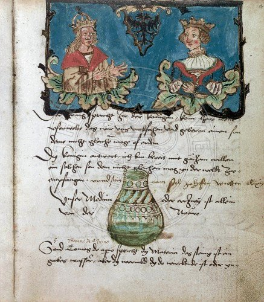
Mysterium conjunctionis : Collection of alchemical tracts. Folio 4 Recto Miscellanea Alchemica XXIV 1543


Essai
d'interprétation
alchimique
des miniatures du mss de Zurich [et de Leiden]
revu le 14 mars
2015
plan
: suite
de la partie I, V : Mysterium
conjunctionis
et AC. VI. une
monade
hiéroglyphique : 1. monade
et
alchimie - 2. le
cercle
croisé - VII. aquarelles
du Codex
Vossianus F 29 : transfert et projection - le mythe
d'Attis et de Cybèle
- VIII
et IX, voir
AC,
III - X.
commentaire sur la lecture de Van Lennep et suite
des aquarelles de
l'AC [Zurich,
Zentralbibliothek,
MS. Rhenoviensis 172] XXII
- XXIII - XXIV
- XXV - XXVI
- XXVII - XXVIII
- XXIX - XXX
- XXXI - XXXII
- XXXIII
- XXXIV - XXXV - XXXVI - XXXVII
- XXXVIII -
Remerciements : à PSP pour les figures de l'Aurora consurgens.
Liste des idéogrammes et symboles : Terre -
Terre -  Feu -
Feu -  Eau -
Eau -  Air -
Air -  Vénus, Lucifer -
Vénus, Lucifer -
 Sulphur
[Soufre sublimé ou dissous] -
Sulphur
[Soufre sublimé ou dissous] -  animus
[Mercurius : Mercure philosophique ou double
Mercure, dissolvant des
Sages] -
animus
[Mercurius : Mercure philosophique ou double
Mercure, dissolvant des
Sages] -  hexagramme de
Salomon [Eau ignée ou Feu
aqueux] -
hexagramme de
Salomon [Eau ignée ou Feu
aqueux] -  Terre
fixe -
Terre
fixe -  anima -
anima -  anima consurgens
[sublimation de l'animus ou du
Mercurius] -
anima consurgens
[sublimation de l'animus ou du
Mercurius] -  nitrum -
nitrum -
 sal -
sal -  ioV
[chaux métallique] -
ioV
[chaux métallique] -  stella -
stella -
 flos -
flos -  stibine
-
stibine
-
 Sol -
Sol -  Luna -
Luna -  Taurus [Rebis] -
Taurus [Rebis] -  arc -
arc -  Arès, Mars, vitriol -
Arès, Mars, vitriol -  safran d'alun [chaux de la terre fixe de l'alun] -
safran d'alun [chaux de la terre fixe de l'alun] -
 alkali fixe sublimé [Neptune] -
alkali fixe sublimé [Neptune] -  Lune mercurielle -
Lune mercurielle -  Zeus -
Zeus -
 Cronos -
Cronos -  nigredo
[Soleil noir] -
nigredo
[Soleil noir] -  adversus-
adversus-  luna
descrecens [in aurorae tempore] -
luna
descrecens [in aurorae tempore] -  Sol
Ares
-
Sol
Ares
-  luna
veneris -
luna
veneris -  Sal
Amon
-
Sal
Amon
-  stella cum
cruce -
stella cum
cruce -  ioV
cristou [chaux
mercurielle] -
ioV
cristou [chaux
mercurielle] -  aurea stibi -
aurea stibi -  antimonium [antimimon]
-
antimonium [antimimon]
-  vitri oleum -
vitri oleum -  AZOTH [qeioV]
-
AZOTH [qeioV]
-  animus -
animus -  salniter -
salniter -  translatio [transfert] -
translatio [transfert] -  cogitare
[projection] -
cogitare
[projection] -  albatio -
albatio -  aes
ustum -
aes
ustum -  sulphur «
azoqué » -
sulphur «
azoqué » -
conseil : attendez que la page [600 Ko] soit complètement chargée puis effectuez une sauvegarde pour consulter hors connexion.
V. Mysterium conjunctionis et AC (suite, cf. AC I)
Dans le processus symbolique, on distingue trois phases que les alchimistes ont rendu par des couleurs : nigredo
ou
dissolution -
albedo : purification ou albification que l'on peut associer
à
l'idéogramme ;
enfin rubedo :
coagulation et accrétion du .
La projection opératoire passe par deux voies, la voie
sèche et la voie humide. Pour des raisons qui tiennent à
l'histoire de la chimie [cf.
Djabir
in E. Darmstaedter, l'Alchimie
de Geber,
Berlin, 1922 ; Archeion.
Archivo di
storia della scienza
6 (1925), p. 320 sq., 7 (1926), p. 257 sq., 8 (1927), p.
95 sq., 214
sq., 9 (1928), p. 63 sq., 191 sq., 462 sq. J. Ruska a
réédité ses nombreux travaux dans Das
Buch der grossen
Chemiker I
(Berlin, 1929), p. 18-31 (« Dschabir »), p. 60-69 («
Geber, Pseudo-Geber »). Le texte traduit l'est d'après W.
Ganzenmüller, Alchimie
im
Mittelalter, p. 208 sq. -
cf. aussi notre prima materia
et Chevreul, critique
de F. Hoefer, I],
c'est la voie sèche qui a
prévalu [et
il semble exclu pour des raisons tenant à des conditions
de
température et de pression que les alchimistes aient pu
employer
la voie humide, autrement que pour utiliser des sels
mercuriels, comme
G. Ranque l'a montré dans sa Pierre
philosophale
(R. Laffont, 1970)].
L'importance de Geber est à ce point extrême qu'il nous
faut revenir un peu sur ce personnage quasi mythique. Les
textes arabes
étaient, avant l'apport de Julius Ruska (1847 - 1949) [Arabische
Alchemisten
und Tabula Smaragdina, Heidelberg, C. F. Winter, 1924]
encore peu connus [notons
au
passage que J. Ruska est le père du prix Nobel Ernst Ruska
(1906
- 1988) pour sa
contribution à l'élaboration du microscope
électronique].
Les premiers renseignements un peu détaillés sont
contenus dans le chapitre consacré à l'alchimie par Ibn
Haldun [Prolégomènes,
t. III = t. XXI de Notices et Extraits, 1868, p. 207-227 de la
traduction].
Le grand historien berbère mentionne dans ce chapitre le grand
maître de l'art Jabir ibn Hayyan - le Geber des alchimistes
occidentaux du moyen âge - qui vivait au VIIIe
siècle de notre ère. Vingt-cinq ans plus tard, Berthelot
publie dans le tome III de sa Chimie du
Moyen
Âge
(1893) treize petits traités de Jabir ibn Hayyan et d'autres,
traduits par Hondas. Vers la même époque, en 1892, M.
Robert Steele fait paraître le texte d'un opuscule de Jabir
intitulé La
découverte
des secrets. En 1905, M. Stapleton publie
dans le Journal of the
R. A. Society of Bengal
un extrait de l'oeuvre sur l'élixir. Enfin, le professeur J.
Ruska de Heidelberg prépare une édition du Livre
des Secrets
de Al-Razi d'après un manuscrit de Leipzig. Entre temps on a
publié dans l'Inde, en 1891, une édition
lithographiée de onze petits traités de Jabir, à
peu près introuvables d'ailleurs. De ces écrits arabes de
Geber ou de ses élèves se dégage un titre : le Kitab Nihayat
al-talab
fi sharh Kitab al-‘Ilm al-muktasab fi
zira'at
al-dhahab (MS
P 27, item 1)
(The Book of the End of
the
Search regarding the commentary on 'The
Book of Acquired Knowledge concerning the Cultivation of Gold')
dû à ‘Izz al-Din Aydamir al-Jaldaki (1342). La
principale théorie du Muktasab
est que tous les métaux sont en réalité identiques
et ne diffèrent l'un de l'autre que par certaines
propriétés accesoires qu'on peut faire disparaître
par un traitement approprié. La substance métallique
débarrassée de ces propriétés accessoires
et accidentelles représente l'or alchimique. Notons que cette
théorie n'était pas partagée par les chimistes
arabes et qu'Avicenne avait eu la clairvoyance de la combattre
et de
soutenir que les métaux différaient les uns des autres et
qu'ils étaient faits de différentes espèces : il
niait la possibilité des transmutations. Voilà qui
annonçait très nettement le concept de corps simple. Nous
rejoignons notre sujet - le mystère de la conjonction - quand on
aura ajouté que ces chimistes arabes divisaient les substances
minérales en trois classes appelées corps, âmes et
esprits. L'or et tous les autres métaux à l'exception du
mercure [il s'agit là du
vif argent vulgaire] sont des CORPS
; le soufre, le sulfure rouge
d'arsenic [kinnabariV,
appelé dans les textes d'Artephius
et dans la Turba
Cambar
dûment identifié par J. Ruska comme « Zinnober
»], le sulfure jaune d'arsenic [auripigmentum
ou orpiment que les
Anciens appelaient tout simplement arsenic : arrenikon
qui se
rapproche de arrenikoV,
mâle ; arrenoqhluV
a le sens d'hermaphrodite. L'orpiment était nommé zerendj
asjar, cf. Kurt Sprengel, Histoire
de la
Médecine, tome II, p. 301, Médecine des Arabes ],
la
marcassite sont des ÂMES.
Nous voici ramenés au coeur
du problème de la conjonction des principes - i.e. Mysterium
conjunctionis
- par ce rapport entre les sulfures d'arsenic où l'on est en
droit de trouver une analogie avec les principes simples :
et .
Le sulfure rouge ou réalgar [zerendj
ahmar ou chokh, cf. Kurt
Sprengel, op. cit.] était encore
désigné sous le terme de sandaraque, d'où les
cabalistes ont tiré Zandarith ou Andarith [cf.
Artephius].
Dans sa Chimie
des Anciens,
Berthelot écrit que l'arsenic sulfuré était
préparé en prenant de l'auripigmentum que l'on coupait en
morceaux, que l'on porphyrisait [relation
avec
les planches du Splendor
solis
et de l'AC, I Fig. IV où le
dragon
est garrotté] : on le faisait alors tremper dans une
solution d'acide [le
terme
générique
était vinaigre] puis la matière, que l'on mettait
à sécher, était mixée avec du sel de
Cappadoce [variété
de sel gemme].
Dès lors, le produit était mis en cibation et
l'opération était réitérée
jusqu'à ce que l'on obtienne un produit blanc : cette
matière était confondue avec de l'alun ou de la
céruse. Enfin, le mercure et le sel ammoniac [qui
n'était pas notre
chlorhydrate mais sans doute du sable] sont les
représentants caractéristiques des ESPRITS.
Cette conception tripartite des principes de l'alchimie est la
plus
classique ; elle va dans le droit fil de la gnose chrétienne et
son symbolisme a été à la fois exploré et
exploité à fond par Jung. Par contre, avec Razis,
nous avons affaire à un autre type de démarche : Muhammad
ibn Zakariya al-Razi, le grand médecin arabe, mort vers 932 [Rhazès
ou Razès : Abu bekr Muhammed ben Zakeriya er Rasi (850/860 -
925), originaire d'Irak ; l'Occident en connaît les Excerpta
ex Libro
Luminis Luminum publiés dans Janus Lacinius in Pret.
Margarita Novella,
1546, pp. 167 et sq., cf. prima
materia],
divise les substances alchimiques en trois groupes : minéral,
animal et végétal. Le groupe minéral est ainsi
subdivisé en ESPRITS
[mercure, sel
ammoniac,
sulfure rouge et
sulfure jaune d'arsenic, soufre], CORPS
[or, argent,
cuivre, fer, plomb, fer
chinois] et en PIERRES
[marcassite,
magnésie, tutiya, lapis-lazuli, malachite, hématite,
alun, kohl (sulfure de plomb et sulfure d'antimoine), talc,
gypse et
verre]. Viennent ensuite les VITRIOLS
[noir, blanc,
jaune,
rouge et vert],
BORAX [natron,
borax d'orfèvre, zarawand-borax (borax extrait de la plante
aristoloche, cf. Ibn Al-Battar, Traité des simples, trad. L.
Leclerc, Paris, t. II, 1881, in-4°, p. 203), borax d'Arabie].
Nous
trouvons enfin les SELS
[sel
doux, sel amer, sel calciné, sel bitumineux, sel indien, sel
d'oeufs, qaly (sic, carbonate de soude brut provenant des
cendres de
plantes maritimes), sel d'urine, sel de cendres (carbonate de
potasse
brut provenant des cendres de plantes terrestres, chaux, sucre
candi].
On pourrait s'étonner de telles dispositions dans la ventilation
des substances énumérées, mais les acides et les
huiles étaient alors considérées comme faisant
partie des substances d'origine animale et végétale ;
notons encore que le salpêtre était désigné
comme le rourec,
que les sulfates de cuivre et de fer se nommaient mazadzab et zakh ou chahirh. Le borax
s'appelait tenker
[c'est le tinkar ou
atinkar dont
parlent Fulcanelli et E. Canseliet] ; le corail rouge,
conseillé dans les cures internes, portait le nom d'ardjewan.
[extraits d'une critique de l'ouvrage sur le Muktasab, rédigé par le chimiste Abu'l-Qasim Mohammad ibn Ahmad al Traqi (texte arabe, trad. anglaise et introduction par E.J. Holmyard, Paul Geuthner, Paris, in-8°, 1923)].
Il est aisé de comprendre que Jung aurait eu davantage de problèmes pour intégrer le système de Razis à son propre schéma de monade psychologique. Autant le système de Djabir intègre nettement la différence de forme dans la matière - anticipant d'ailleurs de façon singulière avec les conceptions de la scolastique médiévale telles qu'un Thomas d'Aquin pouvait avoir, cf. infra- autant le système de Razis - qui était adversaire des transmutations - semble pourtant conçu en sorte de pouvoir y donner accès, ce qui n'est pas le moindre des paradoxes. Jung a du reste été avare de citations sur Rhasis :
« Rhasis a dit : un livre donne accès à un autre (cité par Bonus, in Bibliotheca Chemica Curiosa, vol. II, Margarita pretiosa novella correctissima, pp. 1-80) » [Psychologie et Alchimie, l'Oeuve, p. 405]
conseil évidemment important sur lequel nous aurons l'occasion de revenir. Cet autre passage permettra de situer le débat dans un cadre où nous allons retrouver le combat entre les Platoniciens et les Aristotéliciens :
« ... Mais ce Satan grec a semé dans le champ philosophique de la vraie sagesse l'ivraie et ses fausses graines, j'entends Aristote, Albert, Avicenne, Rasis et ce genre d'hommes qui est ennemi de la lumière de Dieu et de celle de la nature, qui ont faussé toute la sagesse physique et cela, depuis qu'ils ont changé le nom de Sophia en philosophia. » [les Racines de la Conscience, l'Arbre philosophique, p. 375 comme extrait du Theat. Chem., vol. I, 653 mais la référence renvoie à un ouvrage de Penotus...]
On comprend un peu mieux que Dorneus ait été un sectateur de Paracelse et qu'il ait traduit plusieurs de ses ouvrages. Quand on saura que Jung cite très souvent Dorneus, le rapprochement sera aisé à faire entre les vues du psychanalyste en matière de philosophie et l'attrait que Dorneus portait à Platon. Là-dessus, nous renvoyons le lecteur à ce qu'en dit Chevreul dans son Atlas in Idée alchimique, V. Réalisme ou figuralisme : que choisir ? Dans un cas, nous voici confrontés à un empirisme scrupuleux - dont on connaît les limites - ; dans l'autre cas, à une formulation éidétique, résultat d'une synthèse mentale [cf. Chevreul, Résumé d'une histoire de la matière] ; elle se ressent de la projection de la psyché et correspond à la théorie alchimique jungienne. La jonction entre réalisme et figuralisme semble passer par le nominalisme qui permet, outre le fait d'assigner un nom à un concept, de tâcher d'évaluer la réalité même sous tendue par le dit concept. La difficulté est qu'assigner un nom à une idée ne préjuge pas du degré de réalité que sous tend la transcription d'une idée, d'une hypothèse, en terme de niveau de réalité [nous en avons un exemple avec la Mécanique quantique : on lira avec profit sur ce passionnant sujet Michel Paty et Simon Diner]. Ainsi, prenons le lapis. Pour les uns, il constitue un moyen ; pour les autres, il s'agit d'un but. Pour tous, néanmoins, c'est le sujet de l'oeuvre dont l'objet, en refaisant en petit ce que fait la nature, n'est autre que la transformation - sous forme démiurgique par projection - de la psyché de l'opérateur. D'ailleurs cette transformation s'effectue au sein même des matières sur lesquelles travaille l'Artiste : il s'agit de faire évoluer - selon l'hypothèse que nous défendons - un mixte de l'état amorphe vers un état cristallin : c'est là ce passage transitionnel entre l'obscurité et la lumière qui procède du transfert lié à [Noûs]
tandis que la
régénération de la matière saline [au
sens de réincrudation
ou individuation] passe par la projection de [pneuma].
Le
transfert spirituel apparaît ainsi dépendant de l'arch
tupoV et relève
d'inter actions incessantes entre le Moi [idéalisé
comme lapis qui
contient les quatre éléments ]
et le Soi [idéalisé
comme mercurius ].
On peut voir une image de ce transfert opérant dans le Codex
Vossianus f. 99 [partie
droite]. Pour beaucoup
d'alchimistes, sans doute, le lapis n'a constitué qu'une pure
image mentale, une sorte de projection vers un ailleurs - qui
revêt les atours du Soi - dont le Ça [en
terme de psychanalyse] forme
comme une sorte de barrière infranchissable, à l'instar
d'un horizon spatio-temporel où l'on assiste à un
délitement progressif de la matière [en
l'occurrence de la yukh]
comme
Moi [conscience].
L'Art
sacré, l'art d'Hermès, l'art envisagé
généralement, procède d'un tel délitement
du Moi, englobé
ou mieux engobé dans le Soi [l'engobement
formant la
résultante des images éidétiques et/ou figuratives
dont les archétypes ont impressionné - au sens d'une émulsion
photographique - la
psyché de
l'individu pris comme Moi]. C'est ainsi que nous
pouvons
trouver une relation entre la triade {Moi - Soi - Ça} et la
triade { - - }
sans pour le moment que nous soyons assurés de la correspondance
entre les idéogrammes et les concepts sous-tendus par la triade
mentale. Rappelons que le Ça est un concept freudien - Freud
dont Jung devait se départir à l'orée des
années trente - et Freud en parle comme de la psyché
instinctive. Il semble que l'on puisse aller au-delà et parler
d'une psyché primordiale pour ne pas dire
élémentaire. Il n'est pas impossible que l'on puisse
trouver dans les plus anciennes divinités grecques des
équivalents du Ça, avec Ouranos et Gaïa :
et
originelles ne forment-ils pas l'idéogramme du lapis
? Mais
allons plus loin : le Ça n'aurait-il point de rapport avec le
« non-être » en tant qu'il serait la limite du Moi
lorsque le Soi tend vers l'horizon de la perception, autrement
dit
quand la notion même de temps se délite ? Le temps, nous
disent les physiciens, n'est qu'une illusion au sens où Chevreul
l'entendait -
c'est-à-dire une impression organoleptique - et le temps
physique [nous ne parlons
pas du
temps de nos montres] n'a d'existence que lorsque
l'espace se
trouve incurvé au voisinage d'une masse : ainsi, le temps
n'existe littéralement pas pour un photon circulant dans le vide
et sans masse susceptible de le dévier [on
connaît le paradoxe, qui n'est
qu'apparent, de deux photons se croisant parallèlement : la
vitesse de croisement sera tout simplement celle de la vitesse
de la
lumière]. Le temps psychique n'est qu'une contingence
de
la conscience ou si l'on préfère du Moi : un
nouveau-né, dont le Moi n'est qu'embryonnaire, n'a connaissance
que du Ça : le lait de sa mère. Et encore le mot
connaissance est-il forcé puisqu'il ne s'agit que d'un instinct
; on voit par là que l'instinct fait montre d'un cousinage
curieux avec le non-être par l'absence de polarisation du Soi,
c'est-à-dire par projection, d'où le Moi prend forme.
Nous pouvons renverser la proposition si nous admettons que le
Moi est
la limite du Ça lorsque le Soi tend vers une singularité
: l'individuation. Ainsi, le Soi apparait-il comme médiateur
entre le Ça et le Moi ; toutefois, il ne s'agit pas là
d'un effet passif mais bien d'une action : c'est au niveau du
Soi ou si
l'on préfère, en terme de réalité psychique
[la psyché correspond
à une réalité au même titre que la
matière au sens où il s'agit d'une forme, cf.
là-dessus Henry Corbin dans l'ouvrage collectif sur Jung, in Cahiers de l'Herne, 1980],
entre
le Ça éternel et le Moi
éphémère que se nouent et se dénouent des
inter-relations, en un entrelacement à valeur
prométhéenne ; c'est là que (où)
s'expriment ces fameux archétypes que le magicien de
Küsnacht a révélés. Aussi bien faut-il, de
beaucoup, relativiser la valeur de ce que l'on a appelé «
l'inconscient collectif » [Freud]
et que Jung a rebaptisé archétype. Il ne s'agit nullement
de strates d'affects qui imprégneraient la psyché
séculaire héritée de nos aïeux ! Non. Il
s'agit simplement de la réaction primordiale à un
stimulus interne ou externe. Et c'est la manière dont la
psyché naissante - notre Aurora
consurgens
- réagit au stimulus que l'on appelle l'archétype, dans
le sens où nous ne pouvons saisir, de cette interaction, que la
résultante : elle ne s'exprimera d'ailleurs bien souvent que des
lustres plus tard et, bien loin d'une synchronicité - au sens
jungien du terme [Synchronicité
et
Paracelsica, trad. Albin Michel] - faut-il
plutôt
parler d'une « décoaptation » temporelle dans la
mesure où le « lag-time » - du moins chez l'Humain -
entre l'intégration d'un stimulus archétypal et son
expression psychique ne sont que de
manière rarissime des événements contemporains.
On comprend qu'il ne sera pas facile de retrouver les trois principes des alchimistes : SEL -
MERCURIUS - SULPHUR
[principes
principiés]
dans ce continuum de la psyché qui évolue entre le
non-être [nigredo ] et l'individuation [réincrudation
du sulphur dans le
sel : surrection du lapis ].
En revanche, il paraît quelque connivence entre la psyché
tripartite de Freud [conscient,
préconscient,
inconscient] et la figure de l'arbre
philosophique telle qu'on la voit exposée dans le Mercurius
Redivivus
[cf. AC,
I] ; de même
qu'entre les formes élémentaires du cercle [inconscient
= ],
du triangle [préconscient
dans lequel on peut distinguer les états correspondant aux
éléments d'Empédocle] et de l'hexagramme
de Salomon [conscient = qui ressortit du quadratum
et du trivium ].
Le
limbe de la nigredo constitue la limite du Soi et correspond
donc au
Ça : on peut y voir l'horizon firmamental du Philalèthe [cf. Introïtus].
La
logique voudrait que l'on voit dans l'idéogramme du soleil
une image complète de la psyché, i.e. une monade
spirituelle : le point fixe y serait le Moi [sel
central incombustible qui a pour
emblème la salamandre ou la couronne
Le point fondamental à considérer, dans cet analogisme, est l'aspect dynamique. Freud fait remarquer dans ses Essais de Psychanalyse [Payot, 1975, p. 183] :
« ... Conclure du fait que la conscience présente une échelle de netteté et de clarté à l'inexistence de l'inconscient équivaut à affirmer la non-existence de l'obscurité, parce que la lumière présente toutes les gradations, depuis l'éclairage le plus cru jusqu'aux lueurs les plus atténuées ... »
L'argument de Freud est spécieux car on ne saurait comparer sans risque conceptuel un fait physique et une construction mentale. Toutefois, nous ne saurions ignorer - en filigrane de cette note - un traité comme la Lux Obnubilata, etc. d'Antonio Crasselame : la lumière, sortant par soi-même des ténèbres est un enseignement complet, quoique voilé, sur la théorie de la pierre des philosophes. De même apparaît l'AC - nous parlons ici du texte -. Un commentaire de la Lux Obnubilata vaut d'être cité en ce qu'il éclaire d'une façon toute spéciale la note de Freud :
« Et par la force de l'attraction nous pesons nos éléments dans une si juste proportion qu'ils demeurent comme balancés, sans qu'une partie puisse surpasser l'autre ; car lorsqu'un élément égale l'autre en vertu, en sorte par exemple que le fixe ne soit point surmonté par le volatil, ni le volatil par le fixe, alors de cette harmonie naît un juste poids et un mélange parfait. »
Comment ne pas voir ici cette proportion de clair-obscur dans laquelle évolue - à l'instar d'une étoile variable - la conscience ? Comment ne pas deviner que derrière le combat du fixe et du volatil [comprenez dissolution et coagulation], derrière donc cette devise des alchimistes Solve et Coagula - clef de voûte du grand oeuvre - se dissimule l'interaction originelle entre
et , interaction dont la croisée †
n'est autre que le Soi ? Transfert et projection sont
les constantes de
cette singulière attraction gravitationnelle, pour
remployer des
termes d'astronomie physique. Si nous reprenons l'image
du
[cf. supra],
il
est facile de comprendre que, d'un point de vue
dynamique, la
psyché donne d'elle-même une figure instable et
contournée, avec des
échanges permanents entre le Moi et le Soi. Au Moi est
lié le transfert, caractérisé par
; au Soi est liée la projection, mise en
dépendance de .
On conçoit que la note de Freud, concernant le
clair-obscur de
la conscience, se rapporte à la lutte incessante que se
livrent
ces deux médiateurs de l'oeuvre [nous
ne parlons pas, pour le moment des
acteurs, c'est-à-dire du patient et de l'agent]
qui,
à l'instar de et du
sont deux grands ennemis. L'un aspire à la dormance dont
le
Ça est l'asymptote tout autant que la sublimation ;
l'autre
aspire au frappement dont le Moi représente l'accrétion
et, pour l'alchimiste, la réincrudation.
De cette lutte, Héphaistos est l'arbitre :
personnification du
feu AZOTH ou , il
génère la
lumière
« née par soi-même de l'obscurité » :
le mythe de la naissance de Pallas Athéna représente
l'irruption du conscient ou Moi [singularité]
à partir du spiritus ou espace du Soi [sujet
de la
projection].
N'oublions pas que le spiritus n'est que la
représentation du ou unus
mundus. Il contient les deux
principes de l'oeuvre
[agent et patient]
ainsi
que le moyen de les conjoindre : c'est cette
conjonction, par plongement du dans la , qui symbolise l'émergence du Moi. Le
problème qui reste en suspend ou, si l'on préfère,
le point où alchimie et psychologie divergent, est le
suivant.
Nous savons que le but de l'oeuvre est la préparation du
lapis,
objet constitué et qui ne semble plus susceptible de
modifications ; à un certain moment de son élaboration,
dans la Grande coction, le fixe va l'emporter sur le
volatil [ou le
visqueux ce qui est superposable]
et la coagulation de l'eau mercurielle par laquelle se
signale la
naissance du phénix [cf.
le
poème
du
phénix de Lactance] semble
mettre un terme
à la carrière de l'entropie, envisagée dans
l'évolution de l'oeuf philosophal. Fulcanelli et De
Cyrano
Bergerac disent ici que la rémore prend le pas sur la
salamandre
[cf. Myst.
Cath.]
Mais tel n'est pas le cas du Moi, imbibé, enrichi,
altéré, modifié en tout ou partie, par les
interactions issues du Soi et dont le Ça, de surcroît,
forme le tenseur. La divergence que nous avons évoquée
ne
vaut, pour autant, que dans le système que nous avons
toujours
défendu jusqu'à présent : celui où le lapis
se présente
comme une gemme orientale sans autre pouvoir que celui
d'exercer des
propriétés organoleptiques sensorielles - d'ordre
spirituel - sur la psyché. Il s'agit là de
propriétés où les fonctions de transfert sont mises en
jeu et il se trouve que la
lumière y joue un rôle fondamental. Si à
présent, nous envisageons le lapis
d'une façon
« orthodoxe », il s'agit de la pierre de projection , douée de la capacité de
transmutation de métaux « vils » en métaux
réputés « nobles ». Dans le cas n°1, le
transfert n'est pas matériel mais uniquement spirituel :
il est
dû à la fascination exercée sur la psyché
par les qualités de métamorphose prismatique
exercées sur la lumière blanche et c'est la pierre
gemme,
dûment taillée, qui les provoque. Dans le cas n°2, la
projection de la poudre transmutatoire provoque une
métamorphose
de la matière et une transformation radicale du métal ;
pour impossible que cela soit dans notre monde physique,
cela est
possible dans le monde spirituel où les niveaux de
réalité sont différents. Nous avons donc ici un
exemple manifeste de complémentarité où
transfert
et projection
s'ordonnent différemment selon que le lapis
se
situe dans - ou en dehors de - la sphère de projection
numineuse du sujet, ce que l'on peut résumer en
cette question : le sujet peut-il être son objet ? Ce
cas de
figure semble exister et va nous permettre d'établir un
parallèle entre la nigredo , le
phénomène de « dormance » et le rêve.
C'est un truisme de dire que, durant le sommeil, la
conscience - du
moins l'état d'éveil - disparaît : nous assistons
alors à deux phases, l'une de sommeil profond et l'autre
de
sommeil paradoxal où l'activité corticale est très
importante : c'est dans cette phase qu'a lieu le rêve.
Si nous
reprenons la triade {Moi - Soi - Ça}, nous voyons que la
cessation de l'état d'éveil correspond à une
occultation du Moi et à une excitation de l'état de
dormance du Ça, par activation des rapports entre le Ça
et le Soi. Quelle sorte de rapport s'établit-il alors
entre ces
deux composantes de la triade ? Le manque total de
sommeil se soldant
par la mort de l'individu, on est en droit de supputer
que le Ça
agit en régénérant le Soi. Reprenons : la nigredo
est la phase de l'oeuvre alchimique, dans la Grande
coction, où
le sel fixe, bien qu'incombustible, ne se manifeste
qu'en essence : la †
en constitue le
support et le fer - au sens de chaux métallique ou ioV
- en est la
substance. La conscience, en cet état, est donc
assimilable
à la matière qui est au stade de la dissolution. Le
corps
du lapis est alors souvent comparé à la Lunaire : c'est
l'époque de l'eau permanente ou aqua
permanens des textes.
Jaroš Griemiller z Tøebska, Rosarium Philosophorum, f. 73v, Prague, 1578
VI. une monade hiéroglyphique.
1. Monade et alchimie
extrait de l'Aurea Catena Homeri
Cette
figure du codex Vossianus
montre ce nigrum
nigrius nigro en sa
partie supérieure : [Cronos]
dévorant ses
enfants ou antimoine saturnin d'Artephius.
On ne saurait mieux visualiser ce spiritus
corruptus
directement lié au pneuma.
La sublimation du est
intimement liée au vents du sud [cf.
AC,
I] et, en l'occurrence, dans ce spiritus qui
gagne le
Noûs, nous verrions volontiers l'action de l'EuroV,
qui vient du Levant [le
rapport est immédiat avec
l'Auro hora] : c'est le vent qui brûle, chaud et
sec,
celui qui accompagne le lever de Lucifer ,
en
particulier au temps de la canicule, lorsque Sirius lui est
conjoint [rappelons
que par cabale, l'EuroV
doit être
rapproché de eurooV
: coulant bine, fluent, état du Mercure déterminant la
sublimation : on comprend que ce vent, chaud et sec,
détermine
la « transpiration du corps », cf. supra Lambsprinck].
À
droite, en haut, nous apercevons trois des ingrédients de
l'oeuvre : la flèche, la colombe et la fleur. La flèche,
on la retrouve à la figure V
dans
ces aigles sagittaire qui entourent le prophète Zadith [cf. AC,
I]. Cette flèche vaut pour le dont elle
annonce la réincrudation que l'on voit représentée
dans le Ros.
Phil. par le retour de l'âme dans le
corps de
l'androgyne ou hermaphrodite. La colombe est le symbole du spiritus sanctus
- le
Noûs pris dans ce contexte - et nous devons lui accorder
l'idéogramme de l'animus.
Pour cela, on adapterera l'un des hiéroglyphes de John Dee :
[cf.
Monas
Hieroglyphica].
Dans la Nature de
l'inconscient, Jung écrit que :
« Le Saint-Esprit est, dans la représentation originelle, comme le montre le miracle de la Pentecôte, un vent puissant, le pneuma - "le vent souffle où il veut - to pneuma pnei opon qelei". Animo descendus per orbem solis tribuitur : quant à l'esprit, il est dit qu'il descend par le disque du soleil. » [Problèmes de l'âme moderne, trad. Buchet Chastel, Paris, 1961]
Et ce spiritus sanctus féconde la Vierge sous les dehors d'une colombe. Il ne s'agit donc point du mercurius mais de
l'animus et ce point de
science est fort important. Il
s'inscrit directement dans le cadre de notre monade
et permet de
comprendre pourquoi elle doit, en fait, être
représentée sous la forme d'un double cercle. Notre
colombe est à Astarté [c'est-à-dire
Aphrodite]
ce que le vautour est à Apollon et l'on comprend pourquoi
Philalèthe assure :
« Toutefois il se trouve, dans la forêt de Diane, deux colombes qui adoucissent sa rage insensée ... » [Introïtus, VII]
Car c'est évoquer, implicitement, les deux Soufres dont l'un est d'origine métallique [] et
l'autre
d'origine minérale ou plus exactement chthonienne [] ; la forêt
de Diane correspond au
mercurius mais pris dans son
premier état : la rage
insensée évoque la folie de Cronos dévorant sa
progéniture ; le
mercurius
senex avait conclu un marché avec ses acolytes, les Titans [titanoV,
chaux]
en sorte de ne pas perdre le pouvoir, c'est-à-dire la Force.
Seul Zeus , on le sait, devait
échapper au « massacre
des Innocents
» parce que sa mère substitua in extremis une pierre
à l'enfant. Il n'est pas difficile d'assimiler Cronos au
transfert de Jung et Jupiter au phénomène dit de
projection. Un schéma nous
permettra
d'ailleurs de voir en quoi,
au plan hermétique, le temps est lié à l'espace.

Remerciements : à PSP pour les figures de l'Aurora consurgens.
Liste des idéogrammes et symboles :
Terre - Feu -
Eau -
Air - Vénus, Lucifer -
Sulphur
[Soufre sublimé ou dissous] -
animus
[Mercurius : Mercure philosophique ou double
Mercure, dissolvant des
Sages] -
hexagramme de
Salomon [Eau ignée ou Feu
aqueux] - Terre
fixe - anima -
anima consurgens
[sublimation de l'animus ou du
Mercurius] - nitrum -
sal -
ioV
[chaux métallique] - stella -
flos - stibine
-
Sol - Luna - Taurus [Rebis] -
arc -
Arès, Mars, vitriol -
safran d'alun [chaux de la terre fixe de l'alun] -
alkali fixe sublimé [Neptune] -
Lune mercurielle - Zeus -
Cronos - nigredo
[Soleil noir] -
adversus-
luna
descrecens [in aurorae tempore] - Sol
Ares
- luna
veneris - Sal
Amon
- stella cum
cruce -
ioV
cristou [chaux
mercurielle] -
aurea stibi -
antimonium [antimimon]
- vitri oleum -
AZOTH [qeioV]
- animus -
salniter -
cogitare
[projection] - aes
ustum - sulphur «
azoqué » -conseil : attendez que la page [600 Ko] soit complètement chargée puis effectuez une sauvegarde pour consulter hors connexion.
V. Mysterium conjunctionis et AC (suite, cf. AC I)
Dans le processus symbolique, on distingue trois phases que les alchimistes ont rendu par des couleurs : nigredo
ou
dissolution -
albedo : purification ou albification que l'on peut associer
à
l'idéogramme ;
enfin rubedo :
coagulation et accrétion du .
La projection opératoire passe par deux voies, la voie
sèche et la voie humide. Pour des raisons qui tiennent à
l'histoire de la chimie [cf.
Djabir
in E. Darmstaedter, l'Alchimie
de Geber,
Berlin, 1922 ; Archeion.
Archivo di
storia della scienza
6 (1925), p. 320 sq., 7 (1926), p. 257 sq., 8 (1927), p.
95 sq., 214
sq., 9 (1928), p. 63 sq., 191 sq., 462 sq. J. Ruska a
réédité ses nombreux travaux dans Das
Buch der grossen
Chemiker I
(Berlin, 1929), p. 18-31 (« Dschabir »), p. 60-69 («
Geber, Pseudo-Geber »). Le texte traduit l'est d'après W.
Ganzenmüller, Alchimie
im
Mittelalter, p. 208 sq. -
cf. aussi notre prima materia
et Chevreul, critique
de F. Hoefer, I],
c'est la voie sèche qui a
prévalu [et
il semble exclu pour des raisons tenant à des conditions
de
température et de pression que les alchimistes aient pu
employer
la voie humide, autrement que pour utiliser des sels
mercuriels, comme
G. Ranque l'a montré dans sa Pierre
philosophale
(R. Laffont, 1970)].
L'importance de Geber est à ce point extrême qu'il nous
faut revenir un peu sur ce personnage quasi mythique. Les
textes arabes
étaient, avant l'apport de Julius Ruska (1847 - 1949) [Arabische
Alchemisten
und Tabula Smaragdina, Heidelberg, C. F. Winter, 1924]
encore peu connus [notons
au
passage que J. Ruska est le père du prix Nobel Ernst Ruska
(1906
- 1988) pour sa
contribution à l'élaboration du microscope
électronique].
Les premiers renseignements un peu détaillés sont
contenus dans le chapitre consacré à l'alchimie par Ibn
Haldun [Prolégomènes,
t. III = t. XXI de Notices et Extraits, 1868, p. 207-227 de la
traduction].
Le grand historien berbère mentionne dans ce chapitre le grand
maître de l'art Jabir ibn Hayyan - le Geber des alchimistes
occidentaux du moyen âge - qui vivait au VIIIe
siècle de notre ère. Vingt-cinq ans plus tard, Berthelot
publie dans le tome III de sa Chimie du
Moyen
Âge
(1893) treize petits traités de Jabir ibn Hayyan et d'autres,
traduits par Hondas. Vers la même époque, en 1892, M.
Robert Steele fait paraître le texte d'un opuscule de Jabir
intitulé La
découverte
des secrets. En 1905, M. Stapleton publie
dans le Journal of the
R. A. Society of Bengal
un extrait de l'oeuvre sur l'élixir. Enfin, le professeur J.
Ruska de Heidelberg prépare une édition du Livre
des Secrets
de Al-Razi d'après un manuscrit de Leipzig. Entre temps on a
publié dans l'Inde, en 1891, une édition
lithographiée de onze petits traités de Jabir, à
peu près introuvables d'ailleurs. De ces écrits arabes de
Geber ou de ses élèves se dégage un titre : le Kitab Nihayat
al-talab
fi sharh Kitab al-‘Ilm al-muktasab fi
zira'at
al-dhahab (MS
P 27, item 1)
(The Book of the End of
the
Search regarding the commentary on 'The
Book of Acquired Knowledge concerning the Cultivation of Gold')
dû à ‘Izz al-Din Aydamir al-Jaldaki (1342). La
principale théorie du Muktasab
est que tous les métaux sont en réalité identiques
et ne diffèrent l'un de l'autre que par certaines
propriétés accesoires qu'on peut faire disparaître
par un traitement approprié. La substance métallique
débarrassée de ces propriétés accessoires
et accidentelles représente l'or alchimique. Notons que cette
théorie n'était pas partagée par les chimistes
arabes et qu'Avicenne avait eu la clairvoyance de la combattre
et de
soutenir que les métaux différaient les uns des autres et
qu'ils étaient faits de différentes espèces : il
niait la possibilité des transmutations. Voilà qui
annonçait très nettement le concept de corps simple. Nous
rejoignons notre sujet - le mystère de la conjonction - quand on
aura ajouté que ces chimistes arabes divisaient les substances
minérales en trois classes appelées corps, âmes et
esprits. L'or et tous les autres métaux à l'exception du
mercure [il s'agit là du
vif argent vulgaire] sont des CORPS
; le soufre, le sulfure rouge
d'arsenic [kinnabariV,
appelé dans les textes d'Artephius
et dans la Turba
Cambar
dûment identifié par J. Ruska comme « Zinnober
»], le sulfure jaune d'arsenic [auripigmentum
ou orpiment que les
Anciens appelaient tout simplement arsenic : arrenikon
qui se
rapproche de arrenikoV,
mâle ; arrenoqhluV
a le sens d'hermaphrodite. L'orpiment était nommé zerendj
asjar, cf. Kurt Sprengel, Histoire
de la
Médecine, tome II, p. 301, Médecine des Arabes ],
la
marcassite sont des ÂMES.
Nous voici ramenés au coeur
du problème de la conjonction des principes - i.e. Mysterium
conjunctionis
- par ce rapport entre les sulfures d'arsenic où l'on est en
droit de trouver une analogie avec les principes simples :
et .
Le sulfure rouge ou réalgar [zerendj
ahmar ou chokh, cf. Kurt
Sprengel, op. cit.] était encore
désigné sous le terme de sandaraque, d'où les
cabalistes ont tiré Zandarith ou Andarith [cf.
Artephius].
Dans sa Chimie
des Anciens,
Berthelot écrit que l'arsenic sulfuré était
préparé en prenant de l'auripigmentum que l'on coupait en
morceaux, que l'on porphyrisait [relation
avec
les planches du Splendor
solis
et de l'AC, I Fig. IV où le
dragon
est garrotté] : on le faisait alors tremper dans une
solution d'acide [le
terme
générique
était vinaigre] puis la matière, que l'on mettait
à sécher, était mixée avec du sel de
Cappadoce [variété
de sel gemme].
Dès lors, le produit était mis en cibation et
l'opération était réitérée
jusqu'à ce que l'on obtienne un produit blanc : cette
matière était confondue avec de l'alun ou de la
céruse. Enfin, le mercure et le sel ammoniac [qui
n'était pas notre
chlorhydrate mais sans doute du sable] sont les
représentants caractéristiques des ESPRITS.
Cette conception tripartite des principes de l'alchimie est la
plus
classique ; elle va dans le droit fil de la gnose chrétienne et
son symbolisme a été à la fois exploré et
exploité à fond par Jung. Par contre, avec Razis,
nous avons affaire à un autre type de démarche : Muhammad
ibn Zakariya al-Razi, le grand médecin arabe, mort vers 932 [Rhazès
ou Razès : Abu bekr Muhammed ben Zakeriya er Rasi (850/860 -
925), originaire d'Irak ; l'Occident en connaît les Excerpta
ex Libro
Luminis Luminum publiés dans Janus Lacinius in Pret.
Margarita Novella,
1546, pp. 167 et sq., cf. prima
materia],
divise les substances alchimiques en trois groupes : minéral,
animal et végétal. Le groupe minéral est ainsi
subdivisé en ESPRITS
[mercure, sel
ammoniac,
sulfure rouge et
sulfure jaune d'arsenic, soufre], CORPS
[or, argent,
cuivre, fer, plomb, fer
chinois] et en PIERRES
[marcassite,
magnésie, tutiya, lapis-lazuli, malachite, hématite,
alun, kohl (sulfure de plomb et sulfure d'antimoine), talc,
gypse et
verre]. Viennent ensuite les VITRIOLS
[noir, blanc,
jaune,
rouge et vert],
BORAX [natron,
borax d'orfèvre, zarawand-borax (borax extrait de la plante
aristoloche, cf. Ibn Al-Battar, Traité des simples, trad. L.
Leclerc, Paris, t. II, 1881, in-4°, p. 203), borax d'Arabie].
Nous
trouvons enfin les SELS
[sel
doux, sel amer, sel calciné, sel bitumineux, sel indien, sel
d'oeufs, qaly (sic, carbonate de soude brut provenant des
cendres de
plantes maritimes), sel d'urine, sel de cendres (carbonate de
potasse
brut provenant des cendres de plantes terrestres, chaux, sucre
candi].
On pourrait s'étonner de telles dispositions dans la ventilation
des substances énumérées, mais les acides et les
huiles étaient alors considérées comme faisant
partie des substances d'origine animale et végétale ;
notons encore que le salpêtre était désigné
comme le rourec,
que les sulfates de cuivre et de fer se nommaient mazadzab et zakh ou chahirh. Le borax
s'appelait tenker
[c'est le tinkar ou
atinkar dont
parlent Fulcanelli et E. Canseliet] ; le corail rouge,
conseillé dans les cures internes, portait le nom d'ardjewan.[extraits d'une critique de l'ouvrage sur le Muktasab, rédigé par le chimiste Abu'l-Qasim Mohammad ibn Ahmad al Traqi (texte arabe, trad. anglaise et introduction par E.J. Holmyard, Paul Geuthner, Paris, in-8°, 1923)].
Il est aisé de comprendre que Jung aurait eu davantage de problèmes pour intégrer le système de Razis à son propre schéma de monade psychologique. Autant le système de Djabir intègre nettement la différence de forme dans la matière - anticipant d'ailleurs de façon singulière avec les conceptions de la scolastique médiévale telles qu'un Thomas d'Aquin pouvait avoir, cf. infra- autant le système de Razis - qui était adversaire des transmutations - semble pourtant conçu en sorte de pouvoir y donner accès, ce qui n'est pas le moindre des paradoxes. Jung a du reste été avare de citations sur Rhasis :
« Rhasis a dit : un livre donne accès à un autre (cité par Bonus, in Bibliotheca Chemica Curiosa, vol. II, Margarita pretiosa novella correctissima, pp. 1-80) » [Psychologie et Alchimie, l'Oeuve, p. 405]
conseil évidemment important sur lequel nous aurons l'occasion de revenir. Cet autre passage permettra de situer le débat dans un cadre où nous allons retrouver le combat entre les Platoniciens et les Aristotéliciens :
« ... Mais ce Satan grec a semé dans le champ philosophique de la vraie sagesse l'ivraie et ses fausses graines, j'entends Aristote, Albert, Avicenne, Rasis et ce genre d'hommes qui est ennemi de la lumière de Dieu et de celle de la nature, qui ont faussé toute la sagesse physique et cela, depuis qu'ils ont changé le nom de Sophia en philosophia. » [les Racines de la Conscience, l'Arbre philosophique, p. 375 comme extrait du Theat. Chem., vol. I, 653 mais la référence renvoie à un ouvrage de Penotus...]
On comprend un peu mieux que Dorneus ait été un sectateur de Paracelse et qu'il ait traduit plusieurs de ses ouvrages. Quand on saura que Jung cite très souvent Dorneus, le rapprochement sera aisé à faire entre les vues du psychanalyste en matière de philosophie et l'attrait que Dorneus portait à Platon. Là-dessus, nous renvoyons le lecteur à ce qu'en dit Chevreul dans son Atlas in Idée alchimique, V. Réalisme ou figuralisme : que choisir ? Dans un cas, nous voici confrontés à un empirisme scrupuleux - dont on connaît les limites - ; dans l'autre cas, à une formulation éidétique, résultat d'une synthèse mentale [cf. Chevreul, Résumé d'une histoire de la matière] ; elle se ressent de la projection de la psyché et correspond à la théorie alchimique jungienne. La jonction entre réalisme et figuralisme semble passer par le nominalisme qui permet, outre le fait d'assigner un nom à un concept, de tâcher d'évaluer la réalité même sous tendue par le dit concept. La difficulté est qu'assigner un nom à une idée ne préjuge pas du degré de réalité que sous tend la transcription d'une idée, d'une hypothèse, en terme de niveau de réalité [nous en avons un exemple avec la Mécanique quantique : on lira avec profit sur ce passionnant sujet Michel Paty et Simon Diner]. Ainsi, prenons le lapis. Pour les uns, il constitue un moyen ; pour les autres, il s'agit d'un but. Pour tous, néanmoins, c'est le sujet de l'oeuvre dont l'objet, en refaisant en petit ce que fait la nature, n'est autre que la transformation - sous forme démiurgique par projection - de la psyché de l'opérateur. D'ailleurs cette transformation s'effectue au sein même des matières sur lesquelles travaille l'Artiste : il s'agit de faire évoluer - selon l'hypothèse que nous défendons - un mixte de l'état amorphe vers un état cristallin : c'est là ce passage transitionnel entre l'obscurité et la lumière qui procède du transfert lié à
[Noûs]
tandis que la
régénération de la matière saline [au
sens de réincrudation
ou individuation] passe par la projection de [pneuma].
Le
transfert spirituel apparaît ainsi dépendant de l'arch
tupoV et relève
d'inter actions incessantes entre le Moi [idéalisé
comme lapis qui
contient les quatre éléments ]
et le Soi [idéalisé
comme mercurius ].
On peut voir une image de ce transfert opérant dans le Codex
Vossianus f. 99 [partie
droite]. Pour beaucoup
d'alchimistes, sans doute, le lapis n'a constitué qu'une pure
image mentale, une sorte de projection vers un ailleurs - qui
revêt les atours du Soi - dont le Ça [en
terme de psychanalyse] forme
comme une sorte de barrière infranchissable, à l'instar
d'un horizon spatio-temporel où l'on assiste à un
délitement progressif de la matière [en
l'occurrence de la yukh]
comme
Moi [conscience].
L'Art
sacré, l'art d'Hermès, l'art envisagé
généralement, procède d'un tel délitement
du Moi, englobé
ou mieux engobé dans le Soi [l'engobement
formant la
résultante des images éidétiques et/ou figuratives
dont les archétypes ont impressionné - au sens d'une émulsion
photographique - la
psyché de
l'individu pris comme Moi]. C'est ainsi que nous
pouvons
trouver une relation entre la triade {Moi - Soi - Ça} et la
triade { - - }
sans pour le moment que nous soyons assurés de la correspondance
entre les idéogrammes et les concepts sous-tendus par la triade
mentale. Rappelons que le Ça est un concept freudien - Freud
dont Jung devait se départir à l'orée des
années trente - et Freud en parle comme de la psyché
instinctive. Il semble que l'on puisse aller au-delà et parler
d'une psyché primordiale pour ne pas dire
élémentaire. Il n'est pas impossible que l'on puisse
trouver dans les plus anciennes divinités grecques des
équivalents du Ça, avec Ouranos et Gaïa :
et
originelles ne forment-ils pas l'idéogramme du lapis
? Mais
allons plus loin : le Ça n'aurait-il point de rapport avec le
« non-être » en tant qu'il serait la limite du Moi
lorsque le Soi tend vers l'horizon de la perception, autrement
dit
quand la notion même de temps se délite ? Le temps, nous
disent les physiciens, n'est qu'une illusion au sens où Chevreul
l'entendait -
c'est-à-dire une impression organoleptique - et le temps
physique [nous ne parlons
pas du
temps de nos montres] n'a d'existence que lorsque
l'espace se
trouve incurvé au voisinage d'une masse : ainsi, le temps
n'existe littéralement pas pour un photon circulant dans le vide
et sans masse susceptible de le dévier [on
connaît le paradoxe, qui n'est
qu'apparent, de deux photons se croisant parallèlement : la
vitesse de croisement sera tout simplement celle de la vitesse
de la
lumière]. Le temps psychique n'est qu'une contingence
de
la conscience ou si l'on préfère du Moi : un
nouveau-né, dont le Moi n'est qu'embryonnaire, n'a connaissance
que du Ça : le lait de sa mère. Et encore le mot
connaissance est-il forcé puisqu'il ne s'agit que d'un instinct
; on voit par là que l'instinct fait montre d'un cousinage
curieux avec le non-être par l'absence de polarisation du Soi,
c'est-à-dire par projection, d'où le Moi prend forme.
Nous pouvons renverser la proposition si nous admettons que le
Moi est
la limite du Ça lorsque le Soi tend vers une singularité
: l'individuation. Ainsi, le Soi apparait-il comme médiateur
entre le Ça et le Moi ; toutefois, il ne s'agit pas là
d'un effet passif mais bien d'une action : c'est au niveau du
Soi ou si
l'on préfère, en terme de réalité psychique
[la psyché correspond
à une réalité au même titre que la
matière au sens où il s'agit d'une forme, cf.
là-dessus Henry Corbin dans l'ouvrage collectif sur Jung, in Cahiers de l'Herne, 1980],
entre
le Ça éternel et le Moi
éphémère que se nouent et se dénouent des
inter-relations, en un entrelacement à valeur
prométhéenne ; c'est là que (où)
s'expriment ces fameux archétypes que le magicien de
Küsnacht a révélés. Aussi bien faut-il, de
beaucoup, relativiser la valeur de ce que l'on a appelé «
l'inconscient collectif » [Freud]
et que Jung a rebaptisé archétype. Il ne s'agit nullement
de strates d'affects qui imprégneraient la psyché
séculaire héritée de nos aïeux ! Non. Il
s'agit simplement de la réaction primordiale à un
stimulus interne ou externe. Et c'est la manière dont la
psyché naissante - notre Aurora
consurgens
- réagit au stimulus que l'on appelle l'archétype, dans
le sens où nous ne pouvons saisir, de cette interaction, que la
résultante : elle ne s'exprimera d'ailleurs bien souvent que des
lustres plus tard et, bien loin d'une synchronicité - au sens
jungien du terme [Synchronicité
et
Paracelsica, trad. Albin Michel] - faut-il
plutôt
parler d'une « décoaptation » temporelle dans la
mesure où le « lag-time » - du moins chez l'Humain -
entre l'intégration d'un stimulus archétypal et son
expression psychique ne sont que de
manière rarissime des événements contemporains.On comprend qu'il ne sera pas facile de retrouver les trois principes des alchimistes : SEL
-
MERCURIUS - SULPHUR
[principes
principiés]
dans ce continuum de la psyché qui évolue entre le
non-être [nigredo ] et l'individuation [réincrudation
du sulphur dans le
sel : surrection du lapis ].
En revanche, il paraît quelque connivence entre la psyché
tripartite de Freud [conscient,
préconscient,
inconscient] et la figure de l'arbre
philosophique telle qu'on la voit exposée dans le Mercurius
Redivivus
[cf. AC,
I] ; de même
qu'entre les formes élémentaires du cercle [inconscient
= ],
du triangle [préconscient
dans lequel on peut distinguer les états correspondant aux
éléments d'Empédocle] et de l'hexagramme
de Salomon [conscient = qui ressortit du quadratum
et du trivium ].
Le
limbe de la nigredo constitue la limite du Soi et correspond
donc au
Ça : on peut y voir l'horizon firmamental du Philalèthe [cf. Introïtus].
La
logique voudrait que l'on voit dans l'idéogramme du soleil
une image complète de la psyché, i.e. une monade
spirituelle : le point fixe y serait le Moi [sel
central incombustible qui a pour
emblème la salamandre ou la couronne 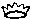
dont le rapport avec l'étoile de Salomon est évident] ; l'espace compris entre le centre et le limbe serait le Soi et correspondrait à cette zone d'interactions et de turbulences dont les archétypes jungiens ne seraient que les « macro structures » ; enfin le Ça correspondrait à ce que Paul Klee nomme dans l'un de ses tableaux la « limite du pays fertile » en ce que le temps y subirait une sublimation progressive.Le point fondamental à considérer, dans cet analogisme, est l'aspect dynamique. Freud fait remarquer dans ses Essais de Psychanalyse [Payot, 1975, p. 183] :
« ... Conclure du fait que la conscience présente une échelle de netteté et de clarté à l'inexistence de l'inconscient équivaut à affirmer la non-existence de l'obscurité, parce que la lumière présente toutes les gradations, depuis l'éclairage le plus cru jusqu'aux lueurs les plus atténuées ... »
L'argument de Freud est spécieux car on ne saurait comparer sans risque conceptuel un fait physique et une construction mentale. Toutefois, nous ne saurions ignorer - en filigrane de cette note - un traité comme la Lux Obnubilata, etc. d'Antonio Crasselame : la lumière, sortant par soi-même des ténèbres est un enseignement complet, quoique voilé, sur la théorie de la pierre des philosophes. De même apparaît l'AC - nous parlons ici du texte -. Un commentaire de la Lux Obnubilata vaut d'être cité en ce qu'il éclaire d'une façon toute spéciale la note de Freud :
« Et par la force de l'attraction nous pesons nos éléments dans une si juste proportion qu'ils demeurent comme balancés, sans qu'une partie puisse surpasser l'autre ; car lorsqu'un élément égale l'autre en vertu, en sorte par exemple que le fixe ne soit point surmonté par le volatil, ni le volatil par le fixe, alors de cette harmonie naît un juste poids et un mélange parfait. »
Comment ne pas voir ici cette proportion de clair-obscur dans laquelle évolue - à l'instar d'une étoile variable - la conscience ? Comment ne pas deviner que derrière le combat du fixe et du volatil [comprenez dissolution et coagulation], derrière donc cette devise des alchimistes Solve et Coagula - clef de voûte du grand oeuvre - se dissimule l'interaction originelle entre
et , interaction dont la croisée †
n'est autre que le Soi ? Transfert et projection sont
les constantes de
cette singulière attraction gravitationnelle, pour
remployer des
termes d'astronomie physique. Si nous reprenons l'image
du
[cf. supra],
il
est facile de comprendre que, d'un point de vue
dynamique, la
psyché donne d'elle-même une figure instable et
contournée, avec des
échanges permanents entre le Moi et le Soi. Au Moi est
lié le transfert, caractérisé par
; au Soi est liée la projection, mise en
dépendance de .
On conçoit que la note de Freud, concernant le
clair-obscur de
la conscience, se rapporte à la lutte incessante que se
livrent
ces deux médiateurs de l'oeuvre [nous
ne parlons pas, pour le moment des
acteurs, c'est-à-dire du patient et de l'agent]
qui,
à l'instar de et du
sont deux grands ennemis. L'un aspire à la dormance dont
le
Ça est l'asymptote tout autant que la sublimation ;
l'autre
aspire au frappement dont le Moi représente l'accrétion
et, pour l'alchimiste, la réincrudation.
De cette lutte, Héphaistos est l'arbitre :
personnification du
feu AZOTH ou , il
génère la
lumière
« née par soi-même de l'obscurité » :
le mythe de la naissance de Pallas Athéna représente
l'irruption du conscient ou Moi [singularité]
à partir du spiritus ou espace du Soi [sujet
de la
projection].
N'oublions pas que le spiritus n'est que la
représentation du ou unus
mundus. Il contient les deux
principes de l'oeuvre
[agent et patient]
ainsi
que le moyen de les conjoindre : c'est cette
conjonction, par plongement du dans la , qui symbolise l'émergence du Moi. Le
problème qui reste en suspend ou, si l'on préfère,
le point où alchimie et psychologie divergent, est le
suivant.
Nous savons que le but de l'oeuvre est la préparation du
lapis,
objet constitué et qui ne semble plus susceptible de
modifications ; à un certain moment de son élaboration,
dans la Grande coction, le fixe va l'emporter sur le
volatil [ou le
visqueux ce qui est superposable]
et la coagulation de l'eau mercurielle par laquelle se
signale la
naissance du phénix [cf.
le
poème
du
phénix de Lactance] semble
mettre un terme
à la carrière de l'entropie, envisagée dans
l'évolution de l'oeuf philosophal. Fulcanelli et De
Cyrano
Bergerac disent ici que la rémore prend le pas sur la
salamandre
[cf. Myst.
Cath.]
Mais tel n'est pas le cas du Moi, imbibé, enrichi,
altéré, modifié en tout ou partie, par les
interactions issues du Soi et dont le Ça, de surcroît,
forme le tenseur. La divergence que nous avons évoquée
ne
vaut, pour autant, que dans le système que nous avons
toujours
défendu jusqu'à présent : celui où le lapis
se présente
comme une gemme orientale sans autre pouvoir que celui
d'exercer des
propriétés organoleptiques sensorielles - d'ordre
spirituel - sur la psyché. Il s'agit là de
propriétés où les fonctions de transfert sont mises en
jeu et il se trouve que la
lumière y joue un rôle fondamental. Si à
présent, nous envisageons le lapis
d'une façon
« orthodoxe », il s'agit de la pierre de projection , douée de la capacité de
transmutation de métaux « vils » en métaux
réputés « nobles ». Dans le cas n°1, le
transfert n'est pas matériel mais uniquement spirituel :
il est
dû à la fascination exercée sur la psyché
par les qualités de métamorphose prismatique
exercées sur la lumière blanche et c'est la pierre
gemme,
dûment taillée, qui les provoque. Dans le cas n°2, la
projection de la poudre transmutatoire provoque une
métamorphose
de la matière et une transformation radicale du métal ;
pour impossible que cela soit dans notre monde physique,
cela est
possible dans le monde spirituel où les niveaux de
réalité sont différents. Nous avons donc ici un
exemple manifeste de complémentarité où
transfert
et projection
s'ordonnent différemment selon que le lapis
se
situe dans - ou en dehors de - la sphère de projection
numineuse du sujet, ce que l'on peut résumer en
cette question : le sujet peut-il être son objet ? Ce
cas de
figure semble exister et va nous permettre d'établir un
parallèle entre la nigredo , le
phénomène de « dormance » et le rêve.
C'est un truisme de dire que, durant le sommeil, la
conscience - du
moins l'état d'éveil - disparaît : nous assistons
alors à deux phases, l'une de sommeil profond et l'autre
de
sommeil paradoxal où l'activité corticale est très
importante : c'est dans cette phase qu'a lieu le rêve.
Si nous
reprenons la triade {Moi - Soi - Ça}, nous voyons que la
cessation de l'état d'éveil correspond à une
occultation du Moi et à une excitation de l'état de
dormance du Ça, par activation des rapports entre le Ça
et le Soi. Quelle sorte de rapport s'établit-il alors
entre ces
deux composantes de la triade ? Le manque total de
sommeil se soldant
par la mort de l'individu, on est en droit de supputer
que le Ça
agit en régénérant le Soi. Reprenons : la nigredo
est la phase de l'oeuvre alchimique, dans la Grande
coction, où
le sel fixe, bien qu'incombustible, ne se manifeste
qu'en essence : la †
en constitue le
support et le fer - au sens de chaux métallique ou ioV
- en est la
substance. La conscience, en cet état, est donc
assimilable
à la matière qui est au stade de la dissolution. Le
corps
du lapis est alors souvent comparé à la Lunaire : c'est
l'époque de l'eau permanente ou aqua
permanens des textes.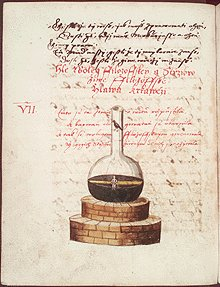
Jaroš Griemiller z Tøebska, Rosarium Philosophorum, f. 73v, Prague, 1578
Ainsi le
continuum de la
psyché paraît-il en première approximation assez
bien circonscrit par les trois médiateurs
mythologiques que sont
Cronos , Zeus et
Athéna [nous
lui
donnons pour le moment les
traits de l'animus] ; dans cette pièce,
les acteurs sont
Hélios et
Séléné qui
conservent leurs caractères à peu près
conservés, tant dans le langage de la psychanalyse
que dans
celui de l'alchimie. Il reste à dire quelques mots
sur
Arès et Aphrodite : c'est
implicitement parler des micro structures impliquées
dans les
archétypes jungiens tout en sachant qu'ils n'en
forment que des
cas particuliers car l'on ne saurait tout résoudre à
la
sexualité, ce qui fut d'ailleurs l'occasion du
divorce
intellectuel entre Freud et Jung. Il aurait été
intéressant de voir quelle aurait été la
démarche de Herbert Silberer [Probleme
der Mystik und
ihrer Symbolik, Heller, Wien 1914] auquel
Jung semble
avoir emprunté quelques idées sur l'alchimie, mais
hélas, Silberer mit fin à ses jours alors qu'il
promettait beaucoup... En nommant Athéna, nous
l'avons
qualifié de l'épithète d'animus ; on peut montrer
qu'en fait elle peut être aussi bien considérée
comme anima compte tenu
de
l'aspect essentiellement
dynamogène du Moi, caractérisé par des
périodes d'inflation et de déflation : l'alternance
veille - sommeil en est l'exemple le plus sommaire.
Voilà qui
permet de donner un sens plus précis - mais envisagé
dans
une perspective jungienne - à quatre gravures du Ros.
Phil.
où l'on voit la montée de l'anima [sublimation],
puis son
incarnation [réincrudation,
individuation] :
il s'agit de la figure 8
: « Animae
Extractio
Vel impraegnatio » ; de la figure
10 : « Animae
Iubilatio seu Ortus seu Sublimatio »
; puis de la
figure 15 : «
Fixatio » où une main française a
écrit : « Icy, la nuit de la
Lune vient à sa
fin, l'esprit remonte en haut hativement.
» ;
enfin de la figure 17
: « Revificatio
» où la même main a écrit : « Icy
revient l'âme du ciel belle et claire et fait
ressusciter la
fille des philosophes. ». Dans sa
Psychologie
du Transfert,
Jung n'a abordé que deux de ces figures : celle de
l'ascension
de l'âme [figure 8]
et celle du retour de l'âme [figure
10].
Mais il ne semble pas qu'il se soit rendu compte que
ces figures
symbolisaient les quatre éléments. Voyons cela.
- D'abord,
la figure 8 : nous en
avons parlé infra dans le 1er
extrait du Transfert
. Il y est question de l'extraction de l'âme ou de
sa
fécondation in vitro [au
sens
d'imprégnation] ce qui est pour le moins
ambigu.
Cette naissance de l'âme contracte des rapports
évidents
avec l'AC.
Par baptw,
est-il
besoin d'insister sur l'autre relation, non moins
importante, avec
l'oint du seigneur octroyé par saint
Jean
Baptiste ? Cette figure 8 a tout à voir avec
le symbole
: rappelons que dans l'une des
phases de la nigredo,
qui correspond
à son début, le métal est ouvert
c'est-à-dire tué et dépecé : en cet
état, le est mis à nu
; il est
dépouillé de ses vêtements et réduit en
cendre [cf. Artephius,
ETHELIA, i.e. aeiqalhV]
ou
si l'on préfère, en chaux qui correspond au venin [ioV]
exprimant cette « bave du dragon
»
dont E. Canseliet affirme dans sa préface aux DM,
I
qu'il s'agit d'une substance à la fois vile et
précieuse [cf.
sel de
pierre].
On
remarque l'existence
de rapports entre le symbolisme exprimé
par la figure 8
du Ros.
Phil.
[Animae
Extractio
Vel impraegnatio]
et la Première
Parabole de
l'AC
:
« De même dans le traité cité ci-dessus du Corpus hermeticum, où l'âme était exhortée à se sauver du fleuve de l'inconscience (agnwsia), il est dit en outre : "Mais auparavant tu dois déchirer le vêtement que tu portes, le tissu de l'inconscience, le support de la méchanceté, les chaînes de la corruption, la cape sombre, la mort vivante, le cadavre visible, le tombeau que tu portes avec toi, le brigand intérieur ." ... » [M.-L. von Franz, Aurora consurgens, op. cit., p. 232]
Capturer ou garrotter le dragon, c'est ipso facto savoir disposer de cette chaux métallique, ce qui nous amène à la figure IV de l'AC.
- La
figure 10 du
Ros.
Phil.
ou Iubilatio
renvoie en fait
- pour qui est au fait de la cabale - à la Force par
sjodra,
d'où
participe la Colère [cf.
AC,
I, fig.
IX, Dorneus
: Speculativa
Philosophia,
Gobineau
de
Montluisant]
dont on a aussi parlé. Nous trouvons là toute une
constellation - pour remployer un mot fort usité par
M.-L. von
Franz dans son Aurora
Consurgens
mais qui exprime avec pertinence l'analogisme -
entrelacée sur
des termes comme sjiggw
[serrer ou
étreindre,
vision d'une Iubilatio
qui
confine à l'orgasme, qui nous est offerte par
plusieurs gravures
et en particulier la figure
6 du Ros.
Phil. ou
encore la figure IV
rattachée à
l'Azoth
du pseudo Basile Valentin : elles sont
équivalentes et montrent
que la conjonction radicale ne peut s'obtenir que
par la dissolution
des corps du et de la ]
ou comme sjagh
[égorgement ou
immolation de la
brebis, renvoyant au Bélier, à ,
à l'ouverture du métal dont le sang - ioV
- fait littéralement irruption : il y a là un
parallèle à faire avec la naissance de Pallas -
Athéna, moment de la
décoaptation
entre le
et le ] ou encore sjageion,
qui désigne le vase pour recueillir le sang de la
victime, i.e.
notre vase de nature. Il s'agit là de la
sublimation
philosophique ou résolution des principes qui,
imprégnés de la substance même du Mercure, perdent
leurs caractères propres. La figure
10
illustre ce phénomène en nous montrant la descente
de
l'animus dans la matière dissoute et mixte [stade
de l'Airain]. Il semble
que l'on puisse ici rapprocher certains éléments de
la Quatrième
Parabole
de l'AC
et des passages du texte morcellé du Ros.
Phil.
qui n'est, à vrai dire, qu'un tissu de citations :
« C'est ainsi que nous disons : "un tel a été haussé (sublimatus) à l'épiscopat, c'est-à-dire élevé (exaltatus)." C'est pourquoi la sublimation vulgaire, qui est seulement un signe du résultat obtenu, montrant que le corps à sublimer est également devenu spirituel, qu'on peut le sublimer, ne regarde en rien notre oeuvre ... mais montre seulement le résultat de la spiritualisation. » [Ros. Phil. , cit. pseudo Hermès, quatrième parabole]
« Animae Iubilatio seu Ortus seu Sublimatio » est là encore ambigu : la naissance ou origine de l'âme ne peut coïncider avec la conjonction corporelle compte tenu que nous en sommes, dans la chronologie de l'oeuvre, au stade de l'androgyne indifférencié, du premier Adam. Ce n'est qu'en seconde partie que s'annonce - et c'est là le mystère de l'Auro hora - le deuxième Adam. Tout au plus peut-on considérer que la sublimation est la solution - la Clef - de la conjonction des principes principiés, le but de la conjonction consistant, précisément, dans l'incarnation de l'anima ou accrétion du dans le .
- La figure
15 exprime
la 2ème
sublimation, celle de l'esprit, où se
produit la coagulation de
l'eau mercurielle. Jung n'a pas traité
cette image et il semble
qu'il ait confondu dans son Transfert
l'animus
et l'anima - du moins dans la
phénoménologie alchimique [rappelons
que déjà, dans
le Commentaire
au
mystère de la Fleur d'or,
il lui arrive parfois au début de ses
études
hermétiques, vers 1928, d'être un peu
obscur sur ce point
de science, cf. AC,
I].
Dans cette figure du Ros.
Phil.,
remarquez la forme en x
des membres supérieurs de l'androgyne [cf. Gardes
du corps et blasons alchimiques].
La Fixatio
est l'Auro
hora
: c'est, véritablement, l'aurore de
l'oeuvre qui marque la fin
du voyage nautonier, où, Argonaute
intrépide, notre
Artiste, ayant échappé aux écueils et
aux
tempêtes, arrive à Délos. Dans la
mythologie,
Athéna - cf. supra
- offre aux
habitants de l'Attique un olivier tandis
que Poséidon leur offre
un lac salé ou, selon d'autres versions,
un coursier [variation
sur le thème de
Pégase].
Les habitants choisissent l'olivier : le
temps n'est plus à la
mondification de l'androgyne mais à la
maturation des fruits du
Jardin des Hespérides [cf.
Matière].
Cet olivier forme la
partie supérieure de l'arbre
philosophique dont parle Jung dans
ses Racines
de
la conscience :
c'est, en effet, un symbole de l'or
et de l'amour dans le langage médiéval :
« Si je peux voir à ta porte du bois d'olivier doré, je t'appelerai à l'instant temple de Dieu ... » [Silesius]
Le caveau où dort l'androgyne est ce temple de Dieu : sa forme ronde est gage du renouvellement par l'action de
et sa
transformation est assurée par la grâce
de .
Cette huile d'olive n'est autre que le
sang du
métal [sang
dragon ou
zandarith d'Artephius]
après qu'il a été oint par le feu secret
des Sages
: elaion
ou
graisse [de
terre], tel
se présente le
au faîte de
l'oeuvre, prêt à ceindre la 3ème
couronne de perfection. Ainsi, la
branche d'olivier ou qalloV
est-elle considérée comme l'instrument
qui permet de
brûler le mort pour ressusciter le vif
et assurer la renaissance
du phénix [Lactance].
Ce
n'est pas tout : il y a lieu de faire
ici une digression sur le
prophète Élie dont Jung, en prenant sa
mesure,
élève au concept d'archétype [Lettre
au père
Bruno sur le prophète Élie,
in Cahiers
de L'Herne, C.-G. Jung,
1984, pp. 303-308].
On peut discerner dans les traits du prophète HliaV le moyen de réaliser l'incarnation du.
Jung écrit
au père Bruno :
« À sa naissance, il a été salué par les anges. Il était enveloppé de maillots ignés et nourri de flammes. Il avait deux âmes ... Élie est l'incarnation d'une éternelle substance d'âme, de la même nature que celle des anges. C'est son esprit qui a appelé le bélier substitué à Isaak. Il porte la peau du bélier comme ceinture ou tablier. » [Lettre, op. cit., p. 304]
Tout est dit. Dans le Livre des Rois, Elie est nommé « homme de Dieu », il est sans merci, véhément ce qui lui confère des traits qui le rapprochent de ceux que les mythographes prêtent à Athéna. Des miracles lui prêtent aussi des attributs auxquels les hermétistes sont habitués : ainsi il « fixe »
dans sa course pendant le sacrifice sur
le mont Carmel où le
prophète oppose deux autels, l'un pour
Ba'al, l'autre pour YHWH
avec une scène qui rappelle un peu celle
de la danse des Juifs
autour du veau d'or [Vitulus
aureus].
Il y là d'ailleurs une intrication de
symboles : dans les Racines
de la conscience,
Jung écrit :
« Il existe à ce sujet [le supplice ou kolasiV] des expressions parallèles remarquables dans l'Apocalypse d'Élie, manuscrit alchimique publié par Georg Steindorff (Die Apokalypse des Elias, 1899). Il est dit dans la vision, à propos de l'homunculus de plomb sur lequel s'accomplit la torture : "Ses yeux se remplirent de sang" à la suite du supplice. » [les Visions de Zosime, op. cit., p. 177, ed. pochothèque]
Or, il est intéressant de noter que les yeux ont un sens très précis dans le symbolisme alchimique et Jung revient sur ce point dans le chapitre VI de ses Racines de la conscience [l'Inconscient comme conscience multiple in la Nature du psychisme, pp. 593-595]. C'est dans Morien qu'on trouve le passage le plus clair :
« Mais, comme dit Morien, rien ne peut ôter au Laiton son ombre que l'Azoth, quand il est cuit avec lui jusqu'à ce qu'il le rende coloré et blanc comme les yeux de Poisson ; car pour lors il attend que sa vertu soit transmuée en la nature de son Ferment. » [citation déformée du De compositione alchemiae, quem edidit Morienus Romanus Calid regi Aegyptiorum in le Désir Désiré du pseudo Flame dont la source se trouve dans l'Artis Auriferae, 1593, II, 32]
Ces « yeux de poisson » se retrouvent souvent dans les textes : Isaac Hollandais, Philalèthe, etc. Le pseudo Lulle en parle comme de « globules de mercure » [Clavicule]. L'auteur anonyme des Récréations hermétiques écrit :
« La matière n'est pas liquide comme un brouet, mais épaisse et noire comme de la poix ou du cirage de bottes ; elle se boursoufle, s'élève dans le gobelet, donne des Bulles que l'on compare à des yeux de poisson et qu'il ne faut pas crever, car elles contiennent l'esprit animateur. »
Bacon dit :
« Le corps sera cuit jusqu'à ce qu'il devienne brillant comme les yeux des poissons et alors la pierre se coagulera à la circonférence. Lorsque tu verras la blancheur apparaître à la surface dans le vaisseau, dit un sage, sois certain que sous cette blancheur se cache le rouge; il te faut l'en extraire, cuis donc jusqu'à ce que tout soit rouge. » [Miroir]
Dans ces trois extraits différents, nous tenons la solution de la fixation, c'est-à-dire la résolution de la coagulation ou, si l'on préfère, de la sublimation de l'animus.
Lorsque Jung affirme qu'Élie est fait de la
même substance
que l'ange, il affirme par là qu'il est
constitué de
rosée de mai ou substance de vertu céleste
qui assure la
transition entre et
: quelle est donc cette substance éthérée ?
Il ne
peut s'agir que de l'Azoth des philosophes,
vocable qu'ils emploient
pour qualifier leur Mercure double. Mais
Jung en dit bien plus encore
quand il assure
qu'Élie porte la peau du bélier : il s'agit
de la Toyson
d'or [cf.
Splendor
Solis
d'où Salomon Trismosin - pseudo a tiré son
ouvrage]
ou Ariès qu'il faut se garder de confondre
avec .
Ariès constitue la résine de l'or alchimique
et forme la
terre adamique
dans laquelle l'Artiste sème les dents du
dragon. La fonction
hermétique d'Élie consiste à exposer le
au feu secret en sorte que naisse le second
Adam qui correspond au
processus d'individuation. Cette naissance
prend lieu, à ce
qu'en disent les alchimistes, lorsque
franchit g,
le point vernal, c'est-à-dire lorsque
l'écliptique,
véritable horizon du
céleste au
sens qu'il
forme la limite ou la trace virtuelle des
astres errants - la stibine
en quelque sorte par stibeuV
[qui
suit à la trace],
en relation de cabale phonétique avec stibi
: antimoine ou stimmi,
cf. prima
materia. L'ingrès du
dans le Bélier [cf.
zodiaque
alchimique]
manifeste, à ce qu'en assurent les
Chaldéens, son
exaltation et - selon Newton, cf. symboles
- la dépuration du .
Jung ajoute :
« Moïse Cordovero le [Elie] compare à Enoch, mais tandis que le corps de ce dernier est consumé par le feu, Elie garde sa figure terrestre pour être prêt à réapparaître. Son corps descend de l'Arbre de vie. » [Lettre, op. cit., p. 304-305]
Un mot sur Cordovero (1522-1570) : cabaliste de l'école de Safed (Palestine), il fut un grand théologien de la cabale. Il a écrit, entre autre, le Pardes Rimonim [Jardin des Grenades, 1592] dans lequel il développe la réalité indépendante des sephiroth en tant que récipients permettant l'action de la substance divine unitaire. Le Jardin [Paradis] des Grenades, témoigne du caractère encyclopédique de la culture de Cordovero, qui alliait le mysticisme à la pénétration de l'esprit philosophique. Tout en se référant au Zohar, cette somme de l'enseignement de l'école de Safed marque un tournant par rapport à la kabbale d'Espagne. Il affirme que l'Infini divin est présent dans chacune des parcelles de l'immense univers qui n'est qu'une manifestation de l'infinitude de Dieu [on voit d'évidentes relations avec ce que Newton a nommé sensorium Dei, anticipant sur notre « moderne » conception d'un espace incurvé au « voisinage » d'une masse, cf. Chevreul et Newton]. Aussi n'hésite-t-il pas à affirmer que rien n'existe en dehors de Dieu. Un siècle plus tard, Spinoza aurait avoué s'être inspiré de Cordovero pour établir son système de pensée philosophique fondé sur le panthéisme, alors que le grand réformateur de Safed se refusait à toute forme de panthéisme, pour demeurer dans le plus pur esprit monothéiste juif [site consulté : la Mystique juive]. Si nous avons tenu à citer cet extrait de Jung, c'est par référence à l'analogie Élie - Enoch, nous ramenant ainsi à un texte que nous avons abordé dans l'étude du retable baroque d'Issenheim. Dans ce texte [l'Examen critique de la vie et des ouvrages de saint Paul avec une dissertation sur saint Pierre par feu M. Boulanger, Londres, 1770], une relation particulièrement instructive est établie entre Enoch [Hénoch] et saint Pierre ; il semble qu'on puisse l'étendre à Élie. Elle peut faire voir une liaison, riche de cabale, entre la figure de saint Pierre - cf. figure XXXI de l'AC -, le mercure de l'oeuvre [Enoch = Hermès] et le feu [
= Elie en se
basant sur
l'assonance
entre HliaV
et hlioV,
via hliaV
: solaire].
- figure
17 : «
revificatio
». C'est le rayon igné
issu du qui
féconde la des
philosophes. L'auro
hora
où la matière acquiert
la 2ème
couronne
de perfection. Jung a
consacré le chapitre
du Retour
de l'Âme,
dans
son Transfert,
à cette phase de la
Grande coction mais
s'est trompé de
gravure puisqu'il
donne la figure
10 en
lieu et place de la
figure 17 :
« L'âme, élément unificateur des deux, descend du ciel pour faire revivre le cadavre. » [Transfert, op. cit., pochothèque, p. 833]
Cette phrase du début de ce chapitre pose deux ordres de problème : comment l'âme peut-elle unifier le corps et l'esprit ? Comment peut-elle faire revivre une entité qui n'a jamais vécu auparavant ? Il nous semble que Jung fait là un contresens. Le moyen d'union n'a jamais été l'âme mais bien l'esprit ou appariteur qui assure la liaison entre les deux extrémités du vaisseau de nature que sont le et
la
sublimés.
Cet esprit est marqué
de la †
qui, jamais, ne quitte
la matière dans la
Grande coction,
permettant ainsi la
transition de
l'amorphe vers le
cristal [transfert
= ]
par projection de
l'anima du dans
le corps du lapis.
L'entité qui
dort au fond du caveau
n'est pas un cadavre,
mais une forme
évoluée de
l'androgyne, le Rebis,
qu'il s'agit d'animer,
d'où d'ailleurs la
légende «
revificatio
» qu'il faut lire au
sens de
réincrudation :
ramener à un état
antérieur
mais sous l'aspect
d'une forme rénovée [voyez
ici notre Mercure
de
nature et la réincrudation].
« L'âme descendant du ciel est identique à la rosée, l'eau divine (aqua divina), qui signifie, comme le texte l'explique à l'aide d'uen citation d'Hermès, "le roi descendant du ciel" ... Cette eau est donc elle-même couronnée et constitue le "diadème du coeur", ce qui semble en contradiction avec la déclaration ... selon laquelle le diadème provient de la "cendre". » [Transfert, op. cit., p. 838]
Si Jung n'avait pas interverti les images du Ros. Phil., il se serait sans doute rendu compte de l'erreur qu'il commettait en confondant l'animus et l'anima, puisque dans un cas il est question de la sublimation du
alors que dans
l'autre, c'est de sa
projection dans la
terre adamique
qu'il est question. La
réflexion de Jung
prend sa valeur pour
la
figure
10 - c'est là
toute
l'ambiguité - et non
pas pour l'anima
mais pour l'animus .
C'est de l'animus
que procède la rosée
de mai ou eau divine
de Zosime ;
c'est cette rosée qui
permet de transformer
la cendre
en l'élevant à la 2ème
couronne de
perfection où nous
approchons du diadème
royal. Il n'est
nullement
contradictoire, si
l'on reprend nos
sections, que de la
cendre naisse le
diadème puisque la
cendre constitue -
dans sa
forme sèche ou « eau
sèche qui ne
mouille point les
mains »
- la substance même du
qui va subir, par les
« laveures
» de Flamel,
qui sera précédée de
la putréfaction
initiale, l'opération
des Aigles [cf.
figure
XXXI
de l'AC]. Du
reste, Jung cite en
note ce propos de
Dorneus :
« Que le foetus spagirique terrestre se revête par l'ascension de nature céleste, et qu'il reçoive ensuite par sa descente la nature du centre terrestre. » [Gerhard Dorn, Theatrum Chemicum, I, Philosophia Meditativa, p. 409]
C'est assez dire que le sel
de vertu céleste doit
imprégner l'androgyne
éthéré afin de le
féconder de la
substance
centrique
tout en disposant de
sa forme corporelle
par l'orientation
métallique. Cette
nature céleste est
l'eau
étoilée et métallique
signalée par tant
d'auteurs et dont nous
voyons l'une des
représentations dans
l'aqua
mineralia.
Si la nature impose
son poids dans la
façon qu'ont les
matières de se mixer,
en revanche, l'artiste
peut disposer de
son Soufre, de sa
teinture. Peut-être
est-ce la raison qui
fait
que les sept métaux
sont ainsi réunis, si
souvent, dans
l'iconographie et dans
les allégories : c'est
l'un des points
les plus obscurs du
symbolisme alchimique
; c'est aussi,
certainement,
pour signifier que
chaque métal, sous la
dépendance d'une
planète, joue un rôle
déterminé dans
l'oeuvre, véritable
théâtre de
l'astronomie
terrestre, comme
l'appelle Edward
Kelley. Nous voyons
défiler
d'abord Ouranos et
Gaïa, comme couple
primordial. Ouranos
est
caractérisé par un
aspect ondulatoire
marqué comme
en témoigne son
caractère lunatique,
fait de
périodes d'inflation
et de dépression ;
véritable
incarnation chaotique
où l'on décèle des
éléments protéiformes,
on y voit une sorte
d'énergie
indifférenciée [il
est
assez curieux
d'ailleurs que dans
les premiers moments
du «
Big Bang », Ouranos
corresponde à cette
période
d'inflation
extraordinaire qui
précède la
schizogénie où le
temps, à proprement
parler, par
la création des
particules, sort
pour ainsi dire tout
armé du chaos
informe de l'énergie
pure]. Jung
parle d'Ouranos dans
ses Métamorphoses
de
l'Âme et ses
symboles
[Georg,
1953, la
pochothèque,
2004, p. 245]
en le caractérisant
par l'UN, qui a une
structure
transcendantale :
« Pour le néoplatonicien Plotin, l'âme universelle est l'énergie de l'intellect. Plotin compare l'UN (principe créateur premier) à la lumière en général, l'intellect, au soleil ();
l'âme
universelle à la
lune ().
Autre
comparaison : pour
Plotin l'UN
est le père,
l'intellect, le
fils. »
Il est intéressant de noter que les idéogrammes sont ceux employés par Jung dans son commentaire du texte de Plotin. Dans un cas, Mars - domicile du Bélier - correspond au lieu d'exaltation du et
Vénus -
domicile du Taureau -
correspond au lieu
d'exaltation de .
Nous voyons s'ébaucher
le Ça, dans le sens où
l'UN
correspond pour
Plotin, à ce qu'en
rapporte Jung, une
hypostase.
Par upostasiV,
il
faut entendre l'action
de supporter [dans
le sens de base ou
fondement, ce
qui nous ramène au
texte de Zosime, cf.
prima
materia]
ce qui rapproche
le Ça de la figure
d'Atlas supportant le
Monde [dualité
Soi - Moi].
Mais
upostasiV
est un
terme constellé : on y
trouve l'eau stagnante
[où
la tourbe peut se
développer]
tout autant que les
vapeurs
condensées formant la
masse nuageuse
omniprésente dans
les gravures du Ros.
Phil.
C'est enfin un terme
générique pour
caractériser
la Force sur laquelle
nous n'avons plus
besoin d'insister.
Mais
revenons un instant
sur cette analogie que
nous avons
évoquée entre Ouranos,
Cronos et la schizogénie.
Dans
la théorie du Big
Bang, on décrit un
moment tout
à fait spécial, à 10-32
s où
l'univers naissant
perd sa symétrie en
libérant une
énergie colossale :
cette énergie, en
rapport avec
l'inflation de
l'espace, est à
l'origine de
particules
nommées bosons de
Higgs [particules
dont
on se demand encore
si elles ne sont pas
virtuelles ; à
l'instar des quarks,
elles ne sont pas
observées. Mais
alors que
le quark ne peut
être « visualisé »
en droit,
il n'est pas
impossible qu'un
jour on puisse
observer un boson de
Higgs.]
Ces bosons sont à
l'origine de la
création de toutes
sortes de particules
et d'antiparticules [fermions
tels que protons et
neutrons,
bosons tels que
photons et bosons
intermédiaires].
Eh
bien ! Il semble
possible de voir dans
la mutilation
d'Ouranos par
Cronos cette
transition de phase
qui va, littéralement,
créer l'univers tel
que nous le
connaissons après 15
milliards d'années.
Ainsi, la mutilation
d'Ouranos met-elle fin
à une « stérile
fécondité » [Micea
Eliade, Traité
d'Histoire
des religions,
Paris, 1949, p. 75]
en introduisant dans
l'univers par
l'apparition
d'Aphrodite cette
écume particulaire
d'où est issue la
matière. Nous
avons affaire à ce
qu'André Virel a
appelé une
autogénie : en effet,
au plan analogique, il
est impossible de
différencier de façon
détachée l'action de
Cronos et de Jupiter.
Si à Cronos est lié le
Temps,
à Jupiter est lié
l'Espace et la
mutilation d'Ouranos
correspond à cette
transition de phase où
l'univers est
réchauffé à 1027
K. L'action de
Cronos est
semblable au
retard de transition
qui est à l'origine de
l'inflation de
l'espace
: un état analogue à
celui de la surfusion
de l'eau se
crée et l'eau se prend
en glace,
immédiatement, au
gré de la plus petite
perturbation. L'espace
semble donc
naître d'une véritable
cristallisation du
temps et c'est
ce phénomène de
cristallisation qui
est semblable
à la mutilation
d'Ouranos par Cronos.
Si nous reprenons le
Ça vu comme « eau
stagnante » [upostasiV],
le
parallèle est facile à
trouver avec cette
écume
que constitue la
naissance d'Aphrodite
et il faut y voir bien
plus que
la simple Vénus avec
laquelle on la compare
d'habitude : il
s'agit en fait
de l'incarnation
spirituelle de
l'animus qui
constitue la forme
primordiale du Soi
universel.
Si nous souhaitons comprendre le mode de pensée des alchimistes, il nous faut absolument tourner les regards ailleurs que vers la chimie, quand bien même l'on ne saurait, bien sûr, parler de l'alchimie sans donner des aperçus sur le travail du laboratoire, par la voie sèche ou la voie humide [cf. mercure philosophique, soufre, plan sur les sections de pratique]. C'est à nouveau vers l'oratoire que notre attention doit être focalisée et plusieurs questions doivent être posées : la cause : pourquoi les alchimistes ? Les moyens : quelles matières ? Et spirituelles ou corporelles ? En troisième lieu : le but. Qu'est-ce donc que le lapis ? À toutes ces questions, deux ordres de réponses ont été apportées et parfois retenues, sans que du reste, on ait pu établir une nette différence entre les deux types d'approche. La première privilégie l'hypothèse spirituelle et elle s'intègre dans une sorte de proto psychologie : Jung n'a cessé de faire valoir, dans le cours de ses études d'herméneutique, cette vision. La seconde, complémentaire de la première, s'y associe dans la mesure uniquement où l'Artiste sait faire oeuvre de lui-même, pour ainsi dire, c'est-à-dire projection d'affects dans la matière minérale et métallique, faute de quoi on ne saurait lui appliquer d'autre qualificatif que celui de souffleur. Donc, dans cette deuxième approche, c'est
et
qui
sont mis à l'épreuve en un travail où notre
alchimiste transforme ces matières en eau étoilée
métallique, par l'entremise de son .
Ce travail est conduit au matras scellé [mais
nous avons déjà
prévenu contre l'impasse que réalise à notre sens
la voie humide]
ou au creuset
brasqué. C'est là que, d'entrée de jeu, se
dégage comme une polysémie : il est bien rare qu'un texte
donnant des formules de coction, des techniques voilées de
cuisine, ne soit pas infiltré d'éléments
resortissant au spirituel, païen d'ailleurs, gnostique non
chrétien, ou relevant chez les médiévistes, de la
scolastique et y imprimant alors les éléments du
paradigme ambiant. En revanche, il est beaucoup plus fréquent
qu'un texte à dominante spirituelle soit absolument
dépourvu de notes pratiques : nous y trouverons des symboles
d'expression mystique qui consttiuent le fonds même de ce qu'il
est convenu d'appeler la cabale hermétique. Disons-le tout net
: la cabale est un langage codé dont le sens n'est d'aucune
façon [et notre
interprétation est fondée là-dessus]
ésotérique ; il doit être interprété
dans une optique de représentation sprituelle dont l'aspect
protéiforme n'exclut pas une solution de type opératoire,
où l'on peut trouver des représentations
matérielles et « vulgaires » de substances
chimiques. Ce décodage fait évidemment toute la
difficulté de l'interprétation et rend compte de la
nécessité critique où l'on est de confronter de
nombreux textes parfois très disparates alors qu'une analyse
approfondie conduit, au fond, à l'identité de leur
contenu germinal. En dehors donc d'un problème de
représentation où l'on doit s'imaginer des visions quasi
hypnagogiques - ce que Jung nome l'imagination active - c'est à
un problème d'interprétation rationnelle que nous sommes
confrontés : représentation symbolique et
interprétation sprituelle ne coïncident pas ; elles
laissent part belle à l'interpolation, l'extrapolation et
exigent que l'on se munisse de solides garde-fous, en d'autres
termes
d'un fil d'Ariane sûr. Certains ont cru le trouver dans la
tradition du transfert de savoir qui s'établissait naturellement
entre maître et disciple [on
en
trouve un exemple caricatural dans la Turba,
dont
l'importance est primordiale et où Julius Ruska a mené un
gros travail] ;
d'autres -
qui sont plus nombreux - tiennent
que l'oeuvre est un Donum dei
là où nous lisons plutôt qu'il s'agit d'un Donum
sulphuri [assonance qeion
- qeioV]. Il y
là à la fois source de méprise et occasion de
compléter le schéma trinitaire habituel, symbolisé
par le
Pater - Spiritus - Filius, par un
symbole de
quaternité
où le
diabolus vient mêler sa part luciférienne
à la marque chthonienne
développée par l'intrusion du 4ème
élément, auquel Jung s'est attaché dans sa Symbolique de
l'Esprit
[trad.
Albin Michel, op. cit.].
Voyez
à cet égard la figure
XXVIII de l'AC.
C'est dans le Problème
du Quatrième
que Jung évoque l'idé d'une quaternité et
l'extrait que nous donnons se
situe après une citation de Goethe dans la scène des
Cabires :
« Les Cabires sont ... les énergies formatrices secrètes, les lutins qui oeuvrent sous la terre, c'est-à-dire dans l'inconscient ... un examen plus approfondi permettra de découvrir précisément dans ces éléments primitifs et archaïques de la fonction inférieure d'importants rapports symboliques ... et par conséquent on ne peut se moquer des Cabires en les considérant comme de ridicules Petis Poucets ; au contraire, on doit deviner le trésor de sagesse qu'ils recèlent. » [le dogme de la Trinité, in Symbolique de l'esprit, op. cit., p. 204]
On admirera une fois encore la perspicacité de Jung tout en déplorant son manque d'à propos au sujet de ces « énergies formatrices secrètes » qui lui font totalement occulter la dimension de réalité sous jacente à ces lutins dans lesquels il faut voir ces agents de minéralisation qui forment le Mercure de nature et auquel nous avons consacré une section. Ces Cabires, nous les avons déjà rencontrés à propos de Cybèle, auxquels ils sont associés ; la cabale hermétique autorise à les rapprocher de KorubaV, mot désignant des démons associés à Rhéa et évoquant aussi les Courètes. On reconnaît aux Cabires des pouvoirs étendus sur les métaux ; on connaît deux représentations antiques de Cabires, l'un portant un manteau et l'autre coiffé d'un bonnet pointu [cf. le bonnet phrygien que Fulcanelli évoque dans le Myst. Cath.] et tenant en main une branche de cyprès [symbole de la dissolution, i.e. de la sublimation]. Voyez encore l'AC, I sur orgion ou Mystère des Cabires par la relation avec la Colère. Par parenthèse, il est facile de faire la relation entre les Niebelungen dont Wagner a utilisé la symbolique dans l'Or du Rhin [cf. humide radical, légende de Seyfried] et nos Cabires.
« La pratique de la psychologie révèle que le bien et le mal forment un couple d'opposés dans ce qu'on appelle un jugement moral, et que, comme tel, celui-ci a son origine en l'homme. » [idem, p. 207]
Voilà qui laisse perplexe car nous ne sachions pas que l'on puisse supputer d'un animal qu'on dise e lui qu'il connaît le bien ou le mal ! Chez l'Humain puisque jusqu'à présent, nous ne connaissons pas d'autre forme d'esprit supérieur, il apparaît que le Bien agit sur le Mal à l'instar d'un frein modérément serré [par analogie avec le système parasympathique dans son action sur le rythme cardiaque : le nerf pneumogastrique ou nerf vague agit sur le noeud auriculo-ventriculaire en exerçant une action « négative » permanente : le coeur n'est donc pas à proprement parler accéléré lorsque la fréquence systolique augmente, mais c'est l'action du nerf vague qui est diminuée] et loin, de notre point de vue, de constituer des opposés, le Bien et le Mal sont des complémentaires d'un même ambitus psychique, à l'instar de la polarité d'une Lucifer ou d'une
Vesper [Vénus au
sens de stibine
vespérale].
À la croisée du chemin, lorsque la
Lune est en son plein, l'équilibre est atteint et donne l'aspect
suivant : . Voici un
autre
extrait :
« Et d'une manière générale, comment peut-on parler de bien s'il n'y a pas de mal ? De clarté sans obscurité, de haut sans bas ? » [ibid.]
Nous remarquerons que l'on ne peut pas comparer - nous l'avons déjà signalé - un objet mental qui est une pure construction ex nihilo - et un objet physique. Or, la notion de haut et de bas n'a de valeur que si on a affaire à une masse pesante, c'est-à-dire au voisinage d'une incurvation de l'espace temps. Du coup, cela vaut aussi pour la notion de lumière, car ipso facto, l'espace est incurvé au voisinage d'une source lumineuse. Ce n'est donc que par pur analogisme sans référence physique valable que Jung vient à peser dans sa balance la valeur absolue du Bien et du Mal : c'est une attitude qui ne lui est pas familière mais que Freud semble cultiver. Quoi qu'il en soit, la conséquence générale qu'il tire de son observation est exacte - bien que reposant sur un raisonnement spécieux - et il est clair que cette démarche le conduira à écrire plus tard sa Réponse à Job [trad. Buchet Chastel]. C'est le symbole de la † qui est, encore une fois, le moyen pour Jung, de voir la quaternité incarnée :
« Selon la conception ancienne, le Christ est l'appât à l'hameçon (la croix), avec lequel Dieu prend le Léviathan (le Diable) » [cf. Psychologie et alchimie, ill. 28 et Herrad von Landsberg, Hortus Deliciarum]
Buch der Heiligen Dreifaltigkeit, 1488 ; allégorie du lapis : Christus und Maria am Kreuz, daneben : der alchemische Löwe [cliquez pour agrandir]
Dans notre monade, nous avons remarqué que le symbole central était réalisé par la clef de voûte, constitué de la † qui est disposée entre et ,
c'est-à-dire entre Temps et Espace : elle prend donc le sens de
durée. Corrélativement à ce que nous avons dit -
cf. supra
sur la schizogénie et le couple Ouranos / Cronos - il est
évident que
c'est l'intrusion de la matière dans l'esprit qui est la source
du mal,
le problème étant que la matière est d'essence
spirituelle ; nous voici
en pleine tautologie. Au plan de la physique, toutefois, nous
aurons la
resssource d'opposer la matière et l'antimatière :
dès lors, quand
Ouranos l'UN, indéterminé, se déploie comme il a
été dit supra, la
flèche du temps apparaît en
précédant d'extrêmement peu la manifestation de
l'espace , dualité
où s'exprime la
matière et les
opposés Lucifer et
Vesper. Nous n'insisterons pas ici sur ce que dit Jung au sujet
de la
synchronicité entre l'ère des Poissons et la figure de
l'antéchrist car
cette conception n'a pas de rapport direct avec l'hermétisme
alchimique
[on pourra
consulter
là-dessus Aïon,
chapitre VI]. En
revanche,
il nous faut examiner la figure de
la quaternité, p. 214 de la Symbolique de
l'Esprit,
où il
crée la double opposition Pater - Spiritus et Filius - Diabolus.
Cette intrusion de la quaternité
dans
la
trinité est
présente dans la figure
XXVIII de
l'AC.
Elle ne laisse aucun doute quant à la nature du Diabolus,
étant en relation évidente avec le Mysterium
conjunctionis.
Notons au passage que cette figure nous paraît beaucoup mieux
conçue que celle de Jung dans la mesure où le symbole de
la †
n'apparaît pas a priori. Il n'est sensible qu'à
l'entendement. Le diable ou Satan se confond, dans l'alchimie,
avec le
serpent Mercure dont il emprunte le caractère visqueux et
brûlant ; il a en outre un trait chthonien car
se rapproche de la lave [cf.
Mercure de nature].
La matière
plongée dans ce milieu est promise à la dissolution ou,
si l'on préfère, à la sublimation, en forme de spiritus
corruptus
auquel renvoie la figure
8 du Ros.
Phil. Nous
voyons
donc se dessiner une autre image de la
quaternité qui participe du cercle
croisé des quatre
éléments d'Empédocle .
, Zeus et
Athéna [nous
lui
donnons pour le moment les
traits de l'animus] ; dans cette pièce,
les acteurs sont
Hélios et
Séléné qui
conservent leurs caractères à peu près
conservés, tant dans le langage de la psychanalyse
que dans
celui de l'alchimie. Il reste à dire quelques mots
sur
Arès et Aphrodite : c'est
implicitement parler des micro structures impliquées
dans les
archétypes jungiens tout en sachant qu'ils n'en
forment que des
cas particuliers car l'on ne saurait tout résoudre à
la
sexualité, ce qui fut d'ailleurs l'occasion du
divorce
intellectuel entre Freud et Jung. Il aurait été
intéressant de voir quelle aurait été la
démarche de Herbert Silberer [Probleme
der Mystik und
ihrer Symbolik, Heller, Wien 1914] auquel
Jung semble
avoir emprunté quelques idées sur l'alchimie, mais
hélas, Silberer mit fin à ses jours alors qu'il
promettait beaucoup... En nommant Athéna, nous
l'avons
qualifié de l'épithète d'animus ; on peut montrer
qu'en fait elle peut être aussi bien considérée
comme anima compte tenu
de
l'aspect essentiellement
dynamogène du Moi, caractérisé par des
périodes d'inflation et de déflation : l'alternance
veille - sommeil en est l'exemple le plus sommaire.
Voilà qui
permet de donner un sens plus précis - mais envisagé
dans
une perspective jungienne - à quatre gravures du Ros.
Phil.
où l'on voit la montée de l'anima [sublimation],
puis son
incarnation [réincrudation,
individuation] :
il s'agit de la figure 8
: « Animae
Extractio
Vel impraegnatio » ; de la figure
10 : « Animae
Iubilatio seu Ortus seu Sublimatio »
; puis de la
figure 15 : «
Fixatio » où une main française a
écrit : « Icy, la nuit de la
Lune vient à sa
fin, l'esprit remonte en haut hativement.
» ;
enfin de la figure 17
: « Revificatio
» où la même main a écrit : « Icy
revient l'âme du ciel belle et claire et fait
ressusciter la
fille des philosophes. ». Dans sa
Psychologie
du Transfert,
Jung n'a abordé que deux de ces figures : celle de
l'ascension
de l'âme [figure 8]
et celle du retour de l'âme [figure
10].
Mais il ne semble pas qu'il se soit rendu compte que
ces figures
symbolisaient les quatre éléments. Voyons cela. - D'abord,
la figure 8 : nous en
avons parlé infra dans le 1er
extrait du Transfert
. Il y est question de l'extraction de l'âme ou de
sa
fécondation in vitro [au
sens
d'imprégnation] ce qui est pour le moins
ambigu.
Cette naissance de l'âme contracte des rapports
évidents
avec l'AC.
Par baptw,
est-il
besoin d'insister sur l'autre relation, non moins
importante, avec
l'oint du seigneur octroyé par saint
Jean
Baptiste ? Cette figure 8 a tout à voir avec
le symbole
: rappelons que dans l'une des
phases de la nigredo,
qui correspond
à son début, le métal est ouvert
c'est-à-dire tué et dépecé : en cet
état, le est mis à nu
; il est
dépouillé de ses vêtements et réduit en
cendre [cf. Artephius,
ETHELIA, i.e. aeiqalhV]
ou
si l'on préfère, en chaux qui correspond au venin [ioV]
exprimant cette « bave du dragon
»
dont E. Canseliet affirme dans sa préface aux DM,
I
qu'il s'agit d'une substance à la fois vile et
précieuse [cf.
sel de
pierre].
On
remarque l'existence
de rapports entre le symbolisme exprimé
par la figure 8
du Ros.
Phil.
[Animae
Extractio
Vel impraegnatio]
et la Première
Parabole de
l'AC
:« De même dans le traité cité ci-dessus du Corpus hermeticum, où l'âme était exhortée à se sauver du fleuve de l'inconscience (agnwsia), il est dit en outre : "Mais auparavant tu dois déchirer le vêtement que tu portes, le tissu de l'inconscience, le support de la méchanceté, les chaînes de la corruption, la cape sombre, la mort vivante, le cadavre visible, le tombeau que tu portes avec toi, le brigand intérieur ." ... » [M.-L. von Franz, Aurora consurgens, op. cit., p. 232]
Capturer ou garrotter le dragon, c'est ipso facto savoir disposer de cette chaux métallique, ce qui nous amène à la figure IV de l'AC.
- La
figure 10 du
Ros.
Phil.
ou Iubilatio
renvoie en fait
- pour qui est au fait de la cabale - à la Force par
sjodra,
d'où
participe la Colère [cf.
AC,
I, fig.
IX, Dorneus
: Speculativa
Philosophia,
Gobineau
de
Montluisant]
dont on a aussi parlé. Nous trouvons là toute une
constellation - pour remployer un mot fort usité par
M.-L. von
Franz dans son Aurora
Consurgens
mais qui exprime avec pertinence l'analogisme -
entrelacée sur
des termes comme sjiggw
[serrer ou
étreindre,
vision d'une Iubilatio
qui
confine à l'orgasme, qui nous est offerte par
plusieurs gravures
et en particulier la figure
6 du Ros.
Phil. ou
encore la figure IV
rattachée à
l'Azoth
du pseudo Basile Valentin : elles sont
équivalentes et montrent
que la conjonction radicale ne peut s'obtenir que
par la dissolution
des corps du et de la ]
ou comme sjagh
[égorgement ou
immolation de la
brebis, renvoyant au Bélier, à ,
à l'ouverture du métal dont le sang - ioV
- fait littéralement irruption : il y a là un
parallèle à faire avec la naissance de Pallas -
Athéna, moment de la
décoaptation
entre le
et le ] ou encore sjageion,
qui désigne le vase pour recueillir le sang de la
victime, i.e.
notre vase de nature. Il s'agit là de la
sublimation
philosophique ou résolution des principes qui,
imprégnés de la substance même du Mercure, perdent
leurs caractères propres. La figure
10
illustre ce phénomène en nous montrant la descente
de
l'animus dans la matière dissoute et mixte [stade
de l'Airain]. Il semble
que l'on puisse ici rapprocher certains éléments de
la Quatrième
Parabole
de l'AC
et des passages du texte morcellé du Ros.
Phil.
qui n'est, à vrai dire, qu'un tissu de citations :« C'est ainsi que nous disons : "un tel a été haussé (sublimatus) à l'épiscopat, c'est-à-dire élevé (exaltatus)." C'est pourquoi la sublimation vulgaire, qui est seulement un signe du résultat obtenu, montrant que le corps à sublimer est également devenu spirituel, qu'on peut le sublimer, ne regarde en rien notre oeuvre ... mais montre seulement le résultat de la spiritualisation. » [Ros. Phil. , cit. pseudo Hermès, quatrième parabole]
« Animae Iubilatio seu Ortus seu Sublimatio » est là encore ambigu : la naissance ou origine de l'âme ne peut coïncider avec la conjonction corporelle compte tenu que nous en sommes, dans la chronologie de l'oeuvre, au stade de l'androgyne indifférencié, du premier Adam. Ce n'est qu'en seconde partie que s'annonce - et c'est là le mystère de l'Auro hora - le deuxième Adam. Tout au plus peut-on considérer que la sublimation est la solution - la Clef - de la conjonction des principes principiés, le but de la conjonction consistant, précisément, dans l'incarnation de l'anima
ou accrétion du dans le .
- La figure
15 exprime
la 2ème
sublimation, celle de l'esprit, où se
produit la coagulation de
l'eau mercurielle. Jung n'a pas traité
cette image et il semble
qu'il ait confondu dans son Transfert
l'animus
et l'anima - du moins dans la
phénoménologie alchimique [rappelons
que déjà, dans
le Commentaire
au
mystère de la Fleur d'or,
il lui arrive parfois au début de ses
études
hermétiques, vers 1928, d'être un peu
obscur sur ce point
de science, cf. AC,
I].
Dans cette figure du Ros.
Phil.,
remarquez la forme en x
des membres supérieurs de l'androgyne [cf. Gardes
du corps et blasons alchimiques].
La Fixatio
est l'Auro
hora
: c'est, véritablement, l'aurore de
l'oeuvre qui marque la fin
du voyage nautonier, où, Argonaute
intrépide, notre
Artiste, ayant échappé aux écueils et
aux
tempêtes, arrive à Délos. Dans la
mythologie,
Athéna - cf. supra
- offre aux
habitants de l'Attique un olivier tandis
que Poséidon leur offre
un lac salé ou, selon d'autres versions,
un coursier [variation
sur le thème de
Pégase].
Les habitants choisissent l'olivier : le
temps n'est plus à la
mondification de l'androgyne mais à la
maturation des fruits du
Jardin des Hespérides [cf.
Matière].
Cet olivier forme la
partie supérieure de l'arbre
philosophique dont parle Jung dans
ses Racines
de
la conscience :
c'est, en effet, un symbole de l'or
et de l'amour dans le langage médiéval :« Si je peux voir à ta porte du bois d'olivier doré, je t'appelerai à l'instant temple de Dieu ... » [Silesius]
Le caveau où dort l'androgyne est ce temple de Dieu : sa forme ronde est gage du renouvellement par l'action de
et sa
transformation est assurée par la grâce
de .
Cette huile d'olive n'est autre que le
sang du
métal [sang
dragon ou
zandarith d'Artephius]
après qu'il a été oint par le feu secret
des Sages
: elaion
ou
graisse [de
terre], tel
se présente le
au faîte de
l'oeuvre, prêt à ceindre la 3ème
couronne de perfection. Ainsi, la
branche d'olivier ou qalloV
est-elle considérée comme l'instrument
qui permet de
brûler le mort pour ressusciter le vif
et assurer la renaissance
du phénix [Lactance].
Ce
n'est pas tout : il y a lieu de faire
ici une digression sur le
prophète Élie dont Jung, en prenant sa
mesure,
élève au concept d'archétype [Lettre
au père
Bruno sur le prophète Élie,
in Cahiers
de L'Herne, C.-G. Jung,
1984, pp. 303-308].On peut discerner dans les traits du prophète HliaV le moyen de réaliser l'incarnation du
.
Jung écrit
au père Bruno :« À sa naissance, il a été salué par les anges. Il était enveloppé de maillots ignés et nourri de flammes. Il avait deux âmes ... Élie est l'incarnation d'une éternelle substance d'âme, de la même nature que celle des anges. C'est son esprit qui a appelé le bélier substitué à Isaak. Il porte la peau du bélier comme ceinture ou tablier. » [Lettre, op. cit., p. 304]
Tout est dit. Dans le Livre des Rois, Elie est nommé « homme de Dieu », il est sans merci, véhément ce qui lui confère des traits qui le rapprochent de ceux que les mythographes prêtent à Athéna. Des miracles lui prêtent aussi des attributs auxquels les hermétistes sont habitués : ainsi il « fixe »
dans sa course pendant le sacrifice sur
le mont Carmel où le
prophète oppose deux autels, l'un pour
Ba'al, l'autre pour YHWH
avec une scène qui rappelle un peu celle
de la danse des Juifs
autour du veau d'or [Vitulus
aureus].
Il y là d'ailleurs une intrication de
symboles : dans les Racines
de la conscience,
Jung écrit :« Il existe à ce sujet [le supplice ou kolasiV] des expressions parallèles remarquables dans l'Apocalypse d'Élie, manuscrit alchimique publié par Georg Steindorff (Die Apokalypse des Elias, 1899). Il est dit dans la vision, à propos de l'homunculus de plomb sur lequel s'accomplit la torture : "Ses yeux se remplirent de sang" à la suite du supplice. » [les Visions de Zosime, op. cit., p. 177, ed. pochothèque]
Or, il est intéressant de noter que les yeux ont un sens très précis dans le symbolisme alchimique et Jung revient sur ce point dans le chapitre VI de ses Racines de la conscience [l'Inconscient comme conscience multiple in la Nature du psychisme, pp. 593-595]. C'est dans Morien qu'on trouve le passage le plus clair :
« Mais, comme dit Morien, rien ne peut ôter au Laiton son ombre que l'Azoth, quand il est cuit avec lui jusqu'à ce qu'il le rende coloré et blanc comme les yeux de Poisson ; car pour lors il attend que sa vertu soit transmuée en la nature de son Ferment. » [citation déformée du De compositione alchemiae, quem edidit Morienus Romanus Calid regi Aegyptiorum in le Désir Désiré du pseudo Flame dont la source se trouve dans l'Artis Auriferae, 1593, II, 32]
Ces « yeux de poisson » se retrouvent souvent dans les textes : Isaac Hollandais, Philalèthe, etc. Le pseudo Lulle en parle comme de « globules de mercure » [Clavicule]. L'auteur anonyme des Récréations hermétiques écrit :
« La matière n'est pas liquide comme un brouet, mais épaisse et noire comme de la poix ou du cirage de bottes ; elle se boursoufle, s'élève dans le gobelet, donne des Bulles que l'on compare à des yeux de poisson et qu'il ne faut pas crever, car elles contiennent l'esprit animateur. »
Bacon dit :
« Le corps sera cuit jusqu'à ce qu'il devienne brillant comme les yeux des poissons et alors la pierre se coagulera à la circonférence. Lorsque tu verras la blancheur apparaître à la surface dans le vaisseau, dit un sage, sois certain que sous cette blancheur se cache le rouge; il te faut l'en extraire, cuis donc jusqu'à ce que tout soit rouge. » [Miroir]
Dans ces trois extraits différents, nous tenons la solution de la fixation, c'est-à-dire la résolution de la coagulation ou, si l'on préfère, de la sublimation de l'animus
.
Lorsque Jung affirme qu'Élie est fait de la
même substance
que l'ange, il affirme par là qu'il est
constitué de
rosée de mai ou substance de vertu céleste
qui assure la
transition entre et
: quelle est donc cette substance éthérée ?
Il ne
peut s'agir que de l'Azoth des philosophes,
vocable qu'ils emploient
pour qualifier leur Mercure double. Mais
Jung en dit bien plus encore
quand il assure
qu'Élie porte la peau du bélier : il s'agit
de la Toyson
d'or [cf.
Splendor
Solis
d'où Salomon Trismosin - pseudo a tiré son
ouvrage]
ou Ariès qu'il faut se garder de confondre
avec .
Ariès constitue la résine de l'or alchimique
et forme la
terre adamique
dans laquelle l'Artiste sème les dents du
dragon. La fonction
hermétique d'Élie consiste à exposer le
au feu secret en sorte que naisse le second
Adam qui correspond au
processus d'individuation. Cette naissance
prend lieu, à ce
qu'en disent les alchimistes, lorsque
franchit g,
le point vernal, c'est-à-dire lorsque
l'écliptique,
véritable horizon du
céleste au
sens qu'il
forme la limite ou la trace virtuelle des
astres errants - la stibine
en quelque sorte par stibeuV
[qui
suit à la trace],
en relation de cabale phonétique avec stibi
: antimoine ou stimmi,
cf. prima
materia. L'ingrès du
dans le Bélier [cf.
zodiaque
alchimique]
manifeste, à ce qu'en assurent les
Chaldéens, son
exaltation et - selon Newton, cf. symboles
- la dépuration du .
Jung ajoute :« Moïse Cordovero le [Elie] compare à Enoch, mais tandis que le corps de ce dernier est consumé par le feu, Elie garde sa figure terrestre pour être prêt à réapparaître. Son corps descend de l'Arbre de vie. » [Lettre, op. cit., p. 304-305]
Un mot sur Cordovero (1522-1570) : cabaliste de l'école de Safed (Palestine), il fut un grand théologien de la cabale. Il a écrit, entre autre, le Pardes Rimonim [Jardin des Grenades, 1592] dans lequel il développe la réalité indépendante des sephiroth en tant que récipients permettant l'action de la substance divine unitaire. Le Jardin [Paradis] des Grenades, témoigne du caractère encyclopédique de la culture de Cordovero, qui alliait le mysticisme à la pénétration de l'esprit philosophique. Tout en se référant au Zohar, cette somme de l'enseignement de l'école de Safed marque un tournant par rapport à la kabbale d'Espagne. Il affirme que l'Infini divin est présent dans chacune des parcelles de l'immense univers qui n'est qu'une manifestation de l'infinitude de Dieu [on voit d'évidentes relations avec ce que Newton a nommé sensorium Dei, anticipant sur notre « moderne » conception d'un espace incurvé au « voisinage » d'une masse, cf. Chevreul et Newton]. Aussi n'hésite-t-il pas à affirmer que rien n'existe en dehors de Dieu. Un siècle plus tard, Spinoza aurait avoué s'être inspiré de Cordovero pour établir son système de pensée philosophique fondé sur le panthéisme, alors que le grand réformateur de Safed se refusait à toute forme de panthéisme, pour demeurer dans le plus pur esprit monothéiste juif [site consulté : la Mystique juive]. Si nous avons tenu à citer cet extrait de Jung, c'est par référence à l'analogie Élie - Enoch, nous ramenant ainsi à un texte que nous avons abordé dans l'étude du retable baroque d'Issenheim. Dans ce texte [l'Examen critique de la vie et des ouvrages de saint Paul avec une dissertation sur saint Pierre par feu M. Boulanger, Londres, 1770], une relation particulièrement instructive est établie entre Enoch [Hénoch] et saint Pierre ; il semble qu'on puisse l'étendre à Élie. Elle peut faire voir une liaison, riche de cabale, entre la figure de saint Pierre - cf. figure XXXI de l'AC -, le mercure de l'oeuvre [Enoch = Hermès] et le feu [
= Elie en se
basant sur
l'assonance
entre HliaV
et hlioV,
via hliaV
: solaire]. - figure
17 : «
revificatio
». C'est le rayon igné
issu du qui
féconde la des
philosophes. L'auro
hora
où la matière acquiert
la 2ème
couronne
de perfection. Jung a
consacré le chapitre
du Retour
de l'Âme,
dans
son Transfert,
à cette phase de la
Grande coction mais
s'est trompé de
gravure puisqu'il
donne la figure
10 en
lieu et place de la
figure 17 :« L'âme, élément unificateur des deux, descend du ciel pour faire revivre le cadavre. » [Transfert, op. cit., pochothèque, p. 833]
Cette phrase du début de ce chapitre pose deux ordres de problème : comment l'âme peut-elle unifier le corps et l'esprit ? Comment peut-elle faire revivre une entité qui n'a jamais vécu auparavant ? Il nous semble que Jung fait là un contresens. Le moyen d'union n'a jamais été l'âme mais bien l'esprit ou appariteur qui assure la liaison entre les deux extrémités du vaisseau de nature que sont le
et
la
sublimés.
Cet esprit est marqué
de la †
qui, jamais, ne quitte
la matière dans la
Grande coction,
permettant ainsi la
transition de
l'amorphe vers le
cristal [transfert
= ]
par projection de
l'anima du dans
le corps du lapis.
L'entité qui
dort au fond du caveau
n'est pas un cadavre,
mais une forme
évoluée de
l'androgyne, le Rebis,
qu'il s'agit d'animer,
d'où d'ailleurs la
légende «
revificatio
» qu'il faut lire au
sens de
réincrudation :
ramener à un état
antérieur
mais sous l'aspect
d'une forme rénovée [voyez
ici notre Mercure
de
nature et la réincrudation].« L'âme descendant du ciel est identique à la rosée, l'eau divine (aqua divina), qui signifie, comme le texte l'explique à l'aide d'uen citation d'Hermès, "le roi descendant du ciel" ... Cette eau est donc elle-même couronnée et constitue le "diadème du coeur", ce qui semble en contradiction avec la déclaration ... selon laquelle le diadème provient de la "cendre". » [Transfert, op. cit., p. 838]
Si Jung n'avait pas interverti les images du Ros. Phil., il se serait sans doute rendu compte de l'erreur qu'il commettait en confondant l'animus et l'anima, puisque dans un cas il est question de la sublimation du
alors que dans
l'autre, c'est de sa
projection dans la
terre adamique
qu'il est question. La
réflexion de Jung
prend sa valeur pour
la
figure
10 - c'est là
toute
l'ambiguité - et non
pas pour l'anima
mais pour l'animus .
C'est de l'animus
que procède la rosée
de mai ou eau divine
de Zosime ;
c'est cette rosée qui
permet de transformer
la cendre
en l'élevant à la 2ème
couronne de
perfection où nous
approchons du diadème
royal. Il n'est
nullement
contradictoire, si
l'on reprend nos
sections, que de la
cendre naisse le
diadème puisque la
cendre constitue -
dans sa
forme sèche ou « eau
sèche qui ne
mouille point les
mains »
- la substance même du
qui va subir, par les
« laveures
» de Flamel,
qui sera précédée de
la putréfaction
initiale, l'opération
des Aigles [cf.
figure
XXXI
de l'AC]. Du
reste, Jung cite en
note ce propos de
Dorneus :« Que le foetus spagirique terrestre se revête par l'ascension de nature céleste, et qu'il reçoive ensuite par sa descente la nature du centre terrestre. » [Gerhard Dorn, Theatrum Chemicum, I, Philosophia Meditativa, p. 409]
C'est assez dire que le sel
de vertu céleste doit
imprégner l'androgyne
éthéré afin de le
féconder de la
substance
centrique
tout en disposant de
sa forme corporelle
par l'orientation
métallique. Cette
nature céleste est
l'eau
étoilée et métallique
signalée par tant
d'auteurs et dont nous
voyons l'une des
représentations dans
l'aqua
mineralia.
Si la nature impose
son poids dans la
façon qu'ont les
matières de se mixer,
en revanche, l'artiste
peut disposer de
son Soufre, de sa
teinture. Peut-être
est-ce la raison qui
fait
que les sept métaux
sont ainsi réunis, si
souvent, dans
l'iconographie et dans
les allégories : c'est
l'un des points
les plus obscurs du
symbolisme alchimique
; c'est aussi,
certainement,
pour signifier que
chaque métal, sous la
dépendance d'une
planète, joue un rôle
déterminé dans
l'oeuvre, véritable
théâtre de
l'astronomie
terrestre, comme
l'appelle Edward
Kelley. Nous voyons
défiler
d'abord Ouranos et
Gaïa, comme couple
primordial. Ouranos
est
caractérisé par un
aspect ondulatoire
marqué comme
en témoigne son
caractère lunatique,
fait de
périodes d'inflation
et de dépression ;
véritable
incarnation chaotique
où l'on décèle des
éléments protéiformes,
on y voit une sorte
d'énergie
indifférenciée [il
est
assez curieux
d'ailleurs que dans
les premiers moments
du «
Big Bang », Ouranos
corresponde à cette
période
d'inflation
extraordinaire qui
précède la
schizogénie où le
temps, à proprement
parler, par
la création des
particules, sort
pour ainsi dire tout
armé du chaos
informe de l'énergie
pure]. Jung
parle d'Ouranos dans
ses Métamorphoses
de
l'Âme et ses
symboles
[Georg,
1953, la
pochothèque,
2004, p. 245]
en le caractérisant
par l'UN, qui a une
structure
transcendantale :« Pour le néoplatonicien Plotin, l'âme universelle est l'énergie de l'intellect. Plotin compare l'UN (principe créateur premier) à la lumière en général, l'intellect, au soleil (
);
l'âme
universelle à la
lune ().
Autre
comparaison : pour
Plotin l'UN
est le père,
l'intellect, le
fils. »Il est intéressant de noter que les idéogrammes sont ceux employés par Jung dans son commentaire du texte de Plotin. Dans un cas, Mars - domicile du Bélier - correspond au lieu d'exaltation du
et
Vénus -
domicile du Taureau -
correspond au lieu
d'exaltation de .
Nous voyons s'ébaucher
le Ça, dans le sens où
l'UN
correspond pour
Plotin, à ce qu'en
rapporte Jung, une
hypostase.
Par upostasiV,
il
faut entendre l'action
de supporter [dans
le sens de base ou
fondement, ce
qui nous ramène au
texte de Zosime, cf.
prima
materia]
ce qui rapproche
le Ça de la figure
d'Atlas supportant le
Monde [dualité
Soi - Moi].
Mais
upostasiV
est un
terme constellé : on y
trouve l'eau stagnante
[où
la tourbe peut se
développer]
tout autant que les
vapeurs
condensées formant la
masse nuageuse
omniprésente dans
les gravures du Ros.
Phil.
C'est enfin un terme
générique pour
caractériser
la Force sur laquelle
nous n'avons plus
besoin d'insister.
Mais
revenons un instant
sur cette analogie que
nous avons
évoquée entre Ouranos,
Cronos et la schizogénie.
Dans
la théorie du Big
Bang, on décrit un
moment tout
à fait spécial, à 10-32
s où
l'univers naissant
perd sa symétrie en
libérant une
énergie colossale :
cette énergie, en
rapport avec
l'inflation de
l'espace, est à
l'origine de
particules
nommées bosons de
Higgs [particules
dont
on se demand encore
si elles ne sont pas
virtuelles ; à
l'instar des quarks,
elles ne sont pas
observées. Mais
alors que
le quark ne peut
être « visualisé »
en droit,
il n'est pas
impossible qu'un
jour on puisse
observer un boson de
Higgs.]
Ces bosons sont à
l'origine de la
création de toutes
sortes de particules
et d'antiparticules [fermions
tels que protons et
neutrons,
bosons tels que
photons et bosons
intermédiaires].
Eh
bien ! Il semble
possible de voir dans
la mutilation
d'Ouranos par
Cronos cette
transition de phase
qui va, littéralement,
créer l'univers tel
que nous le
connaissons après 15
milliards d'années.
Ainsi, la mutilation
d'Ouranos met-elle fin
à une « stérile
fécondité » [Micea
Eliade, Traité
d'Histoire
des religions,
Paris, 1949, p. 75]
en introduisant dans
l'univers par
l'apparition
d'Aphrodite cette
écume particulaire
d'où est issue la
matière. Nous
avons affaire à ce
qu'André Virel a
appelé une
autogénie : en effet,
au plan analogique, il
est impossible de
différencier de façon
détachée l'action de
Cronos et de Jupiter.
Si à Cronos est lié le
Temps,
à Jupiter est lié
l'Espace et la
mutilation d'Ouranos
correspond à cette
transition de phase où
l'univers est
réchauffé à 1027
K. L'action de
Cronos est
semblable au
retard de transition
qui est à l'origine de
l'inflation de
l'espace
: un état analogue à
celui de la surfusion
de l'eau se
crée et l'eau se prend
en glace,
immédiatement, au
gré de la plus petite
perturbation. L'espace
semble donc
naître d'une véritable
cristallisation du
temps et c'est
ce phénomène de
cristallisation qui
est semblable
à la mutilation
d'Ouranos par Cronos.
Si nous reprenons le
Ça vu comme « eau
stagnante » [upostasiV],
le
parallèle est facile à
trouver avec cette
écume
que constitue la
naissance d'Aphrodite
et il faut y voir bien
plus que
la simple Vénus avec
laquelle on la compare
d'habitude : il
s'agit en fait
de l'incarnation
spirituelle de
l'animus qui
constitue la forme
primordiale du Soi
universel.Si nous souhaitons comprendre le mode de pensée des alchimistes, il nous faut absolument tourner les regards ailleurs que vers la chimie, quand bien même l'on ne saurait, bien sûr, parler de l'alchimie sans donner des aperçus sur le travail du laboratoire, par la voie sèche ou la voie humide [cf. mercure philosophique, soufre, plan sur les sections de pratique]. C'est à nouveau vers l'oratoire que notre attention doit être focalisée et plusieurs questions doivent être posées : la cause : pourquoi les alchimistes ? Les moyens : quelles matières ? Et spirituelles ou corporelles ? En troisième lieu : le but. Qu'est-ce donc que le lapis ? À toutes ces questions, deux ordres de réponses ont été apportées et parfois retenues, sans que du reste, on ait pu établir une nette différence entre les deux types d'approche. La première privilégie l'hypothèse spirituelle et elle s'intègre dans une sorte de proto psychologie : Jung n'a cessé de faire valoir, dans le cours de ses études d'herméneutique, cette vision. La seconde, complémentaire de la première, s'y associe dans la mesure uniquement où l'Artiste sait faire oeuvre de lui-même, pour ainsi dire, c'est-à-dire projection d'affects dans la matière minérale et métallique, faute de quoi on ne saurait lui appliquer d'autre qualificatif que celui de souffleur. Donc, dans cette deuxième approche, c'est
et
qui
sont mis à l'épreuve en un travail où notre
alchimiste transforme ces matières en eau étoilée
métallique, par l'entremise de son .
Ce travail est conduit au matras scellé [mais
nous avons déjà
prévenu contre l'impasse que réalise à notre sens
la voie humide]
ou au creuset
brasqué. C'est là que, d'entrée de jeu, se
dégage comme une polysémie : il est bien rare qu'un texte
donnant des formules de coction, des techniques voilées de
cuisine, ne soit pas infiltré d'éléments
resortissant au spirituel, païen d'ailleurs, gnostique non
chrétien, ou relevant chez les médiévistes, de la
scolastique et y imprimant alors les éléments du
paradigme ambiant. En revanche, il est beaucoup plus fréquent
qu'un texte à dominante spirituelle soit absolument
dépourvu de notes pratiques : nous y trouverons des symboles
d'expression mystique qui consttiuent le fonds même de ce qu'il
est convenu d'appeler la cabale hermétique. Disons-le tout net
: la cabale est un langage codé dont le sens n'est d'aucune
façon [et notre
interprétation est fondée là-dessus]
ésotérique ; il doit être interprété
dans une optique de représentation sprituelle dont l'aspect
protéiforme n'exclut pas une solution de type opératoire,
où l'on peut trouver des représentations
matérielles et « vulgaires » de substances
chimiques. Ce décodage fait évidemment toute la
difficulté de l'interprétation et rend compte de la
nécessité critique où l'on est de confronter de
nombreux textes parfois très disparates alors qu'une analyse
approfondie conduit, au fond, à l'identité de leur
contenu germinal. En dehors donc d'un problème de
représentation où l'on doit s'imaginer des visions quasi
hypnagogiques - ce que Jung nome l'imagination active - c'est à
un problème d'interprétation rationnelle que nous sommes
confrontés : représentation symbolique et
interprétation sprituelle ne coïncident pas ; elles
laissent part belle à l'interpolation, l'extrapolation et
exigent que l'on se munisse de solides garde-fous, en d'autres
termes
d'un fil d'Ariane sûr. Certains ont cru le trouver dans la
tradition du transfert de savoir qui s'établissait naturellement
entre maître et disciple [on
en
trouve un exemple caricatural dans la Turba,
dont
l'importance est primordiale et où Julius Ruska a mené un
gros travail] ;
d'autres -
qui sont plus nombreux - tiennent
que l'oeuvre est un Donum dei
là où nous lisons plutôt qu'il s'agit d'un Donum
sulphuri [assonance qeion
- qeioV]. Il y
là à la fois source de méprise et occasion de
compléter le schéma trinitaire habituel, symbolisé
par le
Pater - Spiritus - Filius, par un
symbole de
quaternité
où le
diabolus vient mêler sa part luciférienne
à la marque chthonienne
développée par l'intrusion du 4ème
élément, auquel Jung s'est attaché dans sa Symbolique de
l'Esprit
[trad.
Albin Michel, op. cit.].
Voyez
à cet égard la figure
XXVIII de l'AC.
C'est dans le Problème
du Quatrième
que Jung évoque l'idé d'une quaternité et
l'extrait que nous donnons se
situe après une citation de Goethe dans la scène des
Cabires :« Les Cabires sont ... les énergies formatrices secrètes, les lutins qui oeuvrent sous la terre, c'est-à-dire dans l'inconscient ... un examen plus approfondi permettra de découvrir précisément dans ces éléments primitifs et archaïques de la fonction inférieure d'importants rapports symboliques ... et par conséquent on ne peut se moquer des Cabires en les considérant comme de ridicules Petis Poucets ; au contraire, on doit deviner le trésor de sagesse qu'ils recèlent. » [le dogme de la Trinité, in Symbolique de l'esprit, op. cit., p. 204]
On admirera une fois encore la perspicacité de Jung tout en déplorant son manque d'à propos au sujet de ces « énergies formatrices secrètes » qui lui font totalement occulter la dimension de réalité sous jacente à ces lutins dans lesquels il faut voir ces agents de minéralisation qui forment le Mercure de nature et auquel nous avons consacré une section. Ces Cabires, nous les avons déjà rencontrés à propos de Cybèle, auxquels ils sont associés ; la cabale hermétique autorise à les rapprocher de KorubaV, mot désignant des démons associés à Rhéa et évoquant aussi les Courètes. On reconnaît aux Cabires des pouvoirs étendus sur les métaux ; on connaît deux représentations antiques de Cabires, l'un portant un manteau et l'autre coiffé d'un bonnet pointu [cf. le bonnet phrygien que Fulcanelli évoque dans le Myst. Cath.] et tenant en main une branche de cyprès [symbole de la dissolution, i.e. de la sublimation]. Voyez encore l'AC, I sur orgion ou Mystère des Cabires par la relation avec la Colère. Par parenthèse, il est facile de faire la relation entre les Niebelungen dont Wagner a utilisé la symbolique dans l'Or du Rhin [cf. humide radical, légende de Seyfried] et nos Cabires.
« La pratique de la psychologie révèle que le bien et le mal forment un couple d'opposés dans ce qu'on appelle un jugement moral, et que, comme tel, celui-ci a son origine en l'homme. » [idem, p. 207]
Voilà qui laisse perplexe car nous ne sachions pas que l'on puisse supputer d'un animal qu'on dise e lui qu'il connaît le bien ou le mal ! Chez l'Humain puisque jusqu'à présent, nous ne connaissons pas d'autre forme d'esprit supérieur, il apparaît que le Bien agit sur le Mal à l'instar d'un frein modérément serré [par analogie avec le système parasympathique dans son action sur le rythme cardiaque : le nerf pneumogastrique ou nerf vague agit sur le noeud auriculo-ventriculaire en exerçant une action « négative » permanente : le coeur n'est donc pas à proprement parler accéléré lorsque la fréquence systolique augmente, mais c'est l'action du nerf vague qui est diminuée] et loin, de notre point de vue, de constituer des opposés, le Bien et le Mal sont des complémentaires d'un même ambitus psychique, à l'instar de la polarité d'une Lucifer
ou d'une
Vesper [Vénus au
sens de stibine
vespérale].
À la croisée du chemin, lorsque la
Lune est en son plein, l'équilibre est atteint et donne l'aspect
suivant : . Voici un
autre
extrait :« Et d'une manière générale, comment peut-on parler de bien s'il n'y a pas de mal ? De clarté sans obscurité, de haut sans bas ? » [ibid.]
Nous remarquerons que l'on ne peut pas comparer - nous l'avons déjà signalé - un objet mental qui est une pure construction ex nihilo - et un objet physique. Or, la notion de haut et de bas n'a de valeur que si on a affaire à une masse pesante, c'est-à-dire au voisinage d'une incurvation de l'espace temps. Du coup, cela vaut aussi pour la notion de lumière, car ipso facto, l'espace est incurvé au voisinage d'une source lumineuse. Ce n'est donc que par pur analogisme sans référence physique valable que Jung vient à peser dans sa balance la valeur absolue du Bien et du Mal : c'est une attitude qui ne lui est pas familière mais que Freud semble cultiver. Quoi qu'il en soit, la conséquence générale qu'il tire de son observation est exacte - bien que reposant sur un raisonnement spécieux - et il est clair que cette démarche le conduira à écrire plus tard sa Réponse à Job [trad. Buchet Chastel]. C'est le symbole de la † qui est, encore une fois, le moyen pour Jung, de voir la quaternité incarnée :
« Selon la conception ancienne, le Christ est l'appât à l'hameçon (la croix), avec lequel Dieu prend le Léviathan (le Diable) » [cf. Psychologie et alchimie, ill. 28 et Herrad von Landsberg, Hortus Deliciarum]
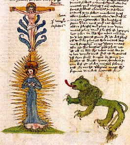
Buch der Heiligen Dreifaltigkeit, 1488 ; allégorie du lapis : Christus und Maria am Kreuz, daneben : der alchemische Löwe [cliquez pour agrandir]
Dans notre monade, nous avons remarqué que le symbole central était réalisé par la clef de voûte, constitué de la † qui est disposée entre
et ,
c'est-à-dire entre Temps et Espace : elle prend donc le sens de
durée. Corrélativement à ce que nous avons dit -
cf. supra
sur la schizogénie et le couple Ouranos / Cronos - il est
évident que
c'est l'intrusion de la matière dans l'esprit qui est la source
du mal,
le problème étant que la matière est d'essence
spirituelle ; nous voici
en pleine tautologie. Au plan de la physique, toutefois, nous
aurons la
resssource d'opposer la matière et l'antimatière :
dès lors, quand
Ouranos l'UN, indéterminé, se déploie comme il a
été dit supra, la
flèche du temps apparaît en
précédant d'extrêmement peu la manifestation de
l'espace , dualité
où s'exprime la
matière et les
opposés Lucifer et
Vesper. Nous n'insisterons pas ici sur ce que dit Jung au sujet
de la
synchronicité entre l'ère des Poissons et la figure de
l'antéchrist car
cette conception n'a pas de rapport direct avec l'hermétisme
alchimique
[on pourra
consulter
là-dessus Aïon,
chapitre VI]. En
revanche,
il nous faut examiner la figure de
la quaternité, p. 214 de la Symbolique de
l'Esprit,
où il
crée la double opposition Pater - Spiritus et Filius - Diabolus.
Cette intrusion de la quaternité
dans
la
trinité est
présente dans la figure
XXVIII de
l'AC.
Elle ne laisse aucun doute quant à la nature du Diabolus,
étant en relation évidente avec le Mysterium
conjunctionis.
Notons au passage que cette figure nous paraît beaucoup mieux
conçue que celle de Jung dans la mesure où le symbole de
la †
n'apparaît pas a priori. Il n'est sensible qu'à
l'entendement. Le diable ou Satan se confond, dans l'alchimie,
avec le
serpent Mercure dont il emprunte le caractère visqueux et
brûlant ; il a en outre un trait chthonien car
se rapproche de la lave [cf.
Mercure de nature].
La matière
plongée dans ce milieu est promise à la dissolution ou,
si l'on préfère, à la sublimation, en forme de spiritus
corruptus
auquel renvoie la figure
8 du Ros.
Phil. Nous
voyons
donc se dessiner une autre image de la
quaternité qui participe du cercle
croisé des quatre
éléments d'Empédocle .VI. une monade hiéroglyphique.
1. Monade et alchimie
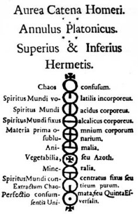
extrait de l'Aurea Catena Homeri
Une
monade représente la totalité possible d'un
système donné. On peut l'exprimer de différentes
manières : Leibniz a écrit, dans sa Monadologie
(1714) la théorie du sujet. Mais la monade - monaV
- exprime avant
tout
le concept d'unité. Cette figure, extraite, de la
Chaîne
Dorée
d'Hermès
[Aurea
Catena Homeri]
en est un exemple : nous partons, en haut du chaos,
symbolisé
par [chaos confusum],
pour aboutir à la terre hermétique solaire [perfectio
consummata, seu quinta essentia universalis]. L'auteur utilise
les symboles alchimiques usuels pour passer de la
nigredo à
,
en passant
successivement par le nitrum ,
le sal ,
pour en former l'ioV,
c'est-à-dire le verdet [materia
prima
omnium corporum
sublunarium]
qui est, stricto sensu, la pierre des philosophes.
C'est là le
midi des alchimistes qui correspond au medium coeli
des
Chaldéens. En un mot, la pleine Lune puisque toute
cette
époque de l'oeuvre baigne en fait dans la nuit. Le
salpêtre - sel de Pierre qui serait mieux nommé eau de
roche ou « lagrime di san Pietro
» [par
référence au titre éponyme de l'oeuvre d'Orlando
di Lasso, composée sur un texte de Luigi Tansillo] cf.
infra, figure
XXXI - tire
sa force de
l'antimoine saturnin [animalia à laquelle on
ajoute la
croix du verdet ou materia prima]
, cf. Artephius. À l'antimoine
saturnin
s'ajoute le feu du vitriol [mineralia] qui doit
équilibrer la pierre animale, en sorte de constituer
la pierre
végétale ou Azoth [il s'agit du feu secret
des
philosophes, d'où l'association du cercle et de la
croix].
Cet Azoth est l'artifice qui permet la génération du
composé ou lapis :
« Et Azot est vraiment ma Soeur, Et Kibrick en vérité est mon Frère : le Serpent d'Arabie est mon nom Qui mène tout ce jeu. » [Verses belonging to an Emblematicall Scrowle, in Theatrum Chemicum Britannicum, pp. 375-380 - cité par Jung in Psychologie et Alchimie, op. cit., p. 578, note 58].
Signalons au passage que Jung fait peut-être une erreur, à la p. 208 de son Psychologie et Alchimie quand il assure que l'azoth est « l'un des innombrables synonymes de la pierre. » Il semble qu'il s'agisse plutôt de l'un des qualificatifs du Mercurius,
l'ambiguité étant qu'Azoth exprime la forme à la
fois mercurielle et sulfureuse du Compost philosophal
en ce temps de la
Grande coction ; le viriditas ou vert - dont il parle
en citant Senior [in
Artis
Auriferae, ii, Rosarium
Philosophorum,
pp. 204-384]
est donc l'un
des noms du Lion vert. Nous avons
déjà dit que le terme Azoth,
terme arabisant traduit du grec, devait avoir été mis
pour « thaoz »
dans lequel il faut lire qeion
ou plutôt qeioV
[c'est-à-dire
Dieu
ou le
Soufre, ce qui revient pour le disciple d'Hermès
strictement au
même].
L'avant
dernier hiéroglyphe exprime la
volatilisation de l'aqua permanens [extractum
chaoticum purum]
: il
est important car c'est la sublimation du -
il
s'agit, rappelons-le, de la 2ème sublimation - qui
est la clef de la coagulation progressive de l'eau
mercurielle.
D'ailleurs, cet avant dernier hiéroglyphe s'oppose
exactement,
en le complétant, au second, qui nous montre la 1ère
sublimation [spiritus
mundi
volatilis
incorporeus],
celle
du couple {,
},
sous forme des éléments combinés ou
principiés {,
}
par la
médiation du sel
nitre ,
aidé en
cela du vitriol .
Ces
éléments combinés se
trouvent renvoyés, dans le monde des correspondances
psychanalytiques, à l'animus
et
à l'anima
que l'on peut
également
représenter par le sulphur .
Il
s'agit, en effet, de représentations féminines où
participe la dissolution qui s'exprime par la †. Le
symbole circulaire de l'Ouroboros est omniprésent et
l'on peut y
voir la formulation originale et élémentaire du
mandala .
[chaos confusum],
pour aboutir à la terre hermétique solaire [perfectio
consummata, seu quinta essentia universalis]. L'auteur utilise
les symboles alchimiques usuels pour passer de la
nigredo à
,
en passant
successivement par le nitrum ,
le sal ,
pour en former l'ioV,
c'est-à-dire le verdet [materia
prima
omnium corporum
sublunarium]
qui est, stricto sensu, la pierre des philosophes.
C'est là le
midi des alchimistes qui correspond au medium coeli
des
Chaldéens. En un mot, la pleine Lune puisque toute
cette
époque de l'oeuvre baigne en fait dans la nuit. Le
salpêtre - sel de Pierre qui serait mieux nommé eau de
roche ou « lagrime di san Pietro
» [par
référence au titre éponyme de l'oeuvre d'Orlando
di Lasso, composée sur un texte de Luigi Tansillo] cf.
infra, figure
XXXI - tire
sa force de
l'antimoine saturnin [animalia à laquelle on
ajoute la
croix du verdet ou materia prima]
, cf. Artephius. À l'antimoine
saturnin
s'ajoute le feu du vitriol [mineralia] qui doit
équilibrer la pierre animale, en sorte de constituer
la pierre
végétale ou Azoth [il s'agit du feu secret
des
philosophes, d'où l'association du cercle et de la
croix].
Cet Azoth est l'artifice qui permet la génération du
composé ou lapis :« Et Azot est vraiment ma Soeur, Et Kibrick en vérité est mon Frère : le Serpent d'Arabie est mon nom Qui mène tout ce jeu. » [Verses belonging to an Emblematicall Scrowle, in Theatrum Chemicum Britannicum, pp. 375-380 - cité par Jung in Psychologie et Alchimie, op. cit., p. 578, note 58].
Signalons au passage que Jung fait peut-être une erreur, à la p. 208 de son Psychologie et Alchimie quand il assure que l'azoth est « l'un des innombrables synonymes de la pierre. » Il semble qu'il s'agisse plutôt de l'un des qualificatifs du Mercurius
,
l'ambiguité étant qu'Azoth exprime la forme à la
fois mercurielle et sulfureuse du Compost philosophal
en ce temps de la
Grande coction ; le viriditas ou vert - dont il parle
en citant Senior [in
Artis
Auriferae, ii, Rosarium
Philosophorum,
pp. 204-384]
est donc l'un
des noms du Lion vert. Nous avons
déjà dit que le terme Azoth,
terme arabisant traduit du grec, devait avoir été mis
pour « thaoz »
dans lequel il faut lire qeion
ou plutôt qeioV
[c'est-à-dire
Dieu
ou le
Soufre, ce qui revient pour le disciple d'Hermès
strictement au
même].
L'avant
dernier hiéroglyphe exprime la
volatilisation de l'aqua permanens [extractum
chaoticum purum]
: il
est important car c'est la sublimation du -
il
s'agit, rappelons-le, de la 2ème sublimation - qui
est la clef de la coagulation progressive de l'eau
mercurielle.
D'ailleurs, cet avant dernier hiéroglyphe s'oppose
exactement,
en le complétant, au second, qui nous montre la 1ère
sublimation [spiritus
mundi
volatilis
incorporeus],
celle
du couple {,
},
sous forme des éléments combinés ou
principiés {,
}
par la
médiation du sel
nitre ,
aidé en
cela du vitriol .
Ces
éléments combinés se
trouvent renvoyés, dans le monde des correspondances
psychanalytiques, à l'animus
et
à l'anima
que l'on peut
également
représenter par le sulphur .
Il
s'agit, en effet, de représentations féminines où
participe la dissolution qui s'exprime par la †. Le
symbole circulaire de l'Ouroboros est omniprésent et
l'on peut y
voir la formulation originale et élémentaire du
mandala .2. le
cercle
croisé
Nous allons à présent essayer de dégager des signes planétaires une synthèse personnelle. Elle est composée de trois sous-ensembles, que l'on peut relier aux « patterns of behaviour » de Jung. On peut l'exprimer - sous sa forme unitaire - par le symbole.
Ce cercle croisé contient, pour qui veut bien les voir, les
sept
planètes et, partant, les sept métaux. Nous venons de
voir, au §1, que
constitue la materia
prima
des Sages ; il ne faut point y lire prima
materia qui
serait
impropre et conduirait à des absurdités. Dans les vieux
textes [les
tous premiers
d'ailleurs, cf. Zosime, Alphidius, Stephanus, etc., cf. Introduction
à
la chimie des Anciens, Berthelot], on lit que la
prima materia est la matière première à partir de
laquelle l'Artiste débute ses travaux d'agriculture
céleste. On a tout dit de la prima materia, qu'elle se
trouvait
dans le fumier, que l'impétrant devrait aller la chercher
jusqu'aux latrines, etc. On a aussi écrit qu'elle était
végétale, animale et minérale ; que
néanmoins, on ne devait point la rencontrer dans les
atrament,
colcothar, vitriol, eau-forte, vinaigre, etc. Bref, on a
essentiellement professé que la prima materia était tout
sauf unique et qu'on la trouvait jusque dans la boue de nos
chemins,
que chacun la possédait chez soi ! Quelle est donc cette
matière qui, à ce point, peut posséder ce don
d'ubiquité ou cet aspect protéiforme mais qui, dans le
même temps, est unique ? Nous avons esquissé la
réponse à cette question dans les deux sections prima materia
et chimie
et
alchimie : elles
ont
été traitées dans une optique résolument
opératoire [la
matière] et
nous
comptons à présent en
esquisser la partie oratoire [la
forme].
La materia prima apparaît rapidement dans les textes comme
l'unité représentée par le cercle et le
carré. Dans les Symboles
oniriques,
Jung
écrit :
« Le résultat est généralement appelé quintessence, bien que ce ne soit en aucun cas le seul nom donné à l' "Un" toujours ardemment désiré et jamais obtenu. Les alchimistes disent qu'il a "mille noms" comme la materia prima (matière originelle) ... » [Psychologie et Alchimie, trad. Buchet Chastel, op. cit.]
Tout est dit : revêt ses
deux aspects de quintessence [leptotath]
ou de venin [ioV]
qui sont connus ailleurs sous les espèces du Bien et du Mal.
Jung reviendra sur ce grand problème au soir de sa vie, dans Réponse
à
Job [trad.
Buchet-Chastel, 1964].
Cette
quintessence - qu'on pourrait prendre pour une chose puissante
et
extraordinaire - gagne, dans le grec, en finesse puisque leptoV
signifie : dépouillé
de sa peau, de sa pellicule. Nous
voici immédiatement renvoyés au vieux thème du
dépouillement des habits royaux du couple alchimique : le Roi et
la Reine du Rosarium
Philosophorum
se
dévêtent avant de prendre
le bain dans l'aqua permanens ; on pourra aussi revoir là-dessus
l'Allégorie
de
Merlin,
cf. prima
materia.
On trouve dans l'AC
- figure
IV
- cette image du dragon qui doit être mis en menus morceaux afin
d'en tirer toute la subtilité ; afin que son feu dévorant
se transforme en esprit subtil .
dragon garrotté (fixation du mercure) : Oxford, Bodleian Library, Ms. Add. A 287 f. 98 r. et f. 104 v.
Il existe une autre version de cette scène, dans un MS. de Nuremberg, signalé par Van Lennep, in Alchimie, p. 109-111, ill. 153. Notons que dans cette version, il n'y a plus de couple alchimique et que le Rebis est lavé par deux anges. Une grosse roche est visible à droite. Serait-ce une préfiguration de la planche I du Mutus Liber ? En outre, la colombe, en haut à droite, est remplacée par une couronne et la fleur est remplacée par un corbeau. Thémis porte dans les plateaux de sa balance les corps du
et de .
L'ensemble paraît, au plan hermétique, plus logique bien
que le dessin soit assez négligé. Quoi qu'il en soit, il
semble que cette aquarelle soit antérieure, par son style,
à celle du Codex Vossianus. Voilà qui réclame des
recherches...
Nous allons à présent essayer de dégager des signes planétaires une synthèse personnelle. Elle est composée de trois sous-ensembles, que l'on peut relier aux « patterns of behaviour » de Jung. On peut l'exprimer - sous sa forme unitaire - par le symbole
.
Ce cercle croisé contient, pour qui veut bien les voir, les
sept
planètes et, partant, les sept métaux. Nous venons de
voir, au §1, que
constitue la materia
prima
des Sages ; il ne faut point y lire prima
materia qui
serait
impropre et conduirait à des absurdités. Dans les vieux
textes [les
tous premiers
d'ailleurs, cf. Zosime, Alphidius, Stephanus, etc., cf. Introduction
à
la chimie des Anciens, Berthelot], on lit que la
prima materia est la matière première à partir de
laquelle l'Artiste débute ses travaux d'agriculture
céleste. On a tout dit de la prima materia, qu'elle se
trouvait
dans le fumier, que l'impétrant devrait aller la chercher
jusqu'aux latrines, etc. On a aussi écrit qu'elle était
végétale, animale et minérale ; que
néanmoins, on ne devait point la rencontrer dans les
atrament,
colcothar, vitriol, eau-forte, vinaigre, etc. Bref, on a
essentiellement professé que la prima materia était tout
sauf unique et qu'on la trouvait jusque dans la boue de nos
chemins,
que chacun la possédait chez soi ! Quelle est donc cette
matière qui, à ce point, peut posséder ce don
d'ubiquité ou cet aspect protéiforme mais qui, dans le
même temps, est unique ? Nous avons esquissé la
réponse à cette question dans les deux sections prima materia
et chimie
et
alchimie : elles
ont
été traitées dans une optique résolument
opératoire [la
matière] et
nous
comptons à présent en
esquisser la partie oratoire [la
forme].
La materia prima apparaît rapidement dans les textes comme
l'unité représentée par le cercle et le
carré. Dans les Symboles
oniriques,
Jung
écrit :« Le résultat est généralement appelé quintessence, bien que ce ne soit en aucun cas le seul nom donné à l' "Un" toujours ardemment désiré et jamais obtenu. Les alchimistes disent qu'il a "mille noms" comme la materia prima (matière originelle) ... » [Psychologie et Alchimie, trad. Buchet Chastel, op. cit.]
Tout est dit :
revêt ses
deux aspects de quintessence [leptotath]
ou de venin [ioV]
qui sont connus ailleurs sous les espèces du Bien et du Mal.
Jung reviendra sur ce grand problème au soir de sa vie, dans Réponse
à
Job [trad.
Buchet-Chastel, 1964].
Cette
quintessence - qu'on pourrait prendre pour une chose puissante
et
extraordinaire - gagne, dans le grec, en finesse puisque leptoV
signifie : dépouillé
de sa peau, de sa pellicule. Nous
voici immédiatement renvoyés au vieux thème du
dépouillement des habits royaux du couple alchimique : le Roi et
la Reine du Rosarium
Philosophorum
se
dévêtent avant de prendre
le bain dans l'aqua permanens ; on pourra aussi revoir là-dessus
l'Allégorie
de
Merlin,
cf. prima
materia.
On trouve dans l'AC
- figure
IV
- cette image du dragon qui doit être mis en menus morceaux afin
d'en tirer toute la subtilité ; afin que son feu dévorant
se transforme en esprit subtil . 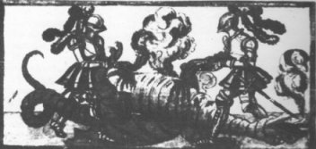
dragon garrotté (fixation du mercure) : Oxford, Bodleian Library, Ms. Add. A 287 f. 98 r. et f. 104 v.
Dans
la
symbolique
du mandala,
Jung
est plus explicite :
« Cette " roue sulfureuse " est aussi l'origine du bien et du mal, ou plutôt conduit en et hors d'eux. » [Jakob Boehme, De signatura rerum, etc., Amsterdam, 1635, chap. XIV, 13 - cité in Psychologie et Alchimie, op. cit., p. 217]
Voilà qui est beaucoup plus clair, car cette roue sulfureuse exprime la circulation du
dissous [i.e.
subtil : leptoV] :
l'ascension et la descension [terme
remployé
de Djabir, cf. prima
materia]
se retrouvent
dans l'envoi de l'animus et la réception de l'anima ou
sulphur
tel qu'on l'observe
dans deux des gravures du Ros. Phil.
Il y a lieu d'être ici d'une grande circonspection ; car
dans le premier
cas, c'est le
terme
d'esprit qui est
évoqué au lieu que dans le second
cas, c'est celui
d'âme.
À ce que nous sachions, nul jusqu'à présent n'a
parlé de ce mystère de la transsubstantation des formes
éthérées de la matière, envisagées
dans l'unus
mundus
des alchimistes. En effet, la plupart des commentateurs ne
parlent que
des trois principes de l'oeuvre sans se poser de question
sur leur
origine, leur devenir et, surtout, leur but. Le principe
dynamique
semble rester lettre morte ou « verbe perdu » [Verbum
dimissum
de Bernard Le Trévisan]
et l'on dirait bien qu'il manque à ces glosateurs modernes
la
plus petite idée des processus d'oxydo-réduction
qui
forment,
pourtant,
le trait d'union entre le laboratoire et l'oratoire. Voyons
cela. Dans le chapitre sur l'Ascension
de l'Âme,
Jung ne semble avoir aucun doute quant
à la nature de la forme qui se dégage du couple
alchimique qui gît au tombeau :
« Ainsi se trouve soulignée la nature de l'âme en tant que lien (vinculum, ligamentum), c'est-à-dire en tant que fonction de relation. » [extrait de Psychologie du Transfert, trad. Albin Michel, 1980]
Quel n'est pas notre étonnement de voir l'âme considérée en tant que lien ! Alors que le constitue
en
principe l'instrument de liaison
entre les extrémités du vaisseau de nature, où il
faudrait voir le spiritus sanctus. Comment l'âme - i.e.
l'anima
ou -
pourrait-elle
constituer un lien au moment
même où elle disparait dans le processus de nigredo ? Cette
fonction
de relation qu'évoque Jung
existe bel et bien mais elle ressortit de la fonction de
messager du
mercure, dans ce mouvement incessant de circulation de la
matière, par quoi débute la Grande coction. Voici un
second extrait :
« ... l'âme ne descend pas pour vivifier un corps, mais elle abandonne celui-ci pour s'élever. L'âme est manifestement comprise ici comme une idée de l'unité ... et n'existe encore que de façon potentielle. C'est à l'idée de la totalité ... que se rapporte le "globe rond du ciel" (rotuntus globus coelestis) - Tractatus aureus, Musaeum Hermeticum, p. 47 » [Psychologie du Transfert, op. cit.]
La première question à se poser est de savoir dans quelle mesure on est en droit de déclarer que l'âme s'échappe d'un corps qui, par définition, n'est pas vivant : or, c'est bien le cas. Dans la nigredo, les matières disposées au creuset sont mises à nu, dépouillées [leptotath] et « ouvertes ». Il s'écoule des métaux et des minéraux mis à mort une forme qui a des traits qui la rapprochent d'un spiritus non pas sanctus mais corruptus. Les alchimistes parlent ici de la manifestation de l'esprit corrompu par le serpent et Artephius évoque en ses pages [cf. Livre secret] le vinaigre très aigre : c'est le mercure des philosophes ou animus. Dans
le Pseautier
d'Hermophile
[Bibliothèque
des Philosophes
chymiques, vol. IV, ii, pp. 394-461], Joubert de la
Salette écrit :
« Artéphius dit que le levain est tiré de l'or qui est le corps et le levain porte l'esprit corrompant ; ainsi l'eau, l'esprit et le corps composent ou fournissent la matière du levain... » [cap. C]
Le sieur de la Salette nous semble plus proche de la vérité que Jung. Car c'est cet esprit corrompu que l'on voit s'élever vers le nuage de l'unus mundus ou. Il
semble que
Jung n'est point examiné,
dans la Psychologie
du Transfert,
une
gravure qui aurait pu le mettre sur la
voie : il s'agit de la parabole du Déluge. Celui-ci est
synonyme
de corruption et de dissolution et c'est une indication
incontestable
sur l'allégorie de la fable où Deucalion et Pyrrha
rendent pour ainsi corps à la Terre mère [la
grand mère dont parle Jung
dans les Racines
de
la Conscience].
Figürliche alchimia, XVIIe, Mundificatio - f. 24r
16ème figure du Ros. Phil. : « icy l'eau commence à découler et donner derechef à boire à la Terre »
« Cette " roue sulfureuse " est aussi l'origine du bien et du mal, ou plutôt conduit en et hors d'eux. » [Jakob Boehme, De signatura rerum, etc., Amsterdam, 1635, chap. XIV, 13 - cité in Psychologie et Alchimie, op. cit., p. 217]
Voilà qui est beaucoup plus clair, car cette roue sulfureuse exprime la circulation du
dissous [i.e.
subtil : leptoV] :
l'ascension et la descension [terme
remployé
de Djabir, cf. prima
materia]
se retrouvent
dans l'envoi de l'animus et la réception de l'anima ou
sulphur
tel qu'on l'observe
dans deux des gravures du Ros. Phil.
Il y a lieu d'être ici d'une grande circonspection ; car
dans le premier
cas, c'est le
terme
d'esprit qui est
évoqué au lieu que dans le second
cas, c'est celui
d'âme.
À ce que nous sachions, nul jusqu'à présent n'a
parlé de ce mystère de la transsubstantation des formes
éthérées de la matière, envisagées
dans l'unus
mundus
des alchimistes. En effet, la plupart des commentateurs ne
parlent que
des trois principes de l'oeuvre sans se poser de question
sur leur
origine, leur devenir et, surtout, leur but. Le principe
dynamique
semble rester lettre morte ou « verbe perdu » [Verbum
dimissum
de Bernard Le Trévisan]
et l'on dirait bien qu'il manque à ces glosateurs modernes
la
plus petite idée des processus d'oxydo-réduction
qui
forment,
pourtant,
le trait d'union entre le laboratoire et l'oratoire. Voyons
cela. Dans le chapitre sur l'Ascension
de l'Âme,
Jung ne semble avoir aucun doute quant
à la nature de la forme qui se dégage du couple
alchimique qui gît au tombeau :« Ainsi se trouve soulignée la nature de l'âme en tant que lien (vinculum, ligamentum), c'est-à-dire en tant que fonction de relation. » [extrait de Psychologie du Transfert, trad. Albin Michel, 1980]
Quel n'est pas notre étonnement de voir l'âme considérée en tant que lien ! Alors que le
constitue
en
principe l'instrument de liaison
entre les extrémités du vaisseau de nature, où il
faudrait voir le spiritus sanctus. Comment l'âme - i.e.
l'anima
ou -
pourrait-elle
constituer un lien au moment
même où elle disparait dans le processus de nigredo ? Cette
fonction
de relation qu'évoque Jung
existe bel et bien mais elle ressortit de la fonction de
messager du
mercure, dans ce mouvement incessant de circulation de la
matière, par quoi débute la Grande coction. Voici un
second extrait :« ... l'âme ne descend pas pour vivifier un corps, mais elle abandonne celui-ci pour s'élever. L'âme est manifestement comprise ici comme une idée de l'unité ... et n'existe encore que de façon potentielle. C'est à l'idée de la totalité ... que se rapporte le "globe rond du ciel" (rotuntus globus coelestis) - Tractatus aureus, Musaeum Hermeticum, p. 47 » [Psychologie du Transfert, op. cit.]
La première question à se poser est de savoir dans quelle mesure on est en droit de déclarer que l'âme s'échappe d'un corps qui, par définition, n'est pas vivant : or, c'est bien le cas. Dans la nigredo, les matières disposées au creuset sont mises à nu, dépouillées [leptotath] et « ouvertes ». Il s'écoule des métaux et des minéraux mis à mort une forme qui a des traits qui la rapprochent d'un spiritus non pas sanctus mais corruptus. Les alchimistes parlent ici de la manifestation de l'esprit corrompu par le serpent et Artephius évoque en ses pages [cf. Livre secret] le vinaigre très aigre : c'est le mercure des philosophes ou animus
. Dans
le Pseautier
d'Hermophile
[Bibliothèque
des Philosophes
chymiques, vol. IV, ii, pp. 394-461], Joubert de la
Salette écrit :« Artéphius dit que le levain est tiré de l'or qui est le corps et le levain porte l'esprit corrompant ; ainsi l'eau, l'esprit et le corps composent ou fournissent la matière du levain... » [cap. C]
Le sieur de la Salette nous semble plus proche de la vérité que Jung. Car c'est cet esprit corrompu que l'on voit s'élever vers le nuage de l'unus mundus ou
. Il
semble que
Jung n'est point examiné,
dans la Psychologie
du Transfert,
une
gravure qui aurait pu le mettre sur la
voie : il s'agit de la parabole du Déluge. Celui-ci est
synonyme
de corruption et de dissolution et c'est une indication
incontestable
sur l'allégorie de la fable où Deucalion et Pyrrha
rendent pour ainsi corps à la Terre mère [la
grand mère dont parle Jung
dans les Racines
de
la Conscience].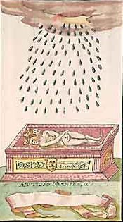
Figürliche alchimia, XVIIe, Mundificatio - f. 24r
16ème figure du Ros. Phil. : « icy l'eau commence à découler et donner derechef à boire à la Terre »
On
trouve
encore ceci dans la Turba
:
« Parmenides dit aussi la même chose : Si le corps n'est ruiné, démoli, du tout rompu et corrompu par la putréfaction, cette occulte et secrète vertu de la matière ne se pourra tirer dehors ni se conjoindre parfaitement au corps. » [11ème sentence]
L'idée complémentaire qui se dégage est celle d'une substance qui doit être dissoute [nous dirons sublimée] dans le mercure et par le mercure : rupture des parties, corruption du tout, voilà ce qu'il faut comprendre. Quant à la secrète vertu, il gît dans le pouvoir du sulphur [principe
principié]
caché dans le soufre rouge
[principe
simple, agent].
L'extraction
de la force du ,
son principe volatil, crée l'animation du mercure : on
le nomme
anthropos ou premier Adam. C'est là un point fondamental
en
matière de symbolique : c'est cet anthropos que l'on
voit surgir
de la boue dans l'une des gravures du Splendor
solis
[version :
Nuremberg
- Londres]. Paracelse le
nomme Adech
par
référence à « Azeth
» pour Azoth,
cf. supra [cité
in
Jung, Synchronicité
et
Paracelsica, trad. Albin Michel]
:
« L'union des deux est donc une sorte d'autofécondation, ce qui est précisément une des propriétés qu'on attribue toujours au dragon mercuriel. » [Psychologie et Alchimie, la symbolique du mandala, p. 211, op. cit.]
Cette autofécondation ne saurait se faire ex nihilo et, comme on vient de le voir, elle nécessite au moins la collaboration de la force vitale du
d'où ce spiritus
corruptus
est d'abord séparé par le feu secret, au stade de la
nigredo. Remarquons que parfois, le magicien de Küsnacht
[pour
remployer l'expression de Gilles
Quispel, in C.G. Jung, Jung
et la
gnose, Cahiers de l'Herne, p. 136]
se trouve en désaccord avec les préceptes
hermétiques ; ainsi :
« De l'oeuf ... s'envole l'aigle ou le phénix, l'âme libérée - identique, en dernière analyse, à l'Anthropos qui était emprisonné dans l'étreinte de Physis. » [symbolique de la mandala, op. cit., p. 266]
L'anthropos ne sauraît être à la fois l'anima et le spiritus corruptus... Quant à l'aigle et au phénix, leur symbolique est très différente et ils ne sont nullement synonymes [cf. symbolique de la mandala, p. 266, §305]. L'aigle intervient pour assécher la terre après le déluge, par les sublimations répétées - cf. figure XXXI - et c'est l'artifice de l'assation dont parle Fulcanelli dans le Myst. Cath. L'aigle ne représente donc qu'un moyen, une technique, alors que le phénix [voir poème du phénix] a une représentaton objective - effet des sublimations - qui est le lapis. Nous verrions plutôt dans cet anthropos l'antimimon pneuma [l'esprit qui contrefait, évoqué par deux fois par Jung in Psychologie et Alchimie, p. 17 où la notion de diabolus est implicite et p. 53 où le fils des Ténèbres est directement évoqué avec cette citation qui est tout un programme : « Dissipe les ténèbres épouvantables de notre esprit, donne une lumière à nos sens. »] Cet antimimon n'est évidemment pas sans évoquer l'antimonium des alchimistes qui ont immédiatement suivi Artephius quand il écrit : « antimonium est de parti saturnii... » [cf. Livre secret]. Jung en revanche voit juste quand il écrit plus loin :
« C'est pourquoi la materia prima ... est la terre noire, magiquement fertile, qu'Adam emporta du paradis, nommée aussi antimoine et décrite comme "le noir plus noir que le noir" (nigrum nigrius nigro). » [la materia prima, Psychologie et alchimie, op. cit., p. 419]
Nous sommes ici au coeur du problème soulevé par la question de l'anthropos et de sa représentation spirituelle. Nous revenons à la figure du premier Adam, de celui qui est stricto sensu dépourvu d'âme et dont l'esprit ou pneuma ressemble à du vent [aer = pneuma avec une allusion à aes, airain ; de même qu'il existe une relation entre aquila et aqua]. Jung écrit là-dessus :
« Mais ce dernier [le noûs] est extérieur à l'homme : il est son démon ... Il semble bien être identique au dieu Anthropos : il apparaît au côté du démiurge mais est l'antagoniste des sphères planétaires. » [l'oeuvre, Psychologie et Alchimie, p. 386]
Nous rejoignons ici la quaternité que Jung introduit dans ses Essais sur la Symbolique de l'Esprit [op. cit.] et qu'il définit comme l'intrusion du diabolus in trinitas. À cet effet, il établit un transfert à partir de la symbolique alchimique, en utilisant des formes qui, dit-il, n'ont rien d'humain [on se demande comment cela est possible dans la mesure où ces formes géométriques qu'il évoque sont des synthèses mentales...] Jung établit ensuite le parallèle entre ces symboles géométriques et d'autres, thériomorphes, qui lui permettent d'établir une transition vers la trinité [agneau = Christ ; colombe = spiritus sanctus ; serpent = Satan]. Avec justesse, il signale que le diable est aussi un esprit : c'est là qu'il faut placer le spiritus corruptus que nous évoquions tout à l'heure car il correspond exactement à ce 4ème élément évoqué dans le dogme de la Trinité [Symbolique de l'esprit, pp. 204 - 226]. Ce spiritus provient de la prima materia - objet de la quête formant le 1er oeuvre des alchimistes - et permet la préparation de la materia prima ou première matière. Cette préparation est sous la dépendance de deux sels, dont l'union est assuré par le sceau igné de la croix [1ère partie de notre monade].
VII.
Les aquarelles
du Codex Vossianus 29 de Leiden : transfert et
projection
L'occasion nous est donnée d'introduire des aquarelles de l'AC qui n'appartiennent pas au MS. Rhenoviensis 172 de Zurich : il s'agit de celles qui sont incluses dans le Codex Vossianus 29 de Leiden. Un mot là-dessus : cette collection se trouve à la bibliothèque de l'université de Leiden
[The Codices Vossiani Chymici in Leiden University Library’, in: Special Collections. A Guide to the Collections of Leiden University Library and Neighbouring Institutions (Leiden 2002) 33-38]
Elle porte le titre de CODICES VOSSIANI CHYMICI, répartie en 44 ouvrages in-folio, 61 in-quarto et 8 in-octavo. Notre mss porte le n° VCF 29 : Thomas Aquinatus de Alchymia germanice. On trouve encore un Thomae Aquinati Epistola ad Philippum regem Hispaniae et Thomas Aquinatus de Lapide summe philosophico au VCF 8. C'est Isaac Vossius [1618 -1689] qui a compilé ces manuscrits. Isaac Vossius [Dictionary of National Biography, Voir aussi Watson, p.395. in Watson, F. , “ Notes and materials on religious refugees and their relation to education in England before theRevocation of the Edict of Nantes ”], fils de Gerard John Vossius (1577-1649). Vossius père fut professeur à Leiden en 1622, et avait été invité en Angleterre en 1629, lorsqu’il fut nommé chanoine de Canterbury. Vossius fils, également neveu de Junius, se rendit en Angleterre en 1670 et devint chanoine de Windsor, où il disposa de la meilleure bibliothèque privée du monde, dont Paul Colomiez catalogua les mnuscrits après sa mort [Blok, F.F. : Contribution to the history of Isaac Vossius’s library, Amsterdam : North Holland Publishing Co, 1974 (Verhandelingen der Koninklyke Nederlandse Akademie van Wetenschappen afd., Letterkunde N.R., Deel 83)] . Bien qu’il ne fut pas bibliothécaire, il s’occupa du dépôt de la bibliothèque de son père à la Bibliothèque royale suédoise et fut chargé d’acheter des ouvrages pour le compte de la Reine Christine de Suède [cf. à ce sujet E. Canseliet : Deux Logis Alchimiques, Pauvert, pp. 83-85, 1979]. Il était lié à Paul Colomiez (1638 -1692), originaire de La Rochelle, qui l'accompagna en Hollande et à Franciscus Junius [François Du Jon, 1589 - 1677]. En 1690, la bibliothèque d'Isaac Vossius fut vendue : on sait qu'elle appartint ensuite à P. Petau, à l'empereur Rodolphe II
[Quelques manuscrits alchimiques de la collection de Rodolphe II sont préservés à l'Université de Leiden avec beaucoup d'autre matériel analogue provenant de Bohême :il s'agit des Codices Vossiani Chymici et 11 de ces manuscrits ont appartenu à Redolphe. Cette collection fut pillée par les armées Suédoises qui ont envahi la Bohême dans les années 1640 ; elle fut envoyée à la bibliothèque royale de Stockholm. Quand la Reine Christine abdiquât en 1654, elle fît cadeau des manuscrits à Isaac Vossius qui ne voulût pas des manuscrits alchimiques et essayât sans succès de les vendre. A sa mort, la collection entière fut achetée par l'Université de Leiden. Ces mss sont du XVIe et du XVIIe siècle. source : Philip Neal ]
et à Melchisédech Thévenot (1620 -1692) qui fut un grand bibliophile [cf. Gallica, bnf : Bibliotheca Thevenotiana sive catalogus impressorum et manuscriptorum librorum bibliothecae viri clarissimi D. Melchisedecis Thevenot, Lutetiae Parisiorum : apud Florentinum & Petrum Delagini, 1694]
Jacques Van Lennep a consacré dans son Alchimie [Dervy, 1986] un chapitre entier aux manuscrits de la reine Christine, pp. 97-105 et notamment au De Alchimia du pseudo d'Aquin, MS. ne comportant pas moins de 121 dessins aquarellés. Herman Boerhaave, le célèbre chimiste, cite certains de ces traités [Elementa chemiae, Leyde, 1732, p. 17 ; Boerhaave avait été chargé vers 1700 par Jan van den Berg, d'être le superviseur de la coll. Vossianus]. Comme nous venons de le voir, ce MS. a abouti à la bibliothèque de Leyde.
« Il fut écrit en gothique cursive par un notaire de Mayence, Valentinus Hernworst, qui le commença en 1522 pour y apporter encore de ajoutés jusqu'en 1533. » [p. 97]
Le point qui nous intéresse est le suivant : Jung a inclus dans son Psychologie et alchimie une douzaine de ces aquarelles avec la mention De Alchimia, Aquin du folio 48 au folio 99. La première série de ces illustrations est tirée de l'Aurora consurgens dont le texte De Alchimia, est attribuée à Thomas d'Aquin. Suit une deuxième série que ne vient interrompre aucun texte jusqu'au folio 106v. Cet ensemble est remarquable en ce qu'il conjoint les illustrations de l'AC, celles du Livre de la Sainte Trinité et, enfin, ces aquarelles appendues au De Alchimia. Il nous a donc semblé faire oeuvre utile en ajoutant les aquarelles que Jung a distribuées dans son Psychologie et Alchimie et qui ne sont pas, loin s'en faut, sans rapport avec celles de l'AC.
Voici la liste des titres qu'on trouve dans le MS. Vossianus F 29 [cf. http://www.alchemywebsite.com/almss30.html] :
3636. Leiden MS. Vossianus Chym. F. 29.
161 folios. Paper. 308x206mm. 16th Century [1522.]
1. f1-24 Pseudo-Albertus Magnus, De lapidibus [two extracts in German.]
2. f25-32 [Tables of the planets rulling the hours of the day and night.]
3. f33 [Fragment of chapter 42 of Liber primus de consideratione quintae essentiae of Johannes Rupescissa.]
4. f33v-38v [Various short pieces some in Latin, and some in German verse.]
5. f39- 71v Pseudo Thomas Aquinas, Aurora consurgens [in Latin, with 36 coloured paintings.]
6. f72 [Various medical precepts and practices, in Latin.]
7. f73- 99v [Various coloured figures, painted by Johannes Hoch, including the 'Buch der Heiligen Dreifaltigkeit' series.]
8. f100 [Alchemical recipes in German.]
9. f101-103v Rosarium abreviatum, Tractatus II: De lapide philosophico [in German.]
10. f104-113v Dei tabula der Kunst der alten [with pictures.]
11. f114 [Recipes in Latin.]
12. f115-120 [Alchemical tract in German.]
13. f120v-123 Pseudo Raimon Lull, Elucidation testamenti [in Latin.]
14. f123v-124v [Recipes in German and Latin.]
15. f125-132v Vocabula alchymistica [in Latin.]
16. f133-152 [Various short pieces in German.]
17. f152v-154 Lorentz Misch, De compositione auri potabilis [in German.]
Et nous ajoutons cette introduction au F. 29 par P.C. Boeren [Codices Vossiani Chymici, Universitaire Pers Leiden, 1975, pp. 83-85]
---------------------------------------------------------------------------------------
VOSS. CHYM. F. 29
XVIe siècle déb. (1522).- Papier, originaire de l’Allemagne du Sud: ff. I, 146-160 (Briquet 15968); fT. 1-24 (Briquet 2968); ff. 25-144 (G. Piccard, Die Kronen-Wasserzeichen, I, PI. VII, no. 27). Le f. 145 (pièce séparée) est de parchemin.
161 ff 308x206 mm. Foliotation moderne (au crayon): I, 1-160. Foliotations du XVIe siècle (à l’encre): au coin supérieur de droite, de I à LXXXI (= fol. mod. 1-81); au coin inférieur de droite, de 1 à 115, et de 122 à 154 (= fol. mod. 3-154). Entre les fT. 113 et 114 de la foliotation actuelle il y a 6 feuillets de perdus.
24 cahiers: 1-1 (f. I), 12 III (f. 1-72), 2 IV (f. 73-88), 2 VI (f. 89-112), V-6 (f. 113-117), IV (f. 118-125), V (f. 126-135), V + 1 (f. 136-146), II (f. 147-150), IV (f. 151-158), I (f. 159-160). Sans réclames.
Justification (à la pointe sèche) de 225/245 à 110/125 mm. Ecriture gothique cursive de chancellerie. Initiales rouges et violettes. Eléments de rubrication.
Scribe: Valentinus Hernworst, bourgeois d’Erfurt, notaire et huissier de la temporalité de l’archidiocèse de Mayence, apparemment identique au Valentinus Hernnworst de Butzbach qui fut immatriculé à l’université d’Erfurt en 1508. Il aménagea le présent recueil en 1522, le remplit de son écriture de 1522 à 1526, le fit illustrer en 1526 et fit plusieurs ajouts et insertions, de 1526 à 1533. Indications: Beschrieben durch Valentinum Hernworst burger zue Erffurdt zue der gülden laden bey sanct Gothortt wonhajftig, Anno domini etc. XXII, fritags nach Erhardi der do was der zehnte tag des monden Januarii (f. 24), et ainsi de suite, avec quelques variations, aux ff. 24v (le 2 nov. 1526... in der lowengassen zum wissen Schilde), f. 36 (le 26 nov. 1526), f. 71v (le 20 sept. 1522), f. 76 (le 28 août 1525... zum Lyndtworm auff dem Rossmargkt gegen dem heyligenn borne), f. 1Q0V (le 5 juin 1530... in der lowen gasse zum kleinen rnertin... mentzre freybothen...)., f. 114v (le 29 juin 1530... in domo zum Cleyn rnertin vulgariter nuncupata, si ta in platea leonis...), f. 114v (le 24 juin 1530... per Valentinum Hernworst Fribothenen Iudicii temporalis in Erjfurdt), f. 120 (1c 17 nov. 1526), f. 124'* (le 20 août 1530), f. 132v (le 18 janv. 1527), f. 141 (le 21 sept. 1530... durch Valentinum Hernworst dye Zeit Mentzsischenn Freybothen des weltlichen gerichts vnd Notarien zum Rothen thor zue Erjfurdt... in domo zum dein merlin in der lowen gossen...), f. 143v (1530-1532), f. 144 (le 27 nov. 1533... im Hausse zum weynkrawsse bey der Judenschule hynder dem Rathawsse...). - En 1566, un autre scribe a couvert de son écriture un nombre de feuillets blancs (les ff. 146— 154).
Le volume est orné de 121 peintures de couleurs, dues à plusieurs mains et divisées en deux séries. La première série, numérotée 2, 1 à 71, s’étend aux ff. 37 —99v ; la numérotation est de la même main que la très ancienne foliotation en chiffres arabes. Il est remarquable que les peintures qui couvrent les ff. 76-78 et 82-88 (les emblemata proprement dits), ne sont pas comprises dans cette numérotation en chiffres arabes, mais qu’elles sont bien comprises dans la numérotation en lettres (au crayon) qui s’étend du f.76v au f. 96 et qui va de A à Z> de Aa à Zz et de aaa à mmm. Les peintures de la deuxième série (ff. 104-113v) sont marqués des lettres a à m (à l’encre).
La plupart des peintures de la première série pourrait bien être de la main du scribe Valentin Hernworst, mais pour les nos. 50 à 71 (ff. 89-99v) et pour la peinture non-numérotée qui couvre le f. 78, le scribe a fait appel à la plume de l’enlumineur Johannes Hoch, son concitoyen, qui avait été immatriculé à l’université d’Erfurt en 1500 sous le nom de Johannes Hoche Erffurdensis. Le travail fut effectué le 26 octobre 1526, sous les yeux de Hernworst dans son étude même. Indication: Anno domini tausent funffhundert vnd sechsvndzwentzeigk auff Freytag nach Scueri Episcopi der do was der XXVI tag des mondenn Octobris Im Hause zuern weissen Schilde genant in der lowen gossen zue Erffurdt gelegen Sindt diese vor geschriebene Bylde vnd Figure durch Johannem Hoch Illuminierer gemacht, aujf beuehel Valentini Hernworst alias Winter kornn Burgerss zue Erffurdt, vnd bey gedachten Valentini Kost vnd auch myt seiner Valentini Hernworst cygcn hantschrifft die bey-stehende notabilia vnnd vnderschrifft geschrieben vnd geendet am tage vnnd Jare wie oben berurt ist (f. 99v). Plusieurs de ces peintures ont été reproduites en facsimilé à satiété. Il serait aussi inutile que malaisé d’ajouter à la bibliographie un relevé complet de ces reproductions. C'est le moment approprié, peut-être, de mettre en garde les amateurs et éditeurs contre la présomption d’originalité qui semble faire prime à l’égard des dessins et peintures de notre manuscrit. Directement ou indirectement, les dessins qui accompagnent le texte de l'Aurora consurgens (f. 39—71v), dérivent d’un manuscrit beaucoup plus ancien de ce traité (voir plus bas). Même les remarquables peintures de Johannes Hoch (if. 78, 89-99v) qui ont rendu célèbre notre manuscrit, remontent à un modèle plus ancien, à savoir le Livre de la Trinité (Buch der heiligen Dreifaltigkeit). On attend avec impatience l’entreprise d’une étude critique sur les origines de l'illustration et du texte ainsi que sur leur interdépendance.
Reliure d’époque (1537-1566). Parchemin sur ais de bois, dorure à froid, roulettes, cabochons et fermoirs de cuivre. Les roulettes des plats et des cadres extérieurs sont d’un type qui n’était pas répandu avant 1537; voir: Heinrich Schreiber, Adolar Baldensheym, ein Leipziger Renaissancebuchbinder, dans: Beiträge zum Rollen- und Platteneinband im 16. Jahrhundert. Festschrift h. Haebler (Leipzig 1937), pp. 176-200, spécialement la planche VII, no. 8. L’inscription du texte que portent les ff. 146-154 et qui fut effectuée en 1566, est postérieure à la mise en reliure. - L’intérieur du plat inférieur porte l’inscription raturée: Jeorius La... (?). En bas de la plaque du plat supérieur on discerne une autre indication raturée.
Originaire d’Erfurt.
Possesseurs. - Valentinus Hernworst à Erfurt, bourgeois, notaire, huissier de la temporalité de l'archevêché de Mayence, 1522-1536. Il témoigne encore dans un acte du 3 novembre 1536 pour les Augustins d’Erfurt; voir: Urkundenbuch der Erfurter Stifter und Klöster, publ. p. Alfred Overmann, III (Magdebourg 1930), no. 674. - Jeorius La.... à Erfurt (?); voir l'indication à l'intérieur du plat inférieur. - La ville d’Erfurt fut pillée par les Suédois en 1632. -Christine reine de suède; voir l’indication du dos Ms et le Catal. Christ, p. 38 (MSS. in-Fol. :) Aurora consurgens, cum picturis; Membrana. Callmcr (p. 196) n’a pas deviné l’identité de ce manuscrit avec le cod. Voss. Chym. F. 29. - isaac vossius; cfr. Cal. Coperdiague (D2) et Cat. Vossius (F 28). - Sous la cote F 29, le manuscrit (coté F 28 par Vossius) apparaît pour la première fois dans le catalogue imprimé, de 1716, de la Bibliothèque de l’université de Levde. Litt. - C. G. Jung, Psychologie und Alchemie (Zürich 1944), avec onze planches. - C. G. Jung, Symbole der Wandlung (Zürich 1952; 4e éd. de: Wandlungen und Symbole der Libido), avec deux planches. - C. G. Jung, Mysterium coniunctionis, III (Zürich et Stuttgart 1957), pp. 24-25. -Christine reine de Suède. Exposition. Musée National, Stockholm, 29 juin-16 octobre 1966. Catalogue, no. 888. L’auteur du catalogue, de manière assez gratuite, suggère une provenance de la bibliothèque de l’empereur Rudolphe II. - Liselotte Möller, Nährmutter Weisheit. Eine Untersuchung über einen spätmittelalterlichcn Bildtypus, dans: Deutsche Vierteljahresschrift für Literatur-Wissenschaft und Geistesgeschichte, XXIV (1950) 347-359, spécialement à la page 358 (au sujet de la représentation de la Sagesse qui se trouve au f. 73 du ms. Voss. Chym. F. 29). -Jacques van Lennep, A propos de Jérome Bosch. Polémique, Tarot et Sang-Dragon, dans: Gazette des Beaux-Arts. LXXI (1968) 189-190, à la note 10 (sur le f.74 du ms. Voss. Chym. F. 29 qui contient une enluminure qui représente un palmier près d’une fontaine de Jouvence). -Exposition. Van Medicijnman tot Médiats. Musée Frans Hals, Haarlem, 5 avril-2 juillet 1972.-H. Buntz, p. 46 (mention seulement comme témoin illustré de l'Aurora consurgens). -Avant de procéder à l’analyse du contenu, il importe de signaler le ms. 1663 du Chapitre Métropolitain de Prague (Catalogue de Ant. Podlaha, tome II, p. 557-559) qui, aux fT. 1-115, contient une copie du présent manuscrit. La copie qui comprend aussi l’ajout de Lorentz Misch (1566), est certainement postérieure à l’an 1566. Elle fut probablement faite en 1569, car, au f. 18, le copiste a remplacé le sigle V. H. (Valentin Hcrnworst) par la date 1569. Du f. 1 au f. 72, même la foliotation est identique à celle du ms. Voss. Chym. F. 29, mais le copiste n'a pas copié les fT. 78-99 qui sont couverts d’illustrations à pleine page. Pour le reste, la copie est complète, reproduisant même les indications de Valentin Hernworst. Elle nous sera de quelque utilité pour la reconstruction de la genèse et de l’état primitif du ms. Voss. Chym. F. 29 qui est l’autographe de Hernworst.
f.39—71v: pseudo-thomas d’aquin, aurora consurgens (latin), avec 36 peintures. - Sans titre. (Déb.:) Capitulum primum. / Uenerunt michi omnia bona paritcr cum ilia sapiencia austri, queforis prédicat... (Dés.:)... viuit et regnat deus per infinita secula seculorum Amen.
Thorndike-Kibre 1683. - Codex L. des éditions M.-L. von Franz. - C. G. Jung, Mysterium coniunctionis. Tome III: Aurora Consurgens, publié avec commentaire et traduction en allemand par Mlle Marie-Louise von Franz. Zurich et Stuttgart 1957. Voir spécialement la p. 24. -Aurora Consurgens. A document atlributed to Thomas Aquinas on the problem of opposite's in alchemy. Publié avec commentaire et traduction en anglais par Mlle Marie-Louise von Franz. (Bollingen Séries vol. LXXVII). Bollingen Foundation, New York. Panthéon Books, New York 1966. Voir spécialement les pp. 26-27. -
L’édition de Mlle von Franz est basée sur 7 manuscrits. Les peintures de notre manuscrit sont une calque terne de celles que contient le ms. Rh. 172 de la Bibliothèque Centrale de Zurich qui date du XVe siècle et qui provient de l’abbaye de Reichcnau.
L'édition de Mlle von Franz ne fait pas mention du manuscrit de Prague. A la suite d’une perte de quelques feuillets, ce manuscrit ne donne plus le texte qui correspond aux ff. 37v-40 de notre manuscrit.
Il existe un troisième manuscrit illustré de l'Aurora consurgens: Vienne, Bibl. Nat., ms. 11374, f. 1 —69v : cfr. Buntz, p. 46.
------------------------------------------------------------------------------------------------------------------------------------------------------------------------
Ces illustrations du n°7 sont de la main de Johannes Hoch qui fréquenta l'université d'Erfurt en 1500, huit ans avant que Hernworst n'y fût à son tour. Les n°5 et 7 nous intéressent au premier chef ; le n°5 pour d'évidentes raisons liées au texte de l'AC [cf. les variantes dans l'AC de M.-L. von Franz in l'Aurora Consurgens, trad. la Fontaine de Pierre, 1982] ; le n°7 pour deux raisons. Il contient des illustrations que Jung fait dépendre du De Alchimia pseudo aquinate. Or le De alchimya apparaît bien au F 29 selon le catalogue de Leide [http://ub.leidenuniv.nl/bc/whs/catalogi/catcomp1/05.html] mais nullement l'AC... Quoi qu'il en soit, les aquarelles qui sont incorporées dans le Psychologie et Alchimie suivent les f. de l'AC et semblent liées, en fait, à un autre traité, très important, le Buch der Heiligen Dreifaltigkeit, dont nous commenterons ultérieurement les illustrations.
« Parmenides dit aussi la même chose : Si le corps n'est ruiné, démoli, du tout rompu et corrompu par la putréfaction, cette occulte et secrète vertu de la matière ne se pourra tirer dehors ni se conjoindre parfaitement au corps. » [11ème sentence]
L'idée complémentaire qui se dégage est celle d'une substance qui doit être dissoute [nous dirons sublimée] dans le mercure et par le mercure : rupture des parties, corruption du tout, voilà ce qu'il faut comprendre. Quant à la secrète vertu, il gît dans le pouvoir du sulphur
[principe
principié]
caché dans le soufre rouge
[principe
simple, agent].
L'extraction
de la force du ,
son principe volatil, crée l'animation du mercure : on
le nomme
anthropos ou premier Adam. C'est là un point fondamental
en
matière de symbolique : c'est cet anthropos que l'on
voit surgir
de la boue dans l'une des gravures du Splendor
solis
[version :
Nuremberg
- Londres]. Paracelse le
nomme Adech
par
référence à « Azeth
» pour Azoth,
cf. supra [cité
in
Jung, Synchronicité
et
Paracelsica, trad. Albin Michel]
:« L'union des deux est donc une sorte d'autofécondation, ce qui est précisément une des propriétés qu'on attribue toujours au dragon mercuriel. » [Psychologie et Alchimie, la symbolique du mandala, p. 211, op. cit.]
Cette autofécondation ne saurait se faire ex nihilo et, comme on vient de le voir, elle nécessite au moins la collaboration de la force vitale du
d'où ce spiritus
corruptus
est d'abord séparé par le feu secret, au stade de la
nigredo. Remarquons que parfois, le magicien de Küsnacht
[pour
remployer l'expression de Gilles
Quispel, in C.G. Jung, Jung
et la
gnose, Cahiers de l'Herne, p. 136]
se trouve en désaccord avec les préceptes
hermétiques ; ainsi :« De l'oeuf ... s'envole l'aigle ou le phénix, l'âme libérée - identique, en dernière analyse, à l'Anthropos qui était emprisonné dans l'étreinte de Physis. » [symbolique de la mandala, op. cit., p. 266]
L'anthropos ne sauraît être à la fois l'anima et le spiritus corruptus... Quant à l'aigle et au phénix, leur symbolique est très différente et ils ne sont nullement synonymes [cf. symbolique de la mandala, p. 266, §305]. L'aigle intervient pour assécher la terre après le déluge, par les sublimations répétées - cf. figure XXXI - et c'est l'artifice de l'assation dont parle Fulcanelli dans le Myst. Cath. L'aigle ne représente donc qu'un moyen, une technique, alors que le phénix [voir poème du phénix] a une représentaton objective - effet des sublimations - qui est le lapis. Nous verrions plutôt dans cet anthropos l'antimimon pneuma [l'esprit qui contrefait, évoqué par deux fois par Jung in Psychologie et Alchimie, p. 17 où la notion de diabolus est implicite et p. 53 où le fils des Ténèbres est directement évoqué avec cette citation qui est tout un programme : « Dissipe les ténèbres épouvantables de notre esprit, donne une lumière à nos sens. »] Cet antimimon n'est évidemment pas sans évoquer l'antimonium des alchimistes qui ont immédiatement suivi Artephius quand il écrit : « antimonium est de parti saturnii... » [cf. Livre secret]. Jung en revanche voit juste quand il écrit plus loin :
« C'est pourquoi la materia prima ... est la terre noire, magiquement fertile, qu'Adam emporta du paradis, nommée aussi antimoine et décrite comme "le noir plus noir que le noir" (nigrum nigrius nigro). » [la materia prima, Psychologie et alchimie, op. cit., p. 419]
Nous sommes ici au coeur du problème soulevé par la question de l'anthropos et de sa représentation spirituelle. Nous revenons à la figure du premier Adam, de celui qui est stricto sensu dépourvu d'âme et dont l'esprit ou pneuma ressemble à du vent [aer = pneuma avec une allusion à aes, airain ; de même qu'il existe une relation entre aquila et aqua]. Jung écrit là-dessus :
« Mais ce dernier [le noûs] est extérieur à l'homme : il est son démon ... Il semble bien être identique au dieu Anthropos : il apparaît au côté du démiurge mais est l'antagoniste des sphères planétaires. » [l'oeuvre, Psychologie et Alchimie, p. 386]
Nous rejoignons ici la quaternité que Jung introduit dans ses Essais sur la Symbolique de l'Esprit [op. cit.] et qu'il définit comme l'intrusion du diabolus in trinitas. À cet effet, il établit un transfert à partir de la symbolique alchimique, en utilisant des formes qui, dit-il, n'ont rien d'humain [on se demande comment cela est possible dans la mesure où ces formes géométriques qu'il évoque sont des synthèses mentales...] Jung établit ensuite le parallèle entre ces symboles géométriques et d'autres, thériomorphes, qui lui permettent d'établir une transition vers la trinité [agneau = Christ ; colombe = spiritus sanctus ; serpent = Satan]. Avec justesse, il signale que le diable est aussi un esprit : c'est là qu'il faut placer le spiritus corruptus que nous évoquions tout à l'heure car il correspond exactement à ce 4ème élément évoqué dans le dogme de la Trinité [Symbolique de l'esprit, pp. 204 - 226]. Ce spiritus provient de la prima materia - objet de la quête formant le 1er oeuvre des alchimistes - et permet la préparation de la materia prima ou première matière. Cette préparation est sous la dépendance de deux sels, dont l'union est assuré par le sceau igné de la croix [1ère partie de notre monade].
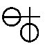
Il
est
aisé de remarquer que le
cercle croisé ou
résulte en
fait de la superposition de deux ensembles où l'on
reconnait le
SAL
[qui
n'est
évidemment pas notre chlorure de sodium mais de
l'alcalicus
corporeus]
et le NITRUM
[acidus
corporeus]
dont
l'association forme notre sel nitre,
c'est-à-dire le salpêtre
des
Sages. Ce n'est pas tout : ce symbole contient
encore le principe de
transfert
et de projection
si l'on tient compte des
superpositions suivantes :
résulte en
fait de la superposition de deux ensembles où l'on
reconnait le
SAL
[qui
n'est
évidemment pas notre chlorure de sodium mais de
l'alcalicus
corporeus]
et le NITRUM
[acidus
corporeus]
dont
l'association forme notre sel nitre,
c'est-à-dire le salpêtre
des
Sages. Ce n'est pas tout : ce symbole contient
encore le principe de
transfert
et de projection
si l'on tient compte des
superpositions suivantes :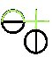 Jupiter |
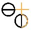 saturne |
À
gauche, l'arc supérieur
du SAL et la †
forment la structure de
; à droite,
une rotation de p/4
autour du centre de la croix et une autre rotation
de p/2 autour du centre
du symbole salin forme la structure de .
Le passage de
Saturne à Jupiter est ainsi assuré par une
véritable schizogénie,
ainsi qu'il en a été, auparavant, lors de la
transition
de phase entre Ouranos et Cronos. De là, dérivent
tous
les symboles planétaires et les idéogrammes salins
représentés dans la monade de l'Aurea
Catena Homeri.
Cette extension du père au fils, Jung en dit :
« Le fils marque la transition d'un état initial durable, appelé père et auctor rerum ... l'état non réfléchi et simplement perçu, appelé père, se transforme en état de conscience réfléchi et rationnel appelé fils ... » [le dogme de la Trinité, p. 221]
Pourquoi Ouranos détestait-il autant ses enfants, qu'il enfermait systématiquement dans le Tartare ? Pourquoi Gaïa, sa femme, a-t-elle aidé Cronos à châtrer son père, en lui fournissant la faucille propiciatoire ? Nous ne pouvons répondre directement à de telles questions et invitons le lecteur à ce livre d'initiation remarquable de Jean-Pierre Vernant, l'Univers, les Dieux, les Hommes [Seuil, 1999]. Toutefois, qu'il nous soit permis d'évoquer une hypothèse, connexe du domaine de la physique et rejoignant l'alchimie comme par magie. On sait qu'Ouranos, le Ciel,
est enfanté par Gaïa, la Terre .
On voit que, déjà, les deux composantes
générant l'hexagramme de Salomon sont unies, car non
seulement, Gaïa est mère d'Ouranos mais elle en est
également l'épouse. On se trouve devant un couple
avec
des contraires par rapport à l'alchimie : le mâle
est
volatil
tandis que la
femelle est fixe .
La conjonction entre ces deux principes est liée à
la
présence primordiale d'Éros
dans
lequel on devine
l'archétype d'Héphaistos ou .
Et du
à la †,
la transition est aisée. Éros est aussi une forme
archétypale du serpent et donc de Satan : son
pouvoir
s'étend aux fluides et aux minéraux : il assemble,
mélange et unit ; en tant qu'il représente
l'entité primordiale du désir
qui
rapproche, nous sommes
obligés de voir en lui l'équivalent de la force
gravitationnelle puisqu'il engendre les mondes. Il
est notable
qu'Éros possède déjà les traits du
mercurius senex de Jung : on le décrit comme le « vieil
Amour » et il est représenté avec
des cheveux
blancs ; il est primordial au sens qu'il apparaît
avant la
polarisation sexuelle [domaine
de
la
psyché]
; ainsi
qu'au sens où il imprime
(exprime) une poussée dans l'univers [domaine de la
physique].
Mais
à notre avis, le point le plus notable est que,
contrairement à ce que nous enseigne la science,
c'est de la
Terre que naît le Ciel et c'est là un point de
divorce
complet et, semble-t-il, radical, entre l'univers de
la psyché
primitive et l'univers tel que l'a conçu la « Raison
raisonnée » dans sa forme la plus actuelle et la
plus
aboutie...
; à droite,
une rotation de p/4
autour du centre de la croix et une autre rotation
de p/2 autour du centre
du symbole salin forme la structure de .
Le passage de
Saturne à Jupiter est ainsi assuré par une
véritable schizogénie,
ainsi qu'il en a été, auparavant, lors de la
transition
de phase entre Ouranos et Cronos. De là, dérivent
tous
les symboles planétaires et les idéogrammes salins
représentés dans la monade de l'Aurea
Catena Homeri.
Cette extension du père au fils, Jung en dit :« Le fils marque la transition d'un état initial durable, appelé père et auctor rerum ... l'état non réfléchi et simplement perçu, appelé père, se transforme en état de conscience réfléchi et rationnel appelé fils ... » [le dogme de la Trinité, p. 221]
Pourquoi Ouranos détestait-il autant ses enfants, qu'il enfermait systématiquement dans le Tartare ? Pourquoi Gaïa, sa femme, a-t-elle aidé Cronos à châtrer son père, en lui fournissant la faucille propiciatoire ? Nous ne pouvons répondre directement à de telles questions et invitons le lecteur à ce livre d'initiation remarquable de Jean-Pierre Vernant, l'Univers, les Dieux, les Hommes [Seuil, 1999]. Toutefois, qu'il nous soit permis d'évoquer une hypothèse, connexe du domaine de la physique et rejoignant l'alchimie comme par magie. On sait qu'Ouranos, le Ciel
,
est enfanté par Gaïa, la Terre .
On voit que, déjà, les deux composantes
générant l'hexagramme de Salomon sont unies, car non
seulement, Gaïa est mère d'Ouranos mais elle en est
également l'épouse. On se trouve devant un couple
avec
des contraires par rapport à l'alchimie : le mâle
est
volatil
tandis que la
femelle est fixe .
La conjonction entre ces deux principes est liée à
la
présence primordiale d'Éros
dans
lequel on devine
l'archétype d'Héphaistos ou .
Et du
à la †,
la transition est aisée. Éros est aussi une forme
archétypale du serpent et donc de Satan : son
pouvoir
s'étend aux fluides et aux minéraux : il assemble,
mélange et unit ; en tant qu'il représente
l'entité primordiale du désir
qui
rapproche, nous sommes
obligés de voir en lui l'équivalent de la force
gravitationnelle puisqu'il engendre les mondes. Il
est notable
qu'Éros possède déjà les traits du
mercurius senex de Jung : on le décrit comme le « vieil
Amour » et il est représenté avec
des cheveux
blancs ; il est primordial au sens qu'il apparaît
avant la
polarisation sexuelle [domaine
de
la
psyché]
; ainsi
qu'au sens où il imprime
(exprime) une poussée dans l'univers [domaine de la
physique].
Mais
à notre avis, le point le plus notable est que,
contrairement à ce que nous enseigne la science,
c'est de la
Terre que naît le Ciel et c'est là un point de
divorce
complet et, semble-t-il, radical, entre l'univers de
la psyché
primitive et l'univers tel que l'a conçu la « Raison
raisonnée » dans sa forme la plus actuelle et la
plus
aboutie...L'occasion nous est donnée d'introduire des aquarelles de l'AC qui n'appartiennent pas au MS. Rhenoviensis 172 de Zurich : il s'agit de celles qui sont incluses dans le Codex Vossianus 29 de Leiden. Un mot là-dessus : cette collection se trouve à la bibliothèque de l'université de Leiden
[The Codices Vossiani Chymici in Leiden University Library’, in: Special Collections. A Guide to the Collections of Leiden University Library and Neighbouring Institutions (Leiden 2002) 33-38]
Elle porte le titre de CODICES VOSSIANI CHYMICI, répartie en 44 ouvrages in-folio, 61 in-quarto et 8 in-octavo. Notre mss porte le n° VCF 29 : Thomas Aquinatus de Alchymia germanice. On trouve encore un Thomae Aquinati Epistola ad Philippum regem Hispaniae et Thomas Aquinatus de Lapide summe philosophico au VCF 8. C'est Isaac Vossius [1618 -1689] qui a compilé ces manuscrits. Isaac Vossius [Dictionary of National Biography, Voir aussi Watson, p.395. in Watson, F. , “ Notes and materials on religious refugees and their relation to education in England before theRevocation of the Edict of Nantes ”], fils de Gerard John Vossius (1577-1649). Vossius père fut professeur à Leiden en 1622, et avait été invité en Angleterre en 1629, lorsqu’il fut nommé chanoine de Canterbury. Vossius fils, également neveu de Junius, se rendit en Angleterre en 1670 et devint chanoine de Windsor, où il disposa de la meilleure bibliothèque privée du monde, dont Paul Colomiez catalogua les mnuscrits après sa mort [Blok, F.F. : Contribution to the history of Isaac Vossius’s library, Amsterdam : North Holland Publishing Co, 1974 (Verhandelingen der Koninklyke Nederlandse Akademie van Wetenschappen afd., Letterkunde N.R., Deel 83)] . Bien qu’il ne fut pas bibliothécaire, il s’occupa du dépôt de la bibliothèque de son père à la Bibliothèque royale suédoise et fut chargé d’acheter des ouvrages pour le compte de la Reine Christine de Suède [cf. à ce sujet E. Canseliet : Deux Logis Alchimiques, Pauvert, pp. 83-85, 1979]. Il était lié à Paul Colomiez (1638 -1692), originaire de La Rochelle, qui l'accompagna en Hollande et à Franciscus Junius [François Du Jon, 1589 - 1677]. En 1690, la bibliothèque d'Isaac Vossius fut vendue : on sait qu'elle appartint ensuite à P. Petau, à l'empereur Rodolphe II
[Quelques manuscrits alchimiques de la collection de Rodolphe II sont préservés à l'Université de Leiden avec beaucoup d'autre matériel analogue provenant de Bohême :il s'agit des Codices Vossiani Chymici et 11 de ces manuscrits ont appartenu à Redolphe. Cette collection fut pillée par les armées Suédoises qui ont envahi la Bohême dans les années 1640 ; elle fut envoyée à la bibliothèque royale de Stockholm. Quand la Reine Christine abdiquât en 1654, elle fît cadeau des manuscrits à Isaac Vossius qui ne voulût pas des manuscrits alchimiques et essayât sans succès de les vendre. A sa mort, la collection entière fut achetée par l'Université de Leiden. Ces mss sont du XVIe et du XVIIe siècle. source : Philip Neal ]
et à Melchisédech Thévenot (1620 -1692) qui fut un grand bibliophile [cf. Gallica, bnf : Bibliotheca Thevenotiana sive catalogus impressorum et manuscriptorum librorum bibliothecae viri clarissimi D. Melchisedecis Thevenot, Lutetiae Parisiorum : apud Florentinum & Petrum Delagini, 1694]
Jacques Van Lennep a consacré dans son Alchimie [Dervy, 1986] un chapitre entier aux manuscrits de la reine Christine, pp. 97-105 et notamment au De Alchimia du pseudo d'Aquin, MS. ne comportant pas moins de 121 dessins aquarellés. Herman Boerhaave, le célèbre chimiste, cite certains de ces traités [Elementa chemiae, Leyde, 1732, p. 17 ; Boerhaave avait été chargé vers 1700 par Jan van den Berg, d'être le superviseur de la coll. Vossianus]. Comme nous venons de le voir, ce MS. a abouti à la bibliothèque de Leyde.
« Il fut écrit en gothique cursive par un notaire de Mayence, Valentinus Hernworst, qui le commença en 1522 pour y apporter encore de ajoutés jusqu'en 1533. » [p. 97]
Le point qui nous intéresse est le suivant : Jung a inclus dans son Psychologie et alchimie une douzaine de ces aquarelles avec la mention De Alchimia, Aquin du folio 48 au folio 99. La première série de ces illustrations est tirée de l'Aurora consurgens dont le texte De Alchimia, est attribuée à Thomas d'Aquin. Suit une deuxième série que ne vient interrompre aucun texte jusqu'au folio 106v. Cet ensemble est remarquable en ce qu'il conjoint les illustrations de l'AC, celles du Livre de la Sainte Trinité et, enfin, ces aquarelles appendues au De Alchimia. Il nous a donc semblé faire oeuvre utile en ajoutant les aquarelles que Jung a distribuées dans son Psychologie et Alchimie et qui ne sont pas, loin s'en faut, sans rapport avec celles de l'AC.
Voici la liste des titres qu'on trouve dans le MS. Vossianus F 29 [cf. http://www.alchemywebsite.com/almss30.html] :
3636. Leiden MS. Vossianus Chym. F. 29.
161 folios. Paper. 308x206mm. 16th Century [1522.]
1. f1-24 Pseudo-Albertus Magnus, De lapidibus [two extracts in German.]
2. f25-32 [Tables of the planets rulling the hours of the day and night.]
3. f33 [Fragment of chapter 42 of Liber primus de consideratione quintae essentiae of Johannes Rupescissa.]
4. f33v-38v [Various short pieces some in Latin, and some in German verse.]
5. f39- 71v Pseudo Thomas Aquinas, Aurora consurgens [in Latin, with 36 coloured paintings.]
6. f72 [Various medical precepts and practices, in Latin.]
7. f73- 99v [Various coloured figures, painted by Johannes Hoch, including the 'Buch der Heiligen Dreifaltigkeit' series.]
8. f100 [Alchemical recipes in German.]
9. f101-103v Rosarium abreviatum, Tractatus II: De lapide philosophico [in German.]
10. f104-113v Dei tabula der Kunst der alten [with pictures.]
11. f114 [Recipes in Latin.]
12. f115-120 [Alchemical tract in German.]
13. f120v-123 Pseudo Raimon Lull, Elucidation testamenti [in Latin.]
14. f123v-124v [Recipes in German and Latin.]
15. f125-132v Vocabula alchymistica [in Latin.]
16. f133-152 [Various short pieces in German.]
17. f152v-154 Lorentz Misch, De compositione auri potabilis [in German.]
Et nous ajoutons cette introduction au F. 29 par P.C. Boeren [Codices Vossiani Chymici, Universitaire Pers Leiden, 1975, pp. 83-85]
---------------------------------------------------------------------------------------
VOSS. CHYM. F. 29
XVIe siècle déb. (1522).- Papier, originaire de l’Allemagne du Sud: ff. I, 146-160 (Briquet 15968); fT. 1-24 (Briquet 2968); ff. 25-144 (G. Piccard, Die Kronen-Wasserzeichen, I, PI. VII, no. 27). Le f. 145 (pièce séparée) est de parchemin.
161 ff 308x206 mm. Foliotation moderne (au crayon): I, 1-160. Foliotations du XVIe siècle (à l’encre): au coin supérieur de droite, de I à LXXXI (= fol. mod. 1-81); au coin inférieur de droite, de 1 à 115, et de 122 à 154 (= fol. mod. 3-154). Entre les fT. 113 et 114 de la foliotation actuelle il y a 6 feuillets de perdus.
24 cahiers: 1-1 (f. I), 12 III (f. 1-72), 2 IV (f. 73-88), 2 VI (f. 89-112), V-6 (f. 113-117), IV (f. 118-125), V (f. 126-135), V + 1 (f. 136-146), II (f. 147-150), IV (f. 151-158), I (f. 159-160). Sans réclames.
Justification (à la pointe sèche) de 225/245 à 110/125 mm. Ecriture gothique cursive de chancellerie. Initiales rouges et violettes. Eléments de rubrication.
Scribe: Valentinus Hernworst, bourgeois d’Erfurt, notaire et huissier de la temporalité de l’archidiocèse de Mayence, apparemment identique au Valentinus Hernnworst de Butzbach qui fut immatriculé à l’université d’Erfurt en 1508. Il aménagea le présent recueil en 1522, le remplit de son écriture de 1522 à 1526, le fit illustrer en 1526 et fit plusieurs ajouts et insertions, de 1526 à 1533. Indications: Beschrieben durch Valentinum Hernworst burger zue Erffurdt zue der gülden laden bey sanct Gothortt wonhajftig, Anno domini etc. XXII, fritags nach Erhardi der do was der zehnte tag des monden Januarii (f. 24), et ainsi de suite, avec quelques variations, aux ff. 24v (le 2 nov. 1526... in der lowengassen zum wissen Schilde), f. 36 (le 26 nov. 1526), f. 71v (le 20 sept. 1522), f. 76 (le 28 août 1525... zum Lyndtworm auff dem Rossmargkt gegen dem heyligenn borne), f. 1Q0V (le 5 juin 1530... in der lowen gasse zum kleinen rnertin... mentzre freybothen...)., f. 114v (le 29 juin 1530... in domo zum Cleyn rnertin vulgariter nuncupata, si ta in platea leonis...), f. 114v (le 24 juin 1530... per Valentinum Hernworst Fribothenen Iudicii temporalis in Erjfurdt), f. 120 (1c 17 nov. 1526), f. 124'* (le 20 août 1530), f. 132v (le 18 janv. 1527), f. 141 (le 21 sept. 1530... durch Valentinum Hernworst dye Zeit Mentzsischenn Freybothen des weltlichen gerichts vnd Notarien zum Rothen thor zue Erjfurdt... in domo zum dein merlin in der lowen gossen...), f. 143v (1530-1532), f. 144 (le 27 nov. 1533... im Hausse zum weynkrawsse bey der Judenschule hynder dem Rathawsse...). - En 1566, un autre scribe a couvert de son écriture un nombre de feuillets blancs (les ff. 146— 154).
Le volume est orné de 121 peintures de couleurs, dues à plusieurs mains et divisées en deux séries. La première série, numérotée 2, 1 à 71, s’étend aux ff. 37 —99v ; la numérotation est de la même main que la très ancienne foliotation en chiffres arabes. Il est remarquable que les peintures qui couvrent les ff. 76-78 et 82-88 (les emblemata proprement dits), ne sont pas comprises dans cette numérotation en chiffres arabes, mais qu’elles sont bien comprises dans la numérotation en lettres (au crayon) qui s’étend du f.76v au f. 96 et qui va de A à Z> de Aa à Zz et de aaa à mmm. Les peintures de la deuxième série (ff. 104-113v) sont marqués des lettres a à m (à l’encre).
La plupart des peintures de la première série pourrait bien être de la main du scribe Valentin Hernworst, mais pour les nos. 50 à 71 (ff. 89-99v) et pour la peinture non-numérotée qui couvre le f. 78, le scribe a fait appel à la plume de l’enlumineur Johannes Hoch, son concitoyen, qui avait été immatriculé à l’université d’Erfurt en 1500 sous le nom de Johannes Hoche Erffurdensis. Le travail fut effectué le 26 octobre 1526, sous les yeux de Hernworst dans son étude même. Indication: Anno domini tausent funffhundert vnd sechsvndzwentzeigk auff Freytag nach Scueri Episcopi der do was der XXVI tag des mondenn Octobris Im Hause zuern weissen Schilde genant in der lowen gossen zue Erffurdt gelegen Sindt diese vor geschriebene Bylde vnd Figure durch Johannem Hoch Illuminierer gemacht, aujf beuehel Valentini Hernworst alias Winter kornn Burgerss zue Erffurdt, vnd bey gedachten Valentini Kost vnd auch myt seiner Valentini Hernworst cygcn hantschrifft die bey-stehende notabilia vnnd vnderschrifft geschrieben vnd geendet am tage vnnd Jare wie oben berurt ist (f. 99v). Plusieurs de ces peintures ont été reproduites en facsimilé à satiété. Il serait aussi inutile que malaisé d’ajouter à la bibliographie un relevé complet de ces reproductions. C'est le moment approprié, peut-être, de mettre en garde les amateurs et éditeurs contre la présomption d’originalité qui semble faire prime à l’égard des dessins et peintures de notre manuscrit. Directement ou indirectement, les dessins qui accompagnent le texte de l'Aurora consurgens (f. 39—71v), dérivent d’un manuscrit beaucoup plus ancien de ce traité (voir plus bas). Même les remarquables peintures de Johannes Hoch (if. 78, 89-99v) qui ont rendu célèbre notre manuscrit, remontent à un modèle plus ancien, à savoir le Livre de la Trinité (Buch der heiligen Dreifaltigkeit). On attend avec impatience l’entreprise d’une étude critique sur les origines de l'illustration et du texte ainsi que sur leur interdépendance.
Reliure d’époque (1537-1566). Parchemin sur ais de bois, dorure à froid, roulettes, cabochons et fermoirs de cuivre. Les roulettes des plats et des cadres extérieurs sont d’un type qui n’était pas répandu avant 1537; voir: Heinrich Schreiber, Adolar Baldensheym, ein Leipziger Renaissancebuchbinder, dans: Beiträge zum Rollen- und Platteneinband im 16. Jahrhundert. Festschrift h. Haebler (Leipzig 1937), pp. 176-200, spécialement la planche VII, no. 8. L’inscription du texte que portent les ff. 146-154 et qui fut effectuée en 1566, est postérieure à la mise en reliure. - L’intérieur du plat inférieur porte l’inscription raturée: Jeorius La... (?). En bas de la plaque du plat supérieur on discerne une autre indication raturée.
Originaire d’Erfurt.
Possesseurs. - Valentinus Hernworst à Erfurt, bourgeois, notaire, huissier de la temporalité de l'archevêché de Mayence, 1522-1536. Il témoigne encore dans un acte du 3 novembre 1536 pour les Augustins d’Erfurt; voir: Urkundenbuch der Erfurter Stifter und Klöster, publ. p. Alfred Overmann, III (Magdebourg 1930), no. 674. - Jeorius La.... à Erfurt (?); voir l'indication à l'intérieur du plat inférieur. - La ville d’Erfurt fut pillée par les Suédois en 1632. -Christine reine de suède; voir l’indication du dos Ms et le Catal. Christ, p. 38 (MSS. in-Fol. :) Aurora consurgens, cum picturis; Membrana. Callmcr (p. 196) n’a pas deviné l’identité de ce manuscrit avec le cod. Voss. Chym. F. 29. - isaac vossius; cfr. Cal. Coperdiague (D2) et Cat. Vossius (F 28). - Sous la cote F 29, le manuscrit (coté F 28 par Vossius) apparaît pour la première fois dans le catalogue imprimé, de 1716, de la Bibliothèque de l’université de Levde. Litt. - C. G. Jung, Psychologie und Alchemie (Zürich 1944), avec onze planches. - C. G. Jung, Symbole der Wandlung (Zürich 1952; 4e éd. de: Wandlungen und Symbole der Libido), avec deux planches. - C. G. Jung, Mysterium coniunctionis, III (Zürich et Stuttgart 1957), pp. 24-25. -Christine reine de Suède. Exposition. Musée National, Stockholm, 29 juin-16 octobre 1966. Catalogue, no. 888. L’auteur du catalogue, de manière assez gratuite, suggère une provenance de la bibliothèque de l’empereur Rudolphe II. - Liselotte Möller, Nährmutter Weisheit. Eine Untersuchung über einen spätmittelalterlichcn Bildtypus, dans: Deutsche Vierteljahresschrift für Literatur-Wissenschaft und Geistesgeschichte, XXIV (1950) 347-359, spécialement à la page 358 (au sujet de la représentation de la Sagesse qui se trouve au f. 73 du ms. Voss. Chym. F. 29). -Jacques van Lennep, A propos de Jérome Bosch. Polémique, Tarot et Sang-Dragon, dans: Gazette des Beaux-Arts. LXXI (1968) 189-190, à la note 10 (sur le f.74 du ms. Voss. Chym. F. 29 qui contient une enluminure qui représente un palmier près d’une fontaine de Jouvence). -Exposition. Van Medicijnman tot Médiats. Musée Frans Hals, Haarlem, 5 avril-2 juillet 1972.-H. Buntz, p. 46 (mention seulement comme témoin illustré de l'Aurora consurgens). -Avant de procéder à l’analyse du contenu, il importe de signaler le ms. 1663 du Chapitre Métropolitain de Prague (Catalogue de Ant. Podlaha, tome II, p. 557-559) qui, aux fT. 1-115, contient une copie du présent manuscrit. La copie qui comprend aussi l’ajout de Lorentz Misch (1566), est certainement postérieure à l’an 1566. Elle fut probablement faite en 1569, car, au f. 18, le copiste a remplacé le sigle V. H. (Valentin Hcrnworst) par la date 1569. Du f. 1 au f. 72, même la foliotation est identique à celle du ms. Voss. Chym. F. 29, mais le copiste n'a pas copié les fT. 78-99 qui sont couverts d’illustrations à pleine page. Pour le reste, la copie est complète, reproduisant même les indications de Valentin Hernworst. Elle nous sera de quelque utilité pour la reconstruction de la genèse et de l’état primitif du ms. Voss. Chym. F. 29 qui est l’autographe de Hernworst.
f.39—71v: pseudo-thomas d’aquin, aurora consurgens (latin), avec 36 peintures. - Sans titre. (Déb.:) Capitulum primum. / Uenerunt michi omnia bona paritcr cum ilia sapiencia austri, queforis prédicat... (Dés.:)... viuit et regnat deus per infinita secula seculorum Amen.
Thorndike-Kibre 1683. - Codex L. des éditions M.-L. von Franz. - C. G. Jung, Mysterium coniunctionis. Tome III: Aurora Consurgens, publié avec commentaire et traduction en allemand par Mlle Marie-Louise von Franz. Zurich et Stuttgart 1957. Voir spécialement la p. 24. -Aurora Consurgens. A document atlributed to Thomas Aquinas on the problem of opposite's in alchemy. Publié avec commentaire et traduction en anglais par Mlle Marie-Louise von Franz. (Bollingen Séries vol. LXXVII). Bollingen Foundation, New York. Panthéon Books, New York 1966. Voir spécialement les pp. 26-27. -
L’édition de Mlle von Franz est basée sur 7 manuscrits. Les peintures de notre manuscrit sont une calque terne de celles que contient le ms. Rh. 172 de la Bibliothèque Centrale de Zurich qui date du XVe siècle et qui provient de l’abbaye de Reichcnau.
L'édition de Mlle von Franz ne fait pas mention du manuscrit de Prague. A la suite d’une perte de quelques feuillets, ce manuscrit ne donne plus le texte qui correspond aux ff. 37v-40 de notre manuscrit.
Il existe un troisième manuscrit illustré de l'Aurora consurgens: Vienne, Bibl. Nat., ms. 11374, f. 1 —69v : cfr. Buntz, p. 46.
------------------------------------------------------------------------------------------------------------------------------------------------------------------------
Ces illustrations du n°7 sont de la main de Johannes Hoch qui fréquenta l'université d'Erfurt en 1500, huit ans avant que Hernworst n'y fût à son tour. Les n°5 et 7 nous intéressent au premier chef ; le n°5 pour d'évidentes raisons liées au texte de l'AC [cf. les variantes dans l'AC de M.-L. von Franz in l'Aurora Consurgens, trad. la Fontaine de Pierre, 1982] ; le n°7 pour deux raisons. Il contient des illustrations que Jung fait dépendre du De Alchimia pseudo aquinate. Or le De alchimya apparaît bien au F 29 selon le catalogue de Leide [http://ub.leidenuniv.nl/bc/whs/catalogi/catcomp1/05.html] mais nullement l'AC... Quoi qu'il en soit, les aquarelles qui sont incorporées dans le Psychologie et Alchimie suivent les f. de l'AC et semblent liées, en fait, à un autre traité, très important, le Buch der Heiligen Dreifaltigkeit, dont nous commenterons ultérieurement les illustrations.
Il existe une autre version de cette scène, dans un MS. de Nuremberg, signalé par Van Lennep, in Alchimie, p. 109-111, ill. 153. Notons que dans cette version, il n'y a plus de couple alchimique et que le Rebis est lavé par deux anges. Une grosse roche est visible à droite. Serait-ce une préfiguration de la planche I du Mutus Liber ? En outre, la colombe, en haut à droite, est remplacée par une couronne et la fleur est remplacée par un corbeau. Thémis porte dans les plateaux de sa balance les corps du
et de .
L'ensemble paraît, au plan hermétique, plus logique bien
que le dessin soit assez négligé. Quoi qu'il en soit, il
semble que cette aquarelle soit antérieure, par son style,
à celle du Codex Vossianus. Voilà qui réclame des
recherches... [Cronos]
dévorant ses
enfants ou antimoine saturnin d'Artephius.
On ne saurait mieux visualiser ce spiritus
corruptus
directement lié au pneuma.
La sublimation du est
intimement liée au vents du sud [cf.
AC,
I] et, en l'occurrence, dans ce spiritus qui
gagne le
Noûs, nous verrions volontiers l'action de l'EuroV,
qui vient du Levant [le
rapport est immédiat avec
l'Auro hora] : c'est le vent qui brûle, chaud et
sec,
celui qui accompagne le lever de Lucifer ,
en
particulier au temps de la canicule, lorsque Sirius lui est
conjoint [rappelons
que par cabale, l'EuroV
doit être
rapproché de eurooV
: coulant bine, fluent, état du Mercure déterminant la
sublimation : on comprend que ce vent, chaud et sec,
détermine
la « transpiration du corps », cf. supra Lambsprinck].
À
droite, en haut, nous apercevons trois des ingrédients de
l'oeuvre : la flèche, la colombe et la fleur. La flèche,
on la retrouve à la figure V
dans
ces aigles sagittaire qui entourent le prophète Zadith [cf. AC,
I]. Cette flèche vaut pour le dont elle
annonce la réincrudation que l'on voit représentée
dans le Ros.
Phil. par le retour de l'âme dans le
corps de
l'androgyne ou hermaphrodite. La colombe est le symbole du spiritus sanctus
- le
Noûs pris dans ce contexte - et nous devons lui accorder
l'idéogramme de l'animus.
Pour cela, on adapterera l'un des hiéroglyphes de John Dee :
[cf.
Monas
Hieroglyphica].
Dans la Nature de
l'inconscient, Jung écrit que :« Le Saint-Esprit est, dans la représentation originelle, comme le montre le miracle de la Pentecôte, un vent puissant, le pneuma - "le vent souffle où il veut - to pneuma pnei opon qelei". Animo descendus per orbem solis tribuitur : quant à l'esprit, il est dit qu'il descend par le disque du soleil. » [Problèmes de l'âme moderne, trad. Buchet Chastel, Paris, 1961]
Et ce spiritus sanctus féconde la Vierge sous les dehors d'une colombe. Il ne s'agit donc point du mercurius
mais de
l'animus et ce point de
science est fort important. Il
s'inscrit directement dans le cadre de notre monade
et permet de
comprendre pourquoi elle doit, en fait, être
représentée sous la forme d'un double cercle. Notre
colombe est à Astarté [c'est-à-dire
Aphrodite]
ce que le vautour est à Apollon et l'on comprend pourquoi
Philalèthe assure :« Toutefois il se trouve, dans la forêt de Diane, deux colombes qui adoucissent sa rage insensée ... » [Introïtus, VII]
Car c'est évoquer, implicitement, les deux Soufres dont l'un est d'origine métallique [
] et
l'autre
d'origine minérale ou plus exactement chthonienne [] ; la forêt
de Diane correspond au
mercurius mais pris dans son
premier état : la rage
insensée évoque la folie de Cronos dévorant sa
progéniture ; le
mercurius
senex avait conclu un marché avec ses acolytes, les Titans [titanoV,
chaux]
en sorte de ne pas perdre le pouvoir, c'est-à-dire la Force.
Seul Zeus , on le sait, devait
échapper au « massacre
des Innocents
» parce que sa mère substitua in extremis une pierre
à l'enfant. Il n'est pas difficile d'assimiler Cronos au
transfert de Jung et Jupiter au phénomène dit de
projection. Un schéma nous
permettra
d'ailleurs de voir en quoi,
au plan hermétique, le temps est lié à l'espace.Nous
avons
ici le volatil et le fixe _.
Envisagé
sous l'aspect temporel, Cronos est celui qui fait évoluer la
matière : elle passe de Lucifer au lapis d'abord par transfert
puis par projection
:
le transfert est inconcevable sans la notion de durée [cronoV].
La partie basse de l'aqurelle montre :
« [la dame] qui pèse, verse au travers de Saturne, le contenu d'un broc dans une cuvelle où se baigne le fiancé du couple alchimique. C'est une variante du bain lustral qu'il prend notamment dans le Rosarium Philosophorum pour exprimer la purification des constituants de la pierre philosophale. » [Van Lennep, Alchimie, pp. 98-99]
Cette notation de Van Lennep ne nous convainc pas dans la mesure où le couple alchimique est parfaitement visible en bas et à droite de l'aquarelle : il semble attendre que la laveure soit terminée et l'attitude est celle d'une offrande. Voilà qui nous rappelle certaine planche du Mutus Liber, en particulier la planche 2 où nous retrouvons l'ange tutélaire qui préside à la naissance du Rebis. Quant à la comparaison avec le Ros. Phil., elle n'est pas exacte dans la mesure où c'est le couple alchimique {-} qui est mis au
bain dans l'espérance de la conjonction radicale. Les bambins
joufflus qui s'élèvent rappellent les esprits fugitifs de
la figure XXI de l'AC. a noter
qu'un
renard se tient debout près du feu [le
renard est associé au
bâton ou au sceptre que tient le roi dans les gravures des Douze
Clefs de
philosophie ; nous en ferions volontiers un
animal
dédié à dans le processus
de projection ; le renard a un côté mercuriel
accusé et l'endurance au feu de ce
est telle que, précisément, c'est le renard qu'on lui a
consacré comme symbole, à l'instar de la salamandre pour
le Sel des Sages. Mais dans la fable du coq et du renard, on
n'aura
garde d'oublier que le coq est un volatil et que le renard,
par ruse,
va progressiveemnt fixer ce volatil... en disparaissant
lui-même].
Une autre figure de De Alchimia traduit parfaitement cette idée :
Pseudo Thomas d'Aquin, De alchimia, Codex Vossianus 29, fol. 74 - Leiden, Rijksuniversiteit Bibliotheek, XVIe
Il s'agit d'une variation sur le thème du Tétramorphe [cf. AC, I - Tarot alchimique - Bourges, Lallemant] ; Jung voit [cf. Psychologie et Alchimie, p. 267] dans l'aigle [Van Lennep voit un phénix dans cet oiseau perché, mais alors tout le symbolisme de la scène du Tétramorphe est perdu, cf. Alchimie, p. 99], le lion et un troisième animal où il faudrait distinguer les traits d'un taureau, les emblèmes des évangélistes. On remarque d'autres symboles : un palmier et un dattier ; à droite la fontaine qui distribue l'aqua permanens ; à gauche l'athanor. Le personnage - assimilable à l'ange, i.e. au spiritus sanctus - manipule une croix. Le palmier est assimilable à l'Arbore vitae et ce n'est point hasard s'il est surplombé par la prise
en son
dernier quartier, annonçant donc l'AC. Ce n'est donc point la
mercurielle qu'il faut voir dans l'hiéroglyphe que, bien
plutôt, le sel de de Lunaire sur lequel tant d'impétrants
sont venus buter. Et ce qu'il faut voir dans cette horloge,
alliée à la croix et à la lune en cette
disposition, n'est-ce pas la Terre naissante ou l'horo aura ? On
serait
tenté de le croire. L'attention est également
attirée par un symbole curieux, une sorte de F ou de E,
disposé à la base de la double croix : s'agit-il de chaux
vive, de cendre ? Quoi qu'il en soit, l'horloge surmontée de la
croix reproduit le motif bien connu de la ,
outre que ses aiguilles sont disposées à l'opposé
l'une de l'autre : une lune en terre et un coeur, l'anima, en
chef. Ce
signe dual rappelle le frontispice du Tractatus
Aureus
attribué à Mynsicht, mais revendiqué aussi par
Grasseus [la Cassette
du Petit
Paysan] qui, au dire de Jung, avait lu
l'AC :
« Comme Jung l'a déjà souligné (Psychologie et Alchimie, p. 437 , note 59), Grasseus dut avoir connaissance du texte de l'Aurore. » [M.-L. von Franz, Aurora consurgens, p. 179, note 80]
Voici la citation exacte de Jung :
« Johannes Grasseus cite une opinion selon laquelle la prima materia est le plomb (des philosophes), que l'on nomme aussi plomb de l'air (ce qui fait allusion à l'opposé intérieur). A l'intérieur de ce plomb se trouve la colombe blanche rayonnante ..., nommé "sel des métaux" ... » [la materia prima]
et Jung ajoute en note que
« Johannes Grasseus [Arca arcani, i.e. la Cassette du Petit paysan] mentionne Degenhardus comme auteur de cette idée et que c'est une allusion évidente à la sapientia (sagesse), comme dans l'Aurora consurgens. »
C'est dans Aïon [trad. Albin Michel, 1983] qu'il faut aller chercher, p. 154 - le poisson dans l'alchimie - une autre allusion à Grasseus pour apprendre que Degenhardus est un moine augustinien, Degenhard [Arca arcani, Theat. chem., VI, p. 314. Ce nom n'apparaît pas dans la traduction du texte donné dans la Bibliothèque des Philosophes Chymiques de Richebourg, peut-être abrégé...] et que ce plomb a tout à voir avec la pierre de dragon, nommée encore pierre cinédienne. Quoi qu'il en soit, cela ne signifie nullement que Grasseus ait eu une connaissance directe de l'AC. Pour en revenir à l'aquarelle du Codex Vossianus f. 74, il est aisé de voir que les éléments sont imbriqués, en sorte de faire voir cette figure de la, pris comme élément «
simple
» cette fois-ci, soit qui
entoure le ou nigredo, quadratum
et orbis
étant eux-mêmes entourés du
que forment l'aigle, le taureau et le lion. Si nous revenons à
l'idée de notre monade, nous voyons que le cadran de l'horloge -
surmonté de la croix - représente la marche de ; Quant à , il est
bien
sûr associé à l'aigle dont le regard seul supporte
le
; remarquons qu'il est non moins lié au lion, le combat des deux
déclinant celui du fixe et du volatil, variation
éidétique de la formule Solve
et Coagula. Et c'est
là que nous rejoignons le transfert,
par le biais de .
Si l'on reprend le cours de l'oeuvre - au sens propre du terme -
on se
rend compte qu'il y a changement de forme de la matière au sens
de projection, dans la mesure où le spiritus
corruptus [corpus
informis] est
métamorphosé en anima par le biais de l'animus qui,
précisons-le, n'est point le
mercurius
au sens où celui-ci détruit avant qu'un second principe,
qui lui est pourtant lié, ne prenne la relève, ne le
remplace, en sorte que ce principe de destruction se transforme de
[par] lui-même en
principe
de génération .
Voilà qui implique un changement du composé [but
de l'oeuvre : le lapis]
tout autant qu'un changement du composant [spiritum
resolvere, cf.
Fulcanelli, Myst.
Cath.,
l'énigme de la crédence sur RERER et RER dans les
sections symboles et Bourges
Lallemant].
C'est cette modification du composant ou vase de nature - le vitri
oleum - qui détermine la projection et qui est relié
à l'idéogramme de . La
figure de Thémis qui est derrière Cronos - Voss.
f. 73
- montre que la pesée des corruptions spirituelles est le noeud
du problème dans cette interaction où la matière,
à en croire Fulcanelli, se présente à l'Artiste
alternativement sous l'espèce de la fleur ou de l'étoile.
Djabir écrit à cette occasion :
« ... tout l'art consiste, selon les Philosophes, dans les poids et les proportions des matières. Quand il n'y a qu'une substance, il n'y a point de regard au poids ; mais le poids est au regard du soufre qui est au mercure... Et ainsi le poids en est la composition première élémentale du mercure, et rien d'autre. » [Van Lennep, Alchimie, p. 98]
Ainsi, l'usage de la balance était très anciennement connu... C'est la raison pour laquelle nous évoquions supra cette méconnaissance de certains critiques ou historiens des phénomènes chimiques élémentaires comme ceux résultant de l'oxydo-réduction. Il nous semble que le jugement de Jung a pu être faussé par un manque de discernement dans sa description de la gravure du Ros. Phil. où il est mentionné l'Ascension de l'Âme [Psychologie du Transfert, in la Réalité de l'Âme, op. cit.] ; dans l'édition de la Bibliotheca Complutense, une main française a ajouté : « Icy se reposent les quatre éléments - et l'âme sort du corps subitement. ». Le problème qui se pose est alors le suivant : comment l'âme [anima] pourrait-elle sortir d'un corps qui n'a encore jamais vécu ? Car rien ne dit, d'abord, que les gravures du Ros. Phil. aient été disposées dans l'ordre chronologique - de la durée de l'oeuvre. Quand bien même ce serait le cas, il n'en resterait pas moins, ensuite, à résoudre cet autre problème : comment des corps « simples » sous le rapport hermétique pourraient-ils, par dissolution et conjonction, produire d'entrée de jeu une anima
susceptible par suite, de quelconque modification alors que le but
même de l'oeuvre est d'incorporer au sens propre du terme cette
âme même ? C'est là, nous semble-t-il où,
malgré toute sa connaissance et son érudition
exceptionnelles, Jung n'a pas vu qu'il était impossible de
discerner les traits d'un cadavre dans les formes corporelles
dissoutes
de nos Soufres élémentaires [,
ou même
mieux : ]. Remarquez
l'ambiguité
de la Lunaire [dans
l'une des matières premières de l'oeuvre, l'un de
composés principaux du Mercurius et le Corps du lapis sont
joints : les alchimistes l'appellent leur dragon babylonien, cf.
Fontenay]. Ceci dit, voyons
ce
qu'écrit Jung :
« Le cadavre, en tant que vestige de ce qui a été, représente l'homme tel qu'il a existé jusque-là et qui est destiné au trépas. Les "tourments" (tormenta) du processus alchimique se situent à ce stade, qui est celui de la "mort réitérée" (iterum mori) ... » [idem]
Pseudo Thomas d'Aquin, De alchimia, Codex Vossianus 29, fol. 99 - Leiden, Rijksuniversiteit Bibliotheek, XVIe
Nous souhaiterions examiner à présent l'aquarelle Voss. f. 99 qui va nous permettre d'établir la liaison entre les idées que nous venons de dégager. Nous tenons ici un grand moment d'Art sacré : le couple alchimique dans une pose qui n'est pas sans rappeler certaines planches du Mutus Liber [il faut remarquer d'ailleurs que ces aquarelles du De Alchimia ne sont souvent accompagnées d'aucun texte comme le remarque J. Van Lennep, in Alchimie, p. 99 ; certaines des illustrations anticipent celles du Mutus Liber et notamment la planche IX]; l'encadrement par les luminaires, la lune étant représentée en son premier quartier
ce qui annonce en principe la nature mercurielle de la forme qui y
est
inscrite. Suivent au centre quatre colonnes où l'on
reconnaît les éléments : ces colonnes se
remplissent d'un liquide qui est issu du tombeau situé
au-dessus. On observe trois animaux qui symbolisent le triangle de
feu
du zodiaque alchimique [Bélier = ,
exaltation
du dont parle Newton au sujet de l'antimoine, cf. symboles ; Lion =
et enfin
Sagittaire = ] ; ce
triangle de annonce le
traitement du ou soufre
rouge sublimé. Le tombeau est la représentation du vase
de nature où les natures minérale et métallique
subissent les assauts du et
cette scène rappelle évidemment celles du Ros. Phil.
dont c'est le thème principal. Mais le principal ne
réside pas là : il faut aller le chercher dans la partie
supérieure de l'aquarelle, divisée en deux tableaux. Le
tableau de gauche offre un arbre philosophique, tout à fait
semblable à celui que nous avons vu dans l'AC,
I [cf. Samuel Norton,
Alchymiae
complementum
et perfectio, p.
354 in Mercurius
Redivivus,
Francoforti, 1630]. Il s'agit de l'Arbori
vitae,
émanation éthérée des matières de
l'oeuvre qui se résolvent en forme d'airain, avant de devenir le
Rebis ou chose double. Aussi les alchimistes ont-ils
réservé un arbre pour Adam qui sort de l'ombilic [omphalos]
ou du phallus [ pour
anima]
; et un arbre pour Ève qui sort du crâne [
pour
animus], [cf.
Jaroš
Griemiller z Tøebska, Rosarium
Philosophorum,
f. 184r, Prague, 1578, in AC,
I].
Dans la Nature de l'inconscient, Jung réussit à rendre palpable la réalité du tableau que nous ne faisons ici que brosser :
« Mais qu'est-ce que le paradis ? Manifestement le jardin d'Eden avec son arbre à double face, l'arbre de vie et de la connaissance, et ses quatre fleuves ... » [in les Archétypes de l'inconscient collectif, les Racines de la conscience, op. cit.]
Nous trouvons ces fleuves dans les quatre filets d'aqua permanens qui forment l'entrelacs des Éléments [principes principiés de l'étoile de Salomon qui
contient le nombre 4].
Quant à l'arbre de vie, nous y voyons la bulle germinative - cf.
AC, I - où trône le basileuV muni de son
sceptre
[une autre aquarelle du De
Alchimia montre ce roi sortant de son tombeau, comme dans le
Ros.
Phil., in Van Lennep, Alchimie, p. 105]. C'est lui qui
assure
la
projection du dans le corps du
lapis à l'horo aura
quand les pluies d'or tombent à Rhodes [on
pourrait multiplier les citations
d'allégories de projection qui renvoient de façon
singulière et toujours aussi présente dans la
psyché : la mythologie a résisté à
l'emprise des psychographes si l'on nous permet ce néologisme;
c'est peut-être et en partie parce que Jung a cultivé un
humanisme hors pair sa vie durant où le religieux prenait place
au travers d'une gnose païenne : voilà l'un des grands
paradoxes de l'alchimie et sans doute la principale cause de sa
ruine
à la fin du XVIIIe siècle.] La source
de cette projection - in essencia - provient des profondeurs du
sépulcre où pourrissent les matières simples de
l'oeuvre : nous y voyons les racines chthoniennes où Ploutos
exerce sa charge. Le en
constitue le substratum : le sagittaire, le plus rapproché de la
frondaison de l'Arbore
vitae,
prêt à décocher sa
flèche, en fait foi. On trouve un passage, dans les processus
symboliques, où Jung donne, là encore, une image
éidétique qui se rapproche fort de ce que nous voulons
dire de ce sagittaire :
« Dans les contes, le père du héros est modestement le bûcheron traditionnel. D'après le Rigvada, le monde a été taillé dans un arbre par le créateur. Si le beau père de Hiawatha est un fabricant de flèches, cela veut dire sans doute que l'attribut mythologique caractérisant d'ordinaire le père du héros, est ici transféré au beau-père. Ce qui correspond entièrement au fait psychologique selon lequel l'anima est toujours, par rapport au vieux sage, dans la situation d'une fille. » [les processus symboliques, in Métamorphoses de l'âme et ses symboles, Georg, Genève, 1953]
Hiawatha est une compilation poétique de mythes indiens et de l'avis même de Jung, cette épopée renferme des trésors en matière de motifs psychologiques [patterns of behaviour]. Eh bien ! C'est d'une projection qu'il s'agit là et l'on peut, sans grande difficulté, l'adapter à notre sujet : le vieux sage est le mercurius senex ou dragon mercuriel, que l'on voit à la figure VI de l'AC, I. La fille n'est autre que l'image de la Vierge qui est l'aliment même du Rebis ou laiton. Le monde est le vase de nature - vitri oleum - imagé dans la bulle germinative où tient sa
résidence. La flèche renvoie bien sûr à la
projection de l'or alchimique [nous
avons
dit ailleurs que les récits des pseudo transmutations
cachaient en fait des points de technique touchant à l'Art, cf.
chimie et alchimie]
résultant de la transfiguration [condensation]
du ou, pour mieux dire, de la transsubstantation de
sa
forme matérielle sous l'influence de l'archée
céleste [Hylé]
: en somme, le passage de l'amorphe au cristal, cf. Mercure
philosophique. Ce processus de transformation a
donné lieu à de multiples interprétations et Jung,
dans les Racines
de
la conscience, a consacré le Livre
VI ou Arbre
philosophique
à cette question :
« Dans les textes alchimiques du Moyen Âge, l'arbre apparaît fréquemment et représente en général la croissance et la transformation de la substance mystérieuse en "or philosophique" ... » [chapitre II, l'arbre dans le traité de Jodocus Greverus]
L'arbre représente l'un des acteurs symboliques majeurs de l'Art sacré et la figure XXIV témoigne de son importance dans la mesure où l'on y voit une couronne ; de même avons-nous mis l'accent, dans l'AC, I, sur l'arbre du Mercurius Redivivius de Norton. Dans cette transformation, et occupent une place
éminente
en «
pilotant » pour ainsi dire le : l'un
assure la sublimation du Soufre et sa
transformation en anima tandis que
l'autre est responsable de la sublimation de l'animus qui permet l'incarnation
de l'âme ou
réincrudation [Jung parle
d'individuation]. Cet ouvrage de maçonnerie
hermétique est dominé par l'entrelacement de Jupiter et
Saturne [partie basse de
l'idéogramme de l'animus] formant arc doubleau dont la
clef de voûte est déterminé par la †
selon :

Pseudo
Thomas d'Aquin, De
alchimia, Codex Vossianus 29, fol. 87 -
Leiden,
Rijksuniversiteit Bibliotheek, XVIe
Le symbolisme de la licorne a été étudié dans la section sur Fontenay. Il y a lieu d'y revenir puisque nous retrouvons le monoceros dans le Codex vossianus de Leide. Jung a examiné de manière approfondie cet arcane :
« La spéculation religieuse n'ignore nullement le double aspect du Père. Comme en témoigne, par exemple, l'allégorie du Monoceros, qui représente l'irascibilité de Dieu. A l'instar de cet animal irritable, il aurait semé le désordre dans le monde et ne se serait changé en amour que dans le sein de la Vierge immaculée. » [Essais sur la symbolique de l'esprit, le dogme de la Trinité, op. cit., p. 214]
Voyez ce que nous avons relevé sur Éros dans le § sur le cercle croisé des quatre Éléments ainsi que sur le thème de la Colère [cf. encore AC, I]. Nous voyons volontiers dans le fol. 87 l'image des principes sublimés :
et
avant que les pluies d'or ne s'abattent sur Rhodes, c'est-à-dire
que Zeus ne s'introduise, dans la tour de Danaé, sous la forme
aurifique [cette pluie d'or
peut
prendre les atours d'une rosée céleste : l'une des
illustrations du De Alchimia, non retenue par Jung, montre une
vierge,
dans une tour, où la rosée tombe à ses pieds. Van
Lennep signale que de telles rosées miraculeuses sont parfois
associées au pain du ciel, la manne céleste].
Pureté et sublimation, telles sont les idées
phares qui se dégagent de la contemplation de la dame à
la licorne [cf. Bertrand
d'Astorg, Paris, 1963].
La licorne, pour l'alchimiste, est le symbole du Soufre dissous
dans la
matière visqueuse du Mercure, ce qui fait comprendre la raison
pour laquelle on lui a attribué alternativement l'un des deux
épithètes. Aussi bien peut-on, en reprenant le , comprendre pourquoi le
monoceros représente la
Colère de Dieu, puisqu'il s'agit du en son
premier état ou Fou [Mat
du tarot] de l'oeuvre.
Amour et Chaos [désordre],
telles
sont deux des trois divinités primordiales et l'on doit
rechercher la 3ème dans la dame qui symbolise le Sel
philosophal exprimé chez les alchimistes par la lettre G
[G],
initiale
de Gaïa ou terra hermetica . L'ensemble
Licorne - Vierge représente le Mercure
philosophique ou aqua
permanens
: la licorne ne s'apaise que dans le giron de la Vierge. Nous
sommes
donc très près du concept d'androgyne hermétique :
en Chine, le nom de la licorne, Ki
lin, signifie YIN
- YANG ; faut-il en dire
plus ? [cf. AC,
I sur le Commentaire
du
mystère de la Fleur d'or]
On comprend pourquoi la Vierge est considérée comme le
Paraclet de la licorne, puisqu'elle annonce, à la manière
d'un oracle, le Mysterium
conjunctionis.
Rappelons que le thème de la licorne est récurrent dans
l'iconographie alchimique : on en voit un superbe exemple dans la
Tertia figura du De
Lapide Philosophico
de Lambsprinck [in Barnaud,
Triga
chemica]
avec cette légende : In Corpore
est Anima
& Spiritus.
Dans cette figure, le cerf apparaît comme le mercure fuyant, la
licorne étant son complémentaire en tant qu'il s'agit du
mercure « polarisé », orienté après
que le Lait de Vierge d'Artephius
-
cf. figure VIII de l'AC - ait
imprégné le spiritus
corruptus - cf. figure
8
du Ros.
Phil. et supra.
Jung ajoute en note :
« la tradition médiévale associe la licorne au lion ... Andreas Baccius dit : " C'est pour cette raison qu'on a nommé cet animal lycornu en France et en Italie. " Lycornu dérive manifestement ici de " lion " (ou Lyon). » [Psychologie et Alchimie, op. cit., p. 550]
Dans ses Deux Logis alchimiques [Pauvert, 1979], E. Canseliet fait dériver par cabale la licorne [la Licorne domptée, pp. 309-316] des vocables Lukh [aube] et orniV [coq, par rappel à oiseau], par quoi il nous renvoie à l'Aurora consurgens en suggérant l'Auro hora ou proth wra; nous avons eu l'occasion de signaler le rapprochement à faire entre les vocables kerwV et khroV, rendant possible l'allusion à Khr, déesse de la Mort, c'est-à-dire pour l'alchimiste, du Chaos primordial ou dissolution : nous voilà de retour à la Trinité primordiale avec ErwV [Amour], XaoV [ténèbre des Enfers, Tartare] et PontoV [personnification de la Mer].
« Mais le lion vert était couché dans son giron et du sang coulait de son côté. » [Ripley,Cantilena Riplaei, idem, p. 551 sans réf.]
Voilà qui pourrait accréditer le rapprochement entre la licorne et une forme évoluée du mercure, via le lion rouge ; écrire que le sang s'écoule du lion alors que celui-ci est placé dans le giron de la Vierge n'est pas autre chose que l'allégorie de l'accrétion du sulphur au corps sublimé du lapis sur
le point de naître. Par ailleurs, voilà qui poursuit le parallèle lapis - Christus [formant le chap. V de Psychologie
et Alchimie,
pp. 441-543].
L'apaisement de la Colère de Dieu peut être
rattachée, par l'idée alchimique du domptage du lion et
du dragon, à la figure IV de l'AC
[AC, I
où l'on voit bien que le dragon n'est pas mis à mort mais
garrotté]. La colombe et la licorne jouent en fait le
même rôle, comme Philalèthe donne à
l'entendre dans l'Introïtus,
VII,
cf. supra.
Ce sont des agents de fécondation, mais alors qu'à la
colombe des traits spirutuels sont apportés par allusion
à ,
à la licorne, ce sont des traits
chthoniens que nous relevons.
Quoi qu'il en soit, le but est le même :
« Dans la langue imagée du christianisme, outre la colombe, nous avons aussi la licorne comme symbole du logos ou esprit générateur. » [VII. Le Sacrifice, in Métamorphoses de l'âme et ses symboles, Georg, 1953]
Par esprit générateur, il faut entendre de notre point de vue un agent de minéralisation [cf. Mercure de nature et mercure philosophique], ce qui correspond aux qualités d'auto fécondation et de croissance qu'on reconnaît d'habitude au.
Selon Jung, l'ours, comme le lion et le dragon, représente l'aspect dangereux de la prima materia. L'ours, comme la licorne, symbolise la Colère mais aussi l'inconscience aveugle, sourde et bornée ; la Force également. Il correspond au déchaînement du premier Mercure, c'est-à-dire du dragon au plan dynamogène, cf. Fontenay. Par cabale, on peut rapprocher l'ours du Septentrion [arktoV] dont le Bouvier assure la garde. Voyez le Char triomphal de l'antimoine, attribué à Basile Valentin, où nous avons donné là-dessus tous détails nécessaires [sur la Grande Ourse et son symbolisme, cf. 1, 2, 3, 4, 5, 6, 7, 8]. Selon Jung :
« En alchimie, l'ours correspond à la nigredo (noir) de la prima materia, de laquelle provient le chatoiement de la cauda pavonis (queue de paon). » [symbolique du mandala, Psychologie et alchimie, p. 246]
D'accord avec le maître de Küsnacht sur le début, nous ne pouvons le suivre quand il parle de la prima materia, car il s'agit à ce stade de l'oeuvre, de la materia prima, i.e. de la première matière, autrement dit de la pierre des philosophes. Et, effectivement, des irisations surviennent en fin de nigredo, rapprochées du régime de,
par lesquelles se signalent les couleurs de la queue de paon. Les
mythographes indiquent que l'ours est classiquement opposé au
sanglier ; ce point mérite d'être
repris car on voit dans
l'un des emblèmes les plus importants de l'Atalanta
fugiens
- emblème XLI - un sanglier
culbutant Adonis [l'allégorie
ayant
comme but de montrer la transformation de l'albedo en robigo par
le moyen de la dissolution].
Atalanta vient au secours d'Adonis et , en se blessant sur des
rosiers,
transforme en sang rouge le sang blanc qui coule à flots, de
l'aine de son amant. Notons, à ce sujet, que l'ours peut
revêtir un aspect féminin comme c'est le cas dans
l'histoire d'Atalanta, nourrie par une ourse et chassant le
sanglier de
Calydon [mais le sanglier de
l'emblème représente sans doute
car on aperçoit en arrière plan un soldat...] Le
sanglier paraît associé au couple {
- } tandis que l'ours l'est au couple {
- }
: il est donc « antérieur » au sanglier par cabale
et se situe dans une autre sphère de l'oeuvre. C'est, en effet,
le lien d'Amour orienté qui unit Arès à Aphrodite
au lieu que c'est l'Éros brutal - en tant que désir
« pulsionnel et compulsif » qui dicte la conduite du Fou de
l'oeuvre ou mercurius senex. L'ours est encore associé à
la lune - lune cornée
qui le fait cousin de la licorne ou (l)unicornus - et l'on en fait
un
génie des cavernes comme l'atteste son caractère
chthonien marqué. Il correspond donc bien à la nigredo
de l'état primitif de la materia prima. Il est, en ce sens
l'agent qui fait tourner d'abord la roue avant que l'entretien du
secret ne devienne plus, à en croire les
Artistes, qu'un jeu d'enfant ou un travail de fileuse [allégorie
de l'aqua permanens].
La psychanalyse voit dans l'ours le symbole thériomorphe du
sacrificateur ou du
sacrifié
; on le nomme encore en Sibérie le vieillard noir ou tout
simplement, le vieux. On parle encore de lui comme la Grand-Mère
où l'on reconnaît la Terre
qui accompagne la fable de Deucalion et Pyrrha [l'animal
représente,
idéalement, l'inconscient ; de ce fait, il
est chargé d'une représentation maternelle, voire
archétypale où la mère ancestrale, i.e. la
Grand-Mère, est vue en projection]. En alchimie,
certains
sont allés jusqu'à le comparer à Typhon [Python]
: il est cruel, sauvage et brutal. Nous avons dit que le sanglier
était « postérieur » sous l'angle
chronologique à l'ours, dans le cadre de l'oeuvre
hermétique ; il semble que cela soit corroboré par le
fait que la Grande Ourse était jadis représentée
par le sanglier ; le transfert à l'ourse impliquerait la
sublimation, la disparition du sanglier. Cette conjecture se
vérifie-t-elle par la cabale ? Si nous admettons que le couple {
- }
voile le sel nitre qui sert à l'Artiste à préparer
son Mercure, son dissolvant universel, c'est possible, plausible
même puisque le Mercure doit disparaître, in fine afin que
la réincrudation opère, que l'individuation se produise.
Dans cette opération, Arès et Vénus ne sont que
les moyens ; ils sont mus par d'autres déités qui leur
sont supérieures quant à leur puissances temporelle et
spirituelle .
Toutefois, de la conjonction entre Arès et Vénus,
médiée par Héphaistos, dépend la formation
d'un sel centrique que l'on ne trouve qu'au milieu du Septentrion
: ce
sel est incombustible ; il a été appelé salamandre
par les alchimistes [cf. Fontenay] mais les vrais
disciples
d'Hermès le nomment Armonia.
Ils
l'ont encore appelé leur Acier, par opposition à leur
Aimant, épithètes bien spécieuses quand on
réfléchit au fait que l'Acier ne naît qu'au centre
de l'Aimant, à l'instar des méridiens qui se croisent au
pôle. Ce point avait particulièrement
intéressé Newton et, comme nous l'avons dit dans la
section des symboles, il avait cru trouver dans l'antimoine
le secret de l'attraction particulaire. Ce sel
centrique est la véritable Arch
de l'oeuvre, ou si l'on
préfère l'origine de la coagulation ou emboîtement [phxiV]
des Éléments. Mais entre ce centre du labyrinthe de la
toile d'Aracnh
et
la sortie, l'Artiste devra se souvenir de la planche
XIV du Mutus
Liber
où le travail de la fileuse [phnitiV ou
Athéna], c'est-à-dire par cabale tout le travail
de l'aqua permanens,
est décrit. C'est ce travail qui permet l'expulsion du de
l'animus ; cette sortie
correspond
à la figure 17 du Ros.
Phil.
Nous rejoignons ici l'enseignement
du Traité
de la
Fleur d'Or.
Une vaste allégorie y est décrite où la
constellation de la Grande Ourse joue un rôle - au sens propre du
terme - central. L'étoile polaire y est décrite comme
l'UN, identifiable à Ouranos et les sept étoiles sont
assimilables aux planètes, l'ensemble constituant
l'archétype céleste de l'Ars
magna.
Jung n'a pas manqué d'évoquer l'ours dans son
étude de la composante thériomorphe des contes de
fée : il décrit notamment, dans ses Essais
sur la
symbolique de l'esprit, une quête où l'on
retrouve des hiéroglyphes spirituels chers à l'homme de
l'Art :
« Le garçon part alors à sa recherche [de la princesse], et c'est là qu'il rencontre le loup évoqué plus haut. De la même façon il rencontre aussi un ours et un lion qui lui remettent aussi quelques-uns de leurs poils. De plus, le lion lui révèle que la princesse se trouve prisonnière non loin de là, dans la maison d'un chasseur. » [Pour une phénoménologie de l'esprit dans les contes, op. cit., p. 114]
Tout cela est, pour ainsi dire, cousu de fil blanc. Le petit wanderer - Cadmus - est en quête du joyau couronné ; le loup, puis l'ours et le lion, qui constituent trois aspects de la forme mercurielle, lui remettent des présents qui témoignent d'une progression dans le travail. Les animaux sauvages [loup, ours et lion] se comportent ici comme des créatures secourables - aspect dual du
où l'on retrouve le cerf [servus
fugitivus] et le lycornu
[filius - diabolus]
; ils donnent au garçon des poils de leur fourrure qui lui
permettront de les appeler en cas de besoin dans sa quête de la
princesse. Quant au chasseur, il représente Héphaistos
qui a pris dans ses rets [arkuV] Armonia,
fruit des amours du
couple { - }
et qui n'est autre que la princesse. On retrouve ce chasseur qui
emprisonne les chaux métalliques dans une autre aquarelle du
Codex de Leiden : c'est le serpent Ouroboros et nous allons
bientôt y revenir. Nous souhaiterions insister à
présent sur un point qui va permettre d'effectuer une liaison -
a priori inattendue - entre la symbolique du conte de fée, les
animaux et la Bible. Jung a noté ceci dans son Arbre
philosophique :
« Dans la vision de Daniel apparaissent ... quatre animaux, dont le premier qui ressemblait à un lion " fut dressé sur ses pattes comme un homme, et un coeur d'homme lui fut donné ". Le deuxième animal était pareil à un ours, le troisième à une panthère et le quatrième était une bête féroce dotée de cornes et monstrueuse (Dan. VII, 4 et sq.) ... » [les Racines de la conscience, op. cit., p. 437]
C'est la vision du Tétramorphe [tarot alchimique, hôtel Lallemant] que nous retrouvons ici ; en comparant cet extrait avec le conte de fée précédent, nous pouvons formuler les associations suivantes : le garçon - dans lequel nous ne pouvons voir que Cadmus - représente évidemment l'Homme en devenir, c'est-à-dire l'anima consurgens.
Il est à rapprocher de Matthieu. Le lion est d'habitude
associé à Marc mais ici, compte tenu de la nature des
anaimaux, il nous faut le rattacher à Jean [le
lion et l'aigle sont liés
dans la symbolique hermétique à Zeus]
; nous verrons dans l'ours l'équivalent du taureau à la
force élémentaire et brutale : c'est Luc. Reste le loup,
synonyme habituel de la sauvagerie [aspect
mercuriel du servus fugitivus]
et que l'on peut relier à Marc. Sur la panthère, revoyez
nos blasons alchimiques. Nous
noterons
pour terminer que donner un coeur d'homme [chair,
i.e. corps] au lion,
c'est en faire le Lion rouge des alchimistes, ce qui signifie
garrotter
le dragon comme on le voit sur la figure
IV
de l'AC, I.
Nous
assistons ici à l'introduction du spiritus
corruptus dans
l'animus , chose vue dans la figure
8 du Ros.
Phil.
Un mot encore, sur les taureaux qui, dans la liturgie de Mithra [cf. Jung, Métamorphoses
de
l'âme, op. cit., p. 193] étaient
nommés gardiens de l'axe du monde, en relation avec la
constellation de la Grande Ourse [renvoyant
aux
sept boeufs de labour, ceux qui font tourner l'axe du monde, kuwdako julakeV].
Pseudo Thomas d'Aquin, De alchimia, Codex Vossianus 29, fol. 94a - Leiden, Rijksuniversiteit Bibliotheek, XVIe
Cette image magnifique et terrible a donné lieu à plusieurs versions, dont l'une se trouve dans un MS. du Donum Dei, datant de 1550 [Alchimistiches Manuscript, Ms. L IV 1, Basel (vgl. Bild 90)]. Quant à l'aigle bicéphale, il est récurrent et on l'aperçoit jusque dans l'aquarelle qui ouvre la présente section. C'est le serpent Ourobors, allié au dragon que nous venons d'évoquer ; en même temps, c'est une variation sur le thème de l'arbre philosophique et en particulier sur celui du Mercurius redivivus de Norton, cf. AC, I. On retrouve ces racines, la bulle germinative, formée de la queue du dragon, qu'il dévore, refermant ainsi un cercle où trône l'aigle bicéphale, symbole de Zeus et figure récurrente du f. 99, partie gauche. L'étoile de Salomon
se trouve reconstituée selon qu'on considère la
manière dont sont agencés les six rayons qui unissent les
symboles planétaires à Mercurius
Noster : si l'on
reprend l'hexagramme du frontispice de l'Aurea
Catena Homeri,
les idéogrammes sont pris à l'identique mais
inversés, cf. Aureum
Seculum Redivivum
de Mynsicht. Ce forme la pierre des
philosophes ou materia prima de l'aqua
permanens. C'est la 1ère
couronne de perfection dont parle Jung, toujours à propos de
l'ours, par l'évocation de Hiawatha :
« Le grand guerrier Mudjekeexis, père de Hiawatha, a vaincu par ruse le grand Ours, " The terror of nations ", et lui a dérobé la magique " Belt of Wanpoum ", une ceinture de coquillages. Nous trouvons ici le motif du trésor difficilement accessible que le héros enlève au monstre. » [VII. Le Sacrifice, in Métamorphoses de l'Âme et ses symboles, Georg, p. 522, pochothèque]
La ceinture de coquillages tubulaires pourpre et blanc, appelée wampum, était offerte lors des mariages : elle apaisait la douleur du deuil et invitait à faire la paix ou à négocier une alliance militaire. La couleur blanche était celle de la paix ; la noire, celle des événements tristes ; la pourpre, la plus appréciée. Comprenant l'attachement des Indiens à cet objet symbolique, les Européens les fabriquèrent en perles de verre et s'en servirent comme monnaie dans le commerce. Mais ils abusèrent de cette contrefaçon jusqu'à lui faire perdre totalement sa valeur. Comment ne pas voir la valeur hermétique, de haut prix, de ce wampum ? Quand on sait, de surcroît, que les Hurons de la mission de Lorette envoyèrent en cadeau le 3 mars 1678, au Chapitre de Chartres une ceinture de coquillages qui traduisaient en lettres capitales l'inscription VIRGINI PARITUARE VOTUM HURONUM ? Ne peut-on voir là comme une sorte d'hommage à la Virgo paritura des alchimistes ? Les figures représentées et le jeu des couleurs, noir, blanc et violet, se combinaient pour servir de support mnémonique aux messagers intertribaux. La cathédrale de Chartres en possède deux dédiées par les Hurons à la Vierge parturiente. Le noir représente la nigredo, le blanc scelle la
conjonction des principes et l'anima
consurgens ; enfin, le pourpre
est la couleur atteinte dans le 3ème
degré de perfection qui donne accès au lapis. Pour en
revenir à l'ours, il est adjoint à Artémis et donc
d'essence mercurielle, ce que nous savions déjà. Le
« trésor diificilement accessible » qu'évoque
Jung se situe :
« Dans l'ombre de l'inconscient ... par une perle brillante, ou, comme dit Paracelse, par un " mysterium ", ce qui indique quelque chose de fascinant par excellence. » [idem, p. 548]
Cette perle est à l'égal de l'aspect nacré des « yeux de poisson », évoqué dans les textes quand ils envisagent la cuisson du Mercure qui doit avoir cette teinte particulière. Du reste, cette perle est évoquée dans le texte de l'AC dans la Première Parabole et, dans l'alchimie grecque [M.-L. von Franz, Aurora consurgens, p. 249], la perle est synonyme de l'udor qeion ou Eau divine de Zosime : on en trouve trace ensuite chez un alchimiste très important, Senior, alias Mohammed Ben Umail At-Tamini, auteur du De Chemia [Bibliotheca Chemica Curiosa, vol. II, pp. 216-235] ; c'est un symbole de l'albedo ou anima consurgens. Ce texte, De Chemia,
est immédiatement précédé d'un
traité qu'on a faussement attribué à Basile
Valentin : Aureliam
Occultam
Philosophorum [BCC,
vol. II, pp. 198-235],
connu sous le titre d'Azoth
[ce qui a fait accroire que
ce
traité pouvait être de Senior Zadith, à ce qu'en
dit Fulcanelli dans le Myst.
Cath.]
Si nous citons l'Azoth,
c'est qu'Adolphus y parle de l'ours dans l'avant dernier chapitre
du
traité :
« Je regardais au midi ou sont les chauds Lions, & les lieux sujets aux Pôles & au Septentrion, dans lesquels lieux les Ours sont, & chantaient par hymnes & louanges le nom du Seigneur, & connaissaient le mystère de ce livre cacheté de la nature, lequel secret comme auparavant, il avait été ajouté, je mettrais en ce lieu. » [Déclaration et explication d'Adolphe, Aureliam Occultam Phil., in BCC, vol. II, p. 324]
On voit que le symbolisme général complète admirablement ce que nous évoquions supra au sujet du Septentrion. Ajoutons que la réflexion d'Adolphus vaut aussi pour une allusion aux vents de l'oeuvre [essentiellement Notus, Vulturnus, Zéphyre et Borée, cf. Atalanta, I].
Pseudo Thomas d'Aquin, De alchimia, Codex Vossianus 29, fol. 95a - Leiden, Rijksuniversiteit Bibliotheek, XVIe
Cette autre aquarelle du Codex Vossianus, représentant la Vierge comme maîtresse du mercurius se tenant sur les fontaines d'or
et d'argent , a donné
lieu à nombre de récurrences iconographiques [Alchimistiches
Manuscript, Ms. L IV 1, Basel]. On
dispose là d'une variation
sur le thème de la ligature du dragon, rappelant la figure
IV [cf. AC,
I]. Quant aux deux principes de base, qui
servent à
la préparation du sulphur et du corpus
du lapis, on les voit à l'état sublimé, comme
l'indiquent les ailes largement déployées de l'oiseau phénix.
Il ne s'agit donc
nullement de la Virgo
paritura
envisagée comme mercurius et il est possible que Jung ait
commis
une méprise dans son analyse : nous en sommes à
l'époque du Lait de Vierge,
là où précisément, il faut assurer au lapis
naissant une carnation nécessaire. La Vierge, bien au
contraire,
dispose du Mercure et elle tient en sa main droite la pierre
noire de
Pessinonte : elle se rapproche ainsi de Cybèle et l'on
pourrait
presque voir dans la fons
et la fons
les deux lions de son char. De là à ce qu'on parle de
Mithra [tauroktonoV],
il
n'y a qu'un pas à faire, puisqu'on vouait le
taurobole au culte de Cybèle. Elle tient donc la nigredo
ainsi que son agens,
le mercurius senex : tous les ingrédients
sont réunis pour que s'établisse l'harmonie, que la
concorde règne, bref pour que s'établisse le courant
circulaire de l'aqua
permanens.
Dans l'Azoth
[Aureliam
Occultam
Philosophorum], la même image est
donnée par une vierge dont le lait jaillit des deux seins ;
dans
le Splendor
Solis,
c'est un homme armé [1, 2]
dont les pieds sont disposés
sur deux fontaines ; sa tête est auréolée de sept
étoiles. On trouve encore un autre type de représentation
qui tient de l'arbre philosophique et du tombeau dans une
aquarelle du
Donum Dei. Cybèle [cf. symboles] est en
puissance le
rayon igné dont l'Artiste a besoin pour son ;
elle en est le moyen ou l'artifice secret car elle
est connectée aux divinités primordiales, tel le Mercurius noster
qui est
disposé au centre de l'Ouroboros du f.
94a.
Cybèle est, en effet, fille du
[Ouranos],
déesse
de la [Gaïa]
ce qui lui donne déjà les traits de l'unus
mundus des
alchimistes. Dans le même temps, elle est épouse de [temps - mercure
- transfert], mère de [espace
- soufre
- projection],
de Héra - Junon, et enfin de Neptune
et de Ploutos [Pluton
ne
correspond
pas exactement à Ploutos mais il contracte de toute
façon des rapports avec Héphaistos].
Cybèle constitue en quelque sorte l'énergie primordiale :
elle initie et entretient le mouvement dans la matière
puisqu'elle symbolise l'énergie enclose dans la pierre et
même, dans la terre. On l'a d'ailleurs surnommée la
Grand-mère et il faut la rapprocher de l'ursus
chthonien dont la force brutale est toutefois ici canalisée
par
la médiation des fidèles serviteurs de la déesse :
Atalante et
Hippoménès. Cette Vierge présente ainsi tous les
traits de la déesse phrygienne, à commencer par cett
étoile dont elle est surmontée ; quant à la pierre
noire de Pessinonte, elle contient la terre noire, issue du
limon
céleste, qui permettra de rendre possible, dans les temps
futurs, la croissance des fruits du jardin des Hespérides. Les
mythographes nous disent qu'à l'époque de la
décadence romaine, son mythe sera associé à celui
du berger Attis. Cette légende vaut qu'on s'y attarde
longuement
en raison
des points surprenants d'analogie qu'on y décèle avec
l'Art sacré. On assiste en effet à un entrelacement des
mythes de Cybèle, d'Attis, d'Adonis, du sanglier [figure
complémentaire de l'ours],
et d'Agdistis [autre
épithète pour Cybèle] ; le tout est
immergé dans des cérémonies de castration qui sont
autant de points à mettre en rapport avec ce qu'en disent Jung
et Freud [mais nous ne
parlerons
de leurs propos que sous le rapport de l'Art sacré]
et le fixe _.
Envisagé
sous l'aspect temporel, Cronos est celui qui fait évoluer la
matière : elle passe de Lucifer au lapis d'abord par transfert
puis par projection
:
le transfert est inconcevable sans la notion de durée [cronoV].
La partie basse de l'aqurelle montre :« [la dame] qui pèse, verse au travers de Saturne, le contenu d'un broc dans une cuvelle où se baigne le fiancé du couple alchimique. C'est une variante du bain lustral qu'il prend notamment dans le Rosarium Philosophorum pour exprimer la purification des constituants de la pierre philosophale. » [Van Lennep, Alchimie, pp. 98-99]
Cette notation de Van Lennep ne nous convainc pas dans la mesure où le couple alchimique est parfaitement visible en bas et à droite de l'aquarelle : il semble attendre que la laveure soit terminée et l'attitude est celle d'une offrande. Voilà qui nous rappelle certaine planche du Mutus Liber, en particulier la planche 2 où nous retrouvons l'ange tutélaire qui préside à la naissance du Rebis. Quant à la comparaison avec le Ros. Phil., elle n'est pas exacte dans la mesure où c'est le couple alchimique {
-} qui est mis au
bain dans l'espérance de la conjonction radicale. Les bambins
joufflus qui s'élèvent rappellent les esprits fugitifs de
la figure XXI de l'AC. a noter
qu'un
renard se tient debout près du feu [le
renard est associé au
bâton ou au sceptre que tient le roi dans les gravures des Douze
Clefs de
philosophie ; nous en ferions volontiers un
animal
dédié à dans le processus
de projection ; le renard a un côté mercuriel
accusé et l'endurance au feu de ce
est telle que, précisément, c'est le renard qu'on lui a
consacré comme symbole, à l'instar de la salamandre pour
le Sel des Sages. Mais dans la fable du coq et du renard, on
n'aura
garde d'oublier que le coq est un volatil et que le renard,
par ruse,
va progressiveemnt fixer ce volatil... en disparaissant
lui-même].Une autre figure de De Alchimia traduit parfaitement cette idée :
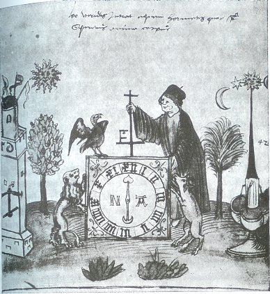
Pseudo Thomas d'Aquin, De alchimia, Codex Vossianus 29, fol. 74 - Leiden, Rijksuniversiteit Bibliotheek, XVIe
Il s'agit d'une variation sur le thème du Tétramorphe [cf. AC, I - Tarot alchimique - Bourges, Lallemant] ; Jung voit [cf. Psychologie et Alchimie, p. 267] dans l'aigle [Van Lennep voit un phénix dans cet oiseau perché, mais alors tout le symbolisme de la scène du Tétramorphe est perdu, cf. Alchimie, p. 99], le lion et un troisième animal où il faudrait distinguer les traits d'un taureau, les emblèmes des évangélistes. On remarque d'autres symboles : un palmier et un dattier ; à droite la fontaine qui distribue l'aqua permanens ; à gauche l'athanor. Le personnage - assimilable à l'ange, i.e. au spiritus sanctus - manipule une croix. Le palmier est assimilable à l'Arbore vitae et ce n'est point hasard s'il est surplombé par la
prise
en son
dernier quartier, annonçant donc l'AC. Ce n'est donc point la
mercurielle qu'il faut voir dans l'hiéroglyphe que, bien
plutôt, le sel de de Lunaire sur lequel tant d'impétrants
sont venus buter. Et ce qu'il faut voir dans cette horloge,
alliée à la croix et à la lune en cette
disposition, n'est-ce pas la Terre naissante ou l'horo aura ? On
serait
tenté de le croire. L'attention est également
attirée par un symbole curieux, une sorte de F ou de E,
disposé à la base de la double croix : s'agit-il de chaux
vive, de cendre ? Quoi qu'il en soit, l'horloge surmontée de la
croix reproduit le motif bien connu de la ,
outre que ses aiguilles sont disposées à l'opposé
l'une de l'autre : une lune en terre et un coeur, l'anima, en
chef. Ce
signe dual rappelle le frontispice du Tractatus
Aureus
attribué à Mynsicht, mais revendiqué aussi par
Grasseus [la Cassette
du Petit
Paysan] qui, au dire de Jung, avait lu
l'AC :« Comme Jung l'a déjà souligné (Psychologie et Alchimie, p. 437 , note 59), Grasseus dut avoir connaissance du texte de l'Aurore. » [M.-L. von Franz, Aurora consurgens, p. 179, note 80]
Voici la citation exacte de Jung :
« Johannes Grasseus cite une opinion selon laquelle la prima materia est le plomb (des philosophes), que l'on nomme aussi plomb de l'air (ce qui fait allusion à l'opposé intérieur). A l'intérieur de ce plomb se trouve la colombe blanche rayonnante ..., nommé "sel des métaux" ... » [la materia prima]
et Jung ajoute en note que
« Johannes Grasseus [Arca arcani, i.e. la Cassette du Petit paysan] mentionne Degenhardus comme auteur de cette idée et que c'est une allusion évidente à la sapientia (sagesse), comme dans l'Aurora consurgens. »
C'est dans Aïon [trad. Albin Michel, 1983] qu'il faut aller chercher, p. 154 - le poisson dans l'alchimie - une autre allusion à Grasseus pour apprendre que Degenhardus est un moine augustinien, Degenhard [Arca arcani, Theat. chem., VI, p. 314. Ce nom n'apparaît pas dans la traduction du texte donné dans la Bibliothèque des Philosophes Chymiques de Richebourg, peut-être abrégé...] et que ce plomb a tout à voir avec la pierre de dragon, nommée encore pierre cinédienne. Quoi qu'il en soit, cela ne signifie nullement que Grasseus ait eu une connaissance directe de l'AC. Pour en revenir à l'aquarelle du Codex Vossianus f. 74, il est aisé de voir que les éléments sont imbriqués, en sorte de faire voir cette figure de la
, pris comme élément «
simple
» cette fois-ci, soit qui
entoure le ou nigredo, quadratum
et orbis
étant eux-mêmes entourés du
que forment l'aigle, le taureau et le lion. Si nous revenons à
l'idée de notre monade, nous voyons que le cadran de l'horloge -
surmonté de la croix - représente la marche de ; Quant à , il est
bien
sûr associé à l'aigle dont le regard seul supporte
le
; remarquons qu'il est non moins lié au lion, le combat des deux
déclinant celui du fixe et du volatil, variation
éidétique de la formule Solve
et Coagula. Et c'est
là que nous rejoignons le transfert,
par le biais de .
Si l'on reprend le cours de l'oeuvre - au sens propre du terme -
on se
rend compte qu'il y a changement de forme de la matière au sens
de projection, dans la mesure où le spiritus
corruptus [corpus
informis] est
métamorphosé en anima par le biais de l'animus qui,
précisons-le, n'est point le
mercurius
au sens où celui-ci détruit avant qu'un second principe,
qui lui est pourtant lié, ne prenne la relève, ne le
remplace, en sorte que ce principe de destruction se transforme de
[par] lui-même en
principe
de génération .
Voilà qui implique un changement du composé [but
de l'oeuvre : le lapis]
tout autant qu'un changement du composant [spiritum
resolvere, cf.
Fulcanelli, Myst.
Cath.,
l'énigme de la crédence sur RERER et RER dans les
sections symboles et Bourges
Lallemant].
C'est cette modification du composant ou vase de nature - le vitri
oleum - qui détermine la projection et qui est relié
à l'idéogramme de . La
figure de Thémis qui est derrière Cronos - Voss.
f. 73
- montre que la pesée des corruptions spirituelles est le noeud
du problème dans cette interaction où la matière,
à en croire Fulcanelli, se présente à l'Artiste
alternativement sous l'espèce de la fleur ou de l'étoile.
Djabir écrit à cette occasion :« ... tout l'art consiste, selon les Philosophes, dans les poids et les proportions des matières. Quand il n'y a qu'une substance, il n'y a point de regard au poids ; mais le poids est au regard du soufre qui est au mercure... Et ainsi le poids en est la composition première élémentale du mercure, et rien d'autre. » [Van Lennep, Alchimie, p. 98]
Ainsi, l'usage de la balance était très anciennement connu... C'est la raison pour laquelle nous évoquions supra cette méconnaissance de certains critiques ou historiens des phénomènes chimiques élémentaires comme ceux résultant de l'oxydo-réduction. Il nous semble que le jugement de Jung a pu être faussé par un manque de discernement dans sa description de la gravure du Ros. Phil. où il est mentionné l'Ascension de l'Âme [Psychologie du Transfert, in la Réalité de l'Âme, op. cit.] ; dans l'édition de la Bibliotheca Complutense, une main française a ajouté : « Icy se reposent les quatre éléments - et l'âme sort du corps subitement. ». Le problème qui se pose est alors le suivant : comment l'âme [anima] pourrait-elle sortir d'un corps qui n'a encore jamais vécu ? Car rien ne dit, d'abord, que les gravures du Ros. Phil. aient été disposées dans l'ordre chronologique - de la durée de l'oeuvre. Quand bien même ce serait le cas, il n'en resterait pas moins, ensuite, à résoudre cet autre problème : comment des corps « simples » sous le rapport hermétique pourraient-ils, par dissolution et conjonction, produire d'entrée de jeu une anima
susceptible par suite, de quelconque modification alors que le but
même de l'oeuvre est d'incorporer au sens propre du terme cette
âme même ? C'est là, nous semble-t-il où,
malgré toute sa connaissance et son érudition
exceptionnelles, Jung n'a pas vu qu'il était impossible de
discerner les traits d'un cadavre dans les formes corporelles
dissoutes
de nos Soufres élémentaires [,
ou même
mieux : ]. Remarquez
l'ambiguité
de la Lunaire [dans
l'une des matières premières de l'oeuvre, l'un de
composés principaux du Mercurius et le Corps du lapis sont
joints : les alchimistes l'appellent leur dragon babylonien, cf.
Fontenay]. Ceci dit, voyons
ce
qu'écrit Jung :« Le cadavre, en tant que vestige de ce qui a été, représente l'homme tel qu'il a existé jusque-là et qui est destiné au trépas. Les "tourments" (tormenta) du processus alchimique se situent à ce stade, qui est celui de la "mort réitérée" (iterum mori) ... » [idem]
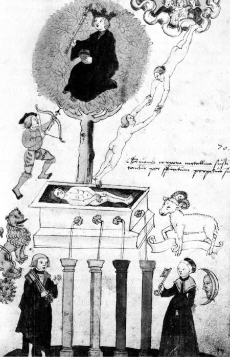
Pseudo Thomas d'Aquin, De alchimia, Codex Vossianus 29, fol. 99 - Leiden, Rijksuniversiteit Bibliotheek, XVIe
Nous souhaiterions examiner à présent l'aquarelle Voss. f. 99 qui va nous permettre d'établir la liaison entre les idées que nous venons de dégager. Nous tenons ici un grand moment d'Art sacré : le couple alchimique dans une pose qui n'est pas sans rappeler certaines planches du Mutus Liber [il faut remarquer d'ailleurs que ces aquarelles du De Alchimia ne sont souvent accompagnées d'aucun texte comme le remarque J. Van Lennep, in Alchimie, p. 99 ; certaines des illustrations anticipent celles du Mutus Liber et notamment la planche IX]; l'encadrement par les luminaires, la lune étant représentée en son premier quartier
ce qui annonce en principe la nature mercurielle de la forme qui y
est
inscrite. Suivent au centre quatre colonnes où l'on
reconnaît les éléments : ces colonnes se
remplissent d'un liquide qui est issu du tombeau situé
au-dessus. On observe trois animaux qui symbolisent le triangle de
feu
du zodiaque alchimique [Bélier = ,
exaltation
du dont parle Newton au sujet de l'antimoine, cf. symboles ; Lion =
et enfin
Sagittaire = ] ; ce
triangle de annonce le
traitement du ou soufre
rouge sublimé. Le tombeau est la représentation du vase
de nature où les natures minérale et métallique
subissent les assauts du et
cette scène rappelle évidemment celles du Ros. Phil.
dont c'est le thème principal. Mais le principal ne
réside pas là : il faut aller le chercher dans la partie
supérieure de l'aquarelle, divisée en deux tableaux. Le
tableau de gauche offre un arbre philosophique, tout à fait
semblable à celui que nous avons vu dans l'AC,
I [cf. Samuel Norton,
Alchymiae
complementum
et perfectio, p.
354 in Mercurius
Redivivus,
Francoforti, 1630]. Il s'agit de l'Arbori
vitae,
émanation éthérée des matières de
l'oeuvre qui se résolvent en forme d'airain, avant de devenir le
Rebis ou chose double. Aussi les alchimistes ont-ils
réservé un arbre pour Adam qui sort de l'ombilic [omphalos]
ou du phallus [ pour
anima]
; et un arbre pour Ève qui sort du crâne [
pour
animus], [cf.
Jaroš
Griemiller z Tøebska, Rosarium
Philosophorum,
f. 184r, Prague, 1578, in AC,
I].
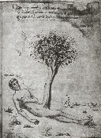 Adam percé
par la flèche de Mercurius
|
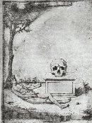 le crâne,
symbole de la mortification d'Ève
|
Miscellenea
d'alchimia
(manuscrit du XIVe siècle) - cités
in Psychologie
et
Alchimie, p. 331 et 345 [Florence, Biblioteca
Medicea-Laurenziana. MS. Ashburnham 1166]
Dans la Nature de l'inconscient, Jung réussit à rendre palpable la réalité du tableau que nous ne faisons ici que brosser :
« Mais qu'est-ce que le paradis ? Manifestement le jardin d'Eden avec son arbre à double face, l'arbre de vie et de la connaissance, et ses quatre fleuves ... » [in les Archétypes de l'inconscient collectif, les Racines de la conscience, op. cit.]
Nous trouvons ces fleuves dans les quatre filets d'aqua permanens qui forment l'entrelacs des Éléments [principes principiés de l'étoile de Salomon
qui
contient le nombre 4].
Quant à l'arbre de vie, nous y voyons la bulle germinative - cf.
AC, I - où trône le basileuV muni de son
sceptre
[une autre aquarelle du De
Alchimia montre ce roi sortant de son tombeau, comme dans le
Ros.
Phil., in Van Lennep, Alchimie, p. 105]. C'est lui qui
assure
la
projection du dans le corps du
lapis à l'horo aura
quand les pluies d'or tombent à Rhodes [on
pourrait multiplier les citations
d'allégories de projection qui renvoient de façon
singulière et toujours aussi présente dans la
psyché : la mythologie a résisté à
l'emprise des psychographes si l'on nous permet ce néologisme;
c'est peut-être et en partie parce que Jung a cultivé un
humanisme hors pair sa vie durant où le religieux prenait place
au travers d'une gnose païenne : voilà l'un des grands
paradoxes de l'alchimie et sans doute la principale cause de sa
ruine
à la fin du XVIIIe siècle.] La source
de cette projection - in essencia - provient des profondeurs du
sépulcre où pourrissent les matières simples de
l'oeuvre : nous y voyons les racines chthoniennes où Ploutos
exerce sa charge. Le en
constitue le substratum : le sagittaire, le plus rapproché de la
frondaison de l'Arbore
vitae,
prêt à décocher sa
flèche, en fait foi. On trouve un passage, dans les processus
symboliques, où Jung donne, là encore, une image
éidétique qui se rapproche fort de ce que nous voulons
dire de ce sagittaire :« Dans les contes, le père du héros est modestement le bûcheron traditionnel. D'après le Rigvada, le monde a été taillé dans un arbre par le créateur. Si le beau père de Hiawatha est un fabricant de flèches, cela veut dire sans doute que l'attribut mythologique caractérisant d'ordinaire le père du héros, est ici transféré au beau-père. Ce qui correspond entièrement au fait psychologique selon lequel l'anima est toujours, par rapport au vieux sage, dans la situation d'une fille. » [les processus symboliques, in Métamorphoses de l'âme et ses symboles, Georg, Genève, 1953]
Hiawatha est une compilation poétique de mythes indiens et de l'avis même de Jung, cette épopée renferme des trésors en matière de motifs psychologiques [patterns of behaviour]. Eh bien ! C'est d'une projection qu'il s'agit là et l'on peut, sans grande difficulté, l'adapter à notre sujet : le vieux sage est le mercurius senex ou dragon mercuriel, que l'on voit à la figure VI de l'AC, I. La fille n'est autre que l'image de la Vierge qui est l'aliment même du Rebis ou laiton. Le monde est le vase de nature - vitri oleum - imagé dans la bulle germinative où
tient sa
résidence. La flèche renvoie bien sûr à la
projection de l'or alchimique [nous
avons
dit ailleurs que les récits des pseudo transmutations
cachaient en fait des points de technique touchant à l'Art, cf.
chimie et alchimie]
résultant de la transfiguration [condensation]
du ou, pour mieux dire, de la transsubstantation de
sa
forme matérielle sous l'influence de l'archée
céleste [Hylé]
: en somme, le passage de l'amorphe au cristal, cf. Mercure
philosophique. Ce processus de transformation a
donné lieu à de multiples interprétations et Jung,
dans les Racines
de
la conscience, a consacré le Livre
VI ou Arbre
philosophique
à cette question :« Dans les textes alchimiques du Moyen Âge, l'arbre apparaît fréquemment et représente en général la croissance et la transformation de la substance mystérieuse en "or philosophique" ... » [chapitre II, l'arbre dans le traité de Jodocus Greverus]
L'arbre représente l'un des acteurs symboliques majeurs de l'Art sacré et la figure XXIV témoigne de son importance dans la mesure où l'on y voit une couronne ; de même avons-nous mis l'accent, dans l'AC, I, sur l'arbre du Mercurius Redivivius de Norton. Dans cette transformation,
et occupent une place
éminente
en «
pilotant » pour ainsi dire le : l'un
assure la sublimation du Soufre et sa
transformation en anima tandis que
l'autre est responsable de la sublimation de l'animus qui permet l'incarnation
de l'âme ou
réincrudation [Jung parle
d'individuation]. Cet ouvrage de maçonnerie
hermétique est dominé par l'entrelacement de Jupiter et
Saturne [partie basse de
l'idéogramme de l'animus] formant arc doubleau dont la
clef de voûte est déterminé par la †
selon :C'est le 2ème
élément de notre monade. La croix
représente
Héphaistos ou eau ignée dont l'hexagramme de Salomon est
peut-être le symbole le plus connu ; dans le cas présent,
toutefois, il doit être remplacé par un autre
idéogramme dont
l'importance peut être saisie dans l'Aureum
seculum redivivum
de Mynsicht. Nous avons fait voir dans cette section que seul
ce
symbole pouvait faire comprendre l'aspect dynamique et
itératif
de cette phase de l'oeuvre où nigredo et
albedo se disputent :
c'est là que se situe
la lutte du fixe et du volatil signalée dans tous les textes ;
aussi Pernety est-il passé bien près de la solution quand
il a supputé que le régime de Jupiter devait être gris.
C'est
évidemment là que doit être cherchée cette
transformation où transfert et projection sont
littéralement interpolés dans cette genèse du Moi [incarnation
de l'anima, i.e.
sublimation de l'animus ]
à partir du Soi [unus
mundus, mercurius senex ].
Remarquons que dans cette opération, l'arc
laisse place
progressivement à la droite __.
C'est dans la partie droite et supérieure de l'aquarelle Voss
fol. 99 que nous allons trouver le processus
du transfert. ParacwrhsiV
: «
l'action de se retirer »
: il n'y pas de meilleure définition quant au devenir ultime
du
mercurius senex . Quant à la
projection, nous l'avons déjà vu, c'est en beloV
: « toute
arme
de trait » qu'elle trouve sa meilleure
définition, bien sûr liée à . La cible est sans
nul doute le
: skopoV
ou
espion, cf. humide
radical
sur le
rôle qu'il joue dans la dénonciation de l'hymen entre
et .
On voit la relation évidente, via la flèche, entre
Arès et le Soleil, Zeus jouant le rôle de dieu protecteur
et souverain de l'Olympe. Par ailleurs, le lieu d'où l'on
mesure
l'étendue du Soi - l'inconscient - ne peut être que le
sommet d'une montagne, là précisément où
survient dans le ciel couleur d'azur - ion
- la conjonction des
principes [cf.
Lambsprinck, duodecima figura, De Lapide
Philosophorum],
conjonction que détermine la médiation du spiritus
sanctus,
sur le corps du filius. C'est dans ces conditions que se crée
l'hermaphrodite - cf. figure
I -
par mixtion et sublimation. L'hermaphrodite ou chose double [Airain
dans un premier temps, Rebis par la suite] naît de
la
jonction de deux principes dont l'un est essentiellement
infusible, non
dissoluble ou « pur » si l'on préfère et dont
l'autre est le spiritus
corruptus que nous évoquions tout à
l'heure. C'est cette liaison qui débute par un simple
attachement que nous observons dans la partie droite du Voss
fol. 99. Cette scène rejoint donc,
pour partie, celle du Ros.
Phil.
que Jung, dans sa Psychologie
du Transfert,
intitule la montée de l'âme [cf.
là-dessus l'examen des
figures 8, 10, 15 et 17 du Ros.
Phil.
supra.].
Elle en forme
comme une synthèse dans la mesure où l'on y voit la
montée du spiritus
corruptus ou corpus
informis aidé en cela par l'animus. Mais
nous ne
saurions y voir trace, pour l'heure, de l'anima [qui
correspond à la projection,
en dépendance de ]. Cette
image très importante - le f. 99 du Codex Vossianus
- nous présente donc d'un côté l'anima [nouV],
dans la
bulle germinative où trône Zeus, et à droite
l'animus [pneuma]
où s'agite
Cronos. Une telle vision gnostique permet de
donner un sens presque palpable au fait que les alchimistes
considéraient leur lapis comme une sorte d'être vivant - Paracelse
[qui d'ailleurs n'a
jamais
été alchimiste...] est allé jusqu'à
employer le terme d'homunculus - pour désigner l'androgyne.
Jung
a pu noter, dans les Visions
de
Zosime,
qu'on trouvait un vocabulaire commun au syncrétisme
hellénistique et au langage métaphorique de l'Eglise, en
donnant cet exemple qui nous permettra de passer à une autre
aquarelle du Codex
Vossianus
:
« Unicornis est Deus, nobis petra Christus, nobis lapis angularis Jesus, nobis hominum homo Christus. » [Corp. Script. Eccl. lat., t. XVIII, p. 24 cité in chapitre V, le symbolisme de l'eau, Les Racines de la Conscience, p. 222, op. cit.]
dont
l'importance peut être saisie dans l'Aureum
seculum redivivum
de Mynsicht. Nous avons fait voir dans cette section que seul
ce
symbole pouvait faire comprendre l'aspect dynamique et
itératif
de cette phase de l'oeuvre où nigredo et
albedo se disputent :
c'est là que se situe
la lutte du fixe et du volatil signalée dans tous les textes ;
aussi Pernety est-il passé bien près de la solution quand
il a supputé que le régime de Jupiter devait être gris.
C'est
évidemment là que doit être cherchée cette
transformation où transfert et projection sont
littéralement interpolés dans cette genèse du Moi [incarnation
de l'anima, i.e.
sublimation de l'animus ]
à partir du Soi [unus
mundus, mercurius senex ].
Remarquons que dans cette opération, l'arc
laisse place
progressivement à la droite __.
C'est dans la partie droite et supérieure de l'aquarelle Voss
fol. 99 que nous allons trouver le processus
du transfert. ParacwrhsiV
: «
l'action de se retirer »
: il n'y pas de meilleure définition quant au devenir ultime
du
mercurius senex . Quant à la
projection, nous l'avons déjà vu, c'est en beloV
: « toute
arme
de trait » qu'elle trouve sa meilleure
définition, bien sûr liée à . La cible est sans
nul doute le
: skopoV
ou
espion, cf. humide
radical
sur le
rôle qu'il joue dans la dénonciation de l'hymen entre
et .
On voit la relation évidente, via la flèche, entre
Arès et le Soleil, Zeus jouant le rôle de dieu protecteur
et souverain de l'Olympe. Par ailleurs, le lieu d'où l'on
mesure
l'étendue du Soi - l'inconscient - ne peut être que le
sommet d'une montagne, là précisément où
survient dans le ciel couleur d'azur - ion
- la conjonction des
principes [cf.
Lambsprinck, duodecima figura, De Lapide
Philosophorum],
conjonction que détermine la médiation du spiritus
sanctus,
sur le corps du filius. C'est dans ces conditions que se crée
l'hermaphrodite - cf. figure
I -
par mixtion et sublimation. L'hermaphrodite ou chose double [Airain
dans un premier temps, Rebis par la suite] naît de
la
jonction de deux principes dont l'un est essentiellement
infusible, non
dissoluble ou « pur » si l'on préfère et dont
l'autre est le spiritus
corruptus que nous évoquions tout à
l'heure. C'est cette liaison qui débute par un simple
attachement que nous observons dans la partie droite du Voss
fol. 99. Cette scène rejoint donc,
pour partie, celle du Ros.
Phil.
que Jung, dans sa Psychologie
du Transfert,
intitule la montée de l'âme [cf.
là-dessus l'examen des
figures 8, 10, 15 et 17 du Ros.
Phil.
supra.].
Elle en forme
comme une synthèse dans la mesure où l'on y voit la
montée du spiritus
corruptus ou corpus
informis aidé en cela par l'animus. Mais
nous ne
saurions y voir trace, pour l'heure, de l'anima [qui
correspond à la projection,
en dépendance de ]. Cette
image très importante - le f. 99 du Codex Vossianus
- nous présente donc d'un côté l'anima [nouV],
dans la
bulle germinative où trône Zeus, et à droite
l'animus [pneuma]
où s'agite
Cronos. Une telle vision gnostique permet de
donner un sens presque palpable au fait que les alchimistes
considéraient leur lapis comme une sorte d'être vivant - Paracelse
[qui d'ailleurs n'a
jamais
été alchimiste...] est allé jusqu'à
employer le terme d'homunculus - pour désigner l'androgyne.
Jung
a pu noter, dans les Visions
de
Zosime,
qu'on trouvait un vocabulaire commun au syncrétisme
hellénistique et au langage métaphorique de l'Eglise, en
donnant cet exemple qui nous permettra de passer à une autre
aquarelle du Codex
Vossianus
:« Unicornis est Deus, nobis petra Christus, nobis lapis angularis Jesus, nobis hominum homo Christus. » [Corp. Script. Eccl. lat., t. XVIII, p. 24 cité in chapitre V, le symbolisme de l'eau, Les Racines de la Conscience, p. 222, op. cit.]
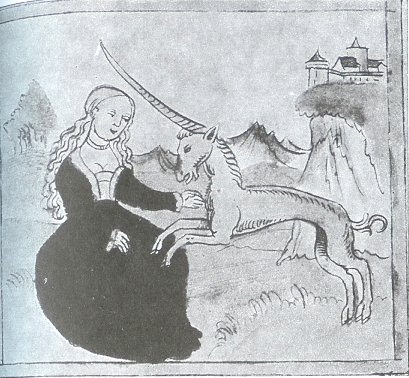
Le symbolisme de la licorne a été étudié dans la section sur Fontenay. Il y a lieu d'y revenir puisque nous retrouvons le monoceros dans le Codex vossianus de Leide. Jung a examiné de manière approfondie cet arcane :
« La spéculation religieuse n'ignore nullement le double aspect du Père. Comme en témoigne, par exemple, l'allégorie du Monoceros, qui représente l'irascibilité de Dieu. A l'instar de cet animal irritable, il aurait semé le désordre dans le monde et ne se serait changé en amour que dans le sein de la Vierge immaculée. » [Essais sur la symbolique de l'esprit, le dogme de la Trinité, op. cit., p. 214]
Voyez ce que nous avons relevé sur Éros dans le § sur le cercle croisé des quatre Éléments ainsi que sur le thème de la Colère [cf. encore AC, I]. Nous voyons volontiers dans le fol. 87 l'image des principes sublimés :
et
avant que les pluies d'or ne s'abattent sur Rhodes, c'est-à-dire
que Zeus ne s'introduise, dans la tour de Danaé, sous la forme
aurifique [cette pluie d'or
peut
prendre les atours d'une rosée céleste : l'une des
illustrations du De Alchimia, non retenue par Jung, montre une
vierge,
dans une tour, où la rosée tombe à ses pieds. Van
Lennep signale que de telles rosées miraculeuses sont parfois
associées au pain du ciel, la manne céleste].
Pureté et sublimation, telles sont les idées
phares qui se dégagent de la contemplation de la dame à
la licorne [cf. Bertrand
d'Astorg, Paris, 1963].
La licorne, pour l'alchimiste, est le symbole du Soufre dissous
dans la
matière visqueuse du Mercure, ce qui fait comprendre la raison
pour laquelle on lui a attribué alternativement l'un des deux
épithètes. Aussi bien peut-on, en reprenant le , comprendre pourquoi le
monoceros représente la
Colère de Dieu, puisqu'il s'agit du en son
premier état ou Fou [Mat
du tarot] de l'oeuvre.
Amour et Chaos [désordre],
telles
sont deux des trois divinités primordiales et l'on doit
rechercher la 3ème dans la dame qui symbolise le Sel
philosophal exprimé chez les alchimistes par la lettre G
[G],
initiale
de Gaïa ou terra hermetica . L'ensemble
Licorne - Vierge représente le Mercure
philosophique ou aqua
permanens
: la licorne ne s'apaise que dans le giron de la Vierge. Nous
sommes
donc très près du concept d'androgyne hermétique :
en Chine, le nom de la licorne, Ki
lin, signifie YIN
- YANG ; faut-il en dire
plus ? [cf. AC,
I sur le Commentaire
du
mystère de la Fleur d'or]
On comprend pourquoi la Vierge est considérée comme le
Paraclet de la licorne, puisqu'elle annonce, à la manière
d'un oracle, le Mysterium
conjunctionis.
Rappelons que le thème de la licorne est récurrent dans
l'iconographie alchimique : on en voit un superbe exemple dans la
Tertia figura du De
Lapide Philosophico
de Lambsprinck [in Barnaud,
Triga
chemica]
avec cette légende : In Corpore
est Anima
& Spiritus.
Dans cette figure, le cerf apparaît comme le mercure fuyant, la
licorne étant son complémentaire en tant qu'il s'agit du
mercure « polarisé », orienté après
que le Lait de Vierge d'Artephius
-
cf. figure VIII de l'AC - ait
imprégné le spiritus
corruptus - cf. figure
8
du Ros.
Phil. et supra.
Jung ajoute en note :« la tradition médiévale associe la licorne au lion ... Andreas Baccius dit : " C'est pour cette raison qu'on a nommé cet animal lycornu en France et en Italie. " Lycornu dérive manifestement ici de " lion " (ou Lyon). » [Psychologie et Alchimie, op. cit., p. 550]
Dans ses Deux Logis alchimiques [Pauvert, 1979], E. Canseliet fait dériver par cabale la licorne [la Licorne domptée, pp. 309-316] des vocables Lukh [aube] et orniV [coq, par rappel à oiseau], par quoi il nous renvoie à l'Aurora consurgens en suggérant l'Auro hora ou proth wra; nous avons eu l'occasion de signaler le rapprochement à faire entre les vocables kerwV et khroV, rendant possible l'allusion à Khr, déesse de la Mort, c'est-à-dire pour l'alchimiste, du Chaos primordial ou dissolution : nous voilà de retour à la Trinité primordiale avec ErwV [Amour], XaoV [ténèbre des Enfers, Tartare] et PontoV [personnification de la Mer].
« Mais le lion vert était couché dans son giron et du sang coulait de son côté. » [Ripley,Cantilena Riplaei, idem, p. 551 sans réf.]
Voilà qui pourrait accréditer le rapprochement entre la licorne et une forme évoluée du mercure, via le lion rouge ; écrire que le sang s'écoule du lion alors que celui-ci est placé dans le giron de la Vierge n'est pas autre chose que l'allégorie de l'accrétion du sulphur
au corps sublimé du lapis sur
le point de naître. Par ailleurs, voilà qui poursuit le parallèle lapis - Christus [formant le chap. V de Psychologie
et Alchimie,
pp. 441-543].
L'apaisement de la Colère de Dieu peut être
rattachée, par l'idée alchimique du domptage du lion et
du dragon, à la figure IV de l'AC
[AC, I
où l'on voit bien que le dragon n'est pas mis à mort mais
garrotté]. La colombe et la licorne jouent en fait le
même rôle, comme Philalèthe donne à
l'entendre dans l'Introïtus,
VII,
cf. supra.
Ce sont des agents de fécondation, mais alors qu'à la
colombe des traits spirutuels sont apportés par allusion
à ,
à la licorne, ce sont des traits
chthoniens que nous relevons.
Quoi qu'il en soit, le but est le même :« Dans la langue imagée du christianisme, outre la colombe, nous avons aussi la licorne comme symbole du logos ou esprit générateur. » [VII. Le Sacrifice, in Métamorphoses de l'âme et ses symboles, Georg, 1953]
Par esprit générateur, il faut entendre de notre point de vue un agent de minéralisation [cf. Mercure de nature et mercure philosophique], ce qui correspond aux qualités d'auto fécondation et de croissance qu'on reconnaît d'habitude au
.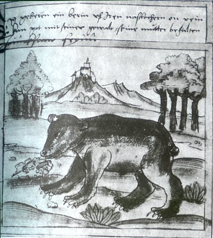
Pseudo Thomas d'Aquin, De
alchimia, Codex Vossianus 29, fol. 82
- Leiden,
Rijksuniversiteit Bibliotheek, XVIe
Selon Jung, l'ours, comme le lion et le dragon, représente l'aspect dangereux de la prima materia. L'ours, comme la licorne, symbolise la Colère mais aussi l'inconscience aveugle, sourde et bornée ; la Force également. Il correspond au déchaînement du premier Mercure, c'est-à-dire du dragon au plan dynamogène, cf. Fontenay. Par cabale, on peut rapprocher l'ours du Septentrion [arktoV] dont le Bouvier assure la garde. Voyez le Char triomphal de l'antimoine, attribué à Basile Valentin, où nous avons donné là-dessus tous détails nécessaires [sur la Grande Ourse et son symbolisme, cf. 1, 2, 3, 4, 5, 6, 7, 8]. Selon Jung :
« En alchimie, l'ours correspond à la nigredo (noir) de la prima materia, de laquelle provient le chatoiement de la cauda pavonis (queue de paon). » [symbolique du mandala, Psychologie et alchimie, p. 246]
D'accord avec le maître de Küsnacht sur le début, nous ne pouvons le suivre quand il parle de la prima materia, car il s'agit à ce stade de l'oeuvre, de la materia prima, i.e. de la première matière, autrement dit de la pierre des philosophes. Et, effectivement, des irisations surviennent en fin de nigredo, rapprochées du régime de
,
par lesquelles se signalent les couleurs de la queue de paon. Les
mythographes indiquent que l'ours est classiquement opposé au
sanglier ; ce point mérite d'être
repris car on voit dans
l'un des emblèmes les plus importants de l'Atalanta
fugiens
- emblème XLI - un sanglier
culbutant Adonis [l'allégorie
ayant
comme but de montrer la transformation de l'albedo en robigo par
le moyen de la dissolution].
Atalanta vient au secours d'Adonis et , en se blessant sur des
rosiers,
transforme en sang rouge le sang blanc qui coule à flots, de
l'aine de son amant. Notons, à ce sujet, que l'ours peut
revêtir un aspect féminin comme c'est le cas dans
l'histoire d'Atalanta, nourrie par une ourse et chassant le
sanglier de
Calydon [mais le sanglier de
l'emblème représente sans doute
car on aperçoit en arrière plan un soldat...] Le
sanglier paraît associé au couple {
- } tandis que l'ours l'est au couple {
- }
: il est donc « antérieur » au sanglier par cabale
et se situe dans une autre sphère de l'oeuvre. C'est, en effet,
le lien d'Amour orienté qui unit Arès à Aphrodite
au lieu que c'est l'Éros brutal - en tant que désir
« pulsionnel et compulsif » qui dicte la conduite du Fou de
l'oeuvre ou mercurius senex. L'ours est encore associé à
la lune - lune cornée
qui le fait cousin de la licorne ou (l)unicornus - et l'on en fait
un
génie des cavernes comme l'atteste son caractère
chthonien marqué. Il correspond donc bien à la nigredo
de l'état primitif de la materia prima. Il est, en ce sens
l'agent qui fait tourner d'abord la roue avant que l'entretien du
secret ne devienne plus, à en croire les
Artistes, qu'un jeu d'enfant ou un travail de fileuse [allégorie
de l'aqua permanens].
La psychanalyse voit dans l'ours le symbole thériomorphe du
sacrificateur ou du
sacrifié
; on le nomme encore en Sibérie le vieillard noir ou tout
simplement, le vieux. On parle encore de lui comme la Grand-Mère
où l'on reconnaît la Terre
qui accompagne la fable de Deucalion et Pyrrha [l'animal
représente,
idéalement, l'inconscient ; de ce fait, il
est chargé d'une représentation maternelle, voire
archétypale où la mère ancestrale, i.e. la
Grand-Mère, est vue en projection]. En alchimie,
certains
sont allés jusqu'à le comparer à Typhon [Python]
: il est cruel, sauvage et brutal. Nous avons dit que le sanglier
était « postérieur » sous l'angle
chronologique à l'ours, dans le cadre de l'oeuvre
hermétique ; il semble que cela soit corroboré par le
fait que la Grande Ourse était jadis représentée
par le sanglier ; le transfert à l'ourse impliquerait la
sublimation, la disparition du sanglier. Cette conjecture se
vérifie-t-elle par la cabale ? Si nous admettons que le couple {
- }
voile le sel nitre qui sert à l'Artiste à préparer
son Mercure, son dissolvant universel, c'est possible, plausible
même puisque le Mercure doit disparaître, in fine afin que
la réincrudation opère, que l'individuation se produise.
Dans cette opération, Arès et Vénus ne sont que
les moyens ; ils sont mus par d'autres déités qui leur
sont supérieures quant à leur puissances temporelle et
spirituelle .
Toutefois, de la conjonction entre Arès et Vénus,
médiée par Héphaistos, dépend la formation
d'un sel centrique que l'on ne trouve qu'au milieu du Septentrion
: ce
sel est incombustible ; il a été appelé salamandre
par les alchimistes [cf. Fontenay] mais les vrais
disciples
d'Hermès le nomment Armonia.
Ils
l'ont encore appelé leur Acier, par opposition à leur
Aimant, épithètes bien spécieuses quand on
réfléchit au fait que l'Acier ne naît qu'au centre
de l'Aimant, à l'instar des méridiens qui se croisent au
pôle. Ce point avait particulièrement
intéressé Newton et, comme nous l'avons dit dans la
section des symboles, il avait cru trouver dans l'antimoine
le secret de l'attraction particulaire. Ce sel
centrique est la véritable Arch
de l'oeuvre, ou si l'on
préfère l'origine de la coagulation ou emboîtement [phxiV]
des Éléments. Mais entre ce centre du labyrinthe de la
toile d'Aracnh
et
la sortie, l'Artiste devra se souvenir de la planche
XIV du Mutus
Liber
où le travail de la fileuse [phnitiV ou
Athéna], c'est-à-dire par cabale tout le travail
de l'aqua permanens,
est décrit. C'est ce travail qui permet l'expulsion du de
l'animus ; cette sortie
correspond
à la figure 17 du Ros.
Phil.
Nous rejoignons ici l'enseignement
du Traité
de la
Fleur d'Or.
Une vaste allégorie y est décrite où la
constellation de la Grande Ourse joue un rôle - au sens propre du
terme - central. L'étoile polaire y est décrite comme
l'UN, identifiable à Ouranos et les sept étoiles sont
assimilables aux planètes, l'ensemble constituant
l'archétype céleste de l'Ars
magna.
Jung n'a pas manqué d'évoquer l'ours dans son
étude de la composante thériomorphe des contes de
fée : il décrit notamment, dans ses Essais
sur la
symbolique de l'esprit, une quête où l'on
retrouve des hiéroglyphes spirituels chers à l'homme de
l'Art :« Le garçon part alors à sa recherche [de la princesse], et c'est là qu'il rencontre le loup évoqué plus haut. De la même façon il rencontre aussi un ours et un lion qui lui remettent aussi quelques-uns de leurs poils. De plus, le lion lui révèle que la princesse se trouve prisonnière non loin de là, dans la maison d'un chasseur. » [Pour une phénoménologie de l'esprit dans les contes, op. cit., p. 114]
Tout cela est, pour ainsi dire, cousu de fil blanc. Le petit wanderer - Cadmus - est en quête du joyau couronné ; le loup, puis l'ours et le lion, qui constituent trois aspects de la forme mercurielle, lui remettent des présents qui témoignent d'une progression dans le travail. Les animaux sauvages [loup, ours et lion] se comportent ici comme des créatures secourables - aspect dual du
où l'on retrouve le cerf [servus
fugitivus] et le lycornu
[filius - diabolus]
; ils donnent au garçon des poils de leur fourrure qui lui
permettront de les appeler en cas de besoin dans sa quête de la
princesse. Quant au chasseur, il représente Héphaistos
qui a pris dans ses rets [arkuV] Armonia,
fruit des amours du
couple { - }
et qui n'est autre que la princesse. On retrouve ce chasseur qui
emprisonne les chaux métalliques dans une autre aquarelle du
Codex de Leiden : c'est le serpent Ouroboros et nous allons
bientôt y revenir. Nous souhaiterions insister à
présent sur un point qui va permettre d'effectuer une liaison -
a priori inattendue - entre la symbolique du conte de fée, les
animaux et la Bible. Jung a noté ceci dans son Arbre
philosophique :« Dans la vision de Daniel apparaissent ... quatre animaux, dont le premier qui ressemblait à un lion " fut dressé sur ses pattes comme un homme, et un coeur d'homme lui fut donné ". Le deuxième animal était pareil à un ours, le troisième à une panthère et le quatrième était une bête féroce dotée de cornes et monstrueuse (Dan. VII, 4 et sq.) ... » [les Racines de la conscience, op. cit., p. 437]
C'est la vision du Tétramorphe [tarot alchimique, hôtel Lallemant] que nous retrouvons ici ; en comparant cet extrait avec le conte de fée précédent, nous pouvons formuler les associations suivantes : le garçon - dans lequel nous ne pouvons voir que Cadmus - représente évidemment l'Homme en devenir, c'est-à-dire l'anima consurgens
.
Il est à rapprocher de Matthieu. Le lion est d'habitude
associé à Marc mais ici, compte tenu de la nature des
anaimaux, il nous faut le rattacher à Jean [le
lion et l'aigle sont liés
dans la symbolique hermétique à Zeus]
; nous verrons dans l'ours l'équivalent du taureau à la
force élémentaire et brutale : c'est Luc. Reste le loup,
synonyme habituel de la sauvagerie [aspect
mercuriel du servus fugitivus]
et que l'on peut relier à Marc. Sur la panthère, revoyez
nos blasons alchimiques. Nous
noterons
pour terminer que donner un coeur d'homme [chair,
i.e. corps] au lion,
c'est en faire le Lion rouge des alchimistes, ce qui signifie
garrotter
le dragon comme on le voit sur la figure
IV
de l'AC, I.
Nous
assistons ici à l'introduction du spiritus
corruptus dans
l'animus , chose vue dans la figure
8 du Ros.
Phil.
Un mot encore, sur les taureaux qui, dans la liturgie de Mithra [cf. Jung, Métamorphoses
de
l'âme, op. cit., p. 193] étaient
nommés gardiens de l'axe du monde, en relation avec la
constellation de la Grande Ourse [renvoyant
aux
sept boeufs de labour, ceux qui font tourner l'axe du monde, kuwdako julakeV].
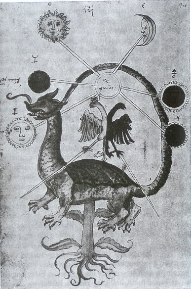
Pseudo Thomas d'Aquin, De alchimia, Codex Vossianus 29, fol. 94a - Leiden, Rijksuniversiteit Bibliotheek, XVIe
Cette image magnifique et terrible a donné lieu à plusieurs versions, dont l'une se trouve dans un MS. du Donum Dei, datant de 1550 [Alchimistiches Manuscript, Ms. L IV 1, Basel (vgl. Bild 90)]. Quant à l'aigle bicéphale, il est récurrent et on l'aperçoit jusque dans l'aquarelle qui ouvre la présente section. C'est le serpent Ourobors, allié au dragon que nous venons d'évoquer ; en même temps, c'est une variation sur le thème de l'arbre philosophique et en particulier sur celui du Mercurius redivivus de Norton, cf. AC, I. On retrouve ces racines, la bulle germinative, formée de la queue du dragon, qu'il dévore, refermant ainsi un cercle où trône l'aigle bicéphale, symbole de Zeus et figure récurrente du f. 99, partie gauche. L'étoile de Salomon
se trouve reconstituée selon qu'on considère la
manière dont sont agencés les six rayons qui unissent les
symboles planétaires à Mercurius
Noster : si l'on
reprend l'hexagramme du frontispice de l'Aurea
Catena Homeri,
les idéogrammes sont pris à l'identique mais
inversés, cf. Aureum
Seculum Redivivum
de Mynsicht. Ce forme la pierre des
philosophes ou materia prima de l'aqua
permanens. C'est la 1ère
couronne de perfection dont parle Jung, toujours à propos de
l'ours, par l'évocation de Hiawatha :« Le grand guerrier Mudjekeexis, père de Hiawatha, a vaincu par ruse le grand Ours, " The terror of nations ", et lui a dérobé la magique " Belt of Wanpoum ", une ceinture de coquillages. Nous trouvons ici le motif du trésor difficilement accessible que le héros enlève au monstre. » [VII. Le Sacrifice, in Métamorphoses de l'Âme et ses symboles, Georg, p. 522, pochothèque]
La ceinture de coquillages tubulaires pourpre et blanc, appelée wampum, était offerte lors des mariages : elle apaisait la douleur du deuil et invitait à faire la paix ou à négocier une alliance militaire. La couleur blanche était celle de la paix ; la noire, celle des événements tristes ; la pourpre, la plus appréciée. Comprenant l'attachement des Indiens à cet objet symbolique, les Européens les fabriquèrent en perles de verre et s'en servirent comme monnaie dans le commerce. Mais ils abusèrent de cette contrefaçon jusqu'à lui faire perdre totalement sa valeur. Comment ne pas voir la valeur hermétique, de haut prix, de ce wampum ? Quand on sait, de surcroît, que les Hurons de la mission de Lorette envoyèrent en cadeau le 3 mars 1678, au Chapitre de Chartres une ceinture de coquillages qui traduisaient en lettres capitales l'inscription VIRGINI PARITUARE VOTUM HURONUM ? Ne peut-on voir là comme une sorte d'hommage à la Virgo paritura des alchimistes ? Les figures représentées et le jeu des couleurs, noir, blanc et violet, se combinaient pour servir de support mnémonique aux messagers intertribaux. La cathédrale de Chartres en possède deux dédiées par les Hurons à la Vierge parturiente. Le noir représente la nigredo
, le blanc scelle la
conjonction des principes et l'anima
consurgens ; enfin, le pourpre
est la couleur atteinte dans le 3ème
degré de perfection qui donne accès au lapis. Pour en
revenir à l'ours, il est adjoint à Artémis et donc
d'essence mercurielle, ce que nous savions déjà. Le
« trésor diificilement accessible » qu'évoque
Jung se situe :« Dans l'ombre de l'inconscient ... par une perle brillante, ou, comme dit Paracelse, par un " mysterium ", ce qui indique quelque chose de fascinant par excellence. » [idem, p. 548]
Cette perle est à l'égal de l'aspect nacré des « yeux de poisson », évoqué dans les textes quand ils envisagent la cuisson du Mercure qui doit avoir cette teinte particulière. Du reste, cette perle est évoquée dans le texte de l'AC dans la Première Parabole et, dans l'alchimie grecque [M.-L. von Franz, Aurora consurgens, p. 249], la perle est synonyme de l'udor qeion ou Eau divine de Zosime : on en trouve trace ensuite chez un alchimiste très important, Senior, alias Mohammed Ben Umail At-Tamini, auteur du De Chemia [Bibliotheca Chemica Curiosa, vol. II, pp. 216-235] ; c'est un symbole de l'albedo ou anima consurgens
. Ce texte, De Chemia,
est immédiatement précédé d'un
traité qu'on a faussement attribué à Basile
Valentin : Aureliam
Occultam
Philosophorum [BCC,
vol. II, pp. 198-235],
connu sous le titre d'Azoth
[ce qui a fait accroire que
ce
traité pouvait être de Senior Zadith, à ce qu'en
dit Fulcanelli dans le Myst.
Cath.]
Si nous citons l'Azoth,
c'est qu'Adolphus y parle de l'ours dans l'avant dernier chapitre
du
traité :« Je regardais au midi ou sont les chauds Lions, & les lieux sujets aux Pôles & au Septentrion, dans lesquels lieux les Ours sont, & chantaient par hymnes & louanges le nom du Seigneur, & connaissaient le mystère de ce livre cacheté de la nature, lequel secret comme auparavant, il avait été ajouté, je mettrais en ce lieu. » [Déclaration et explication d'Adolphe, Aureliam Occultam Phil., in BCC, vol. II, p. 324]
On voit que le symbolisme général complète admirablement ce que nous évoquions supra au sujet du Septentrion. Ajoutons que la réflexion d'Adolphus vaut aussi pour une allusion aux vents de l'oeuvre [essentiellement Notus, Vulturnus, Zéphyre et Borée, cf. Atalanta, I].
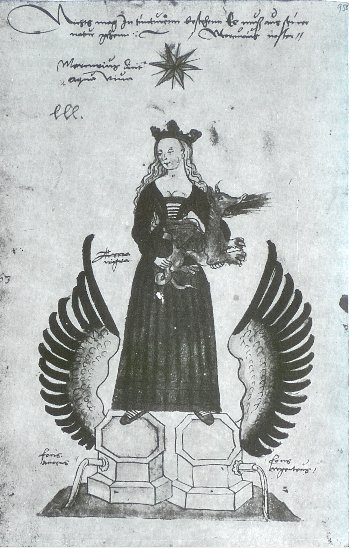
Pseudo Thomas d'Aquin, De alchimia, Codex Vossianus 29, fol. 95a - Leiden, Rijksuniversiteit Bibliotheek, XVIe
Cette autre aquarelle du Codex Vossianus, représentant la Vierge comme maîtresse du mercurius se tenant sur les fontaines d'or
et d'argent , a donné
lieu à nombre de récurrences iconographiques [Alchimistiches
Manuscript, Ms. L IV 1, Basel]. On
dispose là d'une variation
sur le thème de la ligature du dragon, rappelant la figure
IV [cf. AC,
I]. Quant aux deux principes de base, qui
servent à
la préparation du sulphur et du corpus
du lapis, on les voit à l'état sublimé, comme
l'indiquent les ailes largement déployées de l'oiseau phénix.
Il ne s'agit donc
nullement de la Virgo
paritura
envisagée comme mercurius et il est possible que Jung ait
commis
une méprise dans son analyse : nous en sommes à
l'époque du Lait de Vierge,
là où précisément, il faut assurer au lapis
naissant une carnation nécessaire. La Vierge, bien au
contraire,
dispose du Mercure et elle tient en sa main droite la pierre
noire de
Pessinonte : elle se rapproche ainsi de Cybèle et l'on
pourrait
presque voir dans la fons
et la fons
les deux lions de son char. De là à ce qu'on parle de
Mithra [tauroktonoV],
il
n'y a qu'un pas à faire, puisqu'on vouait le
taurobole au culte de Cybèle. Elle tient donc la nigredo
ainsi que son agens,
le mercurius senex : tous les ingrédients
sont réunis pour que s'établisse l'harmonie, que la
concorde règne, bref pour que s'établisse le courant
circulaire de l'aqua
permanens.
Dans l'Azoth
[Aureliam
Occultam
Philosophorum], la même image est
donnée par une vierge dont le lait jaillit des deux seins ;
dans
le Splendor
Solis,
c'est un homme armé [1, 2]
dont les pieds sont disposés
sur deux fontaines ; sa tête est auréolée de sept
étoiles. On trouve encore un autre type de représentation
qui tient de l'arbre philosophique et du tombeau dans une
aquarelle du
Donum Dei. Cybèle [cf. symboles] est en
puissance le
rayon igné dont l'Artiste a besoin pour son ;
elle en est le moyen ou l'artifice secret car elle
est connectée aux divinités primordiales, tel le Mercurius noster
qui est
disposé au centre de l'Ouroboros du f.
94a.
Cybèle est, en effet, fille du
[Ouranos],
déesse
de la [Gaïa]
ce qui lui donne déjà les traits de l'unus
mundus des
alchimistes. Dans le même temps, elle est épouse de [temps - mercure
- transfert], mère de [espace
- soufre
- projection],
de Héra - Junon, et enfin de Neptune
et de Ploutos [Pluton
ne
correspond
pas exactement à Ploutos mais il contracte de toute
façon des rapports avec Héphaistos].
Cybèle constitue en quelque sorte l'énergie primordiale :
elle initie et entretient le mouvement dans la matière
puisqu'elle symbolise l'énergie enclose dans la pierre et
même, dans la terre. On l'a d'ailleurs surnommée la
Grand-mère et il faut la rapprocher de l'ursus
chthonien dont la force brutale est toutefois ici canalisée
par
la médiation des fidèles serviteurs de la déesse :
Atalante et
Hippoménès. Cette Vierge présente ainsi tous les
traits de la déesse phrygienne, à commencer par cett
étoile dont elle est surmontée ; quant à la pierre
noire de Pessinonte, elle contient la terre noire, issue du
limon
céleste, qui permettra de rendre possible, dans les temps
futurs, la croissance des fruits du jardin des Hespérides. Les
mythographes nous disent qu'à l'époque de la
décadence romaine, son mythe sera associé à celui
du berger Attis. Cette légende vaut qu'on s'y attarde
longuement
en raison
des points surprenants d'analogie qu'on y décèle avec
l'Art sacré. On assiste en effet à un entrelacement des
mythes de Cybèle, d'Attis, d'Adonis, du sanglier [figure
complémentaire de l'ours],
et d'Agdistis [autre
épithète pour Cybèle] ; le tout est
immergé dans des cérémonies de castration qui sont
autant de points à mettre en rapport avec ce qu'en disent Jung
et Freud [mais nous ne
parlerons
de leurs propos que sous le rapport de l'Art sacré]cf.
AC, III sur le mythe d'Attis
et de
Cybèle. Nous terminerons cet exposition des aquarelles du Codex Vossianus avec
la
scène admirable de Pâris, endormi :
« Apparaît ensuite un chevalier endormi désigné comme étant Pâris. Il rêve au jugement par lequel, sur ordre d'Hermès, il devait décider qui d'Athéna, Héra ou Aphrodite, était la plus belle. Celle-ci emporta la pomme d'or qui avait provoqué cette aimable joute. Pâris doit être assimilé à l'alchimiste, l'élu d'Hermès, qui produit l'or à partir des trois principes. Il n'est pass ans intérêt de constater que l'illustrateur préféra à la version qui prétendait que Pâris rendit effectivement ce jugement, celle qui affirmait qu'il l'avait rêvé. » [Alchimie, p. 99]
Dans cette histoire, tout est tissé de cabale. La pomme d'or symbolise l'objet de la fixation, c'est-à-dire l'artifice qui précipite la volatilisation du dissolvant, ou si l'on préfère l'agent qui dissipe les nuées. N'oublions pas que c'est grâce à des pommes d'or, qui fixent l'attention d'Atalante, qu'Hippoménès remporte la victoire sur la Fugitive [cf. Atalanta fugiens]. Sur Héra - Junon, on consultera l'Atalanta XLIV où la légende est entièrement développée ; sur la pomme de discorde, voyez les Fables Égyptiennes et Grecques de Dom Pernety [livre 6, chap. 2]. La fable est immense qui débute par un banquet célébrant les noces de Pelée et Thétis : survient la Discorde qui jette sur la table une pomme d'or où figure cette inscription : « pour la plus belle » ; à cette table, les trois déesses {Minerve - Pallas - Athéna} - {Héra - Junon} - {Vénus - Aphrodite}. Les dieux consultés décident d'ajourner leur jugement et font appel à {Pâris - Alexandre}, fils de Priam [roi de Troie, fondée par Vulcain - Héphaistos, Neptune et Apollon]. Pâris adjuge la pomme d'or à ; en échange
la déesse lui procure la belle Hélène, femme de
Ménélas, que Pâris enlève : ce qui fut cause
de la guerre de Troie [cf. 1, 2,
3, 4,
5, 6,
7, 8,
9, 10].
Dans
cette aquarelle, nous voyons trois niveaux possibles de symbolisme
:
a)- le premier peut s'exprimer par le biais des quatre Éléments. Junon, inséparable de Zeus, représente : c'est elle qui
envoie contre Latone le serpent Python [alias
Typhon, né selon les
mythographes de la TERRE et du TARTARE ; Typhon naît en fait de
la poussière, c'est-à-dire de la cendre de terre que
Junon frappe. C'est le prototype du Mercurius
ancestral et le premier Adam. On dit aussi qu'il naît de la boue
et de la fange laissée par le Déluge, du temps de
Deucalion et Pyrrha.] des suites du dépit où elle
s'était trouvée, de ce que Zeus avait conçu {Minerve
- Pallas - Athéna}
sans connaître de femme. Pallas - Athéna symbolise le
sulphur prêt à la réincrudation, autrement dit
ignis : une pluie d'or tombe à Rhodes le jour de sa
naissance ; la chouette, le dragon et le coq lui sont consacrés [cf. figure
I
et figure XVIII de l'AC].
Nous
passerons sur Vénus à laquelle il faut attribuer
; reste . Nous y voyons le rêve même de Pâris
qui, stricto sensu, n'est que le songe de Zeus puisque c'est
lui-même qui dépêche le fils de Priam pour
l'arbitrage de la pomme dorée. Il ne paraît pas discutable
que Pâris possède un caractère où l'on
devine un étrange mélange : des traits chthoniens [où
se devine le serpent]
et d'autres, élevés, faits de tempérance et de
justice. Tel il se révèle et voici pourquoi,
contrairement à ce que tout semblait indiquer, il va choisir non
pas la Sagesse avec Athéna mais la belle Hélène,
que lui propose Vénus. Nous pouvons y voir l'escarboucle ou carbunculus et nous
savons
aussi qu'il faut y voir le simple et commun carbo
[charbon]...
b)- le second où les éléments de la prima materia sont voilés sous le masque des trois divinités. La « matière première » des alchimistes, en effet, n'est pas unique mais composite, à l'instar de la psyché. Dans d'autres sections, nous avons pu montrer qu'Aphrodite est la marque du nitrum, qui sera dans un
temps ultérieur, engagé dans le salniter
de Boehme. Athéna a comme épithète la Sagesse et
les premiers chapitres de l'Aurora
consurgens
[cf. M.-L. von Franz]
montrent que cette Vertu se rapporte à la prima materia. Or, la
Sagesse n'est pas séparable de la Prudence et l'un des
médaillons des Vices et Vertus du
portail de Notre-Dame de Paris, examiné par Fulcanelli dans son Myst. Cath.,
montre
cette Prudence : elle tient l'hiéroglyphe du Mercure
philosophique. Ce Mercure résulte de l'association du «
vinaigre très aigre » de la Turba
et du corps du ; il est
assimilé au venin ou ioV
et les hermétistes l'évoquent encore en
parlant d'Ericthonios [né
de la semence d'Héphaistos qui avait souillé la cuisse
d'Athéna puis était tombé à terre].
Quant à Junon, on sait que le paon lui
était dédié [cf.
figure XV], que
est
son fils [Mars est enfanté
sans Jupiter de la même manière que Minerve est
enfanté sans Junon ; l'un et l'autre ressortissent du principe
Soufre] et qu'enfin, elle fit toujours fort mauvais
ménage avec Jupiter, qui, à la vérité, lui
fournissait sans cesse des sujets de jalousie, par la quantité
de Nymphes avec lesquelles il s’amusait. Jupiter perdit un jour
patience, et irrité des mauvaises façons de Junon, il la
suspendit avec une chaîne d’or, et lui attacha un enclume
de fer
à chaque pied. C'est Junon qui envoya le serpent Python contre
Latone, épisode semblable à celui de la fable d'Hercule
où elle envoie deux serpents qu'il étrangle. Si l'on
tient compte que Jupiter et Junon sont frère et soeur, il semble
que Junon ait hérité de traits chthoniens propres
à [Junon,
à la différence de
,
est dévorée par son père]
: elle préside à la durée des parturitions et aux
unions [voyez encore l'AC,
III sur les rapports entre
Junon et Atargatis]. Comme tel, nous voyons que la
fonction
hermétique de Junon est complexe ; plus qu'un composé
à proprement parler, c'est une fonction qui semble lui
échoir et cette fonction de conjonction joue deux fois dans
l'oeuvre, d'abord dans la phase de dissolution où les couleurs
de la queue de paon [oiseau de
Junon] annoncent la conjonction des principes ; puis
lorsque la
coagulation survient à la phase d'assation, marquée
allégoriquement par la surrection de Délos. On peut y
voir l'équivalent du manteau de Junon [embelli
par Minerve] ou peau de
bouc dont les Luperques confectionnaient des lanières [l’un
des cultes les plus
archaïques de Rome, les cérémonies étaient
appelées Lupercales. Ce nom vient de Lupercales
signifiant «
repaire de louve » et de Luperque : prêtres de la
«véritable communauté sauvage » ( homme-loup
vêtu de pagnes, ancêtre de notre « loup-garou »)].
Ce bouc permet d'établir une transition vers Aphrodite auquel il
était également consacré, à l'instar du
bélier et du lièvre que nous avons évoqués
tout à l'heure. On prête au bouc des qualités
très contrastées dont l'une - au plan alchimique - peut
être relevée : Plina signale que le sang de bouc [assimilable
au sulphur]
possède une extraordinaire influence, notamment celle de tremper
merveilleusement le fer [n'oublions
pas
que est fils de Junon]. Le sang de bouc
remplit
exactement le même rôle que le lait de la chèvre
Amalthée pour Jupiter [cf.
marqueteries de Lotto] :
il
permet de capter et d'éliminer le spiritus corruptus
que l'on recueille lors de la dissolution des matières. En
définitive, c'est dans l'Inde védique que l'on trouve
l'aspect qui concrétise au mieux la fonction du sang de bouc :
il est assimilé à Agni, dieu du feu [l'équivalent
d'Héphaistos].
On retrouve dans le symbolisme hermétique de Junon ce double
aspect, d'abord sacrificiel [dissolution
nécessaire
à la conjonction où prédomine le
côté ] puis
génésique [coagulation
du par consomption progressive du feu par lui-même
où prédomine ]
On ne saurait trop insister sur la dynamique fondamentale des processus de métamorphose que nous venons d'évoquer, sous le couvert de Junon et de sa constellation thériomorphe. C'est assez dire que la fixation du, qui est de l'ordre
de la projection, est un phénomène que l'Artiste ne peut
prévoir en terme pondérable bien défini, qu'il
s'agisse de temps, de quantité ou de qualité du lapis,
attendu que le poids de nature n'est pas du ressort de l'Homme mais
de
Dieu. Il y a là, d'évidence, un noeud gordien :
dénouer un complexe revient à résoudre la question
de l'individuation, qu'on retrouve en alchimie sous la forme de la
réincrudation. Dans les deux cas, l'opération
nécessite un transfert suivi d'une projection. aussi
n'était-ce pas sans de bonnes raisons que les alchimistes
assuraient que le vrai disciple d'Hermès était celui qui,
à la patience, alliait l'humilité.
VIII.
saint
Thomas d'Aquin
et l'alchimie. cf. AC,
III -« Apparaît ensuite un chevalier endormi désigné comme étant Pâris. Il rêve au jugement par lequel, sur ordre d'Hermès, il devait décider qui d'Athéna, Héra ou Aphrodite, était la plus belle. Celle-ci emporta la pomme d'or qui avait provoqué cette aimable joute. Pâris doit être assimilé à l'alchimiste, l'élu d'Hermès, qui produit l'or à partir des trois principes. Il n'est pass ans intérêt de constater que l'illustrateur préféra à la version qui prétendait que Pâris rendit effectivement ce jugement, celle qui affirmait qu'il l'avait rêvé. » [Alchimie, p. 99]
Dans cette histoire, tout est tissé de cabale. La pomme d'or symbolise l'objet de la fixation, c'est-à-dire l'artifice qui précipite la volatilisation du dissolvant, ou si l'on préfère l'agent qui dissipe les nuées. N'oublions pas que c'est grâce à des pommes d'or, qui fixent l'attention d'Atalante, qu'Hippoménès remporte la victoire sur la Fugitive [cf. Atalanta fugiens]. Sur Héra - Junon, on consultera l'Atalanta XLIV où la légende est entièrement développée ; sur la pomme de discorde, voyez les Fables Égyptiennes et Grecques de Dom Pernety [livre 6, chap. 2]. La fable est immense qui débute par un banquet célébrant les noces de Pelée et Thétis : survient la Discorde qui jette sur la table une pomme d'or où figure cette inscription : « pour la plus belle » ; à cette table, les trois déesses {Minerve - Pallas - Athéna} - {Héra - Junon} - {Vénus - Aphrodite}. Les dieux consultés décident d'ajourner leur jugement et font appel à {Pâris - Alexandre}, fils de Priam [roi de Troie, fondée par Vulcain - Héphaistos, Neptune et Apollon]. Pâris adjuge la pomme d'or à
; en échange
la déesse lui procure la belle Hélène, femme de
Ménélas, que Pâris enlève : ce qui fut cause
de la guerre de Troie [cf. 1, 2,
3, 4,
5, 6,
7, 8,
9, 10].
Dans
cette aquarelle, nous voyons trois niveaux possibles de symbolisme
: a)- le premier peut s'exprimer par le biais des quatre Éléments. Junon, inséparable de Zeus, représente
: c'est elle qui
envoie contre Latone le serpent Python [alias
Typhon, né selon les
mythographes de la TERRE et du TARTARE ; Typhon naît en fait de
la poussière, c'est-à-dire de la cendre de terre que
Junon frappe. C'est le prototype du Mercurius
ancestral et le premier Adam. On dit aussi qu'il naît de la boue
et de la fange laissée par le Déluge, du temps de
Deucalion et Pyrrha.] des suites du dépit où elle
s'était trouvée, de ce que Zeus avait conçu {Minerve
- Pallas - Athéna}
sans connaître de femme. Pallas - Athéna symbolise le
sulphur prêt à la réincrudation, autrement dit
ignis : une pluie d'or tombe à Rhodes le jour de sa
naissance ; la chouette, le dragon et le coq lui sont consacrés [cf. figure
I
et figure XVIII de l'AC].
Nous
passerons sur Vénus à laquelle il faut attribuer
; reste . Nous y voyons le rêve même de Pâris
qui, stricto sensu, n'est que le songe de Zeus puisque c'est
lui-même qui dépêche le fils de Priam pour
l'arbitrage de la pomme dorée. Il ne paraît pas discutable
que Pâris possède un caractère où l'on
devine un étrange mélange : des traits chthoniens [où
se devine le serpent]
et d'autres, élevés, faits de tempérance et de
justice. Tel il se révèle et voici pourquoi,
contrairement à ce que tout semblait indiquer, il va choisir non
pas la Sagesse avec Athéna mais la belle Hélène,
que lui propose Vénus. Nous pouvons y voir l'escarboucle ou carbunculus et nous
savons
aussi qu'il faut y voir le simple et commun carbo
[charbon]... b)- le second où les éléments de la prima materia sont voilés sous le masque des trois divinités. La « matière première » des alchimistes, en effet, n'est pas unique mais composite, à l'instar de la psyché. Dans d'autres sections, nous avons pu montrer qu'Aphrodite est la marque du nitrum
, qui sera dans un
temps ultérieur, engagé dans le salniter
de Boehme. Athéna a comme épithète la Sagesse et
les premiers chapitres de l'Aurora
consurgens
[cf. M.-L. von Franz]
montrent que cette Vertu se rapporte à la prima materia. Or, la
Sagesse n'est pas séparable de la Prudence et l'un des
médaillons des Vices et Vertus du
portail de Notre-Dame de Paris, examiné par Fulcanelli dans son Myst. Cath.,
montre
cette Prudence : elle tient l'hiéroglyphe du Mercure
philosophique. Ce Mercure résulte de l'association du «
vinaigre très aigre » de la Turba
et du corps du ; il est
assimilé au venin ou ioV
et les hermétistes l'évoquent encore en
parlant d'Ericthonios [né
de la semence d'Héphaistos qui avait souillé la cuisse
d'Athéna puis était tombé à terre].
Quant à Junon, on sait que le paon lui
était dédié [cf.
figure XV], que
est
son fils [Mars est enfanté
sans Jupiter de la même manière que Minerve est
enfanté sans Junon ; l'un et l'autre ressortissent du principe
Soufre] et qu'enfin, elle fit toujours fort mauvais
ménage avec Jupiter, qui, à la vérité, lui
fournissait sans cesse des sujets de jalousie, par la quantité
de Nymphes avec lesquelles il s’amusait. Jupiter perdit un jour
patience, et irrité des mauvaises façons de Junon, il la
suspendit avec une chaîne d’or, et lui attacha un enclume
de fer
à chaque pied. C'est Junon qui envoya le serpent Python contre
Latone, épisode semblable à celui de la fable d'Hercule
où elle envoie deux serpents qu'il étrangle. Si l'on
tient compte que Jupiter et Junon sont frère et soeur, il semble
que Junon ait hérité de traits chthoniens propres
à [Junon,
à la différence de
,
est dévorée par son père]
: elle préside à la durée des parturitions et aux
unions [voyez encore l'AC,
III sur les rapports entre
Junon et Atargatis]. Comme tel, nous voyons que la
fonction
hermétique de Junon est complexe ; plus qu'un composé
à proprement parler, c'est une fonction qui semble lui
échoir et cette fonction de conjonction joue deux fois dans
l'oeuvre, d'abord dans la phase de dissolution où les couleurs
de la queue de paon [oiseau de
Junon] annoncent la conjonction des principes ; puis
lorsque la
coagulation survient à la phase d'assation, marquée
allégoriquement par la surrection de Délos. On peut y
voir l'équivalent du manteau de Junon [embelli
par Minerve] ou peau de
bouc dont les Luperques confectionnaient des lanières [l’un
des cultes les plus
archaïques de Rome, les cérémonies étaient
appelées Lupercales. Ce nom vient de Lupercales
signifiant «
repaire de louve » et de Luperque : prêtres de la
«véritable communauté sauvage » ( homme-loup
vêtu de pagnes, ancêtre de notre « loup-garou »)].
Ce bouc permet d'établir une transition vers Aphrodite auquel il
était également consacré, à l'instar du
bélier et du lièvre que nous avons évoqués
tout à l'heure. On prête au bouc des qualités
très contrastées dont l'une - au plan alchimique - peut
être relevée : Plina signale que le sang de bouc [assimilable
au sulphur]
possède une extraordinaire influence, notamment celle de tremper
merveilleusement le fer [n'oublions
pas
que est fils de Junon]. Le sang de bouc
remplit
exactement le même rôle que le lait de la chèvre
Amalthée pour Jupiter [cf.
marqueteries de Lotto] :
il
permet de capter et d'éliminer le spiritus corruptus
que l'on recueille lors de la dissolution des matières. En
définitive, c'est dans l'Inde védique que l'on trouve
l'aspect qui concrétise au mieux la fonction du sang de bouc :
il est assimilé à Agni, dieu du feu [l'équivalent
d'Héphaistos].
On retrouve dans le symbolisme hermétique de Junon ce double
aspect, d'abord sacrificiel [dissolution
nécessaire
à la conjonction où prédomine le
côté ] puis
génésique [coagulation
du par consomption progressive du feu par lui-même
où prédomine ] On ne saurait trop insister sur la dynamique fondamentale des processus de métamorphose que nous venons d'évoquer, sous le couvert de Junon et de sa constellation thériomorphe. C'est assez dire que la fixation du
, qui est de l'ordre
de la projection, est un phénomène que l'Artiste ne peut
prévoir en terme pondérable bien défini, qu'il
s'agisse de temps, de quantité ou de qualité du lapis,
attendu que le poids de nature n'est pas du ressort de l'Homme mais
de
Dieu. Il y a là, d'évidence, un noeud gordien :
dénouer un complexe revient à résoudre la question
de l'individuation, qu'on retrouve en alchimie sous la forme de la
réincrudation. Dans les deux cas, l'opération
nécessite un transfert suivi d'une projection. aussi
n'était-ce pas sans de bonnes raisons que les alchimistes
assuraient que le vrai disciple d'Hermès était celui qui,
à la patience, alliait l'humilité.X.
Suite des
aquarelles de
l'Aurora consurgens [MS.
de Zurich, Zentralbibliothek,
MS.
Rhenoviensis 172]
L'imagination active pour pouvoir ! Tel est, en substance, l'enseignement que Jung a délivré dans sa somme sur l'Art sacré. Nous serions tentés de rapprocher cette réflexion de ce que René Char écrivait dans l'un de ses poèmes, où il prônait la poésie pour pouvoir. L'imaginaire a fort à voir avec la forme matérielle, la trace en somme, que revêt le symbole en alchimie, et ce relativement au sens dont on croit, à tort ou à raison, qu'il a été pourvu. Un symbole réputé alchimique a-t-il réellement une orientation hermétique caractérisée ? C'est là, en général, que les alchimistes théoriciens, les adeptes de l'oratoire, ont joué de malice et ont fait accroire que telle sculpture, tel médaillon, telle peinture ou aquarelle, possédaient de fait les caractères qu'ils y trouvaient ou qu'ils voulaient bien qu'on y décèle... Or, rien souvent, ne s'est trouvé plus faux ni plus éloigné de la réalité de l'objet qu'ils étudiaient : le plus souvent, il s'est agi d'une projection de la psyché vers ub medium où ils ont reconnu une forme spirituelle qu'ils ont pris comme prétexte ou pré - texte à leurs études et à leurs supputations. Car ces glosateurs, ces hermétistes sont en général des gens fort érudits, qui se sont servis de telles enseignes dans le but double de stimuler la part d'insconscient [leur Soi] en sorte de pratiquer l'imagination active telle que l'a décrite et analysée Jung. Point de départ pour eux de véritables variations sur des thèmes à valeur quasi initiatique dans le domaine des arcanes dédiés à l'Art sacré ; mais ne nous y trompons pas : à aucun moment, les vrais disciples d'Hermès ne peuvent être accusés de veulerie ou de duperie. Non. C'est en nous-mêmes, lorsque nous abordons un texte, une représentation iconographique, un symbole plus ou moins complexe, que nous trouvons en fonction de notre propre Soi, les outils propres à forger l'interprétation que ces objets spirituels sont susceptibles de déclencher. Il n'est que de voir le nombre considérable d'interrpétations parfois très différentes auxquelles toutes ces formes de synthèse mentale ont donné lieu. C'est dans ce sens qu'il faut reprendre l'examen des aquarelles de l'AC, tant d'ailleurs du MS. de Zurich [MS. Rhodesiensis] que de celui de Leiden [Codex Vossianus] dont nous ne possèdons, hélas, que de piètres représentations en niveaux de gris. Ces aquarelles - cf. AC, I - n'ont pas été disposées à la même époque que le texte [qui date du XIIIe ou du début du XIVe siècle, cf. M.-L. von Franz, trad. la Fontaine de Pierre, op. cit.]. Ces aquarelles ont été apposées en un temps ultérieur où l'on peut distinguer trois strates [il y a sept versions du texte primitif et au moins trois groupes de représentations picturales ; dans ces représentations, on note des extensions parfois fort notables qui se chevauchent avec l'iconographie propre au Donum Dei, au Livre de la Sainte Trinité et même - mais sous le rapport spirituel - avec les dessins du Ros. Phil.] Toutes les aquarelles de l'AC ne trouvent pas leur correspondance formelle dans le texte du pseudo Thomas. Plusieurs d'entre elles ont été interprétées - mais au sens strict vis-à-vis du texte - par Barbara Obrist [l'Imagerie alchimique au début du XIVe et XVe siècle, le Sycomore, 1982, ouvrage épuisé] et il est notable que Mme Obrist ait ajourné son interprétation pour certaines aquarelles dont le sens était pour ainsi dire hors d'oeuvre, eu égard à la correspondance textuelle qui faisiat - a priori - défaut. Tout cela implique donc des niveaux de lecture différents ; on ne peut plus, ici, attribuer clairement une Parabole complète à une image et bien souvent, c'est au détours d'une expression, d'un seul mot parfois, que l'on trouvera la clef de la correspondance [mais pour avoir cette clef, l'impétrant doit posséder aussi la clef du sens, c'est-à-dire qu'il doit avoir une connaissance de la phénoménologie alchimique, sans quoi tout restera lettre morte et l'esprit passera entièrement au travers des rets de sa perception, manque de projection]. Aussi bien avons-nous opté, dans l'analyse sommaire que l'on trouvera infra, pour une approche qui permettait d'intégrer des niveaux d'intégration différents et souvent morcellés [ce morcellement faisant partie, d'ailleurs, de la richesse conceptuelle de l'alchimie]. De cela est née une interprétation où l'esthétique procède de l'Art et de la Raison sous tendue par un fond d'hermétisme que nous qualifierons de « correctement tempéré » pour remployer le titre éponyme de l'oeuvre de Bach. Nos commentaires risqueront de paraître, toutefis, obscurs à certains, voire abscons... C'est la rançon du type d'approche - global - que nous défendons. Jung n'a aps manqué, toutefois, de voir que nombre de symboles qu'il manipulait par le pouvoir de l'imagination active, pouvaient prendre une forme matérielle [pour lui, rappelons que l'anima est réelle comme l'écrit, dans son beau livre, Michel Cazenave : Jung, l'existence intérieure, Le Rocher, 1997]. A cet égard, l'examen du texte de l'Aurore de Böhme, texte n'ayant rien à voir avec celui de l'AC, lui a permis d'établir toutes sortes de substitutions qu'il est intéressant de relever. D'abord, Jung remarque un passage du Studora, oder Morgenröthe im Aufgang sur l'éclair, naissance de la lumière [voyez là-dessus l'ouvrage d'Antoine Faivre, op. cit. paru chez Albin Michel]. Pour triviale que cette image puisse paraître à notre époque [l'éclair, fulgor consurgens], tel n'était pas le cas du temps de Jacob Boehme ou de Rumandus. Fulcanelli dit que l'Artiste doit s'efforcer de capter un rayon de lumière pour le mettre dans une terre qui lui soit propre. Cette opération s'apparente à l'individuation et correspond à la réincrudation du. Boehme cite encore
comme le spiritus sanctus qui constitue la fontaine
d'eau vive de Bernard le Trévisan,
où l'aqua permanens fait l'oeuvre. Il dit aussi, chose exacte
mais incomplète, que est l'esprit animal
qui est issu du corps de [il
s'agit
en fait du spiritus corruptus du Ros. Phil. où l'on voit,
de manière impropre, la montée de l'âme, cf. supra].
Voyons encore, à l'instar
d'un serpent de feu, le sel Salniter
,
qui doit
attirer notre attention [le
salniter est décrit dans Jakob Boehme - De
Signatura Rerum
- et correspond selon Jung au dessèchement ou à la
solidification des sept esprits-sources de Dieu contenus dans le
; il est dit mère et cause de tous les métaux et
minéraux ; on le considère comme un corpus subtile et
l'état immaculé d'avant la chute. Cf. Jung, l'Horizon
de l'Inconscient, in l'Âme
et le Soi,
trad. albin Michel. p. 887 dans Pochothèque] : le SAL
NITRI
forme l'a
et l'W
de notre monade [Jung
en parle comme de la materia prima].
Ce n'est pas faux et c'est même l'une des rares occasions
où l'on voit le magicien de Küsnacht affirmer
L'imagination active pour pouvoir ! Tel est, en substance, l'enseignement que Jung a délivré dans sa somme sur l'Art sacré. Nous serions tentés de rapprocher cette réflexion de ce que René Char écrivait dans l'un de ses poèmes, où il prônait la poésie pour pouvoir. L'imaginaire a fort à voir avec la forme matérielle, la trace en somme, que revêt le symbole en alchimie, et ce relativement au sens dont on croit, à tort ou à raison, qu'il a été pourvu. Un symbole réputé alchimique a-t-il réellement une orientation hermétique caractérisée ? C'est là, en général, que les alchimistes théoriciens, les adeptes de l'oratoire, ont joué de malice et ont fait accroire que telle sculpture, tel médaillon, telle peinture ou aquarelle, possédaient de fait les caractères qu'ils y trouvaient ou qu'ils voulaient bien qu'on y décèle... Or, rien souvent, ne s'est trouvé plus faux ni plus éloigné de la réalité de l'objet qu'ils étudiaient : le plus souvent, il s'est agi d'une projection de la psyché vers ub medium où ils ont reconnu une forme spirituelle qu'ils ont pris comme prétexte ou pré - texte à leurs études et à leurs supputations. Car ces glosateurs, ces hermétistes sont en général des gens fort érudits, qui se sont servis de telles enseignes dans le but double de stimuler la part d'insconscient [leur Soi] en sorte de pratiquer l'imagination active telle que l'a décrite et analysée Jung. Point de départ pour eux de véritables variations sur des thèmes à valeur quasi initiatique dans le domaine des arcanes dédiés à l'Art sacré ; mais ne nous y trompons pas : à aucun moment, les vrais disciples d'Hermès ne peuvent être accusés de veulerie ou de duperie. Non. C'est en nous-mêmes, lorsque nous abordons un texte, une représentation iconographique, un symbole plus ou moins complexe, que nous trouvons en fonction de notre propre Soi, les outils propres à forger l'interprétation que ces objets spirituels sont susceptibles de déclencher. Il n'est que de voir le nombre considérable d'interrpétations parfois très différentes auxquelles toutes ces formes de synthèse mentale ont donné lieu. C'est dans ce sens qu'il faut reprendre l'examen des aquarelles de l'AC, tant d'ailleurs du MS. de Zurich [MS. Rhodesiensis] que de celui de Leiden [Codex Vossianus] dont nous ne possèdons, hélas, que de piètres représentations en niveaux de gris. Ces aquarelles - cf. AC, I - n'ont pas été disposées à la même époque que le texte [qui date du XIIIe ou du début du XIVe siècle, cf. M.-L. von Franz, trad. la Fontaine de Pierre, op. cit.]. Ces aquarelles ont été apposées en un temps ultérieur où l'on peut distinguer trois strates [il y a sept versions du texte primitif et au moins trois groupes de représentations picturales ; dans ces représentations, on note des extensions parfois fort notables qui se chevauchent avec l'iconographie propre au Donum Dei, au Livre de la Sainte Trinité et même - mais sous le rapport spirituel - avec les dessins du Ros. Phil.] Toutes les aquarelles de l'AC ne trouvent pas leur correspondance formelle dans le texte du pseudo Thomas. Plusieurs d'entre elles ont été interprétées - mais au sens strict vis-à-vis du texte - par Barbara Obrist [l'Imagerie alchimique au début du XIVe et XVe siècle, le Sycomore, 1982, ouvrage épuisé] et il est notable que Mme Obrist ait ajourné son interprétation pour certaines aquarelles dont le sens était pour ainsi dire hors d'oeuvre, eu égard à la correspondance textuelle qui faisiat - a priori - défaut. Tout cela implique donc des niveaux de lecture différents ; on ne peut plus, ici, attribuer clairement une Parabole complète à une image et bien souvent, c'est au détours d'une expression, d'un seul mot parfois, que l'on trouvera la clef de la correspondance [mais pour avoir cette clef, l'impétrant doit posséder aussi la clef du sens, c'est-à-dire qu'il doit avoir une connaissance de la phénoménologie alchimique, sans quoi tout restera lettre morte et l'esprit passera entièrement au travers des rets de sa perception, manque de projection]. Aussi bien avons-nous opté, dans l'analyse sommaire que l'on trouvera infra, pour une approche qui permettait d'intégrer des niveaux d'intégration différents et souvent morcellés [ce morcellement faisant partie, d'ailleurs, de la richesse conceptuelle de l'alchimie]. De cela est née une interprétation où l'esthétique procède de l'Art et de la Raison sous tendue par un fond d'hermétisme que nous qualifierons de « correctement tempéré » pour remployer le titre éponyme de l'oeuvre de Bach. Nos commentaires risqueront de paraître, toutefis, obscurs à certains, voire abscons... C'est la rançon du type d'approche - global - que nous défendons. Jung n'a aps manqué, toutefois, de voir que nombre de symboles qu'il manipulait par le pouvoir de l'imagination active, pouvaient prendre une forme matérielle [pour lui, rappelons que l'anima est réelle comme l'écrit, dans son beau livre, Michel Cazenave : Jung, l'existence intérieure, Le Rocher, 1997]. A cet égard, l'examen du texte de l'Aurore de Böhme, texte n'ayant rien à voir avec celui de l'AC, lui a permis d'établir toutes sortes de substitutions qu'il est intéressant de relever. D'abord, Jung remarque un passage du Studora, oder Morgenröthe im Aufgang sur l'éclair, naissance de la lumière [voyez là-dessus l'ouvrage d'Antoine Faivre, op. cit. paru chez Albin Michel]. Pour triviale que cette image puisse paraître à notre époque [l'éclair, fulgor consurgens], tel n'était pas le cas du temps de Jacob Boehme ou de Rumandus. Fulcanelli dit que l'Artiste doit s'efforcer de capter un rayon de lumière pour le mettre dans une terre qui lui soit propre. Cette opération s'apparente à l'individuation et correspond à la réincrudation du
. Boehme cite encore
comme le spiritus sanctus qui constitue la fontaine
d'eau vive de Bernard le Trévisan,
où l'aqua permanens fait l'oeuvre. Il dit aussi, chose exacte
mais incomplète, que est l'esprit animal
qui est issu du corps de [il
s'agit
en fait du spiritus corruptus du Ros. Phil. où l'on voit,
de manière impropre, la montée de l'âme, cf. supra].
Voyons encore, à l'instar
d'un serpent de feu, le sel Salniter
,
qui doit
attirer notre attention [le
salniter est décrit dans Jakob Boehme - De
Signatura Rerum
- et correspond selon Jung au dessèchement ou à la
solidification des sept esprits-sources de Dieu contenus dans le
; il est dit mère et cause de tous les métaux et
minéraux ; on le considère comme un corpus subtile et
l'état immaculé d'avant la chute. Cf. Jung, l'Horizon
de l'Inconscient, in l'Âme
et le Soi,
trad. albin Michel. p. 887 dans Pochothèque] : le SAL
NITRI
forme l'a
et l'W
de notre monade [Jung
en parle comme de la materia prima].
Ce n'est pas faux et c'est même l'une des rares occasions
où l'on voit le magicien de Küsnacht affirmer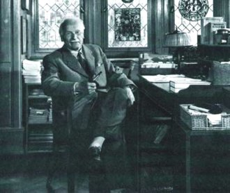
Jung
à
son bureau,
à Küsnacht, en 1950
que le discours tenu par les
alchimistes
n'est pas absolument abstrait et ne correspond pas entièrement
à une projection de la psyché. Prenons par exemple le
symbole de Vénus , l'ombre de
Lucifer. Notre tire sa FORCE du
corps de Vénus et son ESPRIT de celui de .
Héphaistos tient là-dedans le rôle de
parèdre et il est remarquable de voir cette symétrie qui
permet de comprendre pourquoi, dans les textes, la confusion est
facile
à établir entre les principes de l'oeuvre - du lapis - et
des principes de la prima materia ou [nous
ne parlons
pas de la materia prima].
exprime le principe dual du mercurius et
apparaît explicitement sous cette forme dans la figure
VII
de l'AC. Du reste, la partie droite de cette figure, en relevant
l'allégorie du fixe et du volatil, met parfaitement en relief
l'aspect dynamique du processus, relié à notre symbole
par la nigredo où,
remarquons-le bien, le •
central, fixe, du soufre solaire [assimilable
au
MOI] n'est pas encore apparu. Plus d'ailleurs que
d'une
allégorie sur le , il s'agit d'une
allégorie sur le compost - le véritable mercure
philosophique - où la fleur | le
dispute à l'étoile ¯,
expression de Fulcanelli qui résume tout. C'est la raison pour
laquelle Jung évoque le serpent de feu au travers de ce salniter :
l'éclair,
manifestation de qeioV,
n'en est pas moins, dans le même temps, celle de Lucifer, i.e.
du
diabolus ou Quatrième [cf.
Essais
sur la
symbolique de l'Esprit]. Nous pouvons évoquer
ici, entre autre, la figure XXXI de
l'AC
où les Aigles [sublimatio]
asssurent l'assation progressive du :
« l'éclair, ou la lumière, demeure au centre, tel un coeur » [Viertzig Fragen, Boehme]
Cette lumière centrale, cette sorte de foudre en boule [la pierre de Pessinonte] ne nous rappelle-t-elle point le sel fixe central qui permet au
d'affirmer sa forme matérielle, au sortir de la phase de nigredo
? Mais la réflexion de Boehme va plus loin
puisqu'il compare
l'éclair à l'arbre et au coeur ; il nous permet ainsi de
renvoyer à la figure de l'arbre du Mercurius
redivivus
[AC, I] et, bien sûr, au
chapitre de l'Arbre
philosophique développé par Jung
dans les Racines
de
la Conscience [op. cit.]. Une 3ème
figure doit être évoquée : celle du Codex Vossianus
du f. 99 où le tronc de l'arbre équivaut au spiritus
rector [sorte
de psychopompe], la bulle
germinative du Mercurius Redivivus étant remplacée [homo
quadratus] par le roi
tenant son sceptre. Nous avons vu qu'il fallait envisager par là
le symbole de la projection []. Du reste, on note
[in
l'Horizon
de
l'Inconscient, op. cit.]
que Jung énumère les parties de l'arbre dont le sens est
adapté : la souche ou rhizome, d'essence chthonienne,
véritable origine du monde, ne saurait recevoir comme analogue,
que celui de cette femme, à la vulve largement
découverte, de la figure XIV
où nous avons cru déceler les traits de la Bubastis de
l'Egypte ptolémaïque. Les racines reposent sur les Quatre
éléments - -représentés par quatre des
douze signes du zodiaque, où les couleurs primitives sont
peintes. Nous pouvons y voir, non moins, l'expression des «
quatre qualités » de Boehme [cf.
note 5 de Jung in l'Horizon
de l'Inconscient]
où ces couleurs sont conjointes aux qualités
organoleptiques de Chevreul [âpre,
amer,
doux, acide] et les qualités « de nature
» [sec, humide, chaud,
froid].
Il n'est pas impossible que le bâton de pèlerin, le
bourdon, le sceptre, ne puissent renvoyer à stauroV
[pieu] qui
prendrait alors la
valeur de †
[crux, creuset]
permettant ainsi d'établir la liaison entre les
éléments du salniter {
- } d'une part et le couple des antagonistes
d'autre part
{ - } : il s'agit
là des pilotes du . Ainsi, le
bâton se transforme en baguette magique - celle de Merlin dont
parle Emma Jung [le
Mercure
alchimique, in la
Légende
du Graal, p. 298, trad. albin Michel, 1988],
assurant l'entente [le
transfert
qui nécessite une médiation]
et la projection entre Pater et Filius. Jung cite Hippolyte et
il nous
semble que cet extrait résume assez la situation en ce moment de
l'oeuvre :
« Le dieu du Cyllène, Hermès, appelle les ombres des prétendants, tenant en main le brillant rameau d'or, qui, à son gré, ferme les yeux des mortels ou dissipe le sommeil. » [Elenchos, V, 7, 30, p. 86 cité in l'Horizon de l'Inconscient]
Hermès correspond au « faiseur d'âme » ou jucwn aitioV : l'âme est fécondée par la médiation de [pneuma] dans la
bulle
germinative et la projection est assurée par [nouV]. Cette
synthèse, Boehme tâche de nous l'expliquer en nous
dévoilant le sens de l'arcane , par bipartition du
symbole : la partie inférieure, , est
associée au :
«... premier Principe, et c'est la nature éternelle sous l'aspect de la Colère, le royaume des ténèbres encloses en elles-mêmes... » [De Signatura rerum, 14, 28 sq., p. 182]
La Colère est associée par nature à la Force, cf. supra. Elle est évoquée lors du retour de l'âme [Ros. Phil., figure 10]. On voit mal, dans ces conditions, comment le symbole pourrait signifier
les « ténèbres
encloses en
elles-mêmes »
sauf à considérer que ces ténèbres sont
lourdes d'une lumière obscure - celle de l'éclair - qui
ne demande qu'à se précipiter, réalisant ainsi la
cristallisation [coagulatio
luminis] du rayon igné solaire dans le corps du lapis. Nous avons analysé supra
en conjecturant son
probable rattachement à la projection. Quant à la partie
supérieure ,
Boehme y voit le salniter, ce qui est pour le moins curieux. Il
aurait
sans doute été plus avisé de revoir
l'écriture de ce hiéroglyphe et d'en faire . Ce symbole nous
est connu : il forme la partie
inférieure - et comme le rhizome - de l'animus ; on y reconnaît
l'entrelacement des formes du
couple {-}, la liaison
étant assurée par Héphaistos, cf. supra.
Du coup, on devinerait presque dans
l'animus une grande partie du signe de l'airain brûlé [aes
ustum, cf. Chimie
des Anciens, VII]
qui désigne l'androgyne hermétique dissous dans la masse . Ainsi que le note
justement Jung, le symbole du Salniter
correspond en fait à celui du cinabre, cf. supra, c'est-à-dire du kinnabariV ou
Cambar. Il
faut donc voir dans la salniter
de Boehme un Mercure qui contient déjà le Soufre rouge
puisque le cambar de la Turba
est le Mercure.
Voici
un autre extrait de Bohme, antérieur au précédent :
« Mais alors l'éclair, en apparaissant, fait une † englobant toutes les qualités et alors l'esprit naît de l'être et voici ce qui en résulte :
... est l'éternité et le temps ... la partie
inférieure
...est la nature éternelle » [ibid.]
Carl-Gustav Jung (1875-1961)
Nous reconnaissons l'image que nous avons développée supra touchant à l'identité = temps [transfert]
qui, ipso facto, vaut à son identité
à
l'espace [projection].
Par
opposition aux notions de métamorphose - expression du
transfert - et de transfiguration de la forme - expression de la
projection. Il est assez remarquable que l'on voit apparaître,
dans ce débat, le visage de Kunrath puisqu'il voit dans le sel
saturnin le
Sal Tartari miundi maioris
[Von
hylealischen Chaos,
p. 263]. C'est là que nous rejoignons kupriV
,
personnification du Tartre ainsi que nous l'avons
indiqué dans plusieurs de ces sections [cf.
tartre
vitriolé par exemple], tout dans les textes
montrant
que est un sel vitriolique qui doit être «
azoqué » par , terre
végétale.
Selon Abraham Eleazar [Uraltes Chymisches Werk,
II],
il faudrait même y voir l'arcane
qui, pour Jung,
symbolise la matière permettant les transformations [naissance
et maturation du krustalloV
marqué
par l'emploi de la rémore ou « animal glaçon de De
Cyrano Bergerac, à en croire Fulcanelli et E. Canseliet,
action
se situant au pays hyperboréen, là où
l'étoile du Nord représente le sel fixe central].
D'ailleurs Kunrath assure que le vrai SEL
des philosophes est « centrum terrae physicae
» où il n'est pas difficile d'imaginer aussi le sel fixe
central. C'est là l'artifex
par lequel la nigredo évolue vers
l'albedo - que soit l'artisan des
ténèbres, nul doute
là-dessus [voyez le f.
99 du Codex Vossianus de Leiden, partie droite
consacrée au processus de transfert] et qu'il soit
l'un
des composés du ne pose là
encore point de
problème [voyez la 2ème
partie de la monade]. Si l'on
considère les deux éléments de notre monade [rappelons
que le 1er élément découle
du cercle
croisé que l'on
sépare en sal et nitrum
; que le 2ème élément
utilise des parties de ces deux sels afin de préparer le
trinitaire Pater - † - Filius ],
il nous reste les éléments suivants qui ne sont pas sans
rappeler le salniter évoqué par Boehme :
« Mais la pierre ne peut être ni fondue ni pénétrée, ni mélangée, mais est faite aussi dure que le verre. » [in Artis Auriferae, Rosarium Philosophorium, Visio Arislei, p. 353]
Le lapis est bien sûr beaucoup plus dur que le verre et on ne trahira pas un grand secret en disant qu'il possède 8 ou 9 sur l'échelle de Moth [cf. chimie et alchimie]. Mais quand il cite le verre malléable [vitrum malleabile, Psychologie et Alchimie, op. cit., p. 303, trad. Buchet Chastel], il n'est que trop évident que le magicien de Küsnacht perd le Caput de l'oeuvre en présentant la comme le lapis... [cf.
Atalanta
XV
et Sainte Claire Deville]
Concluons : D'un côté, le royaume de la Joie ou de Dieu, qui est celui de la sublimation des corps, de l'expression de l'esprit ; de l'autre côté, le Tartare où l'âme du métal est incorporé à une forme impure. Et voilà que surgit le but de l'alchimie : ouvrir la prison des métaux [figurée dans les Noces Chymiques de Valentin andreae] au moyen de la clef appropriée [cf. figure XXIV] en sachant qu'il y a quatre portes et une clef par porte [cf. Aurora Consurgens, trad. M.-L. von Franz, 1957, commentaire de la Cinquième Parabole] ; c'est la première couronne de perfection ou nigredo. Par l'agent de
dissolution qui est le dragon couvert
d'écailles - que l'on devra préalablement apprivoiser,
cf. figure IV - il faudra résoudre
les principes de l'oeuvre {-}
en leur
première matière qui est un humide
radical métallique [stade
de
l'ioV
qui
constitue la clef de notre monade]
; c'est la deuxième couronne de perfection. Nous voici au midi
de l'oeuvre mais, contrairement aux apaprences, à ce midi
correspond un soleil noir, époque où le salniter
imprime son action et où la ,
opposée au , illumine en plein
la terre dissoute [corrompue].
De
là vient que Boehme écrit :
« [qu'un] serpent furieux, déchaînant sa colère, [vient] mettre la nature en pièces. » [Aurora, 15, 65, p. 206]
Le serpent est Python - anagramme de Typhon que nous connaissons bien - : c'est lui qui, armé et ordonné par Junon - Héra, recherche Léto [Latone] pour l'empécher d'aterrir. Dans cette lutte incessante du fixe et du volatil [cf. figure VII], la pierre est à l'état liquide [cf. figure XXXI] et le est littéralement
dans la gueule du lion [nous
sommes au stade du Lion vert
qu'une gravure du Ros.
Phil.
caractérise nettement].
De cette lutte des contraires, on sait à vrai dire peu de choses
sous l'angle opératoire. L'oratoire est plus fourni sur ce point
de science. Un autre passage des Visions
de Zosime permet
à Jung de citer l'AC,
par
l'intermédiaire de Marie la Prophétesse et le Ros.
Phil.
:
« Marie dit du vase hermétique qu'il est la "mesure de ton feu" et que les Stoïciens l'avaient caché (cité dans Lib. quartorum dont nous avons signalé l'importance in Theat.Chem. V, 101-186, p. 143). » [Racines de la conscience, pp. 196-197]
Et l'on trouve en complément cette note :
« De même notre pierre, c'est-à-dire l'ampoule de feu, a été créée à partir du feu. » [Allegoriae Sapientium in Theat. chem. V, 57-90, p. 67]
Remarquez que ce terme d'ampoule de feu se rapporte précisément à la bulle germinative de la gravure du Mercurius redivivus [cf. AC, I] aussi bien qu'à la frondaison de l'arbre de projection [Codex vossianus f. 99, Leiden] : l'Hermès y est
contenu ; sans cette relation rien, au fond, de ce toute cette
histoire
de l'AC, ne peut être saisi.
Carl-Gustav Jung (1875-1961)
Nous allons à présent revenir sur le commentaire des aquarelles de l'AC donné par Jacques van Lennep, dans son Alchimie [Dervy, 1986]. Voyons d'abord la figure XXII. Van Lennep écrit que :
« L'artiste a manifestement joué sur le sens des entrailles, celles de la terre de laquelle s'extrait la matière première et celles de l'oiseau, symbole de la pierre qui peut se multiplier. » [p. 67]
Le pélican représente le
qui se détruit lui-même en assurant la croissance de
l'androgyne hermétique ; il y a donc méprise puisque la
multiplication [en fait
l'accroissement]
est lié non point à cette idée chimérique
de l'augmentation exponentielle du « pouvoir »
transmutatoire du lapis mais tout simplement à la croissance du
cristal. Notons encore que nous avions vu un aigle, à l'origine,
dans cet oiseau mais il s'agit d'une erreur et c'est donc bien
un
pélican [toutefois, ce que
nous disons de l'aigle, sous le point de vue du symbolisme
reste
valable ; cf. supra sur le pélican].
La
figure XXXVII date du XVIe
siècle et Van Lennep en donne la version du XVe dans
son livre, p. 58 :
« La volatilité ou extraction de l'esprit métallique et sa réincrudation ultérieure est alors suggérée par l'image d'un petit être (l'âme) qui s'échappe de la bouche d'un guerrier tandis qu'un autre s'apprête à le faire avaler à un cadavre dressé dans son cercueil. Le guerrier symbolise le métal dont il faut extraire la quintessence "parce que - explique le texte - l'âme est extraite par la putréfaction" ».
L'auteur passe sous ilence la scène inférieure avec les trois lézards. Faut-il y voir un symbole se rattachant à celui de la salamandre ? C'est possible comme tendrait à le suggérer le fait qu'il possède des écailles, qu'il s'agit d'una animal à sang froid, qu'enfin c'est un reptile : il possède des traits qui le rapprochent du dragon et du serpent. Sur l'extraction du, cf. supra à
spiritus
corruptus. Le lézard vert [lacerta
viridis] apparaît
dans le tableau des symboles de Penotus [Bernardus
G. Penotus
a portu Aquitano, in Theat.
Chem., vol. II, p. 123 et cf. introduction à Ripley,
Livre
des
Douze Portes] comme un équivalent du
mercurius. La figure XXIII est
passée rapidement :
« Rapprochons cette miniature [il s'agit de la figure VI], l'une où un alchimiste verse une poudre sur la pâte qu'un aide pétrit... » [p. 66]
Tel n'est pas le cas de la figure XXIV où Van Lennep va citer l'une des aquarelles du Codex Vossianus, mais sans mentionner explicitement le MS :
« L'image qui illustre le chapitre comparant la pierre au végétal, perce qu'elle est le fruit d'une croissance identique, présente un Arabe (Galien) se tenant, clé en main, près de la porte d'un château. Il détient les principes qui permettent d'accéder à la connaissance des secrets conservés dans la citadelle hermétiquement close. Il s'agit du sage qui sait ce qu'est l'arbre de vie au tronc couronné, que l'on retrouvera également dans le Splendor solis. L'arbre ou bois de vie, c'est la médecine universelle, lorsque les métaux imparfaits ont crû jusqu'à la perfection de l'argent ou de l'or. Et je leur donnerai à manger de l'arbre de vie, précise le texte. » [pp. 67-68]
Il s'agit là d'un extrait de la Première Parabole : De la Terre noire dans laquelle les sept planètes ont pris racine [in M.-L. von Franz, Aurora consurgens, p. 75, trad. La Fontaine de Pierre, 1982]. La Parabole a trait à la manière dont le sage arrivera à forcer la nigredo. La
référence au Splendor
Solis
vaut pour l'image 6 qui nous
montre
un arbre couronné d'où s'enfuient des oiseaux. On en
connaît plusieurs versions [1,
2]. Van Lennep continue
ainsi :
« Plusieurs symboles de cette miniature se retrouvent dans un autre manuscrit du XVe siècle (un de ceux qui furent négligés par Obrist), conservé à Oxford. Le couple du soleil et de la lune apparaît tenant des clés dans la tour-athanor comportant trois enceintes et trois portes (les élixirs). au centre de celles-ci pousse parmi les flammes l'arbre de vie montrant dans son feuillage le roi-or. Trois signes astrologiques sont indiqués par un archer (sagittaire), un lion et un bélier tandis qu'une âme s'échappe d'un cadavre. »
Le MS. dont parle Van Lennep est le Bodleian Library Rawl. D. 893 et la miniature évoquée présente des rapports évidents avec l'aquarelle du f. 99 du Codex Vossianus. L'ensemble est intégré dans une tour figurant l'athanor.
La partie inférieure montre le couple alchimique avec des phylactères s'y rattachant. Il s'agit des principes élémentaires et .
Ils ne sont pas encore sublimés [sinon
ils ne seraient porteurs des
clefs de saint Pierre]. La partie supérieure est
strictement superposable, en substance, de celle du f.
99 de Leiden. Mais au lieu que la projection et le
transfert se
dégagent nettement, l'accent est mis dans le MS. Bodleian
nettement du
côté de la projection .
La figure XXV est pour l'auteur :
« le thème de la floraison... Les corps décapités du soleil vêtu de rouge et de la lune vêtue de blanc, gisent près de leur bourreau, une étrange créature au corps de serpent et à le tête étoilée. » [p. 68]
Van Lennep signale que Jung avait fait remarquer que Knouphi, une divinité chthonienne à corps de serpent, avait la tête entourée de rayons. Il s'agit du serpent Chnuphis [encore appelé Khnum, Khnoumis, Chnuphis, Chnemu, ou Chnum], portant une couronne à sept rayons [King, the Gnostics and their Remains, planche III, fig. 7 cité in Psychologie et Alchimie, fig. 203, p. 482, trad. Buchet Chastel]. Ce serpent doit être rapproché d'Agathodaimon. À l'origine, il semble que Chnuphis ait possédé des traits qui le rapprochaient du dieu Ptah de Memphis : on disait de lui qu'il avait élaboré l'oeuf cosmique [contenant le
et l'unus
mundus] sur un tour de potier [toutefois,
on
peut se poser des questions sur l'unicité réelle de
Chnuphis et Khnum... Mais rien n'interdit de penser que, le
verbe num
signifiant « se joindre, s'unir », on ne soit pas
autorisé à voir, effectivement, dans Chnuphis l'uino
entre un lion et un serpent... qui produirait le taureau Khnum
de Ptah
! ]. Le rapprochement entre la figure de l'AC
et cette divinité égyptienne est d'autant plus
intéressante que nous avons été amenés, cf.
AC, I, à rapprocher la
Bubastis de l'Egypte ptolémaïque de la femme
dénudée, à la figure
XIV [Baubô].
Le rapprochement est aisé entre Chnuphis et ce que nous avons dit - cf. AC, III - du taurobole mithriatique ; il suffit de revoir le bas-relief de Heddernheim pour comprendre que serpent et lion ne forment qu'une seule figure, que le vase ou cratère unit ou scelle pour ainsi dire en une entité. qui n'est autre qu'une variation sur le thème du.
Revenons à Agathodaimon. On l'assimile à un serpent divin
ce qui est déjà concilier les contraires, au point qu'on
pourrait presque croire que Jung y a pensé en écrivant sa
Réponse
à
Job [trad.
Buchet
Chastel]
; plus sérieusement, on a donné ce nom à l'un des
Philosophes de la Science et de l'Art divin dont le nom s'est
ainsi
évhémérisé dans la Turba
où il intervient à plusieurs reprises [(
ce nom se trouve répété un grand nombre de
fois, avec des variantes multiples, telles que Agadmion,
Agadmon,
Agmon, Admion, Admion, Cadmon. Il répond encore - sent XLV de
la
2ème version - à Zimon - sermo XLI - de la 1ère
version - ; lequel est ailleurs - sermo XXXIII = sent XXXVII -
identique avec Zeunon
ou Zenon, auteur d'un certain nombre de dires - selon ce que dit Berthelot, on serait tenté, aussi, d'assimiler Agathodémon à Cadmus ou à Amon ... ) cf. Berthelot, Chimie des Anciens, IV]. Les uns croient que c'est un Ancien, un des plus vieux personnages qui se sont occupés de philosophie en Égypte ; d'autres disent que c'est un ange mystérieux, bon génie de l'Égypte ; d'autres l'ont appelé le ciel, et peut-être dit-on ceci parce que le serpent est l'image du monde.
En effet certains hiérogrammates égyptiens, voulant retracer le monde sur les obélisques, ou l'exprimer en caractères sacrés, dessinent le serpent Ouroboros ; son corps est constellé d'astres. Quoi qu'il en soit, il es réputé avoir prononcé ces paroles que Zosime rapporte [cité par M.-L. von Franz in Aurora Consurgens, note 18, p. 349, trad. La Fontaine de Pierre, op. cit.] :
« Ne méprisez pas la cendre qui est au fond du vase ; elle est à une place inférieure, mais elle est la terre de ton corps qui est la cendre des choses permanentes. » [in Rosinus ad Sarratantam, Artis Auriferae, I, pp. 183 et sq.]
C'est nommer le sel incombustible, fixe et central, que d'autres ont appelé la salamandre et que nous symbolisons par l'idéogramme.
Il s'agit du principe qui asure non pas tant la germination que
la
croissance de l'or enté dans la terre foliée des Sages.
C'est donc à l'image d'une véritable graine que nous
sommes amenés ainsi qu'à l'aspect trinitaire de l'unus
mundus :
« Viens à moi, viens à moi, bon fermier, Agathodaïmon Knouphi Orion le saint, qui reposes au nord et agites les flots du Nil et les unis à la mer et les transformes par le processus de vie, comme un homme... le sperme de la conjonction d'amour, qui bâtis le cosmos sur un fondement solide. » [Papyrus de Berlin 5025, in Preisendanz, Papyri Graecae Magicae, I, p. 4 cité in M.-L. von Franz, Aurora consurgens, op. cit.]
Agathodaimon est comparé ici à Cadmus ou à Hercule : c'est la personnification de l'Artiste démiurge qui façonne son oeuf philosophal et cosmique. Dans les Visions de Zosime, il est décrit comme un vieillard blanchi par les années au point que les gens qui le regardent sont éblouis par l'albedo qui se dégage de son être. Il s'agit du mercurius senex ou dragon rouge que certains ont appelé IAMSUPH [pour YAM(M) SUPH, cf. Douze Clefs de Philosophie, Clef X] :
« Je suis l'homme de plomb et j'endure une violence intolérable. » [in Jung, Racines de la conscience, p. 163, pochothèque]
Blanc de plomb, voilà la céruse [carbonate de plomb], qui nous rappelle les paroles de Zosime sur le temple d'albâtre et de céruse que l'Artiste doit s'employer à construire [cf. prima materia]. Zosime va même jusqu'à recommander d'établir le temple tumulaire avec de l'albâtre en pierre de marbre de Proconnèse [cf. Berthelot, Alchimistes grecs, III, i, 5 et III, xxix, 12, cité par M.-L. von Franz, Aurora consurgens, p. 329] : c'est l'oeuf d'albâtre que Zosime compare encore au mystère mithriatique [cf. AC, III, commentaire du bas-relief de Heddernheim] parce que Mithra passait pour l'intercesseur entre
et
: il avait donc, d'évidence, des traits de .
« L'eau est cet humide radical qui représente l'anima media natura ou anima mundi (Jung ajoute en note que c'est Agathodaimon qui subit la transformation) retenue captive dans la matière ; elle est encore appelée âme de pierre ou métallique, anima aquina. Cette âme est libérée de l'oeuf, non seulement par la cuisson, mais aussi par l'épée, ou bien restaurée au moyen de la separatio, qui est la dissolution en les quatre racines ou éléments. » [Jung, Visions de Zosime, in Racines de la conscience, p. 171, pochothèque]
Il semble que Jung mélange ici deux phases de l'oeuvre qui n'ont rien à voir : en effet, l'anima mundi n'est obtenue qu'après que le spiritus corruptus ait baigné et séjourné longuement dans l'animus.
C'est alors qu'il est transfiguré en anima, contenue dans l'oeuf
philosophal. Et ce spiritus corruptus est préparé
à l'occasion de la schizogénie des quatre
éléments, préalablement à la miseau tombeau
des corps des deux matières. En revanche, l'âme est
libérée de l'oeuf par le « glaive miellé
» évoqué sur l'un des caissons du château de
Dampierre-sur Boutonne. La separatio
dont parle Jung s'effectue donc tout au début de la cuisson [Grande coction].
Agathodaimon représente donc en substance la nature divine
secrète de la matière mystérieuse encore
appelée arcane et idéalisée sous les traits du
serpent divin Chnuphis dont la substance se renouvelle
constamment.
Mais, comme l'a noté Jung, il est paradoxal au sens où il
possède à la fois le pouvoir de vie et de mort :
« Considéré comme celui qui est attaché à la mère, le héros est le dragon ; considéré comme celui qui renaît de la mère, il est celui qui surmonte le dragon. Il a en commun avec le serpent cette nature paradoxale. » [Jung, Métamorphoses de l'âme et ses symboles, p. 620 dans la Pochothèque]
Notez que ces deux stades correspondent à ceux de la matière dans le vase de nature : dans un premier temps, celle-ci, dissoute, épouse pour ainsi dire la forme chaotique du dissolvant ; dans un temps ultérieur, lorsque l'animus se dissipe, le phénix renaît de ses cendres et cette phase signale la victoire du héros sur le dragon [Jung donne en exemple la Sexta Figura du De Lapide de Lambsprinck]. Agathodaimon est encore le serpent vert indiquant l'aspect dual de la végétation et de l'inconscient : c'est dire que la croissance de l'androgyne se déroule en dehors du regard de l'Artiste, in cavernam. D'où les relations incessantes dans l'iconographie aux sépulcres, tombeaux, etc. [Ros. Phil., Codex Vossianus f. 99 , Atalanta fugiens, L, etc.] Il faut aller jusqu'à la légende d'Osiris, et sans doute au-delà encore, pour percevoir la permanence de ce mythe de la lutte de l'androgyne naissant contre le serpent :
« On trouve chez Frobénius (Das Zeitalter des Sonnengottes, 1904, p. 68) une légende où le grand serpent (né d'un petit serpent dans un arbre creux par ce qu'on appelle élevage du serpent) finit par dévorer tous les hommes... et seule une femme enceinte survit. Elle creuse une fosse, la couvre d'une pierre, y vit et enfante des jumeaux, ceux qui plus tard tueront le dragon. » [Jung, idem, p. 636-654]
Le cava ilex [arbre creux] retient l'attention de cleui qui a lu les Figures Hiéroglyphiques du pseudo Flamel puisque Flamel recommande que l'athanor soit préparé d'un arbre creux, un chêne dont la forme doit être arrondie en dedans. Quant aux jumeaux, comment ne pas y voir l'androgyne qui porte sa figure céleste dans le signe des Gémeaux [cf. zodiaque alchimique, blasons hermétiques] ? Nous avons conté toutes sortes de légendes où les mythographes ont établi la recension de ces histoires de jumeaux qui se rebellent contre leur marâtre [Amphion et zéthos, etc.], la mère terrible qui représente la formulation
de l'animus . Dans Aïon,
Jung rapproche le serpent du poisson :
« Chez les gnostiques, le serpent se recommandait en tant que symbole populaire, connu depuis des temps reculés, du génie local bienfaisant, Agathodaimon, ainsi que Noûs qui occupait chez eux une place privilégiée. » [Symboles gnostiques du Soi, trad. Albin Michel, p. 204]
Le Noûs ou
ressortit du temporel et il représente les extrêmes, aussi
bien le diabolus que le fils de Dieu ; on peut le représenter
par le symbole de l'aes ustum , en liaison avec le
salniter défini par
Boehme.
C.G. Jung sans doute vers 1958, à Küsnacht [probable photo de l'entretien avec Aniela Jaffe]
Le serpent est double et représente le principe Soufre dissous [non seulement le sulphur mais aussi la terre du corps ].
Ces serpents [ils sont
deux, comme ceux que l'on voit
représentés dans la Prima Figura
de Lambsprinck]
sont entrelacés autour du caducée d'Hermès qui est
le principe fixe. Ces serpents ont donc un rôle qui est
fondamental : ce sont les images mercurielles du Soufre : dès
lors, on comprend qu'il s'agisse d'un symbole de sagesse et de
la
lumière ou Soufre , annonciateur de l'Anima
consurgens. Mais ce
serpent est énigmatique, secret et imprévisible, signant
par là sa nature éminemment qu'il faudra
domestiquer [figure IV]
en le garrottant ou en le tronçonnant, chose que l'on
réalise par la pétrification de son oiseau
dédié, le basilic [figure
XX et XXbis]
: autrement dit, il faut dans cette opératon réaliser ce
que les métallurgistes appellent un « étonnement
» qui fait exploser les pierres les plus dures, que l'on soumet
à un régime écossais [cf.
compendium].
Eh bien ! Il en va ainsi du Mercure et la coagulation de l'eau
mercurielle - aqua permanens - nécessite que, de toute urgence,
dans une atmosphère surchauffée, l'Artiste fasse preuve
au sens propre du terme, de sang froid [toutefois,
cela doit se comprendre avec
un grain de sel, car l'étude de notre Mercure
philosophique montre que le calorique ne doit être
abaissé que d'une manière lente, très progressive].
En somme, nous trouvons en Agathodaimon une triade où
participent au début le spiritus corruptus [résultat
de l'ouverture du
métal, vêtements souillés du
et de ], à la fin, l'anima
dépurée ,
et de manière intermédiaire en une forme dynamique, le
désir ou mercurius senex comme vieillard chenu et blanc, d'une
blancheur incroyable, à la fois solaire et lunaire : c'est une
blancheur qui fait baisser le regard tant elle illumine et qui
montre
une privation totale
d'un des éléments de l'oeuvre nécessaire à
la coagulation : l'aer comme symbole de
Zeus . Car le transfert ne sert à
rien si la projection
n'opère pas. Aussi peut-on se poer des questions ur le
caractère réputé « néfaste » de
cet aspect chthonien du serpent, alors
qu'il est au
contraire indispensable à la future réincrudation - i.e.
individuation - du .
Dans son Mysterium
Conjunctionis,
Jung reviendra en une synthèse
suprême sur Agathodaimon, en citant Ostanès :
« Monte vers Agathodaimon le Grand et demande-lui aide, et sache qu'il existe en toi quelque chose de sa nature qui ne sera jamais corrompu. Et quand je fus monté en l'air il me dit : Prends l'enfant de l'oiseau qui est mélangé de rouge et étends pour l'or son lit qui sort du verre, et place-le dans son vase d'où il n'a pas le pouvoir de sortir sauf quand tu le désires, et laisse-le jusqu'à ce que son humidité soit partie. » [Jung, Myst. Cunjunctio., I, la Quaternité, p. 33-34, trad. Albin Michel, E.J. Holmyard, Kitab al-'ilm al-muktasab, etc. 1923, p. 38]
Ce « quelque chose » d'incorruptible est cette parcelle issue du spiritus corruptus qui va se transformer dans le travail en anima, au travers pourrait-on dire de l'animus ,
celle-ci jouant le rôle d'un filtre, d'un
crible, philtre d'amour s'il en ait [sur
le muktasab, cf. supra]...
C'est
à partir de là que s'élabore, peu à
peu, le Soufre vif des philosophes ou sulphur «
azoqué » oint par l'animus et dont l'idéogramme est dès lors
conjoint à celui de Jupiter : . Le reste de l'extrait est plus
aisé à comprendre : il fait intervenir
- où il faut lire . Le lit de l'or qui
sort du
verre est le christophore ou Offerus [cf. tarot
alchimique, lame de l'(h)ermite], c'est-à-dire
celui
qui porte l'or : cristou
joroV.
Enfin, le départ de l'humidité laisse la terre
embrasée de son rayon igné
et ce départ
correspond à la dissipation de l'animus. Ce départ du coïncide avec
l'apparition de la 3ème
couronne de perfection :
« Cela rappelle les sept (ou douze) couronnes de lumière brillante que le serpent Agathodaimon porte sur les gemmes gnostiques et aussi la couronne de la Sapientia dans l'Aurora consurgens. » [idem, p. 36]
Cette allusion à la couronne de la Sapientia représente l'individuation, en ce sens qu'elle manifeste la présence de la terra alba foliata [Senior, De Chemia, 1566 signalé par Jung en note 32]. En particulier, dans les allégories chrétiennes, il est notable que la couronne soit à l'image de l'humanité du Christ, i.e. de sa substance corporelle. Jung reviendra, in fine, sur cette image constellée du vase, du serpent et d'Agathodaimon, dans l'un des derniers chapitres du Myst. Conjunctionis :
« le serpent d'Hermès ou Agathodaïmon, le noûs de la face froide de la nature, en d'autres termes, l'inconscient est emprisonné dans le vase sphérique, fait de verre diaphane. Dans la conception alchimique, ce vase signifie le monde aussi bien que l'âme. » [Myst. conjunctionis, I, les Personnifications des opposés, p. 254]
Le verre diaphane ou amorphe est le vase de nature ou athanor : il est imprégné de la susbtance de l'animus mundi
qui symbolise l'inconscient [complexe
Ça
- Soi]. Ce vase est l'unus
mundus des alchimistes
qu'ils symbolisent par l'hiéroglyphe de la
mais que l'on peut tout autant représenter par celui du salniter
de Boehme : cette image a
l'avantage de différencier en tant qu'essence, la nature du vase
qui est le V.I.T.R.I.O.L.E.U.M. de la nature du composé qui est
le . Elle présente cependant l'ambiguité de
faire voir un récipient en verre [cornue,
matras scellé]
là où il faut voir un creuset empli de sa brasque :
autrement dit, il est pratiquement impossible, avec ces
informations,
de savoir si l'Artiste envisage la voie humide ou la voie sèche
[cf. supra].
Le
symbole de la †
où l'on devine le tombeau, le tumulus, le creuset [de
même que la dissolution qui
lui est, pour ainsi dire consubstantielle] est
beaucoup plus
intuitif que celui d'un vase en verre scellé où la
matière évolue. Ce point, pourtant important, ne semble
pas avoir été traité par Jung dans ses
études alchimiques. On peut néanmoins en avoir un
aperçu grâce à deux aquarelles, celle du Codex
Vossianus f. 99 et
celle à laquelle se
réfère Van Lennep - MS. Rawl. 893
- un peu antérieure puisque datant probablement du XVe
siècle. Il semble que la partie gauche du f. 99 où nous
considérons le processus de projection
soit identifiable à la voie sèche, tandis que la partie
droite - celle ou nous voyons des « esprits » se tendant la
main et assimilable au processus de transfert -
soit identifiable à la voie humide. Mais dire cela serait sans
comptert sur un point capital : dans son Myst.
Cath.,
Fulcanelli a insisté sur le fait que la voie
sèche
était divisée en deux phases principales où il a
distingué une phase
humide suivie d'une phase
sèche ou phase d'assation [cf.
symboles]. Dès lors,
il
paraît licite de voir dans la voie dite humide la phase humide
de
la voie sèche - celle où agit l'aqua
vitae permanens - et
dans la voie dite sèche, la période d'assation de la voie
sèche - celle qui est marquée par la disparition
progressive de l'esprit Mercure. [voir aussi
1, 2,
3,
4,
5,
6]

Van Lennep cite ensuite Don Pernety :
« Ce bourreau porte la hache qui correspond au feu car, dit Pernety : " frapper avec la hache, c'est cuire le magistère ". » [Alchimie, p. 68]
C'est évoquer là encore l'assation mais là où nous ne serons pas d'accord avec Pernety - comme en bien d'autres points qu'ils développent dans sa trilogie [Fables Égyptiennes et Grecques, 2 vol. et Dictionnaire Mytho-hermétique] - c'est lorsqu'il assimile la hache avec la cuisson au lieu qu'il faut l'associer à la dissolution, ce qu'exprime bien, au reste, la figure XXV. Cette confusion est d'autant plus regrettable qu'elle conduit Van Lennep à poursuivre en assurant que :
« Des corps des époux martyrs doit s'écouler une eau germinatrice (aqua germinans) ou teinture qui, selon la Turba ou Senior, fera pousser ces fleurs. » [ibid., p. 68]
Les fleurs évoquées sont celles que l'on distingue dans le matras, là où le feu circulaire fait son oeuvre. Sont-ce vraiment des fleurs que l'on aperçoit ? Ne serait-ce pas plutôt des morceaux de carbunculus ou de carbo [charbon] ? Quoi qu'il en soit, il ne peut s'écouler d'eau germinative du corps des époux, mais bien plutôt et tout d'abord, cette aqua foetida dont parlent les vieux textes et qui constitue la partie importante du « vinaigre très aigre ». On voit qu'il ne saurait être question pour le moment de teinture puisque nous en sommes au stade la nigredo
; la germination ne pourra avoir lieu que pour autant que l'or
soit
« enté » dans une terre qui lui soit
appropriée [ce qu'exprime
bien mieux la figure X].
Voyons
à présent la figure XXVI. Van
Lennep est amené à la rapprocher de la figure XXII
:
« Rapprochons-en immédiatement une des dernières illustrations où une femme à la peau sombre présente un caducée dans son ventre outrouvert. Cet embryon correspond à la matière minérale avant qu'elle soit tirée de la minière. L'image rappelle que selon la Tabula smaragdina, le vent a porté la pierre dans son ventre, une référence que le miniaturiste pourrait avoir habilement confondue avec le type de la Vierge prégnante laissant apparaître Jésus, le fruit de ses entrailles, mais peut-être aussi avec celui des Vierges noires » [ibid., p. 67]
Vaste sujet en vérité ! En premier lieu, nous rapprocherions davantage la figure XXVI de la figure IX si nous prenons en considération l'ouverture du corps, identique à la percée dans les profondeurs, dans l'inconscient. En second lieu, dans le commentaire intégré à la figure XXVI, nous citons Jung à propos de l'amande mystique qui décrit bien cette scène de la poitrine déchirée laissant paraître le fruit de la profondeur qui correspond ici aux Gémeaux de l'oeuvre [cf. la Vierge du livre d'Abraham Juif], où il faut voit l'androgyne. Nous ferons remarquer que le symbolisme de la schizogénie corporelle se perd dans la version du XVIe - figure XXIX - où le caducée n'apparaît plus qu'exposé et perd l'aspect numineux qu'on peut lui trouver à la figure XXVI par le fait du rayonnement extraordinaire que dégage la vierge noire. Reconnaissons que cette image est terrible car cette « Vierge prégnante laissant apparaître Jésus » apparaît bien plutôt comme une sorte d'ange noir annonçant la face d'un diabolus. Variation que Jung aurait peut-être pu amorcer sur le thème de la quaternité et du mystère du Quatrième [cf. Essais sur la symbolique de l'Esprit]. Là encore, comme pour la figure XIV [Bubastis de l'Egypte ptolémaïque] ou la figure XXV [serpent lion Chnuphis], nous serions tentés d'en revenir aux sources égyptiennes et d'y voir une représentation de l'antique Isis qui tient à la fois - en ce caducée et ces serpents - l'hexagramme de Salomon,
symbolisant l'anima
consurgens émergeant du
chaos, c'est-à-dire du
spiritus corruptus, dont la dépuration
s'opère au sein de l'animus . Ainsi cette vierge
noire est-elle une variation sur
le thème de l'androgyne tel qu'on le voit à la figure
I :
« Celles-ci [Vierges noires] dérivaient de divinités chthoniennes invoquées dans les rites de fécondation et de parturition et qui doivent être mises en rapport avec le mythe de la terre noire, la terre féconde, dont il est question dans l'Aurora. On peut associer cette créature à la reine du Midi, l'épouse de Salomon qui était noire et qui dans le texte est identifiée à la Sagesse, mère de la pierre philosophale, venue de l'orient, comme l'aurore qui se lève. » [ibid., p. 67]
Van Lennep fait ici allusion à un commentaire de M.-L. von Franz se rapportant au chapitre V de l'AC, la Stimulation des Insensés [trad. Fontaine de Pierre, p. 71] où le texte concernant la Sagesse est en rapport direct avec une allégorie sur la prima materia que l'ignorant foule au pied sans le savoir ou rejette comme matière vile. Il est essentiel, ici, de saisir le parallèle entre la Sagesse et la Pauvreté [cf. le commentaire de la figure XXV] : la pauvreté représente le dépouillement de l'esprit qu'il faut comprendre comme la dépuration du spiritus corruptus [revoyez supra et la figure 8 du Ros. Phil.]. Il s'agit « d'être dépouillé de soi-même et revêtu de l'Éternité de Dieu » : la materia prima considérée au sens global du terme [il y a plusieurs « materia prima »] doit être ointe de l'esprit sain, i.e. l'animus, chose qui ne peut se réaliser que dans le vase de nature afin que la matière soit revêtue d'un nouvel habit qui la transformera en corps glorieux, idée que l'éclat de la Vierge noire de la figure XXVI exprime parfaitement. Notons encore que cet aspect terrible a sans trait à un reste archétypal de l'image de l'antique Grande Mère [qui s'apparente à la « Mère folle » de Fulcanelli où l'on peut retrouver le dragon de la caverne qu'évoque Jung dans ses Métamorphoses de l'âme, VII, le Sacrifice, note 91 ; cf. aussi la Légende Sifrit à la peau de corne], signalée par Jung dans les Aspects psychologiques de ses Racines de la Conscience [p. 141, n. 30, éd. Pochothèque]. Onne peut s'empécher de trouver dans cette Vierge noire le pendant occidental de la Kali orientale ou de l'Hécate grecque : l'ombre du diabolus nous est dévoilée in corpore virgine et nous épargne cette hypocrisie phénoménale de l'Église qui faisait dire fort justement à Jung :
« On est allé jusqu'à supprimer à peu près ou même totalement le démon, ce qui a conduit à introjecter dans l'homme cette figure métaphysique qui constituait auparavant une partie intégrante de la divinité, si bien que l'homme est devenu le porteur du mysterium iniquitatis... » [idem, p. 142]
Ce n'est pas tout : la figure XXVI nous permet de rejoindre le sacrifice mithriatique - taurobole, cf. supra voir mythe d'Attis et de Cybèle et l'AC, III pour le bas-relief de Heddernheim - via les dadophores sont Jung ajoute en note :
« ... portant leurs torches tantôt droites, tantôt abaissées se retrouvent aux portails des cathédrales chrétiennes sous les traits des vierges sages aux lampes droites et des vierges folles aux lampes renversées. Voir notamment, à Notre-Dame de Paris, les piédroits du portail du Jugement dernier. » [ibid., le symbole de la transsubstantation, p. 264 ; la note est de Yves Le Lay qui a assuré la traduction des Racines de la Conscience, Buchet-Chastel, 1971]
Ce portail du Jugement dernier est précisément celui qui fut l'un des principaux sujets du Myst. Cath. de Fulcanelli, avec la série des bas-reliefs des Vices et Vertus [cf. Gobineau de Montluisant]. Les textes rapportent que la Vierge fut préservée de la corruption dans son tombeau : en tant que vase terrestre du spiritus [notre vase de nature], elle préside ainsi à l'arche d'alliance entre les opposés de l'oeuvre { -},
après que ceux-ci auront été dissous en forme de
corps glorieux {-}. Entre-temps, que se
passe-t-il dans le vase ? E.
Canseliet, dans la
Sirène noire et enceinte, se risque à
cette explication :
« Le livre, lorsqu'il est fermé, symbole de la Vierge, noire et enceinte, est maintenant ouvert, qui annonce la Vierge blanche et portant l'Enfant divin sur son bras... Je suis noire, mais belle - Nigra sum sed formosa - déclare, au premier chapitre du Cantique des Cantiques, la Grande Dame... » [Deux Logis alchimiques, pp. 257-258]
Canseliet fait référence au Ct 1:5. On peut voir ce double aspect dans cette vierge de la figure XXVI dont le corps [= la terre] est noir tandis que le vêtement [= l'air
puisque que l'habit ressortit d'une épiphanie spirituelle]
est blanc. Les ailes, vertes, sont là pour montrer de quelle
manière doit s'opérer la métamorphose de la terre
noire, disposée aux pieds de l'apparition céleste.
C.G. Jung dans son bureau, à Küsnacht, vers 1950
La figure XXVII n'a guère inspiré Van Lennep :
« Une composition circulaire consacrée aux sept planètes démontre une évolution sensible par rapport au traité de Constantinus qui avait développé ce thème. » [p. 59]
Allusion est faite au Bouc der Heimelichden van mire vrouwen alkemen [fin du XIVe siècle] ou Livre des secrets de ma dame alchimie. Barbara Obrist lui a consacré une étude [Constantine of Pisa: The Book of the Secrets of Alchemy : Introduction, Critical Edition, Translation and Commentary, Brill Academic Pub, 1990] assez récente si l'on met à part son livre, déjà signalé, sur les Origines de l'Imagerie alchimique, etc. [op. cit.]. C'est dans ce passage que l'on trouve une relation - indirecte - à la figure XXVII :
« Les dieux des métaux sont campés dans deux séries de six cercles. Saturne présente un triple visage et Hermès porte la mitre... Le coq, l'aigle, le lapin et le cerf qui sont ainsi dessinés, ne résultent certainement pas d'un choix arbitraire, mais le texte n'en donne pas le sens. » [p. 51]
La présence de ces éléments thériomorphes ne variera pas au cours des âges : nous les retrouverons, inchangés, dans les écrits alchimiques de Fulcanelli et d'E. Canseliet. Des quatre animaux cités, seul le lapin peut encore poser des problèmes sous l'angle de la symbolique : nous l'avons évoqué lors de l'examen de la figure I [cf. Ac, I et 1, 2]. Sur la figure XXXI :
« Cinq aigles viennent boire dans un récipient posé sur un feu qu'active l'alchimiste. Selon la correspondance échangée entre un alchimiste de Lausitz et un médecin de Mayence jusqu'en 1506, dans laquelle ils interprètent quelques illustrations de l'Aurora, les aigles correspondraient au mercure. » [p. 59, in Ganzen müller, Beiträge zur Geschichte der Technologie und der Alchemie, Weinheim, 1956, pp. 219-227]
Ces aigles correspondent au secret des sublimations philosophiques qui marquent le début de la phase d'assation où le cygne est rôti. Nous terminerons la recension de Van Lennep par la figure XXXII ; Barbara Obrist n'a pas évoqué cette miniature parce que :
« ... sa méthode, qui veut se limiter à expliquer l'iconographie par les textes immédiats, ne lui en livra pas la clé. Pour l'imagerie alchimique, comme d'ailleurs pour l'iconographie en général, l'angle d'approche ne peut être aussi restreint. » [p. 59]
Nous en convenons volontiers. Remarquons que Van Lennep donne une version de la miniature du XVe siècle, au lieu que la nôtre est postérieure et doit dater du XVIe. Quelques différences sont repérables :
« ... la mniature montrant un homme, avec un pansement autour du crâne, qui touche la tête d'un autre personnage. Le blessé serre un couteau entre les dents. Il tend une main vers le creuset que tient cet autre. » [p. 59]
Il semble que le crâne de l'homme, dans notre version, soit coiffé d'une calotte. Peut-on comme l'affirme l'auteur, faire ici le parallèle entre le latin testa - crâne - et la « terre cuite » ?
« ... pour les philosophes, la terre correspondait à la matière dont ils extrayaient leur mercure, par le feu. Ce mercure, métal liquide et froid, n'est pas autrement désigné ici que par le cerveau rapporté par le texte à l'eau froide. Ce cerveau est contenu dans le crâne, sa coquille que signifie également testa ... De cette manière, il fallait, selon Hermès, prendre le cerveau parce qu'il était la demeure de la partie divine. » [p. 59]
Convenons, là encore, que l'allégorie n'est pas facile à saisir. La miniature est divisée en deux parties qui semblent parler du même sujet, comme toutes autres miniatures. À droite, l'homme - en tant que corps - est conduit au bûcher afin d'être réduit en cendres et dépuré. À gauche, c'est l'esprit ou l'âme - partie divine - que l'on cherche à capter. Le problème, en l'occurrence, est de savoir si cet acte est pratiqué dans un but thérapeutique ou sacrificiel. Dans le premier cas, il faut guérir l'homme de son spiritus corruptus en le passant sous la †. Dans le second cas, il faut capter l'anima en brisant
la
coquille et on est alors ramené au mythe de Zeus dont le
crâne est fendu par la hache d'Héphaistos.
Athéna, musée de l'Acropole, Athènes
, l'ombre de
Lucifer. Notre tire sa FORCE du
corps de Vénus et son ESPRIT de celui de .
Héphaistos tient là-dedans le rôle de
parèdre et il est remarquable de voir cette symétrie qui
permet de comprendre pourquoi, dans les textes, la confusion est
facile
à établir entre les principes de l'oeuvre - du lapis - et
des principes de la prima materia ou [nous
ne parlons
pas de la materia prima].
exprime le principe dual du mercurius et
apparaît explicitement sous cette forme dans la figure
VII
de l'AC. Du reste, la partie droite de cette figure, en relevant
l'allégorie du fixe et du volatil, met parfaitement en relief
l'aspect dynamique du processus, relié à notre symbole
par la nigredo où,
remarquons-le bien, le •
central, fixe, du soufre solaire [assimilable
au
MOI] n'est pas encore apparu. Plus d'ailleurs que
d'une
allégorie sur le , il s'agit d'une
allégorie sur le compost - le véritable mercure
philosophique - où la fleur | le
dispute à l'étoile ¯,
expression de Fulcanelli qui résume tout. C'est la raison pour
laquelle Jung évoque le serpent de feu au travers de ce salniter :
l'éclair,
manifestation de qeioV,
n'en est pas moins, dans le même temps, celle de Lucifer, i.e.
du
diabolus ou Quatrième [cf.
Essais
sur la
symbolique de l'Esprit]. Nous pouvons évoquer
ici, entre autre, la figure XXXI de
l'AC
où les Aigles [sublimatio]
asssurent l'assation progressive du :« l'éclair, ou la lumière, demeure au centre, tel un coeur » [Viertzig Fragen, Boehme]
Cette lumière centrale, cette sorte de foudre en boule [la pierre de Pessinonte] ne nous rappelle-t-elle point le sel fixe central qui permet au
d'affirmer sa forme matérielle, au sortir de la phase de nigredo
? Mais la réflexion de Boehme va plus loin
puisqu'il compare
l'éclair à l'arbre et au coeur ; il nous permet ainsi de
renvoyer à la figure de l'arbre du Mercurius
redivivus
[AC, I] et, bien sûr, au
chapitre de l'Arbre
philosophique développé par Jung
dans les Racines
de
la Conscience [op. cit.]. Une 3ème
figure doit être évoquée : celle du Codex Vossianus
du f. 99 où le tronc de l'arbre équivaut au spiritus
rector [sorte
de psychopompe], la bulle
germinative du Mercurius Redivivus étant remplacée [homo
quadratus] par le roi
tenant son sceptre. Nous avons vu qu'il fallait envisager par là
le symbole de la projection []. Du reste, on note
[in
l'Horizon
de
l'Inconscient, op. cit.]
que Jung énumère les parties de l'arbre dont le sens est
adapté : la souche ou rhizome, d'essence chthonienne,
véritable origine du monde, ne saurait recevoir comme analogue,
que celui de cette femme, à la vulve largement
découverte, de la figure XIV
où nous avons cru déceler les traits de la Bubastis de
l'Egypte ptolémaïque. Les racines reposent sur les Quatre
éléments - -représentés par quatre des
douze signes du zodiaque, où les couleurs primitives sont
peintes. Nous pouvons y voir, non moins, l'expression des «
quatre qualités » de Boehme [cf.
note 5 de Jung in l'Horizon
de l'Inconscient]
où ces couleurs sont conjointes aux qualités
organoleptiques de Chevreul [âpre,
amer,
doux, acide] et les qualités « de nature
» [sec, humide, chaud,
froid].
Il n'est pas impossible que le bâton de pèlerin, le
bourdon, le sceptre, ne puissent renvoyer à stauroV
[pieu] qui
prendrait alors la
valeur de †
[crux, creuset]
permettant ainsi d'établir la liaison entre les
éléments du salniter {
- } d'une part et le couple des antagonistes
d'autre part
{ - } : il s'agit
là des pilotes du . Ainsi, le
bâton se transforme en baguette magique - celle de Merlin dont
parle Emma Jung [le
Mercure
alchimique, in la
Légende
du Graal, p. 298, trad. albin Michel, 1988],
assurant l'entente [le
transfert
qui nécessite une médiation]
et la projection entre Pater et Filius. Jung cite Hippolyte et
il nous
semble que cet extrait résume assez la situation en ce moment de
l'oeuvre :« Le dieu du Cyllène, Hermès, appelle les ombres des prétendants, tenant en main le brillant rameau d'or, qui, à son gré, ferme les yeux des mortels ou dissipe le sommeil. » [Elenchos, V, 7, 30, p. 86 cité in l'Horizon de l'Inconscient]
Hermès correspond au « faiseur d'âme » ou jucwn aitioV : l'âme est fécondée par la médiation de
[pneuma] dans la
bulle
germinative et la projection est assurée par [nouV]. Cette
synthèse, Boehme tâche de nous l'expliquer en nous
dévoilant le sens de l'arcane , par bipartition du
symbole : la partie inférieure, , est
associée au :«... premier Principe, et c'est la nature éternelle sous l'aspect de la Colère, le royaume des ténèbres encloses en elles-mêmes... » [De Signatura rerum, 14, 28 sq., p. 182]
La Colère est associée par nature à la Force, cf. supra. Elle est évoquée lors du retour de l'âme [Ros. Phil., figure 10]. On voit mal, dans ces conditions, comment le symbole
pourrait signifier
les « ténèbres
encloses en
elles-mêmes »
sauf à considérer que ces ténèbres sont
lourdes d'une lumière obscure - celle de l'éclair - qui
ne demande qu'à se précipiter, réalisant ainsi la
cristallisation [coagulatio
luminis] du rayon igné solaire dans le corps du lapis. Nous avons analysé supra
en conjecturant son
probable rattachement à la projection. Quant à la partie
supérieure ; on y reconnaît
l'entrelacement des formes du
couple {-}, la liaison
étant assurée par Héphaistos, cf. supra.
Du coup, on devinerait presque dans
l'animus une grande partie du signe de l'airain brûlé [aes
ustum, cf. Chimie
des Anciens, VII]
qui désigne l'androgyne hermétique dissous dans la masse . Ainsi que le note
justement Jung, le symbole du Salniter
correspond en fait à celui du cinabre, cf. supra, c'est-à-dire du kinnabariV ou
Cambar. Il
faut donc voir dans la salniter
de Boehme un Mercure qui contient déjà le Soufre rouge
puisque le cambar de la Turba
est le Mercure.
Voici
un autre extrait de Bohme, antérieur au précédent :« Mais alors l'éclair, en apparaissant, fait une † englobant toutes les qualités et alors l'esprit naît de l'être et voici ce qui en résulte :
... est l'éternité et le temps ... la partie
inférieure
...est la nature éternelle » [ibid.]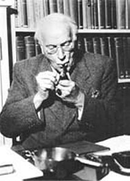
Carl-Gustav Jung (1875-1961)
Nous reconnaissons l'image que nous avons développée supra touchant à l'identité
= temps [transfert]
qui, ipso facto, vaut à son identité
à
l'espace [projection].
Par
opposition aux notions de métamorphose - expression du
transfert - et de transfiguration de la forme - expression de la
projection. Il est assez remarquable que l'on voit apparaître,
dans ce débat, le visage de Kunrath puisqu'il voit dans le sel
saturnin le
Sal Tartari miundi maioris
[Von
hylealischen Chaos,
p. 263]. C'est là que nous rejoignons kupriV
,
personnification du Tartre ainsi que nous l'avons
indiqué dans plusieurs de ces sections [cf.
tartre
vitriolé par exemple], tout dans les textes
montrant
que est un sel vitriolique qui doit être «
azoqué » par , terre
végétale.
Selon Abraham Eleazar [Uraltes Chymisches Werk,
II],
il faudrait même y voir l'arcane
qui, pour Jung,
symbolise la matière permettant les transformations [naissance
et maturation du krustalloV
marqué
par l'emploi de la rémore ou « animal glaçon de De
Cyrano Bergerac, à en croire Fulcanelli et E. Canseliet,
action
se situant au pays hyperboréen, là où
l'étoile du Nord représente le sel fixe central].
D'ailleurs Kunrath assure que le vrai SEL
des philosophes est « centrum terrae physicae
» où il n'est pas difficile d'imaginer aussi le sel fixe
central. C'est là l'artifex
par lequel la nigredo évolue vers
l'albedo - que soit l'artisan des
ténèbres, nul doute
là-dessus [voyez le f.
99 du Codex Vossianus de Leiden, partie droite
consacrée au processus de transfert] et qu'il soit
l'un
des composés du ne pose là
encore point de
problème [voyez la 2ème
partie de la monade]. Si l'on
considère les deux éléments de notre monade [rappelons
que le 1er élément découle
du cercle
croisé que l'on
sépare en sal et nitrum
; que le 2ème élément
utilise des parties de ces deux sels afin de préparer le
trinitaire Pater - † - Filius ],
il nous reste les éléments suivants qui ne sont pas sans
rappeler le salniter évoqué par Boehme : 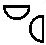
. La partie supérieure représenterait le premier Principe [issu du SAL] tandis que la partie latérale, à droite, évoque le résidu d'un sel vitriolique. On peut y voir encore une analogie avec le mandala de Boehme où deux demi-cercles s'opposent au lieu de se fermer mais la disposition diffère notablement. Profitons-en pour noter à quel point Jung semble avoir été sourd à la notion de VITRIOLEUM. Autant la notion du SAL lui était parfaitement acquise, autant celle du « guhr » de Tripied paraissait énigmatique... Dans son Psychologie et alchimie, il cite néanmoins le Ros. Phil. :« Mais la pierre ne peut être ni fondue ni pénétrée, ni mélangée, mais est faite aussi dure que le verre. » [in Artis Auriferae, Rosarium Philosophorium, Visio Arislei, p. 353]
Le lapis est bien sûr beaucoup plus dur que le verre et on ne trahira pas un grand secret en disant qu'il possède 8 ou 9 sur l'échelle de Moth [cf. chimie et alchimie]. Mais quand il cite le verre malléable [vitrum malleabile, Psychologie et Alchimie, op. cit., p. 303, trad. Buchet Chastel], il n'est que trop évident que le magicien de Küsnacht perd le Caput de l'oeuvre en présentant la
comme le lapis... [cf.
Atalanta
XV
et Sainte Claire Deville] Concluons : D'un côté, le royaume de la Joie ou de Dieu, qui est celui de la sublimation des corps, de l'expression de l'esprit ; de l'autre côté, le Tartare où l'âme du métal est incorporé à une forme impure. Et voilà que surgit le but de l'alchimie : ouvrir la prison des métaux [figurée dans les Noces Chymiques de Valentin andreae] au moyen de la clef appropriée [cf. figure XXIV] en sachant qu'il y a quatre portes et une clef par porte [cf. Aurora Consurgens, trad. M.-L. von Franz, 1957, commentaire de la Cinquième Parabole] ; c'est la première couronne de perfection ou nigredo
. Par l'agent de
dissolution qui est le dragon couvert
d'écailles - que l'on devra préalablement apprivoiser,
cf. figure IV - il faudra résoudre
les principes de l'oeuvre {-}
en leur
première matière qui est un humide
radical métallique [stade
de
l'ioV
qui
constitue la clef de notre monade]
; c'est la deuxième couronne de perfection. Nous voici au midi
de l'oeuvre mais, contrairement aux apaprences, à ce midi
correspond un soleil noir, époque où le salniter
imprime son action et où la ,
opposée au , illumine en plein
la terre dissoute [corrompue].
De
là vient que Boehme écrit :« [qu'un] serpent furieux, déchaînant sa colère, [vient] mettre la nature en pièces. » [Aurora, 15, 65, p. 206]
Le serpent est Python - anagramme de Typhon que nous connaissons bien - : c'est lui qui, armé et ordonné par Junon - Héra, recherche Léto [Latone] pour l'empécher d'aterrir. Dans cette lutte incessante du fixe et du volatil [cf. figure VII], la pierre est à l'état liquide [cf. figure XXXI] et le
est littéralement
dans la gueule du lion [nous
sommes au stade du Lion vert
qu'une gravure du Ros.
Phil.
caractérise nettement].
De cette lutte des contraires, on sait à vrai dire peu de choses
sous l'angle opératoire. L'oratoire est plus fourni sur ce point
de science. Un autre passage des Visions
de Zosime permet
à Jung de citer l'AC,
par
l'intermédiaire de Marie la Prophétesse et le Ros.
Phil.
:« Marie dit du vase hermétique qu'il est la "mesure de ton feu" et que les Stoïciens l'avaient caché (cité dans Lib. quartorum dont nous avons signalé l'importance in Theat.Chem. V, 101-186, p. 143). » [Racines de la conscience, pp. 196-197]
Et l'on trouve en complément cette note :
« De même notre pierre, c'est-à-dire l'ampoule de feu, a été créée à partir du feu. » [Allegoriae Sapientium in Theat. chem. V, 57-90, p. 67]
Remarquez que ce terme d'ampoule de feu se rapporte précisément à la bulle germinative de la gravure du Mercurius redivivus [cf. AC, I] aussi bien qu'à la frondaison de l'arbre de projection [Codex vossianus f. 99, Leiden] : l'Hermès
y est
contenu ; sans cette relation rien, au fond, de ce toute cette
histoire
de l'AC, ne peut être saisi.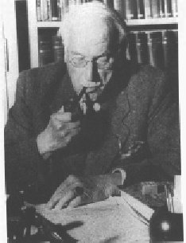
Carl-Gustav Jung (1875-1961)
Nous allons à présent revenir sur le commentaire des aquarelles de l'AC donné par Jacques van Lennep, dans son Alchimie [Dervy, 1986]. Voyons d'abord la figure XXII. Van Lennep écrit que :
« L'artiste a manifestement joué sur le sens des entrailles, celles de la terre de laquelle s'extrait la matière première et celles de l'oiseau, symbole de la pierre qui peut se multiplier. » [p. 67]
Le pélican représente le
qui se détruit lui-même en assurant la croissance de
l'androgyne hermétique ; il y a donc méprise puisque la
multiplication [en fait
l'accroissement]
est lié non point à cette idée chimérique
de l'augmentation exponentielle du « pouvoir »
transmutatoire du lapis mais tout simplement à la croissance du
cristal. Notons encore que nous avions vu un aigle, à l'origine,
dans cet oiseau mais il s'agit d'une erreur et c'est donc bien
un
pélican [toutefois, ce que
nous disons de l'aigle, sous le point de vue du symbolisme
reste
valable ; cf. supra sur le pélican].
La
figure XXXVII date du XVIe
siècle et Van Lennep en donne la version du XVe dans
son livre, p. 58 :« La volatilité ou extraction de l'esprit métallique et sa réincrudation ultérieure est alors suggérée par l'image d'un petit être (l'âme) qui s'échappe de la bouche d'un guerrier tandis qu'un autre s'apprête à le faire avaler à un cadavre dressé dans son cercueil. Le guerrier symbolise le métal dont il faut extraire la quintessence "parce que - explique le texte - l'âme est extraite par la putréfaction" ».
L'auteur passe sous ilence la scène inférieure avec les trois lézards. Faut-il y voir un symbole se rattachant à celui de la salamandre ? C'est possible comme tendrait à le suggérer le fait qu'il possède des écailles, qu'il s'agit d'una animal à sang froid, qu'enfin c'est un reptile : il possède des traits qui le rapprochent du dragon et du serpent. Sur l'extraction du
, cf. supra à
spiritus
corruptus. Le lézard vert [lacerta
viridis] apparaît
dans le tableau des symboles de Penotus [Bernardus
G. Penotus
a portu Aquitano, in Theat.
Chem., vol. II, p. 123 et cf. introduction à Ripley,
Livre
des
Douze Portes] comme un équivalent du
mercurius. La figure XXIII est
passée rapidement :« Rapprochons cette miniature [il s'agit de la figure VI], l'une où un alchimiste verse une poudre sur la pâte qu'un aide pétrit... » [p. 66]
Tel n'est pas le cas de la figure XXIV où Van Lennep va citer l'une des aquarelles du Codex Vossianus, mais sans mentionner explicitement le MS :
« L'image qui illustre le chapitre comparant la pierre au végétal, perce qu'elle est le fruit d'une croissance identique, présente un Arabe (Galien) se tenant, clé en main, près de la porte d'un château. Il détient les principes qui permettent d'accéder à la connaissance des secrets conservés dans la citadelle hermétiquement close. Il s'agit du sage qui sait ce qu'est l'arbre de vie au tronc couronné, que l'on retrouvera également dans le Splendor solis. L'arbre ou bois de vie, c'est la médecine universelle, lorsque les métaux imparfaits ont crû jusqu'à la perfection de l'argent ou de l'or. Et je leur donnerai à manger de l'arbre de vie, précise le texte. » [pp. 67-68]
Il s'agit là d'un extrait de la Première Parabole : De la Terre noire dans laquelle les sept planètes ont pris racine [in M.-L. von Franz, Aurora consurgens, p. 75, trad. La Fontaine de Pierre, 1982]. La Parabole a trait à la manière dont le sage arrivera à forcer la nigredo
. La
référence au Splendor
Solis
vaut pour l'image 6 qui nous
montre
un arbre couronné d'où s'enfuient des oiseaux. On en
connaît plusieurs versions [1,
2]. Van Lennep continue
ainsi :« Plusieurs symboles de cette miniature se retrouvent dans un autre manuscrit du XVe siècle (un de ceux qui furent négligés par Obrist), conservé à Oxford. Le couple du soleil et de la lune apparaît tenant des clés dans la tour-athanor comportant trois enceintes et trois portes (les élixirs). au centre de celles-ci pousse parmi les flammes l'arbre de vie montrant dans son feuillage le roi-or. Trois signes astrologiques sont indiqués par un archer (sagittaire), un lion et un bélier tandis qu'une âme s'échappe d'un cadavre. »
Le MS. dont parle Van Lennep est le Bodleian Library Rawl. D. 893 et la miniature évoquée présente des rapports évidents avec l'aquarelle du f. 99 du Codex Vossianus. L'ensemble est intégré dans une tour figurant l'athanor.
La partie inférieure montre le couple alchimique avec des phylactères s'y rattachant. Il s'agit des principes élémentaires
et .
Ils ne sont pas encore sublimés [sinon
ils ne seraient porteurs des
clefs de saint Pierre]. La partie supérieure est
strictement superposable, en substance, de celle du f.
99 de Leiden. Mais au lieu que la projection et le
transfert se
dégagent nettement, l'accent est mis dans le MS. Bodleian
nettement du
côté de la projection .La figure XXV est pour l'auteur :
« le thème de la floraison... Les corps décapités du soleil vêtu de rouge et de la lune vêtue de blanc, gisent près de leur bourreau, une étrange créature au corps de serpent et à le tête étoilée. » [p. 68]
Van Lennep signale que Jung avait fait remarquer que Knouphi, une divinité chthonienne à corps de serpent, avait la tête entourée de rayons. Il s'agit du serpent Chnuphis [encore appelé Khnum, Khnoumis, Chnuphis, Chnemu, ou Chnum], portant une couronne à sept rayons [King, the Gnostics and their Remains, planche III, fig. 7 cité in Psychologie et Alchimie, fig. 203, p. 482, trad. Buchet Chastel]. Ce serpent doit être rapproché d'Agathodaimon. À l'origine, il semble que Chnuphis ait possédé des traits qui le rapprochaient du dieu Ptah de Memphis : on disait de lui qu'il avait élaboré l'oeuf cosmique [contenant le
et l'unus
mundus] sur un tour de potier [toutefois,
on
peut se poser des questions sur l'unicité réelle de
Chnuphis et Khnum... Mais rien n'interdit de penser que, le
verbe num
signifiant « se joindre, s'unir », on ne soit pas
autorisé à voir, effectivement, dans Chnuphis l'uino
entre un lion et un serpent... qui produirait le taureau Khnum
de Ptah
! ]. Le rapprochement entre la figure de l'AC
et cette divinité égyptienne est d'autant plus
intéressante que nous avons été amenés, cf.
AC, I, à rapprocher la
Bubastis de l'Egypte ptolémaïque de la femme
dénudée, à la figure
XIV [Baubô].Le rapprochement est aisé entre Chnuphis et ce que nous avons dit - cf. AC, III - du taurobole mithriatique ; il suffit de revoir le bas-relief de Heddernheim pour comprendre que serpent et lion ne forment qu'une seule figure, que le vase ou cratère unit ou scelle pour ainsi dire en une entité. qui n'est autre qu'une variation sur le thème du
.
Revenons à Agathodaimon. On l'assimile à un serpent divin
ce qui est déjà concilier les contraires, au point qu'on
pourrait presque croire que Jung y a pensé en écrivant sa
Réponse
à
Job [trad.
Buchet
Chastel]
; plus sérieusement, on a donné ce nom à l'un des
Philosophes de la Science et de l'Art divin dont le nom s'est
ainsi
évhémérisé dans la Turba
où il intervient à plusieurs reprises [(
ce nom se trouve répété un grand nombre de
fois, avec des variantes multiples, telles que Agadmion,
Agadmon,
Agmon, Admion, Admion, Cadmon. Il répond encore - sent XLV de
la
2ème version - à Zimon - sermo XLI - de la 1ère
version - ; lequel est ailleurs - sermo XXXIII = sent XXXVII -
identique avec Zeunonou Zenon, auteur d'un certain nombre de dires - selon ce que dit Berthelot, on serait tenté, aussi, d'assimiler Agathodémon à Cadmus ou à Amon ... ) cf. Berthelot, Chimie des Anciens, IV]. Les uns croient que c'est un Ancien, un des plus vieux personnages qui se sont occupés de philosophie en Égypte ; d'autres disent que c'est un ange mystérieux, bon génie de l'Égypte ; d'autres l'ont appelé le ciel, et peut-être dit-on ceci parce que le serpent est l'image du monde.
En effet certains hiérogrammates égyptiens, voulant retracer le monde sur les obélisques, ou l'exprimer en caractères sacrés, dessinent le serpent Ouroboros ; son corps est constellé d'astres. Quoi qu'il en soit, il es réputé avoir prononcé ces paroles que Zosime rapporte [cité par M.-L. von Franz in Aurora Consurgens, note 18, p. 349, trad. La Fontaine de Pierre, op. cit.] :
« Ne méprisez pas la cendre qui est au fond du vase ; elle est à une place inférieure, mais elle est la terre de ton corps qui est la cendre des choses permanentes. » [in Rosinus ad Sarratantam, Artis Auriferae, I, pp. 183 et sq.]
C'est nommer le sel incombustible, fixe et central, que d'autres ont appelé la salamandre et que nous symbolisons par l'idéogramme
.
Il s'agit du principe qui asure non pas tant la germination que
la
croissance de l'or enté dans la terre foliée des Sages.
C'est donc à l'image d'une véritable graine que nous
sommes amenés ainsi qu'à l'aspect trinitaire de l'unus
mundus :« Viens à moi, viens à moi, bon fermier, Agathodaïmon Knouphi Orion le saint, qui reposes au nord et agites les flots du Nil et les unis à la mer et les transformes par le processus de vie, comme un homme... le sperme de la conjonction d'amour, qui bâtis le cosmos sur un fondement solide. » [Papyrus de Berlin 5025, in Preisendanz, Papyri Graecae Magicae, I, p. 4 cité in M.-L. von Franz, Aurora consurgens, op. cit.]
Agathodaimon est comparé ici à Cadmus ou à Hercule : c'est la personnification de l'Artiste démiurge qui façonne son oeuf philosophal et cosmique. Dans les Visions de Zosime, il est décrit comme un vieillard blanchi par les années au point que les gens qui le regardent sont éblouis par l'albedo qui se dégage de son être. Il s'agit du mercurius senex ou dragon rouge que certains ont appelé IAMSUPH [pour YAM(M) SUPH, cf. Douze Clefs de Philosophie, Clef X] :
« Je suis l'homme de plomb et j'endure une violence intolérable. » [in Jung, Racines de la conscience, p. 163, pochothèque]
Blanc de plomb, voilà la céruse [carbonate de plomb], qui nous rappelle les paroles de Zosime sur le temple d'albâtre et de céruse que l'Artiste doit s'employer à construire [cf. prima materia]. Zosime va même jusqu'à recommander d'établir le temple tumulaire avec de l'albâtre en pierre de marbre de Proconnèse [cf. Berthelot, Alchimistes grecs, III, i, 5 et III, xxix, 12, cité par M.-L. von Franz, Aurora consurgens, p. 329] : c'est l'oeuf d'albâtre que Zosime compare encore au mystère mithriatique [cf. AC, III, commentaire du bas-relief de Heddernheim] parce que Mithra passait pour l'intercesseur entre
et
: il avait donc, d'évidence, des traits de . « L'eau est cet humide radical qui représente l'anima media natura ou anima mundi (Jung ajoute en note que c'est Agathodaimon qui subit la transformation) retenue captive dans la matière ; elle est encore appelée âme de pierre ou métallique, anima aquina. Cette âme est libérée de l'oeuf, non seulement par la cuisson, mais aussi par l'épée, ou bien restaurée au moyen de la separatio, qui est la dissolution en les quatre racines ou éléments. » [Jung, Visions de Zosime, in Racines de la conscience, p. 171, pochothèque]
Il semble que Jung mélange ici deux phases de l'oeuvre qui n'ont rien à voir : en effet, l'anima mundi n'est obtenue qu'après que le spiritus corruptus ait baigné et séjourné longuement dans l'animus
.
C'est alors qu'il est transfiguré en anima, contenue dans l'oeuf
philosophal. Et ce spiritus corruptus est préparé
à l'occasion de la schizogénie des quatre
éléments, préalablement à la miseau tombeau
des corps des deux matières. En revanche, l'âme est
libérée de l'oeuf par le « glaive miellé
» évoqué sur l'un des caissons du château de
Dampierre-sur Boutonne. La separatio
dont parle Jung s'effectue donc tout au début de la cuisson [Grande coction].
Agathodaimon représente donc en substance la nature divine
secrète de la matière mystérieuse encore
appelée arcane et idéalisée sous les traits du
serpent divin Chnuphis dont la substance se renouvelle
constamment.
Mais, comme l'a noté Jung, il est paradoxal au sens où il
possède à la fois le pouvoir de vie et de mort :« Considéré comme celui qui est attaché à la mère, le héros est le dragon ; considéré comme celui qui renaît de la mère, il est celui qui surmonte le dragon. Il a en commun avec le serpent cette nature paradoxale. » [Jung, Métamorphoses de l'âme et ses symboles, p. 620 dans la Pochothèque]
Notez que ces deux stades correspondent à ceux de la matière dans le vase de nature : dans un premier temps, celle-ci, dissoute, épouse pour ainsi dire la forme chaotique du dissolvant ; dans un temps ultérieur, lorsque l'animus se dissipe, le phénix renaît de ses cendres et cette phase signale la victoire du héros sur le dragon [Jung donne en exemple la Sexta Figura du De Lapide de Lambsprinck]. Agathodaimon est encore le serpent vert indiquant l'aspect dual de la végétation et de l'inconscient : c'est dire que la croissance de l'androgyne se déroule en dehors du regard de l'Artiste, in cavernam. D'où les relations incessantes dans l'iconographie aux sépulcres, tombeaux, etc. [Ros. Phil., Codex Vossianus f. 99 , Atalanta fugiens, L, etc.] Il faut aller jusqu'à la légende d'Osiris, et sans doute au-delà encore, pour percevoir la permanence de ce mythe de la lutte de l'androgyne naissant contre le serpent :
« On trouve chez Frobénius (Das Zeitalter des Sonnengottes, 1904, p. 68) une légende où le grand serpent (né d'un petit serpent dans un arbre creux par ce qu'on appelle élevage du serpent) finit par dévorer tous les hommes... et seule une femme enceinte survit. Elle creuse une fosse, la couvre d'une pierre, y vit et enfante des jumeaux, ceux qui plus tard tueront le dragon. » [Jung, idem, p. 636-654]
Le cava ilex [arbre creux] retient l'attention de cleui qui a lu les Figures Hiéroglyphiques du pseudo Flamel puisque Flamel recommande que l'athanor soit préparé d'un arbre creux, un chêne dont la forme doit être arrondie en dedans. Quant aux jumeaux, comment ne pas y voir l'androgyne qui porte sa figure céleste dans le signe des Gémeaux [cf. zodiaque alchimique, blasons hermétiques] ? Nous avons conté toutes sortes de légendes où les mythographes ont établi la recension de ces histoires de jumeaux qui se rebellent contre leur marâtre [Amphion et zéthos, etc.], la mère terrible qui représente la formulation
de l'animus . Dans Aïon,
Jung rapproche le serpent du poisson :« Chez les gnostiques, le serpent se recommandait en tant que symbole populaire, connu depuis des temps reculés, du génie local bienfaisant, Agathodaimon, ainsi que Noûs qui occupait chez eux une place privilégiée. » [Symboles gnostiques du Soi, trad. Albin Michel, p. 204]
Le Noûs ou
ressortit du temporel et il représente les extrêmes, aussi
bien le diabolus que le fils de Dieu ; on peut le représenter
par le symbole de l'aes ustum , en liaison avec le
salniter défini par
Boehme.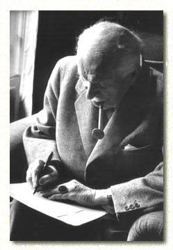
C.G. Jung sans doute vers 1958, à Küsnacht [probable photo de l'entretien avec Aniela Jaffe]
Le serpent est double et représente le principe Soufre dissous [non seulement le sulphur
mais aussi la terre du corps ].
Ces serpents [ils sont
deux, comme ceux que l'on voit
représentés dans la Prima Figura
de Lambsprinck]
sont entrelacés autour du caducée d'Hermès qui est
le principe fixe. Ces serpents ont donc un rôle qui est
fondamental : ce sont les images mercurielles du Soufre : dès
lors, on comprend qu'il s'agisse d'un symbole de sagesse et de
la
lumière ou Soufre , annonciateur de l'Anima
consurgens. Mais ce
serpent est énigmatique, secret et imprévisible, signant
par là sa nature éminemment qu'il faudra
domestiquer [figure IV]
en le garrottant ou en le tronçonnant, chose que l'on
réalise par la pétrification de son oiseau
dédié, le basilic [figure
XX et XXbis]
: autrement dit, il faut dans cette opératon réaliser ce
que les métallurgistes appellent un « étonnement
» qui fait exploser les pierres les plus dures, que l'on soumet
à un régime écossais [cf.
compendium].
Eh bien ! Il en va ainsi du Mercure et la coagulation de l'eau
mercurielle - aqua permanens - nécessite que, de toute urgence,
dans une atmosphère surchauffée, l'Artiste fasse preuve
au sens propre du terme, de sang froid [toutefois,
cela doit se comprendre avec
un grain de sel, car l'étude de notre Mercure
philosophique montre que le calorique ne doit être
abaissé que d'une manière lente, très progressive].
En somme, nous trouvons en Agathodaimon une triade où
participent au début le spiritus corruptus [résultat
de l'ouverture du
métal, vêtements souillés du
et de ], à la fin, l'anima
dépurée ,
et de manière intermédiaire en une forme dynamique, le
désir ou mercurius senex comme vieillard chenu et blanc, d'une
blancheur incroyable, à la fois solaire et lunaire : c'est une
blancheur qui fait baisser le regard tant elle illumine et qui
montre
une privation totale
d'un des éléments de l'oeuvre nécessaire à
la coagulation : l'aer comme symbole de
Zeus . Car le transfert ne sert à
rien si la projection
n'opère pas. Aussi peut-on se poer des questions ur le
caractère réputé « néfaste » de
cet aspect chthonien du serpent, alors
qu'il est au
contraire indispensable à la future réincrudation - i.e.
individuation - du .
Dans son Mysterium
Conjunctionis,
Jung reviendra en une synthèse
suprême sur Agathodaimon, en citant Ostanès :« Monte vers Agathodaimon le Grand et demande-lui aide, et sache qu'il existe en toi quelque chose de sa nature qui ne sera jamais corrompu. Et quand je fus monté en l'air il me dit : Prends l'enfant de l'oiseau qui est mélangé de rouge et étends pour l'or son lit qui sort du verre, et place-le dans son vase d'où il n'a pas le pouvoir de sortir sauf quand tu le désires, et laisse-le jusqu'à ce que son humidité soit partie. » [Jung, Myst. Cunjunctio., I, la Quaternité, p. 33-34, trad. Albin Michel, E.J. Holmyard, Kitab al-'ilm al-muktasab, etc. 1923, p. 38]
Ce « quelque chose » d'incorruptible est cette parcelle issue du spiritus corruptus qui va se transformer dans le travail en anima
, au travers pourrait-on dire de l'animus ,
celle-ci jouant le rôle d'un filtre, d'un
crible, philtre d'amour s'il en ait [sur
le muktasab, cf. supra]...
C'est
à partir de là que s'élabore, peu à
peu, le Soufre vif des philosophes ou sulphur «
azoqué » oint par l'animus et dont l'idéogramme est dès lors
conjoint à celui de Jupiter : . Le reste de l'extrait est plus
aisé à comprendre : il fait intervenir
- où il faut lire . Le lit de l'or qui
sort du
verre est le christophore ou Offerus [cf. tarot
alchimique, lame de l'(h)ermite], c'est-à-dire
celui
qui porte l'or : cristou
joroV.
Enfin, le départ de l'humidité laisse la terre
embrasée de son rayon igné
et ce départ
correspond à la dissipation de l'animus. Ce départ du coïncide avec
l'apparition de la 3ème
couronne de perfection :« Cela rappelle les sept (ou douze) couronnes de lumière brillante que le serpent Agathodaimon porte sur les gemmes gnostiques et aussi la couronne de la Sapientia dans l'Aurora consurgens. » [idem, p. 36]
Cette allusion à la couronne de la Sapientia représente l'individuation, en ce sens qu'elle manifeste la présence de la terra alba foliata [Senior, De Chemia, 1566 signalé par Jung en note 32]. En particulier, dans les allégories chrétiennes, il est notable que la couronne soit à l'image de l'humanité du Christ, i.e. de sa substance corporelle. Jung reviendra, in fine, sur cette image constellée du vase, du serpent et d'Agathodaimon, dans l'un des derniers chapitres du Myst. Conjunctionis :
« le serpent d'Hermès ou Agathodaïmon, le noûs de la face froide de la nature, en d'autres termes, l'inconscient est emprisonné dans le vase sphérique, fait de verre diaphane. Dans la conception alchimique, ce vase signifie le monde aussi bien que l'âme. » [Myst. conjunctionis, I, les Personnifications des opposés, p. 254]
Le verre diaphane ou amorphe est le vase de nature ou athanor : il est imprégné de la susbtance de l'animus mundi
qui symbolise l'inconscient [complexe
Ça
- Soi]. Ce vase est l'unus
mundus des alchimistes
qu'ils symbolisent par l'hiéroglyphe de la
mais que l'on peut tout autant représenter par celui du salniter
de Boehme : cette image a
l'avantage de différencier en tant qu'essence, la nature du vase
qui est le V.I.T.R.I.O.L.E.U.M. de la nature du composé qui est
le . Elle présente cependant l'ambiguité de
faire voir un récipient en verre [cornue,
matras scellé]
là où il faut voir un creuset empli de sa brasque :
autrement dit, il est pratiquement impossible, avec ces
informations,
de savoir si l'Artiste envisage la voie humide ou la voie sèche
[cf. supra].
Le
symbole de la †
où l'on devine le tombeau, le tumulus, le creuset [de
même que la dissolution qui
lui est, pour ainsi dire consubstantielle] est
beaucoup plus
intuitif que celui d'un vase en verre scellé où la
matière évolue. Ce point, pourtant important, ne semble
pas avoir été traité par Jung dans ses
études alchimiques. On peut néanmoins en avoir un
aperçu grâce à deux aquarelles, celle du Codex
Vossianus f. 99 et
celle à laquelle se
réfère Van Lennep - MS. Rawl. 893
- un peu antérieure puisque datant probablement du XVe
siècle. Il semble que la partie gauche du f. 99 où nous
considérons le processus de projection
soit identifiable à la voie sèche, tandis que la partie
droite - celle ou nous voyons des « esprits » se tendant la
main et assimilable au processus de transfert -
soit identifiable à la voie humide. Mais dire cela serait sans
comptert sur un point capital : dans son Myst.
Cath.,
Fulcanelli a insisté sur le fait que la voie
sèche
était divisée en deux phases principales où il a
distingué une phase
humide suivie d'une phase
sèche ou phase d'assation [cf.
symboles]. Dès lors,
il
paraît licite de voir dans la voie dite humide la phase humide
de
la voie sèche - celle où agit l'aqua
vitae permanens - et
dans la voie dite sèche, la période d'assation de la voie
sèche - celle qui est marquée par la disparition
progressive de l'esprit Mercure. [voir aussi
1, 2,
3,
4,
5,
6]C.G.
Jung
sans doute vers 1959,
à Küsnacht
Van Lennep cite ensuite Don Pernety :
« Ce bourreau porte la hache qui correspond au feu car, dit Pernety : " frapper avec la hache, c'est cuire le magistère ". » [Alchimie, p. 68]
C'est évoquer là encore l'assation mais là où nous ne serons pas d'accord avec Pernety - comme en bien d'autres points qu'ils développent dans sa trilogie [Fables Égyptiennes et Grecques, 2 vol. et Dictionnaire Mytho-hermétique] - c'est lorsqu'il assimile la hache avec la cuisson au lieu qu'il faut l'associer à la dissolution, ce qu'exprime bien, au reste, la figure XXV. Cette confusion est d'autant plus regrettable qu'elle conduit Van Lennep à poursuivre en assurant que :
« Des corps des époux martyrs doit s'écouler une eau germinatrice (aqua germinans) ou teinture qui, selon la Turba ou Senior, fera pousser ces fleurs. » [ibid., p. 68]
Les fleurs évoquées sont celles que l'on distingue dans le matras, là où le feu circulaire fait son oeuvre. Sont-ce vraiment des fleurs que l'on aperçoit ? Ne serait-ce pas plutôt des morceaux de carbunculus ou de carbo [charbon] ? Quoi qu'il en soit, il ne peut s'écouler d'eau germinative du corps des époux, mais bien plutôt et tout d'abord, cette aqua foetida dont parlent les vieux textes et qui constitue la partie importante du « vinaigre très aigre ». On voit qu'il ne saurait être question pour le moment de teinture puisque nous en sommes au stade la nigredo
; la germination ne pourra avoir lieu que pour autant que l'or
soit
« enté » dans une terre qui lui soit
appropriée [ce qu'exprime
bien mieux la figure X].
Voyons
à présent la figure XXVI. Van
Lennep est amené à la rapprocher de la figure XXII
:« Rapprochons-en immédiatement une des dernières illustrations où une femme à la peau sombre présente un caducée dans son ventre outrouvert. Cet embryon correspond à la matière minérale avant qu'elle soit tirée de la minière. L'image rappelle que selon la Tabula smaragdina, le vent a porté la pierre dans son ventre, une référence que le miniaturiste pourrait avoir habilement confondue avec le type de la Vierge prégnante laissant apparaître Jésus, le fruit de ses entrailles, mais peut-être aussi avec celui des Vierges noires » [ibid., p. 67]
Vaste sujet en vérité ! En premier lieu, nous rapprocherions davantage la figure XXVI de la figure IX si nous prenons en considération l'ouverture du corps, identique à la percée dans les profondeurs, dans l'inconscient. En second lieu, dans le commentaire intégré à la figure XXVI, nous citons Jung à propos de l'amande mystique qui décrit bien cette scène de la poitrine déchirée laissant paraître le fruit de la profondeur qui correspond ici aux Gémeaux de l'oeuvre [cf. la Vierge du livre d'Abraham Juif], où il faut voit l'androgyne. Nous ferons remarquer que le symbolisme de la schizogénie corporelle se perd dans la version du XVIe - figure XXIX - où le caducée n'apparaît plus qu'exposé et perd l'aspect numineux qu'on peut lui trouver à la figure XXVI par le fait du rayonnement extraordinaire que dégage la vierge noire. Reconnaissons que cette image est terrible car cette « Vierge prégnante laissant apparaître Jésus » apparaît bien plutôt comme une sorte d'ange noir annonçant la face d'un diabolus. Variation que Jung aurait peut-être pu amorcer sur le thème de la quaternité et du mystère du Quatrième [cf. Essais sur la symbolique de l'Esprit]. Là encore, comme pour la figure XIV [Bubastis de l'Egypte ptolémaïque] ou la figure XXV [serpent lion Chnuphis], nous serions tentés d'en revenir aux sources égyptiennes et d'y voir une représentation de l'antique Isis qui tient à la fois - en ce caducée et ces serpents - l'hexagramme
de Salomon,
symbolisant l'anima
consurgens émergeant du
chaos, c'est-à-dire du
spiritus corruptus, dont la dépuration
s'opère au sein de l'animus . Ainsi cette vierge
noire est-elle une variation sur
le thème de l'androgyne tel qu'on le voit à la figure
I :« Celles-ci [Vierges noires] dérivaient de divinités chthoniennes invoquées dans les rites de fécondation et de parturition et qui doivent être mises en rapport avec le mythe de la terre noire, la terre féconde, dont il est question dans l'Aurora. On peut associer cette créature à la reine du Midi, l'épouse de Salomon qui était noire et qui dans le texte est identifiée à la Sagesse, mère de la pierre philosophale, venue de l'orient, comme l'aurore qui se lève. » [ibid., p. 67]
Van Lennep fait ici allusion à un commentaire de M.-L. von Franz se rapportant au chapitre V de l'AC, la Stimulation des Insensés [trad. Fontaine de Pierre, p. 71] où le texte concernant la Sagesse est en rapport direct avec une allégorie sur la prima materia que l'ignorant foule au pied sans le savoir ou rejette comme matière vile. Il est essentiel, ici, de saisir le parallèle entre la Sagesse et la Pauvreté [cf. le commentaire de la figure XXV] : la pauvreté représente le dépouillement de l'esprit qu'il faut comprendre comme la dépuration du spiritus corruptus [revoyez supra et la figure 8 du Ros. Phil.]. Il s'agit « d'être dépouillé de soi-même et revêtu de l'Éternité de Dieu » : la materia prima considérée au sens global du terme [il y a plusieurs « materia prima »] doit être ointe de l'esprit sain, i.e. l'animus, chose qui ne peut se réaliser que dans le vase de nature afin que la matière soit revêtue d'un nouvel habit qui la transformera en corps glorieux, idée que l'éclat de la Vierge noire de la figure XXVI exprime parfaitement. Notons encore que cet aspect terrible a sans trait à un reste archétypal de l'image de l'antique Grande Mère [qui s'apparente à la « Mère folle » de Fulcanelli où l'on peut retrouver le dragon de la caverne qu'évoque Jung dans ses Métamorphoses de l'âme, VII, le Sacrifice, note 91 ; cf. aussi la Légende Sifrit à la peau de corne], signalée par Jung dans les Aspects psychologiques de ses Racines de la Conscience [p. 141, n. 30, éd. Pochothèque]. Onne peut s'empécher de trouver dans cette Vierge noire le pendant occidental de la Kali orientale ou de l'Hécate grecque : l'ombre du diabolus nous est dévoilée in corpore virgine et nous épargne cette hypocrisie phénoménale de l'Église qui faisait dire fort justement à Jung :
« On est allé jusqu'à supprimer à peu près ou même totalement le démon, ce qui a conduit à introjecter dans l'homme cette figure métaphysique qui constituait auparavant une partie intégrante de la divinité, si bien que l'homme est devenu le porteur du mysterium iniquitatis... » [idem, p. 142]
Ce n'est pas tout : la figure XXVI nous permet de rejoindre le sacrifice mithriatique - taurobole, cf. supra voir mythe d'Attis et de Cybèle et l'AC, III pour le bas-relief de Heddernheim - via les dadophores sont Jung ajoute en note :
« ... portant leurs torches tantôt droites, tantôt abaissées se retrouvent aux portails des cathédrales chrétiennes sous les traits des vierges sages aux lampes droites et des vierges folles aux lampes renversées. Voir notamment, à Notre-Dame de Paris, les piédroits du portail du Jugement dernier. » [ibid., le symbole de la transsubstantation, p. 264 ; la note est de Yves Le Lay qui a assuré la traduction des Racines de la Conscience, Buchet-Chastel, 1971]
Ce portail du Jugement dernier est précisément celui qui fut l'un des principaux sujets du Myst. Cath. de Fulcanelli, avec la série des bas-reliefs des Vices et Vertus [cf. Gobineau de Montluisant]. Les textes rapportent que la Vierge fut préservée de la corruption dans son tombeau : en tant que vase terrestre du spiritus [notre vase de nature], elle préside ainsi à l'arche d'alliance entre les opposés de l'oeuvre {
-},
après que ceux-ci auront été dissous en forme de
corps glorieux {-}. Entre-temps, que se
passe-t-il dans le vase ? E.
Canseliet, dans la
Sirène noire et enceinte, se risque à
cette explication :« Le livre, lorsqu'il est fermé, symbole de la Vierge, noire et enceinte, est maintenant ouvert, qui annonce la Vierge blanche et portant l'Enfant divin sur son bras... Je suis noire, mais belle - Nigra sum sed formosa - déclare, au premier chapitre du Cantique des Cantiques, la Grande Dame... » [Deux Logis alchimiques, pp. 257-258]
Canseliet fait référence au Ct 1:5. On peut voir ce double aspect dans cette vierge de la figure XXVI dont le corps [= la terre
] est noir tandis que le vêtement [= l'air
puisque que l'habit ressortit d'une épiphanie spirituelle]
est blanc. Les ailes, vertes, sont là pour montrer de quelle
manière doit s'opérer la métamorphose de la terre
noire, disposée aux pieds de l'apparition céleste.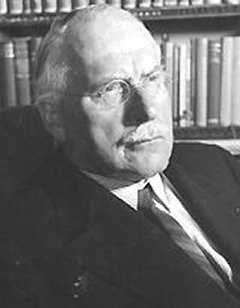
C.G. Jung dans son bureau, à Küsnacht, vers 1950
La figure XXVII n'a guère inspiré Van Lennep :
« Une composition circulaire consacrée aux sept planètes démontre une évolution sensible par rapport au traité de Constantinus qui avait développé ce thème. » [p. 59]
Allusion est faite au Bouc der Heimelichden van mire vrouwen alkemen [fin du XIVe siècle] ou Livre des secrets de ma dame alchimie. Barbara Obrist lui a consacré une étude [Constantine of Pisa: The Book of the Secrets of Alchemy : Introduction, Critical Edition, Translation and Commentary, Brill Academic Pub, 1990] assez récente si l'on met à part son livre, déjà signalé, sur les Origines de l'Imagerie alchimique, etc. [op. cit.]. C'est dans ce passage que l'on trouve une relation - indirecte - à la figure XXVII :
« Les dieux des métaux sont campés dans deux séries de six cercles. Saturne présente un triple visage et Hermès porte la mitre... Le coq, l'aigle, le lapin et le cerf qui sont ainsi dessinés, ne résultent certainement pas d'un choix arbitraire, mais le texte n'en donne pas le sens. » [p. 51]
La présence de ces éléments thériomorphes ne variera pas au cours des âges : nous les retrouverons, inchangés, dans les écrits alchimiques de Fulcanelli et d'E. Canseliet. Des quatre animaux cités, seul le lapin peut encore poser des problèmes sous l'angle de la symbolique : nous l'avons évoqué lors de l'examen de la figure I [cf. Ac, I et 1, 2]. Sur la figure XXXI :
« Cinq aigles viennent boire dans un récipient posé sur un feu qu'active l'alchimiste. Selon la correspondance échangée entre un alchimiste de Lausitz et un médecin de Mayence jusqu'en 1506, dans laquelle ils interprètent quelques illustrations de l'Aurora, les aigles correspondraient au mercure. » [p. 59, in Ganzen müller, Beiträge zur Geschichte der Technologie und der Alchemie, Weinheim, 1956, pp. 219-227]
Ces aigles correspondent au secret des sublimations philosophiques qui marquent le début de la phase d'assation où le cygne est rôti. Nous terminerons la recension de Van Lennep par la figure XXXII ; Barbara Obrist n'a pas évoqué cette miniature parce que :
« ... sa méthode, qui veut se limiter à expliquer l'iconographie par les textes immédiats, ne lui en livra pas la clé. Pour l'imagerie alchimique, comme d'ailleurs pour l'iconographie en général, l'angle d'approche ne peut être aussi restreint. » [p. 59]
Nous en convenons volontiers. Remarquons que Van Lennep donne une version de la miniature du XVe siècle, au lieu que la nôtre est postérieure et doit dater du XVIe. Quelques différences sont repérables :
« ... la mniature montrant un homme, avec un pansement autour du crâne, qui touche la tête d'un autre personnage. Le blessé serre un couteau entre les dents. Il tend une main vers le creuset que tient cet autre. » [p. 59]
Il semble que le crâne de l'homme, dans notre version, soit coiffé d'une calotte. Peut-on comme l'affirme l'auteur, faire ici le parallèle entre le latin testa - crâne - et la « terre cuite » ?
« ... pour les philosophes, la terre correspondait à la matière dont ils extrayaient leur mercure, par le feu. Ce mercure, métal liquide et froid, n'est pas autrement désigné ici que par le cerveau rapporté par le texte à l'eau froide. Ce cerveau est contenu dans le crâne, sa coquille que signifie également testa ... De cette manière, il fallait, selon Hermès, prendre le cerveau parce qu'il était la demeure de la partie divine. » [p. 59]
Convenons, là encore, que l'allégorie n'est pas facile à saisir. La miniature est divisée en deux parties qui semblent parler du même sujet, comme toutes autres miniatures. À droite, l'homme - en tant que corps - est conduit au bûcher afin d'être réduit en cendres et dépuré. À gauche, c'est l'esprit ou l'âme - partie divine - que l'on cherche à capter. Le problème, en l'occurrence, est de savoir si cet acte est pratiqué dans un but thérapeutique ou sacrificiel. Dans le premier cas, il faut guérir l'homme de son spiritus corruptus en le passant sous la †. Dans le second cas, il faut capter l'anima
en brisant
la
coquille et on est alors ramené au mythe de Zeus dont le
crâne est fendu par la hache d'Héphaistos.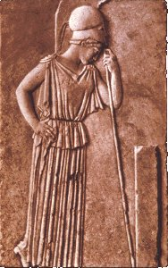
Athéna, musée de l'Acropole, Athènes
| Invention
de
la materia prima, prise au coeur du gîte minier. Cette
scène fait l'objet de maintes reproductions, par exemple celle
du Splendor
Solis, planche
V.
C'est là que
l'Artiste vient chercher la matière métallique. Adolphus
en parle dans l'Azoth
: il décrit une caverne, située
à Rome, dans laquelle il reçoit l'illumination... Ces
récits ne sont pas rares, à commencer par la
découverte de la Table
d'Emeraude
du pseudo Hermès. Mais poursuivons : Adolphe écrit : « Mais implorant l’aide de Dieu, j’avisai une petite lumière loin de moi au plus profond de ma caverne, laquelle s’augmentant petit à petit s’approchait après de moi, & destitué de force j’hésitais & lors je vis un certain homme très lucide, comme aérien récompensé d’une Couronne Royale ornée partout d’étoiles [...] » [Azoth] Ce texte peut être mis en relation avec ce qu'écrit Pernety de la matière première des Sages, chap. De la première matière, Fables Égyptiennes et Grecques, t. I : « C’était moins un corps qu’une ombre immense, moins une chose, qu’une image très obscure de la chose, que l’on devrait plutôt nommer un fantôme ténébreux de l’Être, une nuit très noire, et la retraite ou le centre des ténèbres, enfin une chose qui n’existe qu’en puissance, et telle seulement qu’il serait possible à l’esprit humain de se l’imaginer dans un songe. Mais l’imagination même ne saurait nous le représenter autrement que comme un aveugle-né se représente la lumière du Soleil. » C'est donc le passage de l'obscurité à la lumière qui nous est indiqué sur cette peinture, d'avantage que l'appropriation de quelque matière, certes précieuse, mais dont l'acquisition n'est nullement suffisante pour faire l'oeuvre. On lira utilement la Génération des métaux ou Bergbüchlein - avec des notes de Gabriel-Auguste Daubrée sur ce sujet. A droite, l'allégorie de la scène : le pélican nourrit sa portée de sa propre matière. Jung [Racines de la conscience, Visions de Zosime, p. 198] indique que « Le Christ lui-même est le pélican qui déchire sa poitrine pour nourrir ses petits » avec en note une réf. à l'amandier, amugdaloV, surnommé le père du Tout, « ... portant en lui le fruit parfait qui pousse et se meut dans la profondeur. » Est-ce une relation aux cendres de l'Aigle, qu'il faut lier au sang du Lion ? En ce cas, c'est de la minière des Sages qu'il s'agit : c'est la mine - au sens propre du terme - de l'eau dont l'Artiste a besoin pour ses sublimations. Ce que les alchimistes appellent « donner des plumes à l'aigle ». Pour confectionner cet amalgame et aider l'aigle à prendre son envol, il convient que l'Artiste lui ajoute la matière du dragon dont parle Michel Maier dans l'emblème L de l'Atalanta fugiens. La matière que le moine vêtu de rouge semble manier avec précaution et respect doit donc représenter ce sel mercuriel dont Salienus parle dans la Toyson d'or - Salienus pour prêtres Saliens, chargés du culte de Mars, au nombre de douze. Enfin, on rapprochera cette figure XXII de la septième figure du De Lapide Philosophorumde Lambsprinck. On trouve une gravure beaucoup plus moderne d'inspiration, dans la même série que celle de la figure extraite de Der Hermetische philosophus [in-8° Franckfurt en Leipzig: Verlegts Johann Gabriel Grahl, Buchhandler in Weinn 1709], dont on a un autre exemple, figure XXIV. 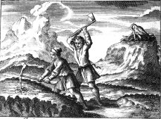 Pour
finir, ajoutons qu'Emma Jung [la Légende du Graal,
complétée par M.-L.
von Franz, trad. Albin Michel 1988] rapporte que la
légende du phénix
[cf. le poème de
Lactance] fait
mention d'un oiseau qui amasse dans son nid une résine
inflammable dont
il nourrit ses petits, oiseau qui ajouterait aux traits du
phénix celui
du pélican : Iselin en fait une sorte de serpent ailé.
|
 FIGURE XXII |
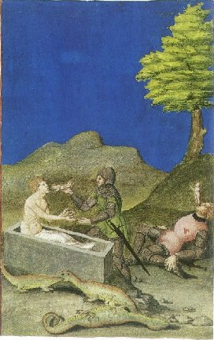 figure XXXVII |
Cette
figure
ne date point du XVe siècle : J. Van Lennep
donne la version « originale » dans son Alchimie,
p. 58. Nous
venons d'évoquer le culte de Mars. Il semble que nous le
retrouvions sur cette autre aquarelle. Admirons d'abord le
décors : le fond bleu doit être remarqué car c'est
un ciel d'airain. L'arbre dont une branche est sciemment
cassée
accentue la nuance azurée par le contraste coloré et
imprime une tonalité nettement orientale à l'ensemble.
Mais que dire de la scène qui nous est offerte ! C'est une
résurrection : nous en avons vu d'autres dans les
emblèmes des Douze
Clefs de
philosophie du pseudo Basile
Valentin, dans la Philosophia
Reformata
de Mylius et, bien sûr, dans le Rosarium
Philosophorum.
Dans cette représentation médiévale, le Mercurius
senex est tué par un chevalier qui donne l'âme au corps.
En bas, on trouve une scène où gît un reptile
tandis qu'un combat se déroule entre deux autres lézards.
À droite, le Mercurius senex défaillant dont l'esprit se
volatilise ; à gauche, l'Âme peut désormais
réintégrer le Corps. Le médiateur est
représenté par un soldat vêtu de côtes de
mailles dont le glaive a terrassé le Mercurius : il
s'apprête à infuser la vie au corps mort du Lazare [on
reverra ici utilement le Sermon
sur la Mort
de Bossuet]. Contrairement à d'autres cas, le thème de
l'épée n'est pas relié, ici, à la
putréfaction ou à la dissolution, mais bien à la
résurrection : il est vrai qu'elle passe par la destruction
mais
le Mercure est, comme l'indique Jung dans ses Racines
de la Conscience,
aussi bien un donneur de vie qu'un destructeur de la forme
antique. En
bas, ces trois lézards sont à l'image de la
Trinité : le Corps mort, et au-dessus, l'Âme aspirant
l'Esprit par son caput. Le lézard, dans ce contexte,
apparaît comme ambigu contrairement à la coutume qui en
fait l'ami de la maison : son symbolisme est bien sûr lié
directement à celui du serpent et il faut aussi y rattacher le
kamaileon
ou lion de terre
qui permet d'établir la liaison entre et . C'est en
somme l'image de l'a
et de l'w
de l'oeuvre qui débute par une dissolution et s'achève
par une coagulation : SOLVE ET COAGULA. |
| L'oratoire
et
le laboratoire se complètent dans cette scène. Les
couleurs frappent d'abord : à gauche, le rouge
et le vert ;
à droite le gris violet. Au fond, notre ciel azuré,
retrouvé dans bien d'autres scènes de l'AC
et qui est
l'annonce de l'Aurore dans la mesure où l'on peut poser
l'équivalence entre le bleu et la et ce
fond bleu en est comme la projection sublimée.
Jung rattache le rouge au carbunculus [escarboucle des Sages]
et
rappelle que Goethe lui donnait une connotation spirituelle :
nous
pouvons y voir le . Quant au
vert, il
est attaché au concept de naissance ou du moins à l'arch qui
détermine « l'action
d'incubation
du spiritus sanctus » expression
remployée de Jung qui la cite dans ses Visions
de Zosime [les
Racines de la
Conscience, op. cit., p. 160]. On
y retrouve
l'image du Lion vert ou Mercurius
vitae,
celui qui va provoquer dans un premier temps la dissolution
métallique avant sa résurgence, comme les montrent les
images du Ros.
Phil., cf. AC, I.
Les deux ouvriers s'affairent sur la prima materia d'où ils
espèrent tirer le levain qui pourra lever la pâte de
Mercure, c'est-à-dire précipiter la fermentation
aurifique : le mélange de vert et de rouge procure le jaune
: .
Manifestement, ces ouvriers ne sont point des maîtres, et
c'est
à droite qu'il faut chercher Senior qui s'affaire à son
marteau dans lequel d'ailleurs on devine un maillet,
équivalent
de la massue d'Hercule. On en a fait le symbole de la
puissance du
temps : c'est nommer Cronos . Dans le
même
temps, ce maillet a des caractères qui le rapprochent de la
foudre et donc de Zeus . Si nous
reprenons
la Monade
Hiéroglyphique de John Dee, un
symbole permet
de disposer une liaison de cabale entre Cronos et Zeus : 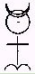 Si
nous examinons la partie inférieure du Mercurius, à
droite, voici l'image de Saturne. À gauche, une rotation
de -p/2
procure l'image de
Jupiter, cf. pour le reste notre monade
hiéroglyphique.
Notez que la présence du Soufre dans le cercle mercuriel
dénote qu'il s'agit là non pas du Mercurius mais de
l'anima, cf. partie I.
Voyons
enfin la couleur gris du vêtement de Senior qui dénote la
mixtion entre
et
: cette
couleur annonce selon Pernety . |
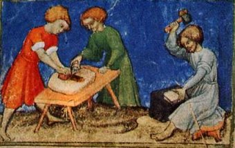 figure XXIII |
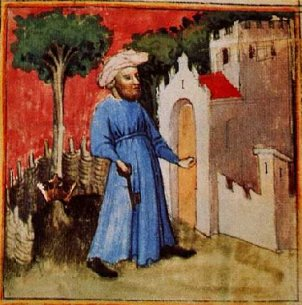 FIGURE XXIV A propos de l'Hermetische
philosophus [Ferguson, I, p. 395]
HERMETISCHE (Der) Philosophus,
oder Haupt-Schlüssel,
derer zu der Chymie gehörigen Materien, Ursprung, und
Herkommen aller
Metallen und Mineralien. Das ist: Ein Weegweiser und
Summarischer
Bericht, wie nemblich das Universale Generalissimum, gleichwie
die
Metallen und Mineralien durch die Astra gewürcket, aufs Wasser
und
Erden ihren Leib endlichen durch viele Jahre nehmen, und in
mancherley
Gestalt formiret werden, per Artem inner kurtzen Zeit zu
erlangen sey;
und wie man folglich aller Metallen und Mineralien Eigenschaft
auff das
leichteste erkundigen und erforschen solle. Allen Seissigen
Nachforschern der Natur zu gefallen an vielen Orthen dieses
Büchleins
klar beschrieben, und in sieben Tractätlein bestehend zum
Druck
befördert. Franckfurt und Leipzig, Verlegts Johann Gabriel
Grahl,
Buchhandler in Wienn, 1709.
8°. Pp. [22, including frontispiece] 319. [1 blank; 4 Register]. Title red and black. Frontispiece in two compartments. The volume contains seven distinct tracts. - Aureus liber de Principiis Naturae et Artis, p. i. - Definitio Alchymiae, p. 54. - Phoenix Alchymiae, p. 75. - Artephii, von der geheimen Kunst und Stein der Weisen Geheimes Buch, p. 122. - Joannis Garlandii, seu Hortulani Compendium Alchimiae, oder: Erklärung der Smaragdischen Tafel Hermetis, Trismegisti von der Chimia, p. 167. - Die Smaragden-Tafel, p. 168. - Bernhard von der Marck und Tervis. III. Bücher von der Hermetischen Philosophie der Weisen, p. 193. - Tabula Smaragdina, p. 213. - Alanus, Dicta, darinnen das Geheimnufs Philosophischer Art an Tag gegeben wird, p. 304. An edition of Frankfurt, 1690, 8°, is quoted in Jacob Lcupolds Prodromus Bibliothecae metallicae, 1732, p. 70. Certain of the tracts seem to have been reprinted from the Hermetischer Rosenkrantz |
Deux
parties
se dégagent : à gauche, un arbre, ceint d'une
couronne vers sa base, enclos dans une espèce de treillis.
À droite, une citadelle ou un palais. Un personnage, vêtu
de bleu, tient une lourde clef et semble perplexe. Observons
d'abord la
partie gauche : nous avons déjà vu ce treillis, dans la figure
XI.
Il correspond à l'enceinte virtuelle du vase de nature dans
lequel la Grande Coction débute ; rappelons qu'à la
figure XI, nous en sommes au stade de la dissolution. Ici,
rien de tel
: le couple -
s'est transformé en un bel arbre qui, toutefois, ne porte
point
encore de fruit. Observons encore que le fond du ciel a changé
et qu'il est devenu couleur de qui annonce
le FEU
mais aussi le crépuscule ; manifestement, on se situe à
l'aurore comme en témoigne la 1ère couronne de
perfection. Abordons l'analyse : l'arbre est celui du Mercurius
Redivivus,
cf. AC I
que
Samuel Norton donne à voir dans son Alchymiae complementum et
perfectio.
La 1ère
couronne témoigne de ce que la noirceur [nigredo] a
été obtenue, c'est-à-dire la conjonction
provisoire des contraires qui reste végétale et n'est pas
encore minérale. C'est donc d'un arbore vitae qu'il est
question
: c'est l'axe du monde en tant qu'il met en
communication qu'il faut voir là comme
principe de la primitive, et qu'il
faut voir
comme ciel firmamental ou . L'enclos
symbolise
le soleil noir des alchimistes ou qui
exprime,
précisément, cette nigredo. Nous retrouvons ainsi les
trois principes de la bulle germinative du Mercurius
Redivivus,
cf. AC
I.
S'y ajoute le principe pontique avec le feu du ciel - rouge -
qui
évoque Héphaistos : c'est la †
de la Passion
que nous
évoquons au § VI.
Monade et qui
représente la liaison entre TERRE et CIEL. À droite, le Palais
fermé du Roy tant de fois
évoqué dans nos pages, par relation au traité du
Philalèthe. Cette porte close est semblable à celle de
l'emblème XXVII de l'Atalanta
fugiens
et présente aussi des caractères congénères
d'un bas-reliefs de Notre-Dame de Paris [cf. Gobineau
de Montluisant, l'Inconstance
ou entrée du sanctuaire]
avec ce commentaire de Fulcanelli qui prend tout son sens : « [Le vieillard]...vient d'arracher le vélum qui en dérobait l'entrée aux regards profanes. C'est le premier pas accompli dans la pratique, la découverte de l'agent capable d'opérer la réduction du corps fixe, de le réincruder, selon l'expression reçue, en une forme analogue à celle de sa prime substance. » L'inconstance est symbolisée par cet arbre qui ne porte pas encore de fruits et qui résulte de la mixtion des principes de l'oeuvre par la médiation du feu secret. Cet arbre est mutable comme cela est montré sur l'un des caissons de la galerie du château de Dampierre - sur-Boutonne. C'est l'acquisition de la 1ère couronne de perfection dont parle aussi Lambsprinck dans son De Lapide Philosophorum au commentaire de la Nona figura : « comprends que le premier degré de la teinture est réellement apparu. », cf. AC, I. Quant au sanctuaire, il rappelle le temple dans lequel Zadith médite à la figure V. Il s'agit de l'athanor où la matière s'accroît à l'image du spiritus du moine. Voyez ici la figure VIII sur la nourriture à donner au Rebis. La clef est le SCEL de l'oeuvre et recouvre le secret du dissolvant permettant à l'Artiste de cuire ses matières dans l'oeuf :  La
Clavis se compose de 1 part de nitrum
et de
½ part de . On remarque le
cercle double, cf. notre monade
là-dessus.
Au centre, la longue barre horizontale manifeste
le caractère
permanent de l'Eau des Sages fondé sur l'équilibre
du
calorique. À droite le quadratum .
L'ensemble forme le symbolum du vitriol
vert ou LEO
VIRIDIS. Il ne s'agit pas, on l'aura deviné, du
sulfate ferreux
vulgaire bien que ce soit une substance d'essence
.
Elle
est tout autant d'essence .
E.
Canseliet, dans
ses Deux Logis alchimiques, a écrit :« ... la matière s'ouvre à l'issue d'un violent combat qui, du sentiment des auteurs, est la clef des " prisons métalliques ". Voilà pourquoi, sans doute, l'idée de clef, qu'éveille la racine grecque KLEI, KLE ou CLE ... reparaît phonétiquement dans les diverses traductions du nom massue. C'est, en latin, clava ; en espagnol, clava ; en italien, clava ; en anglais : club ; en allemand, kolbe, de klobe, par métathèse. » [le château du Plessis-Bourré, chap. l'Homme-Lion] La clef - kleiV - est détenue par le gardien du temple, c'est-à-dire le prêtre, épithète du
dans nombre de textes. C'est lui qui répandra l
bonne nouvelle - kleoV
- lors de la résurgence des Soufres, quand le
sulphur et
la terre préparée ou rhtinh
[résine de
l'or] auront
donné naissance au lapis. On trouve une image à
peu
près semblable à la figure
XXIV
dans le volume Der
Hermetische philosophus
[in-8°
Franckfurt en Leipzig: Verlegts Johann Gabriel
Grahl, Buchhandler in
Weinn 1709]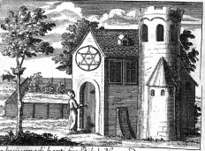 remarquez
en particulier la
couronne disposée dans l'arbre. Notez encore l'étoile
de
Salomon qui témoigne d'une influence R+C probable ;
voyez enfin
l'aspect général de l'église qui évoque
plutôt l'athanor, avec sa tour en forme de petit
campanile et, au
fond, une clôture qui rappelle le cerclage de l'arbre
de la figure XXIV.
|
| Dissolution
des
soufres et ouverture des métaux, voilà ce qu'exprime
la décapitation du et de la
par le principe pontique . À
ce
stade, notons qu'il ne s'agit pas du Mercurius en ce
sens que la figure XXV exprime le début de la Grande
coction ;
c'est donc le premier Mercure ou Cronos, qu'Artephius
nomme l'antimoine
saturnin, qui est représenté par ce personnage
thériomorphe dont la queue est serpentine, la tête
constellée et le corps couleur de
[assonance ion - ioV].
À
droite,
dans le matras ouvert, des susbtances noirâtres
évoquent le poussier de charbon dont parle Fulcanelli
au tome I
de sa trilogie, poussier qui signale la dissolution
totale de la
matière, c'est-à-dire la sublimation du Soufre,
transformé en
[sulphur]. Tout
dans ce
désigne en vérité le daemon
ou genius
sans qu'il
soit, compte tenu du contexte, possible de la
déterminer en
bonne ou mauvaise part. En effet, le Mercure est
d'abord l'instrument
de la dissolution [i.e. nigredo ]
avant
d'être celui de la régénération [i.e.
réincrudation ]. Il
est clair, toutefois, que nous sommes placés à la
phase
de nigredo. C'est l'époque de la « grande circulation
» de la matière à en croire Urbigerius : c'est ce
feu circulaire que l'on distingue en bas du matras.
Sur la figure du
diable, nous invitons le lecteur à revoir le quinzième
arcane majeur de notre
tarot alchimique. On relève
quelques similitudes : ses ailes bleues sont la
couleur de notre daemon
; son hermaphrodisme se retrouve dans la queue
serpentine. Mais
l'épée est remplacée par la hache de Cronos. Sa
coiffure est d'essence lunaire au lieu qu'ici elle se
pare de
l'étoile à six branches, rappelant la digamma de
Salomon , cf. AC,
I.
Enfin, les diablotins sont remplacés par le sulphur et
le sel,
mis au creuset. Quoi qu'il en soit, tout ici évoque le
domaine
de l'enfer et le fond de gueule
appelle le
mot : V.I.T.R.I.O.L.U.M. Voilà nos Soufres dans un
état
bien lamentable, obligés qu'ils sont de « tirer
le diable par la queue
» [penia
piezomai]
: en effet, ils sont littéralement pressés de
pauvreté. La Pauvreté représente cet état
où nos matières perdent leurs vêtements royaux pour
paraître nus devant leur créateur. Ils sont alors « revêtus
de
l'éternité de Dieu » [Matt. 19,
29] ou aqua permanens. Opération que Fulcanelli nomme
l'Hypérion de l'oeuvre [uper ion en décomposant, i.e.
entourant
la violette, cf. duodecima
figura de
Lambsprinck in De
Lapide
Philosophorum, pour signifier l'ionosphère
ou
sphère de la violette qui désigne l'Air des Sages
par cabale]. C'est là que le spiritus
sanctus accompagne le
filius
dans cette progression de la spiritualité qu'il nous
faut voir
sous le trait paradoxal de la dissolution. Mais
derrière la
nigredo se cache la dépuration ou albedo. De là les
traits de cabale des traités qui nous parlent de
pauvreté, d'indigence, etc. [cf.
en
particulier les traités de Zachaire
et de Bernard
le
Trévisan]. La
grande éclipse de et de
de Lulle correspond à ce jeûne du coeur
évoqué par des textes taoïstes. Le diable [diaboloV]
n'est en fait apparu que tardivement comme tel, dans
les Livres saints
et chez les Pères de l'Eglise [Job, 1, 6 ; Ps 108, 6].
Il
désignait auparavant « ce
qui
désunit », c'est-à-dire le moyen de la
dissolution. Par extension, diaboulion
qui prend le sens de « délibération ou conseil
» se rapproche du Mercurius : on sait qu'à chaque fois
qu'il est question de réunion dans les textes, de
conseils, de
discussions entre philosophes - cf. Splendor
Solis
- c'est le moyen de dissoudre les matières qui fait
l'objet du
discours. La Turba
en est
l'exemple type. Ce n'est pas tout : DiaboloV
peut être
compris comme dia qui exprime l'idée de « passer à
travers », de fendre [décapitation,
dissolution,
etc.] en séparant et comme boloV
[tomber dans un
filet, jet de filet :
Héphaïstos n'est pas loin]
où l'on voit une seconde idée, celle, contraire à
la précédente, de rassemblement : c'est
précisément la raison pour laquelle notre diable, dans
la figure XXV, se trouve
couronné.
Situation où l'on peut, par le terme diadew,
retrouver l'acception de « tête ceinte d'un diadème
» ou celle « d'âme emprisonnée dans le corps
». La figure du diable exprime donc deux
concepts a priori
antinomiques qui correspondent à un principe
élémentaire de complémentarité : les
alchimistes disent qu'ils dissolvent leur matière du
Mercure,
par le Mercure et qu'ils font l'oeuvre par la
médiation d'UN [cf.
Tabula
smaragdina].
On trouve semblable concept dès la Chrysopée de
Cléopâtre et il se retrouve chez Jung, dans l'UNUS
MUNDUS [cf. Mysterium
conjunctionis,
t. II, trad. Albin Michel 1982]. Tout cela
devrait être
développé dans le §VII
de notre commentaire à l'AC. Dans notre Monade,
on voit comme le
diable se trouve, pour ainsi dire, à la croisée †
entre et .
Il s'agit là d'un haut point de cabale hermétique tout
autant que de psychanalyse dans la mesure où, on
l'aura compris, représente le symbole du transfert
tandis
qu'il convient de considérer en
celui de
la projection. Le couple { - } représente le levier, le moyen ou
timon entre
ces deux grands ennemis et l'eau ignée
[hexagramme de
Salomon] en
constitue la forme substantielle même. L'opération du
Caput, où le couple { - }
est pris comme sujet trouve son objet dans
l'étoile et sa sublimation, i.e. la
réincrudation ou
individuation au sens où l'entend Jung, dans le lapis.
|
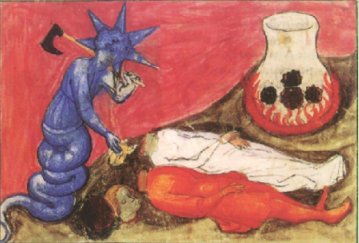 FIGURE XXV |
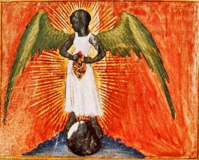 FIGURE XXVI |
On
dit
que l'ange en tant que messager est toujours porteur
d'une bonne
nouvelle pour l'âme. On dit encore qu'il préside à
la conversion, à l'union ; qu'il participe au
mouvement du
spiritus sanctus ; qu'en somme il joue le rôle de
médiateur. Aussi peut-on s'étonner de l'allure
présentée par cette figure
XXVI
où l'ange a
quelque chose de terrible. Ce n'est pourtant pas
l'ange de l'Apocalypse
que nous connaissons bien pour l'avoir déjà vu
plusieurs
fois en ces pages... Non. Nous sommes obligés de
rapprocher
cette image du diable : car la scène semble se situer,
au plan
chronologique, en droite ligne de la précédente. Notre
messager est juché sur une terre noire. Jung nous
rappelle
à propos que chez Olympiodore [in
Psychologie et Alchimie,
p. 408, les
Conceptions du salut
dans l'alchimie] la terre noire
renferme le «
maudit par Dieu » [qeo -kataratoV].
Cette
terre noire, d'ailleurs, est au fondement même de
l'alchimie puisque certains y ont vu l'Egypte ou pays
du limon noir :
voilà qui nous ammène à évoquer
l'étyologie du mot alchimie, très controversée au
demeurant. Il s'agit des deux mots arabes al kimiya,
al étant un
article défini, le sens généralement admis pour
kimiya est terre noire, nom qui peut être
rapporté
à l'Egypte elle-même (si l'on en croit Plutarque : Cemia,
in Isis et Osiris,
33) ou à la noirceur, qui est un des stades de
l'oeuvre
alchimique. Certains érudits comme Kircher ont fait
dériver le mot alchimie de « pays de Cham »,
expression qui qualifiait autrefois l'Egypte ; revoyez
ici l'une des
images clef du Mystère
des
Cathédrales
de Fulcanelli qui montre le sphinx en arrière plan
d'un fouillis
de cornues et de corbeau. Plus conforme à la cabale
hermétique, nous trouvons Alexandre d'Aphrodisie,
commentateur
des Météorologiques d'Aristote [dont
on rappelle que la suite du 4ème
Livre est pseudépigraphe] : le mot de chimie viendrait
de chem
[couler, fondre] qui prendrait tout son sens, rapporté
au feu
secret des Sages. Cette terre noire représente la
cadmie ou
l'antimoine que d'autres nomment la tête de corbeau.
On
comprendra sans doute mieux en dressant l'équation
suivante
: + = . Voyons à
présent l'ange : il porte un objet qu'on pense être
une
amande [cf. notre
tarot alchimique,
arcane XXI].
Cette amande représente le lapis : Jung, dans le
commentaire aux Visions
de Zosime [in
les
Racines de la
Conscience, trad. Buchet-Chastel, p. 174],
écrit : « La poitrine déchirée, le côté ouvert et le martyre ... appartiennent ... à la percée et à la manifestation de l'homme intérieur. Voir à ce sujet le compte rendu donné par Hippolyte [Eleukos, ca. 320] du système des Phrygiens : ceux-ci enseignaient en effet que le père du Tout s'appelle " Amygdalos " (amandier), qu'il est préexistant (proonta) et qu'il " porte en lui le fruit parfait, pousse et se meut dans la profondeur ". » Cette amande [amugdaloV] que tient l'ange est l'âme du monde - anima mundi. C'est le bouton de retour d'E. Canseliet ou opération de la réincrudation que l'on peut traduire par l'équation suivante : + = . On ne
peut ici
s'empécher d'évoquer les talismans que signale Ficin
dans
son Picatrix [cf.
F. Yates, Giordano
Bruno,
trad. Dervy 1988, pp. 93-95, la
Magie
naturelle de Ficin]
dans la mesure où le pharmacon qui procure le retour
du roi
à la vie dépend de cet ange dont le vêtement est
blanc [aqua ], le corps noir
[corpus ] et les ailes
vertes [aer ]. On remarquera
aussi son aspect numineux [sa flamboyance] où
s'exprime la force
du .
C'est donc d'une certaine manière à un tétramorphe
que nous avons affaire. Le tableau est complété par le
fond, de gueule, où est
régisseur et cette espèce d'écume mauve où
l'on devine . Deux grands
absents : le couple { - }
dissous et présents uniquement en essence, sous forme
de
principes principiés [cf.
Chevreul et Artephius]
dans
cette amande mystique. Notons que l'on trouve un
équivalent de
cette image dans l'une des figures
du Livre
d'Abraham Juif [cf.
Atalanta XLVII sur
la Virgo paritura].
Nous terminerons l'examen de la figure XXVI par des
considérations sur Attis
et
Cybèle : on sait quue
l'amandier est le symbole d'Attis, né d'une vierge qui
le
conçut à partir d'une amande ; ce qui nous
intéresse ici n'est pas le mythe d'Attis et Cybèle
mais
la correspondance qu'en a établie Jung :« Dans certaines religions préchrétiennes déjà, on voit apparaître une différenciation du principe masculin sous la forme d'une spécification père-fils, transformation qui atteint à sa plus haute signification dans le christianisme. Si l'inconscient était simplement complémentaire, il aurait accompagné cette métamorphose de la conscience en. mettant en relief la mère et la fille, et il aurait pu trouver toute la matière nécessaire dans le mythe de Déméter et Perséphone. Mais, comme le montre l'alchimie, il a préféré le type Cybèle - Attis sous la forme prima materia — filius macrocosmi (fils du macrocosme), témoignant par là qu'il n'était pas complémentaire mais compensateur ". ... Selon toutes apparences, ce fait remarquable semble bien être lié à l'incarnation du dieu purement spirituel dans la nature humaine terrestre, incarnation rendue possible par la génération du Saint-Esprit dans l'utérus de la Beata Virgo (Vierge Bienheureuse). » [Psychologie et Alchimie, p. 34, introduction à la problématique religieuse et psychologique de l'alchimie, op. cit.] Il nous semble que l'on peut, précisément en cette figure XXVI, retrouver ces deux éléments complémentaires et/ou compensateurs évoqués par Jung, en prenant dans notre équation 1 et dans
notre équation 2 .
Il est clair que Cybèle représente le Mercurius et
Attis,
le sulphur. Nous pouvons voir ainsi en Cybèle
l'opposition de la
Terre à l'étoile et en Attis, celle de l'anima au
lapis.
De là vient l'équation 3 : + = ,
autre
formulation
de l'action du sel et du nitrum où l'ioV
constitue l'anima
mundi in spiritu. Nous
retrouvons l'hiéroglyphe de notre Monade. |
| Sur
ce
mandala, nous retrouvons les sept corps célestes de la
tradition hermétique. Au centre, un matras du même
genre
de ceux que l'on voit dans le Donum
Dei,
ce qui laisse à penser que ces ouvrages sont
congénaires [Donum
Dei, Aurora
Consurgens, Rosarium
Philosophorum].
Ce mandala réalise une fleur céleste qui rappelle, en
un
sens, la rose que nous avons vu dans l'emblème du Summum
bonum, in AC,
I. Mixte de blanc et de
rouge, le lapis résulte de la coagulation du
et de la ,
autrement dit son idéogramme est . Dans
son Alchimie,
J. Van
Lennep ne cite pas cette figure et il est vrai qu'elle
tranche parmi
les autres. Plus
que d'autres, peut-être, elle
apparaît comme une image éidétique. Le vase de
nature, au centre, peut être comparé au
spiritus du
philosophe chymique où s'exprime la
quintessence de la
lumière qui émane des sept sphères ; en
première approximation, les associations aux
couleurs permettent
de repérer à droite du
: .
N'oublions pas que les Chaldéens considèrent
que le signe
du Bélier, gouverné par Mars, est le lieu
d'exaltation du
Soleil. Newton en parle quand il évoque le régule étoilé
d'antimoine,
cf. symboles.
À gauche de la
que l'artiste a curieusement parée de bleu
roi, nous voyons sans
doute
: là encore, point de hasard. Les astrologues
ont vu dans le
Taureau un hiéroglyphe gouverné par Vénus
ainsi
que le lieu d'exaltation de la Lune. En haut,
dans le médaillon
noir, Cronos préside aux
transferts ; à droite, il s'agit sans doute de
Zeus
qui est le maître des projections. Le dernier
médaillon
doit être lié à la Terre hermétique,
c'est-à-dire le stilbium
de Tollius. On
voit qu'une
seule figure manque
à l'appel pour former l'image d'une monade : Mercure.
Toutefois, il n'est pas difficile de trouver
dans le vase de nature
central le Mercurius, représenté sous les
traits de ce
matras qui ressemble tant à ceux du Donum
Dei.
Une étude plus réfléchie des sept sphères
permet d'étendre le sens des symboles reflétés
par
leurs lumières et de procéder à quelques
rectifications : l'image de la
représente
en fait la Lune prise en son dernier quartier,
celle qui paraît
à l'Aurore : .
Elle
est
suivie par , d'où il
suit qu'elle représente l'image du premier
Mercure : . De même, le Soleil situé
sous Mars
permet de déterminer un principe principié : ou vitriol
vert.
Du coup, on comprend que le médaillon peint en
violet ne puisse,
en aucune manière, être la Lune : il s'agit de
l'amalgame
philosophique :
dans sa première forme. Il s'agit du
laiton ou
Rebis. |
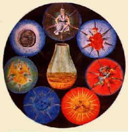 FIGURE XXVII |
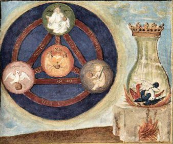 FIGURE XXVIII |
À
gauche, les principes principiés sous forme de
trinité et
de quaternité. Un cercle, figurant l'unus
mundus, et trois
sphères formant le . En
haut,
le Dieu pacificateur[Deux Pace] tenant en sa
main gauche la terre des
Sages
et
en sa main droite ce qui semble être un
sceptre mais qu'en
vérité on ne voit que très mal. Toutefois, il
est
d'usage que cela soit ainsi [cf.
Nona
figura,
De
Lapide Philosophorum,
Lambsprinck ou Al-Razi, Opera
medicinalia,
XVe siècle]. Le sceptre
est parfois
surmonté de l'aigle [aquila = ]
; il
combine alors
les deux attributs fondamentaux du feu secret,
symbolisés par
l'hexagramme de Salomon
[où
certains voient de
manière peut-être abusive, l'hiéroglyphe du
lapis].
Il faut plutôt voir dans le sceptre une
variation sur le
thème de la projection du bâton de
commandement,
l'âme transfigurée par le spiritus sanctus,
i.e. le
sulphur .
N'oublions pas le bâton d'Esculape en lacé par
le serpent,
qui représente l'emblème de notre corps de
métier
et enfin, last but not least, le bâton de
Moïse qui se
transformera en serpent d'airain, annonçant
par là
l'androgyne hermétique et préfiguration de la
croix
chrétienne. Ce même bâton d'ailleurs fait
sourdre de
d'une pierre, résultat attendu de l'action du
Mercurius qui doit
procurer à l'Artiste de l'eau de roche. À
gauche, le
spiritus sanctus sous les traits de la
colombe, juchée sur une
privée de sa croix. Dans les Racines
de la Conscience
[Jung, op. cit.], on trouve en note : « Après l'homme rouge, il trouve le corbeau noir duquel sort la colombe blanche. » [Visions de Zosime, p. 182] L'homme rouge peut représenter a priori l'homme double igné de Basile Valentin, qui, dans son Azoth, est l'emblème du laiton ; quant à la colombe, on l'assilmile au spiritus sanctus, cf. saint Jean le Baptiste. Toutefois, Jung présente une scène qui s'écoule de manière chronologique ; l'interprétation correcte semble être la suivante : l'homme rouge est le symbole du démon ou Mercurius senex [le daemon - Seth Python - que l'on voit figure XXV] ; le corbeau noir lui succède - dissolution où le caput précède les couleurs de la queue de paon - suivi par la colombe qui annonce la sortie du Pont-Euxin ; franchissement des roches cyanées et établissement de l'aqua permanens ; baptême de l'androgyne dans les eaux du Jourdain qui scelle la conjonction des principes. À droite, un enfant portant un bâton et une terre contenant une croix. Indubitablement, ce médaillon de droite ne peut signifier que la
naissante en tant que CORPS. Il s'agit donc du
filius, par opposition
au pater et au spiritus sanctus. Voilà qui
devrait nous amener
nécessairement à introduire quelques mots sur
la
trinité si nous n'avions traité déjà mille
fois ce sujet dans nos sections. Jung a
consacré
là-dessus des pages importantes dans son Essai
sur la symbolique
de l'Esprit [trad. Albin Michel, op.
cit.], cf. AC,
I.
Les alchimistes ont parlé de leur Mercure, de
leur Soufre et de
leur Sel mais cela ne saurait constituer la
Trinité, en tant que
clef pouvant ouvrir le scel de nature, donnant
accès à la
quaternité, c'est-à-dire au Mysterium
conjunctionis.
C'est la raison pour laquelle nous avons
évoqué supra
cette notion de principes « principiés » ou «
principiants » : cf. Chevreul,
critique
d'Artephius.
C'est par la croix - i.e. le FEU - que l'on
parvient à
transformer les principes simples en éléments
dynamiques
qui se trouvent exprimés, dans la figure
XXVIII,
par les liaisons entre les quatre sphères. La
quintessence n'est
pas absente du schéma : chaque sphère est
reliée
aux autres éléments par 5 liens. Seule la
sphère
centrale n'est reliée aux autres que par 3
liens : elle exprime
l'intrusion de la quaternité dans la trinité
et la
conjonction des principes. On remarquera
cependant qu'il ne s'agit pas
là de la conjonction des principes mâle et
femelle, mais
du père et du fils : c'est Senior et Adolphus
de l'Azoth
; c'est
encore les principes de Lambsprinck du De
Lapide Philosophorum,
ouvrage très important. Ce motif se retrouve
dans l'un des
caissons du château de Dampierre -
sur-Boutonne [caisson
n°5 de la série 3]. Enfin,
la sphère centrale ou
symbolise la
conjonction. On trouve une image analogue dans
la decimaquinta figura
du De
Lapide Philosophorum.
Cette decimaquinta figura est décrite par Jung
dans son
Psychologie et Alchimie, p. 438 : « la trinité alchimique : le roi et son fils avec Hermès entre eux (Hermès = Spiritus Mercurii, Esprit du Mercurius). » [Figurae et emblemata, in Musaeum Hermeticum]. Sur le spiritus mercurii de Jung, il peut s'agir de la « substance » qui y est infusée : ce ne peut être que le sulphur ou anima mundi. |
| La
forme essentielle et accidentelle se
conjuguent en une
singulière image : l'animus et l'anima. Les
figures XXIX et XXVI
doivent être rapprochées car elles sont
complémentaires. Il est probable qu'il
s'agisse d'une autre
version, sans doute postérieure. J. Van Lennep
ne
l'évoque pas [cf.
Alchimie,
p. 67]. L'amande tenue par la vierge
ailée contient deux objets qui nous sont
familiers : le glaive
et la c.
Les ailes arborent les trois couleurs de
l'oeuvre : noir, blanc et
rouge ; la robe est rouge. L'ensemble paraît
plus apaisé
que la version XXVI.
Ces ailes,
déployées, donnent toujours l'aspect de la
à cet ensemble. Van Lennep voit dans ce glaive
croisé le
caducée d'Hermès : aussi bien pouvons-nous
considérer qu'il s'agit là d'une variation sur
le
thème des Gémeaux de l'oeuvre, dont on trouve
une superbe
représentation dans l'une des images
du Livre d'Abraham Juif. On voit bien, en même
temps qu'un autre
signe se dégage : qu'il
faut
lire d'ailleurs ,
manière de combiner ce que Jung dit dans les
types
psychologiques, sur la réalité de l'âme, au
sujet
de la différence - et de la proximité - entre
homoousie [omoousioV = semblable
au Père, i.e. de la
nature de la susbtance, cf. figure
XXVIII]
et homoiousie [consubstantialité
et
analogie de la substance du christ avec Dieu,
i.e. de
la anture de l'essence, cf. supra].
Ces
deux hiéroglyphes rendent compte, par omoiow,
de l'importance fondamentale à accorder dans
l'alchimie au
concept d'assimilation et d'adaptation, qui
rend possible le lapis -
dans le monde physique - et dans le monde de
la psyché le
transfert et la projection. Précisons encore
que dans cette
croix que nous présente la vierge dans un
mandala, on peut
encore voir, outre le glaive de feu, les
initiales de I
C. Cette croix du
Christ, on peut aussi l'observer dans l'arbre
de vie de la figure
XXIV, arbre dont on rappelle
qu'il est couronné. |
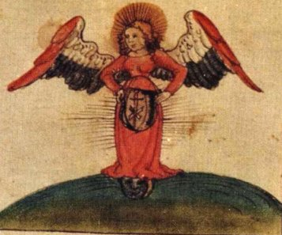 FIGURE XXIX |
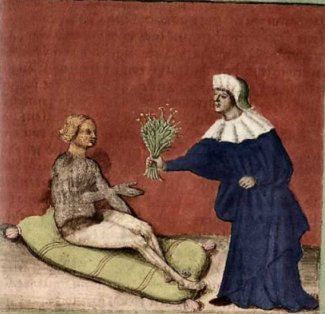 FIGURE XXX |
Version
là encore postérieure à celle de la figure
XIII. C'est
toujours le thème de l'hydropisie : l'Atalanta
fugiens
et le De
Lapide
Philosophorum de Lambsprinck nous
présentent des
allégories analogues [Atalanta
XLVIII
et decimaquarta figura].
Le roi, malade de
son hydrops, doit être soigné par des simples.
Dans l'emblème
XIII, Michel Maier
écrit : « Il y a de même une espèce de miracle à ce que l’airain des philosophes souffrant d’hydropisie en soit délivré par des lotions d’eau. » [Atalanta fugiens] Il s'agit des laveures de Flamel et l'alexipharmacon n'est autre que la digamma de Salomon .
Voyez
encore là-dessus des notes à l'Atalanta XV
et XL.
Considérez encore que l'hydropisie était jadis
une
maladie qu'on croyait influencée par la .
Il semblait
logique que l'on cherchât à la soigner par . Les deux écueils
principaux de
l'oeuvre sont la sécheresse précoce [pauvreté
d'Âme] et l'hydropisie [excès d'esprit ou esprit
fort]. Le
facteur principal de survenue de ces deux effets
indésirables
serait l'impatience. On trouve encore une
allégorie dans la Turba
: « Une grande Trésorière tomba malade de diverses maladies; pâles- couleurs, hydropisie, paralysie. Elle était extrêmement jaune depuis le haut de la tête jusqu’à la poitrine; depuis la poitrine jusqu’aux cuisses elle était blanche et enflée, et paralytique jusqu’en bas. Elle dit à son Médecin de lui chercher sur une montagne la plus haute de toutes, deux plantes d’une propriété et d’une vertu supérieure à toutes les autres plantes. Il lui en apporta, elle s’en ceignit, et se trouva dès le moment guérie de toutes ses infirmités. » Il n'est pas difficile de voir le symbole de la conjonction dans la recherche de la montagne la plus haute ; et celle des luminaires correspondant aux deux plantes. L'Adepte à qui l'on doit ce remarquable traité qu'est l'Oeuvre secret d'Hermès [qui n'est probablement pas de la main de Jeand 'Espagnet] dit encore : « Le vif-argent est tellement infecté par le défaut et le vice de son origine, qu'il en garde deux traces remarquables : la première, il l'a contractée par l'impureté de la terre qui s'est mêlée à sa génération, et qui continue à y adhérer par la congélation. L'autre, pareille à une hydropisie, est une maladie d'eau entre chair et cuir, qui provient d'une eau grasse et impure mélangée à la limpide, et que la nature n'a pas pu épuiser et séparer par contraction. » [cap. 50] L'expression clef est « maladie d'eau entre chair et cuir ». Posons que la chair représente le corps du lapis
et que le cuir est le symbole du sulphur .
L'opération doit consister à retirer
le surplus d'eau du Mercurius ,
c'est-à-dire d'en ôter Shlenh,
afin de
déposer la †
au centre de la nigredo
en sorte
d'achever la préparation de ioV,
dont on voit les
segments dans l'amande mystique de la figure
XXIX. On poura encore consulter les Fables
Egyptiennes et
Grecques de Dom Pernety, à
l'article : Des
maladies des métaux :« L'hydropisie du mercure ne lui arrive que de trop d'aquosité et de crudité qui trouvent leur cause dans la froideur de la matrice où il est engendré, et de défaut de temps pour se cuire. Ce vice est un péché originel dont tous les autres métaux participent. Cette froideur, cette crudité, cette aquosité ne peuvent être guéries que par la chaleur et l'ignéité d'un soufre bien puissant... » On comprend fort bien la raison pour laquelle Fulcanelli assure que la matière des Sages se présente comme Mercurius ou Sulphur selon la forme qu'elle adopte. C'est le lieu de citer les larmes de saint Pierre si l'on tient compte du fait que le Mercure n'est, somme toute, que de l'eau de roche [cf. notre saint Jean Baptiste]. Dès lors, on comprend le sens à donner aux nombreuses plumes violettes éparpillées au pied de l'androgyne de la figure I : relisons ce que dit Philalèthe dans sa préparation du régule étoilé d'antimoine : « J'ai marié l'aigle en faisant retomber la sublimation sur la confection, et y ajoutant de plus en plus et par degrés de son humeur ou humidité radicale ; et par là la consistance a été faite en fort bon régime; l'hydropisie qui avait régné dans chacune des trois premières aigles ou sublimations a cessé entièrement. » [VII. Autre purgation très bonne] Ces Aigles du Philalèthe ou sublimations répétées - il y en a sept - sont une allégorie portant sur la durée de la coction et il convient ici de considérer la symbolique du nombre sept. Nous terminerons l'examen de cette figure par une citation des Douze Portes [Compound of Alchemy, in Theatrum Chemicum Britannicum d'Ashmole] de Ripley : « CIBATION est la nutrition ou nourriture de notre Matière seiche, de lait puis de viande, lui donnant modérément de chacun, jusqu'à ce qu'elle soit réduite au troisième ordre. Mais ne lui donne jamais tant que tu puisses la suffoquer. Garde-là d'hydropisie et du déluge de Noé... » [Septième porte] |
| Cette
figure ne correspond pas à
la 1ère version du XVe siècle
et elle date
probablement du XVIe comme la
figure
XXX. Des
aigles, cinq, viennent s'abreuver à une
source d'eau vive dont
la nature ne laisse aucun doute : il
s'agit de l'aqua permanens et le
travail se fait au creuset sous un feu
soutenu dont Fulcanelli assure
qu'il est du 4ème degré [1200
°C]. Nous
savons que l'aigle réalise la transition
entre
et .
Il permet d'assurer la production
d'un
qui participe à la fois du
et du .
Le but
est la
surrection d'une ,
la Délos hermétique : c'est cette terre
qui assurera
à Latone d'échapper au pouvoir de
Typhon. Ce liquide en
fusion n'est autre que l'ugroliqoV
ou pierre liquide : il s'agit des «
larmes de saint Pierre
» que nous évoquions tout à l'heure.
Zosime, dans
ses Visions, évoque cette pierre [Traité
du
divin Zosime sur l'Art, collection
des Anciens
alchimistes grecs,
Berthelot, Paris, 1887].
D'ailleurs, on pourrait penser que - par
cabale - cette figure
évoque la rencontre de saint Jean
[l'Aigle] et de saint Pierre.
En effet, nous avons donné dans l'examen
du retable
baroque d'Issenheim un texte
tout à fait singulier sur saint Pierre
qui permet d'envisager ce
rapprochement étonnant : cette pierre
liquide peut
représenter cette tête chauve et
vénérable,
image de ce vieillard
qui
pleure
amèrement et qui prie les mains jointes.
Ne peut-on y voir le
vieillard de la tradition alchimique,
c'est-à-dire le Mercurius
senex ? Selon ce qu'en disent les
Phrygiens, saint Pierre ne serait
autre qu'Annac qui vivait au temps de
Deucalion. Le rapport
s'établit instantanément avec la figure
XXXI : l'aigle
constitue le symbole des sublimations
philosophiques et permet de
guérir le vieux roi de son hydropisie -
revoyez la figure
I:
l'entassement des oiseaux correspond aux
assauts du Mercure face au
FEU dont le but - pour l'Artiste - est
d'obtenir l'assation, c'est -
à-dire de faire en sorte que la
coagulation de l'eau mercurielle
survienne. Ces aigles symbolisent ici la
fixation du volatil en ceci,
que cet oiseau est l'instrument qui
permet de volatiliser la
dissolution, c'est-à-dire de faire
disparaître la noirceur
: il assure la transition entre la
nigredo et l'albedo. Aussi est-il
lié à Zeus, cf. emblème
LXVI de l'Atalanta
fugiens.
Dans les régimes de couleur, celui
de se situe
entre et
: Pernety lui attribue la couleur grise.
La clef du problème se
situe dans la conduite du feu - nous
entendons parler du feu secret :
Héphaistos. Nous en parlerons dans la
figure suivante.
|
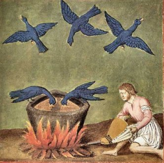 FIGURE XXXI |
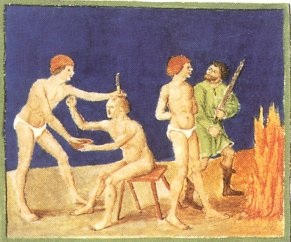 FIGURE XXXII |
La figure
XXXII
est divisée en deux tableaux ; celui de
droite ne pose
guère de problème. On mène un personnage
garrotté au feu. Semblable allégorie se
retrouve dans l'emblème
XX de l'Atalanta
fugiens,
à la différence que c'est un chevalier
qui est
convié par Diane au combat contre .
L'allégorie est claire : la matière de
l'oeuvre doit
passer au creuset [crux] afin de subir
une dissolution, condition sine
qua non de sa dépuration, qui la
conduira à la
réincrudation [l'analogue
de
ce que Jung nomme, en psychanalyse le
processus d'individuation, cf.
supra et AC,
I]. Le
tableau de gauche, en revanche, est plus
complexe : il s'agit d'une
trépanation [on
consultera
le site suivant : http://loic.hibon.free.fr/].
Que
recouvre cette nouvelle énigme ? La
mythologie
répondra pour partie à cette question :
on sait
qu'Héphaistos fend le crâne de Zeus pour
en faire sortir
Pallas Athéna, « toute armée » et qu'il
faut
y voir notre ,
cf
là-dessus Atalanta
fugiens, emblème
XXIII. Dans le Platonis
Libri Quartorum
[Theatrum
Chemicum, vol. V,
1622, pp. 101-185], on trouve
des passages que Jung a
soulignés dans le Symbole
de
la Transsubstantation : « La " chose ronde " est la " chose simple " dont on a besoin dans l'oeuvre. Elle est projetée du crâne " videlicet capitis elementi hominis " ... » [in Racines de la conscience, op. cit., p. 265] Ce vase rond est appelé par Zosime W et il y a un rapport évident entre la pierre des philosophes et « la pierre toute blanche qui est dans la tête » [cité par Jung, d'après Berthelot, Alchimistes Grecs, III, xxix, 4]. Il est possible que l'on trouve dans le chapitre VIII de l'Aurora Consurgens : la Troisième Parabole : De la porte d'airain et du verrou de fer de la captivité de Babylone une analogie avec cette allégorie de la trépanation, opération par laquelle on extrait de l'esprit ,
l'âme vive
: en
témoigne ce passage que cite M.-L. von
Franz du Platonis
Libri Quartorum
[p. 144, op. cit.] :« Ceux qui demeurent au bord du fleuve Euphrate sont les Chaldéens ... les premiers qui parvinrent à extraire la pensée. » [Aurora Consurgens, trad. la Fontaine de Pierre, p. 89] Et il y a dans ce chapitre VIII ceci : « Car cette génération arrive et passe jusqu'à ce que vienne celui qui doit être envoyé, qui ôte le joug de notre captivité ... » [op. cit., p. 89] Et l'on sait, en alchimie, que c'est toujours l'âme qui est captive ; obtenir l'humide radical, i.e. passer la matière au feu, c'est avant tout faire du métal une chaux et l'ouvrir. Il y a lieu ici évidemment de rapprocher la figure XXXII de la figure XXIV. Strabon rapporte qu'il plut de l'or à Rhodes lorsque Minerve naquit du cerveau de Jupiter : n'est-ce pas là l'opération de l'anima consurgens , cf. AC,
I ? Nous
pourrions signaler de même
que korrh
signifie frapper à la tempe :
Héphaistos ne fait-il pas
sortir Pallas Athéna du cerveau - de
l'esprit - de Zeus en lefrappant à la tempe ? Et ne produit-il pas, ainsi, le BasileuV de l'oeuvre : koroV
? Il y a là, à n'en pas douter, un
entrelacs spirituel
où seul le cabaliste peut arriver à
tirer
littéralement l'eau du puits... [cf.
Aureum
Seculum Redivivum et
Jung, Mysterium
conjunctionis,
II, pp.
314-315, le
monocolus, trad. Albin
Michel,
1982] |